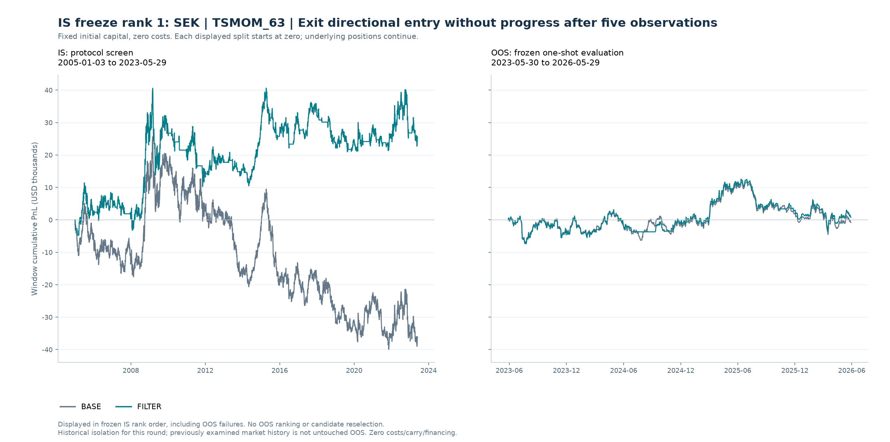
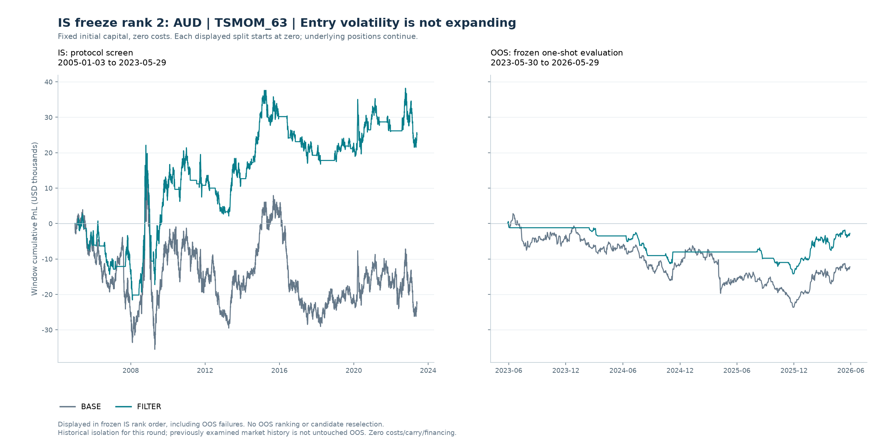
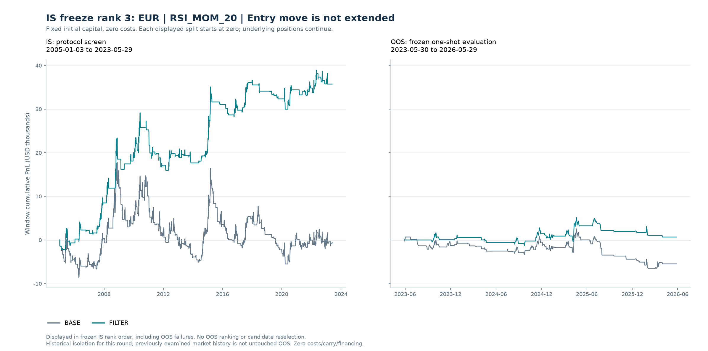
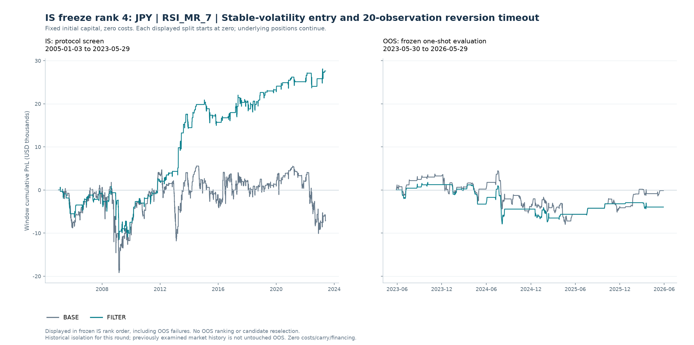
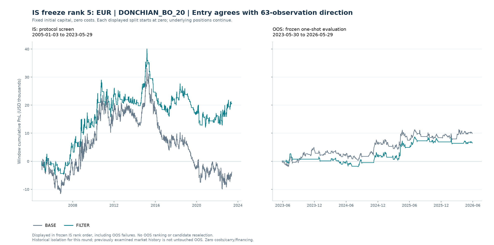
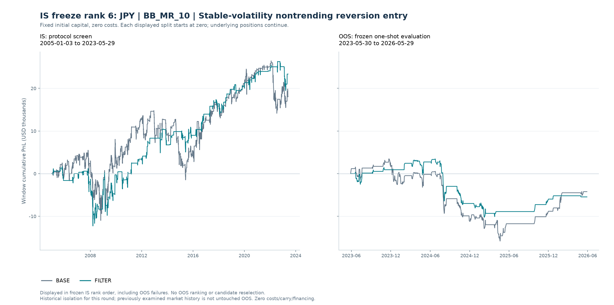

先筛选，再冻结，再评估
当前状态：已按冻结集合完成 OOS 一次评估；本轮 6 个冻结候选中，0 个满足预写 OOS 曲线标准。另有 1 个通过交易质量确认，同时满足两者的为 0 个。本轮目标尚未达成；交易质量单项确认不能替代曲线标准。
预写协议 SHA-256：f177e690c0efa07b8efc3f331706251b6383a662fd57683ff76c6f37f3c37839
冻结集合 SHA-256：60121ca59443ceb6ec9ccf2f9312dfa44df0f5bd60b99a683ec5a79a6b45a671
freeze_rank 排序。OOS 收益、胜率、回撤或最终成败均不参与候选选择、图册顺序或展示取舍。报告不把历史隔离声称为全新的未触碰样本外证据。IS 综合门槛（需同时满足）
- IS 简单年化至少 1%
- IS 累计收益比 BASE 至少改善 5 pp
- IS 交易胜率至少改善 2 pp
- IS 盈亏比至少相对提高 10%
- IS 最大回撤恶化不超过 2 pp
- IS 至少 50 笔合格已平仓交易
- IS 合格已平仓交易保留比例至少 50%
- IS 三个预设分段中至少 2 段正收益
- IS 三个预设分段中至少 2 段优于 BASE
- 最后一个 IS 分段必须同时正收益且优于 BASE
- IS 收益 / 回撤比必须优于 BASE：累计单利收益除以最大回撤的绝对值；零回撤边界按预写筛选实现处理
冻结后评价 OOS 的预写曲线标准
- OOS 简单年化至少 1%
- OOS 累计收益比 BASE 至少改善 0 pp
- OOS 最大回撤不低于 -15 pp
- 三个 OOS 周年区间中至少 2 段正收益
- OOS 至少 10 笔合格已平仓交易
交易质量另行确认：OOS 的胜率和盈亏比均不劣于 BASE，且至少有 20 笔合格已平仓交易。该确认不授权根据 OOS 修改阈值或重选候选。
IS 预写综合标准原记录
| min_gross_annualized_simple_pct | 1.00 |
|---|---|
| min_return_improvement_pp | 5.00 |
| min_win_rate_improvement_pp | 2.00 |
| min_payoff_relative_improvement | 0.10 |
| max_drawdown_deterioration_pp | 2.00 |
| return_to_drawdown_must_improve | 是 |
| min_closed_trades | 50 |
| min_closed_retention | 0.50 |
| min_positive_is_blocks | 2 |
| min_improved_is_blocks | 2 |
| last_is_block_positive_and_improved | 是 |
| one_way_cost_bp | 0.00 |
| cost_sensitivity_evaluated | 否 |
| cost_instruction | User explicitly requested no costs for this round. |
| rank | ["gross_return_improvement_pp DESC", "payoff_absolute_improvement DESC", "win_rate_improvement_pp DESC", "candidate_id ASC"] |
| freeze | One highest IS-ranked passing NEW filter per pair/strategy. All passing versions retained in IS table. |
| schedule_delay_is_diagnostic_only | 是 |
OOS 预写评价标准原记录（不用于重选）
| min_net_annualized_simple_pct | 1.00 |
|---|---|
| min_net_return_improvement_pp | 0.00 |
| worst_net_drawdown_pp | -15.00 |
| min_positive_anniversary_years | 2 |
| min_closed_trades | 10 |
| quality_confirmation | Separately report whether both gross trade win rate and payoff are no worse than BASE, with >=20 closed trades. Not a license to tune on OOS. |
比较口径：固定本金单利，零成本
每个独立账户使用固定初始本金 $100,000。日 PnL 为固定本金乘实际持仓方向及现货日收益，逐日相加。本轮不计交易成本、carry、融资或现金利息。简单年化为区间单利收益除以实际日历年数，不是 CAGR。
IS 与 OOS 图形分别重置累计 PnL 为零；这只是显示归零，不能解释为在分界日清仓或重新训练。跨界持仓在 OOS 内发生的日收益仍进入 OOS 账户表现。最大回撤以初始本金百分点表示。交易胜率、盈亏比与已平仓数仅覆盖区间内开仓且在区间末前真实平仓、至少获得一个收益观测的交易；跨界持仓和期末未平仓交易另列。保留比例为 FILTER 合格已平仓数除以同区间 BASE 数量。
少于 20 笔合格已平仓交易标为低样本；OOS 曲线标准与额外交易质量确认分别列示。未定义统计显示“—”，不代表零。全部数值与冻结标准均来自计算模块，报告不重选阈值或补造 OOS。
完整冻结清单：固定 IS 顺序
IS 共评估 1,734 个规则 / 币种 / filter 组合；综合通过 9 个。 每个币种 / 技术规则最多冻结一个 IS 排名最高的新增达标 filter。其他通过版本和未通过版本保留在完整 IS 表，不凭 OOS 替换冻结者。
| IS 冻结顺序 | 冻结候选 | 币种 | 技术规则 | 过滤条件 |
|---|---|---|---|---|
| 1.00 | SEK|TSMOM_63|MOM_NO_PROGRESS_5 | SEK | TSMOM_63 | Exit directional entry without progress after five observations |
| 2.00 | AUD|TSMOM_63|VOL_NOT_EXPANDING | AUD | TSMOM_63 | Entry volatility is not expanding |
| 3.00 | EUR|RSI_MOM_20|ENTRY_NOT_EXTENDED | EUR | RSI_MOM_20 | Entry move is not extended |
| 4.00 | JPY|RSI_MR_7|VOL_TIME_20 | JPY | RSI_MR_7 | Stable-volatility entry and 20-observation reversion timeout |
| 5.00 | EUR|DONCHIAN_BO_20|MOM_ALIGNED_63 | EUR | DONCHIAN_BO_20 | Entry agrees with 63-observation direction |
| 6.00 | JPY|BB_MR_10|VOL_TREND_CONFLICT | JPY | BB_MR_10 | Stable-volatility nontrending reversion entry |
全部冻结候选的 IS / OOS 结果
以下保持原 IS 冻结顺序，包含 OOS 未通过者；不按 OOS 盈亏排序。
| IS 冻结顺序 | 币种 | 技术规则 | 过滤条件 | IS FILTER 累计 % | OOS FILTER 累计 % | OOS BASE 累计 % | 预写OOS曲线标准 | OOS交易质量确认 |
|---|---|---|---|---|---|---|---|---|
| 1.00 | SEK | TSMOM_63 | Exit directional entry without progress after five observations | 25.51 | 0.79 | -0.83 | 否 | 否 |
| 2.00 | AUD | TSMOM_63 | Entry volatility is not expanding | 25.15 | -2.77 | -12.21 | 否 | 否 |
| 3.00 | EUR | RSI_MOM_20 | Entry move is not extended | 35.73 | 0.67 | -5.47 | 否 | 是 |
| 4.00 | JPY | RSI_MR_7 | Stable-volatility entry and 20-observation reversion timeout | 27.60 | -3.96 | -0.14 | 否 | 否 |
| 5.00 | EUR | DONCHIAN_BO_20 | Entry agrees with 63-observation direction | 20.56 | 6.47 | 9.89 | 否 | 否 |
| 6.00 | JPY | BB_MR_10 | Stable-volatility nontrending reversion entry | 23.35 | -5.45 | -4.22 | 否 | 否 |
完整 IS 筛选记录：含未通过与通过但未冻结版本
| 冻结候选 | 币种 | 技术规则 | 过滤条件 | 新增过滤版本 | IS 综合通过 | 已冻结 | IS 冻结顺序 | IS单利累计 % | IS收益改善 pp | IS胜率改善 pp | IS盈亏比相对改善 % | IS已平仓数 | 已平仓交易保留比例 % | IS未通过项目 |
|---|---|---|---|---|---|---|---|---|---|---|---|---|---|---|
| CHF|VOTE_STRENGTH_4|VOL_NOT_EXPANDING | CHF | VOTE_STRENGTH_4 | Entry volatility is not expanding | 是 | 否 | 否 | — | 14.95 | 78.29 | -0.01 | 66.65 | 143 | 51.62 | positive_and_annualized_pass|win_rate_pass|block_positive_pass |
| NZD|MA_10_30|TREND_EFFICIENCY_63 | NZD | MA_10_30 | Require directional 63-observation path | 是 | 否 | 否 | — | 13.60 | 75.65 | 4.91 | 97.14 | 17 | 8.81 | positive_and_annualized_pass|sample_pass|block_improvement_pass |
| SEK|MA_10_30|VOL_NOT_EXPANDING | SEK | MA_10_30 | Entry volatility is not expanding | 是 | 否 | 否 | — | 54.24 | 75.42 | 1.65 | 54.38 | 96 | 53.04 | win_rate_pass |
| NOK|VOTE_STRENGTH_4|VOL_NOT_EXPANDING | NOK | VOTE_STRENGTH_4 | Entry volatility is not expanding | 是 | 否 | 否 | — | 40.77 | 73.53 | 5.72 | 21.66 | 137 | 53.52 | block_improvement_pass |
| NOK|MA_10_30|VOL_NOT_EXPANDING | NOK | MA_10_30 | Entry volatility is not expanding | 是 | 否 | 否 | — | 40.91 | 68.20 | 5.27 | 20.24 | 105 | 52.76 | block_improvement_pass |
| CHF|MA_10_30|VOL_NOT_EXPANDING | CHF | MA_10_30 | Entry volatility is not expanding | 是 | 否 | 否 | — | -8.05 | 68.15 | 0.93 | 32.66 | 96 | 47.29 | positive_and_annualized_pass|win_rate_pass|sample_pass |
| SEK|TSMOM_63|MOM_NO_PROGRESS_5 | SEK | TSMOM_63 | Exit directional entry without progress after five observations | 是 | 是 | 是 | 1.00 | 25.51 | 61.71 | 2.95 | 20.98 | 305 | 100.00 | — |
| CHF|MA_10_30|TREND_EFFICIENCY_63 | CHF | MA_10_30 | Require directional 63-observation path | 是 | 否 | 否 | — | -18.14 | 58.07 | 3.61 | -35.24 | 21 | 10.34 | positive_and_annualized_pass|payoff_pass|sample_pass|block_positive_pass |
| CHF|MA_10_30|TRAIL_2VOL | CHF | MA_10_30 | Trail earned gains by two entry-volatility units | 是 | 否 | 否 | — | -18.48 | 57.72 | 7.39 | -0.43 | 203 | 100.00 | positive_and_annualized_pass|payoff_pass|block_positive_pass |
| NZD|MA_10_30|MOM_ALIGNED_63 | NZD | MA_10_30 | Entry agrees with 63-observation direction | 是 | 否 | 否 | — | -4.56 | 57.48 | -1.53 | 33.65 | 95 | 49.22 | positive_and_annualized_pass|win_rate_pass|sample_pass|block_positive_pass|block_improvement_pass |
| CHF|VOTE_STRENGTH_4|TREND_EFFICIENCY_63 | CHF | VOTE_STRENGTH_4 | Require directional 63-observation path | 是 | 否 | 否 | — | -6.52 | 56.83 | 11.88 | -60.40 | 11 | 3.97 | positive_and_annualized_pass|payoff_pass|sample_pass|block_positive_pass |
| NOK|DONCHIAN_BO_10|TREND_EFFICIENCY_63 | NOK | DONCHIAN_BO_10 | Require directional 63-observation path | 是 | 否 | 否 | — | -14.46 | 56.67 | 4.00 | -15.49 | 77 | 17.74 | positive_and_annualized_pass|payoff_pass|sample_pass|block_positive_pass|block_improvement_pass |
| AUD|BB_BO_10|ENTRY_NOT_EXTENDED | AUD | BB_BO_10 | Entry move is not extended | 是 | 否 | 否 | — | -24.29 | 56.14 | 2.26 | 28.75 | 141 | 71.57 | positive_and_annualized_pass|block_positive_pass |
| CHF|DONCHIAN_BO_20|TREND_EFFICIENCY_63 | CHF | DONCHIAN_BO_20 | Require directional 63-observation path | 是 | 否 | 否 | — | 12.87 | 55.40 | 9.26 | 39.80 | 26 | 11.30 | positive_and_annualized_pass|sample_pass|block_positive_pass |
| SEK|BB_BO_10|TREND_EFFICIENCY_63 | SEK | BB_BO_10 | Require directional 63-observation path | 是 | 否 | 否 | — | 11.51 | 54.83 | 8.37 | 42.29 | 38 | 19.00 | positive_and_annualized_pass|sample_pass |
| GBP|VOTE_STRENGTH_4|TREND_EFFICIENCY_63 | GBP | VOTE_STRENGTH_4 | Require directional 63-observation path | 是 | 否 | 否 | — | 11.97 | 53.94 | 0.73 | 198.78 | 13 | 4.59 | positive_and_annualized_pass|win_rate_pass|sample_pass|block_positive_pass |
| CHF|TSMOM_63|TREND_EFFICIENCY_63 | CHF | TSMOM_63 | Require directional 63-observation path | 是 | 否 | 否 | — | -22.05 | 53.68 | -37.46 | — | 3 | 1.03 | positive_and_annualized_pass|win_rate_pass|payoff_pass|return_to_drawdown_pass|sample_pass|block_positive_pass |
| NOK|VOTE_STRENGTH_4|TREND_EFFICIENCY_63 | NOK | VOTE_STRENGTH_4 | Require directional 63-observation path | 是 | 否 | 否 | — | 20.80 | 53.56 | 23.18 | 94.34 | 12 | 4.69 | sample_pass|block_improvement_pass |
| CHF|BB_BO_20|TREND_EFFICIENCY_63 | CHF | BB_BO_20 | Require directional 63-observation path | 是 | 否 | 否 | — | 4.92 | 53.16 | 6.19 | 35.16 | 23 | 13.53 | positive_and_annualized_pass|sample_pass|block_positive_pass |
| SEK|VOTE_STRENGTH_4|VOL_NOT_EXPANDING | SEK | VOTE_STRENGTH_4 | Entry volatility is not expanding | 是 | 否 | 否 | — | 28.21 | 53.15 | 1.82 | 26.95 | 147 | 53.26 | win_rate_pass |
| CHF|TSMOM_21|TREND_EFFICIENCY_63 | CHF | TSMOM_21 | Require directional 63-observation path | 是 | 否 | 否 | — | -2.08 | 50.49 | -4.94 | 44.06 | 61 | 12.98 | positive_and_annualized_pass|win_rate_pass|sample_pass|block_positive_pass |
| CHF|VOTE_EQUAL_4|TREND_EFFICIENCY_63 | CHF | VOTE_EQUAL_4 | Require directional 63-observation path | 是 | 否 | 否 | — | 5.63 | 50.49 | 3.05 | 31.96 | 38 | 12.97 | positive_and_annualized_pass|sample_pass|block_positive_pass |
| CHF|VOTE_EQUAL_4|VOL_NOT_EXPANDING | CHF | VOTE_EQUAL_4 | Entry volatility is not expanding | 是 | 否 | 否 | — | 4.87 | 49.73 | 1.74 | 20.90 | 152 | 51.88 | positive_and_annualized_pass|win_rate_pass|block_positive_pass |
| CHF|TSMOM_63|VOL_NOT_EXPANDING | CHF | TSMOM_63 | Entry volatility is not expanding | 是 | 否 | 否 | — | -26.10 | 49.63 | 0.45 | 16.32 | 153 | 52.58 | positive_and_annualized_pass|win_rate_pass|block_positive_pass |
| NOK|MACD_12_26_9|TREND_EFFICIENCY_63 | NOK | MACD_12_26_9 | Require directional 63-observation path | 是 | 否 | 否 | — | 22.32 | 49.41 | 10.72 | -8.09 | 83 | 20.91 | payoff_pass|sample_pass|block_improvement_pass |
| NOK|VOTE_EQUAL_4|MOM_ALIGNED_63 | NOK | VOTE_EQUAL_4 | Entry agrees with 63-observation direction | 是 | 否 | 否 | — | 7.44 | 47.76 | 2.49 | 10.41 | 178 | 60.54 | positive_and_annualized_pass|block_improvement_pass |
| AUD|TSMOM_63|VOL_NOT_EXPANDING | AUD | TSMOM_63 | Entry volatility is not expanding | 是 | 是 | 是 | 2.00 | 25.15 | 47.73 | 3.36 | 15.20 | 200 | 63.09 | — |
| SEK|BB_BO_20|TREND_EFFICIENCY_63 | SEK | BB_BO_20 | Require directional 63-observation path | 是 | 否 | 否 | — | 17.35 | 47.55 | 0.31 | 104.97 | 29 | 18.35 | positive_and_annualized_pass|win_rate_pass|sample_pass|block_positive_pass |
| GBP|VOTE_EQUAL_4|TREND_EFFICIENCY_63 | GBP | VOTE_EQUAL_4 | Require directional 63-observation path | 是 | 否 | 否 | — | -6.75 | 46.48 | -5.23 | 33.83 | 41 | 14.29 | positive_and_annualized_pass|win_rate_pass|sample_pass|block_positive_pass |
| CHF|RSI_MOM_14|VOL_NOT_EXPANDING | CHF | RSI_MOM_14 | Entry volatility is not expanding | 是 | 否 | 否 | — | 0.46 | 45.58 | 0.19 | 32.29 | 226 | 56.50 | positive_and_annualized_pass|win_rate_pass|block_positive_pass |
| NZD|MA_10_30|MOM_NO_PROGRESS_5 | NZD | MA_10_30 | Exit directional entry without progress after five observations | 是 | 否 | 否 | — | -16.69 | 45.36 | -3.11 | 34.06 | 193 | 100.00 | positive_and_annualized_pass|win_rate_pass|block_positive_pass |
| SEK|TSMOM_63|ENTRY_NOT_EXTENDED | SEK | TSMOM_63 | Entry move is not extended | 是 | 否 | 否 | — | 9.09 | 45.30 | 2.06 | 13.75 | 254 | 83.28 | positive_and_annualized_pass |
| SEK|TSMOM_63|VOL_NOT_EXPANDING | SEK | TSMOM_63 | Entry volatility is not expanding | 是 | 否 | 否 | — | 8.84 | 45.05 | -0.92 | 29.78 | 167 | 54.75 | positive_and_annualized_pass|win_rate_pass|block_positive_pass |
| CHF|MA_20_60|TREND_EFFICIENCY_63 | CHF | MA_20_60 | Require directional 63-observation path | 是 | 否 | 否 | — | -18.01 | 44.75 | -15.74 | -12.79 | 6 | 5.56 | positive_and_annualized_pass|win_rate_pass|payoff_pass|sample_pass|block_positive_pass |
| NOK|VOTE_STRENGTH_4|MOM_ALIGNED_63 | NOK | VOTE_STRENGTH_4 | Entry agrees with 63-observation direction | 是 | 否 | 否 | — | 11.39 | 44.16 | 4.84 | 0.92 | 140 | 54.69 | positive_and_annualized_pass|payoff_pass|block_positive_pass|block_improvement_pass |
| NOK|RSI_MR_20|COMMODITY_USD | NOK | RSI_MR_20 | Reject the existing commodity and dollar conflict | 否 | 否 | 否 | — | 14.97 | 43.54 | 30.43 | — | 6 | 26.09 | positive_and_annualized_pass|payoff_pass|sample_pass |
| NOK|MACD_12_26_9|MOM_ALIGNED_63 | NOK | MACD_12_26_9 | Entry agrees with 63-observation direction | 是 | 否 | 否 | — | 16.19 | 43.28 | 1.10 | 13.06 | 198 | 49.87 | positive_and_annualized_pass|win_rate_pass|sample_pass|block_positive_pass|block_improvement_pass |
| NOK|MA_10_30|MOM_ALIGNED_63 | NOK | MA_10_30 | Entry agrees with 63-observation direction | 是 | 否 | 否 | — | 15.77 | 43.05 | -0.57 | 26.76 | 94 | 47.24 | positive_and_annualized_pass|win_rate_pass|sample_pass|block_improvement_pass |
| SEK|DONCHIAN_BO_20|TREND_EFFICIENCY_63 | SEK | DONCHIAN_BO_20 | Require directional 63-observation path | 是 | 否 | 否 | — | 20.06 | 42.70 | 4.10 | 63.45 | 32 | 14.61 | sample_pass |
| AUD|BB_BO_10|TREND_EFFICIENCY_63 | AUD | BB_BO_10 | Require directional 63-observation path | 是 | 否 | 否 | — | -38.00 | 42.43 | -6.04 | -23.09 | 40 | 20.30 | positive_and_annualized_pass|win_rate_pass|payoff_pass|return_to_drawdown_pass|sample_pass|block_positive_pass |
| GBP|RSI_MOM_7|TREND_EFFICIENCY_63 | GBP | RSI_MOM_7 | Require directional 63-observation path | 是 | 否 | 否 | — | -2.10 | 42.14 | 8.14 | -18.14 | 109 | 15.59 | positive_and_annualized_pass|payoff_pass|sample_pass |
| NZD|VOTE_EQUAL_4|MOM_NO_PROGRESS_5 | NZD | VOTE_EQUAL_4 | Exit directional entry without progress after five observations | 是 | 否 | 否 | — | 48.01 | 41.98 | 4.42 | 2.20 | 294 | 100.00 | payoff_pass |
| CHF|VOTE_STRENGTH_4|MOM_ALIGNED_63 | CHF | VOTE_STRENGTH_4 | Entry agrees with 63-observation direction | 是 | 否 | 否 | — | -21.87 | 41.48 | 3.23 | 0.37 | 144 | 51.99 | positive_and_annualized_pass|payoff_pass|block_positive_pass |
| NOK|BB_BO_10|TREND_EFFICIENCY_63 | NOK | BB_BO_10 | Require directional 63-observation path | 是 | 否 | 否 | — | 5.78 | 41.41 | 16.65 | -22.56 | 32 | 15.84 | positive_and_annualized_pass|payoff_pass|sample_pass|block_positive_pass|block_improvement_pass |
| SEK|VOTE_STRENGTH_4|MOM_ALIGNED_63 | SEK | VOTE_STRENGTH_4 | Entry agrees with 63-observation direction | 是 | 否 | 否 | — | 16.38 | 41.31 | 0.03 | 28.40 | 146 | 52.90 | positive_and_annualized_pass|win_rate_pass|block_positive_pass|block_improvement_pass |
| NOK|DONCHIAN_BO_10|VOL_NOT_EXPANDING | NOK | DONCHIAN_BO_10 | Entry volatility is not expanding | 是 | 否 | 否 | — | -30.47 | 40.66 | 3.41 | -10.57 | 227 | 52.30 | positive_and_annualized_pass|payoff_pass|block_positive_pass|block_improvement_pass |
| AUD|MACD_12_26_9|MOM_NO_PROGRESS_5 | AUD | MACD_12_26_9 | Exit directional entry without progress after five observations | 是 | 否 | 否 | — | 7.39 | 40.29 | 1.36 | 7.05 | 369 | 100.00 | positive_and_annualized_pass|win_rate_pass|payoff_pass|block_improvement_pass |
| SEK|MA_10_30|MOM_NO_PROGRESS_5 | SEK | MA_10_30 | Exit directional entry without progress after five observations | 是 | 否 | 否 | — | 18.27 | 39.45 | -3.31 | 42.26 | 181 | 100.00 | positive_and_annualized_pass|win_rate_pass |
| NZD|MA_10_30|VIX_RISING | NZD | MA_10_30 | Reject elevated and rising VIX | 是 | 否 | 否 | — | -22.82 | 39.23 | 1.60 | 8.94 | 169 | 87.56 | positive_and_annualized_pass|win_rate_pass|payoff_pass|block_positive_pass |
| SEK|TSMOM_21|MOM_ALIGNED_63 | SEK | TSMOM_21 | Entry agrees with 63-observation direction | 是 | 否 | 否 | — | 24.60 | 39.14 | -1.45 | 26.12 | 240 | 49.28 | win_rate_pass|sample_pass |
| NOK|DONCHIAN_BO_20|MOM_ALIGNED_63 | NOK | DONCHIAN_BO_20 | Entry agrees with 63-observation direction | 是 | 否 | 否 | — | 3.74 | 38.47 | 1.52 | 12.36 | 130 | 57.52 | positive_and_annualized_pass|win_rate_pass|block_improvement_pass |
| CHF|DONCHIAN_BO_20|VOL_NOT_EXPANDING | CHF | DONCHIAN_BO_20 | Entry volatility is not expanding | 是 | 否 | 否 | — | -4.46 | 38.07 | 0.29 | 19.21 | 126 | 54.78 | positive_and_annualized_pass|win_rate_pass|block_positive_pass |
| GBP|DONCHIAN_BO_20|TREND_EFFICIENCY_63 | GBP | DONCHIAN_BO_20 | Require directional 63-observation path | 是 | 否 | 否 | — | -11.06 | 37.94 | -7.71 | 32.60 | 34 | 14.35 | positive_and_annualized_pass|win_rate_pass|sample_pass|block_positive_pass |
| JPY|DONCHIAN_BO_10|MOM_ALIGNED_63 | JPY | DONCHIAN_BO_10 | Entry agrees with 63-observation direction | 是 | 否 | 否 | — | 34.56 | 37.64 | -0.06 | 32.94 | 218 | 54.64 | win_rate_pass |
| CHF|MA_10_30|MOM_ALIGNED_63 | CHF | MA_10_30 | Entry agrees with 63-observation direction | 是 | 否 | 否 | — | -38.87 | 37.34 | 6.08 | -21.93 | 106 | 52.22 | positive_and_annualized_pass|payoff_pass|block_positive_pass |
| NZD|MACD_12_26_9|TRAIL_2VOL | NZD | MACD_12_26_9 | Trail earned gains by two entry-volatility units | 是 | 否 | 否 | — | 45.45 | 37.08 | 4.38 | -6.69 | 388 | 100.00 | payoff_pass|block_improvement_pass |
| AUD|MACD_12_26_9|VOL_NOT_EXPANDING | AUD | MACD_12_26_9 | Entry volatility is not expanding | 是 | 否 | 否 | — | 4.13 | 37.03 | -1.83 | 21.77 | 191 | 51.76 | positive_and_annualized_pass|win_rate_pass|block_improvement_pass |
| NOK|DONCHIAN_BO_20|TREND_EFFICIENCY_63 | NOK | DONCHIAN_BO_20 | Require directional 63-observation path | 是 | 否 | 否 | — | 2.09 | 36.82 | -3.05 | 42.87 | 34 | 15.04 | positive_and_annualized_pass|win_rate_pass|sample_pass|block_positive_pass|block_improvement_pass |
| AUD|MACD_12_26_9|COMMODITY_USD | AUD | MACD_12_26_9 | Reject the existing commodity and dollar conflict | 否 | 否 | 否 | — | 3.79 | 36.68 | 0.59 | 9.19 | 279 | 75.61 | positive_and_annualized_pass|win_rate_pass|payoff_pass|block_improvement_pass |
| GBP|TSMOM_21|MOM_NO_PROGRESS_5 | GBP | TSMOM_21 | Exit directional entry without progress after five observations | 是 | 否 | 否 | — | 14.51 | 36.52 | 1.05 | 12.20 | 474 | 100.00 | positive_and_annualized_pass|win_rate_pass |
| EUR|RSI_MOM_20|ENTRY_NOT_EXTENDED | EUR | RSI_MOM_20 | Entry move is not extended | 是 | 是 | 是 | 3.00 | 35.73 | 36.32 | 11.28 | 11.46 | 141 | 51.27 | — |
| NZD|MA_10_30|VOL_NOT_EXPANDING | NZD | MA_10_30 | Entry volatility is not expanding | 是 | 否 | 否 | — | -25.80 | 36.25 | -2.62 | 21.53 | 104 | 53.89 | positive_and_annualized_pass|win_rate_pass|block_positive_pass |
| GBP|DONCHIAN_BO_20|VOL_NOT_EXPANDING | GBP | DONCHIAN_BO_20 | Entry volatility is not expanding | 是 | 否 | 否 | — | -12.78 | 36.22 | 1.07 | 9.07 | 122 | 51.48 | positive_and_annualized_pass|win_rate_pass|payoff_pass|block_positive_pass |
| NOK|VOTE_EQUAL_4|TREND_EFFICIENCY_63 | NOK | VOTE_EQUAL_4 | Require directional 63-observation path | 是 | 否 | 否 | — | -4.20 | 36.11 | -1.57 | 10.87 | 41 | 13.95 | positive_and_annualized_pass|win_rate_pass|sample_pass|block_positive_pass|block_improvement_pass |
| SEK|MA_10_30|VIX_RISING | SEK | MA_10_30 | Reject elevated and rising VIX | 是 | 否 | 否 | — | 14.72 | 35.90 | 1.44 | 10.63 | 160 | 88.40 | positive_and_annualized_pass|win_rate_pass |
| CHF|MA_20_60|TRAIL_2VOL | CHF | MA_20_60 | Trail earned gains by two entry-volatility units | 是 | 否 | 否 | — | -27.00 | 35.76 | 14.38 | -29.66 | 109 | 100.93 | positive_and_annualized_pass|payoff_pass|block_positive_pass|block_improvement_pass |
| NOK|MA_10_30|VIX_RISING | NOK | MA_10_30 | Reject elevated and rising VIX | 是 | 否 | 否 | — | 8.09 | 35.38 | 3.33 | 0.07 | 182 | 91.46 | positive_and_annualized_pass|payoff_pass|block_positive_pass |
| JPY|RSI_MR_7|VOL_TIME_20 | JPY | RSI_MR_7 | Stable-volatility entry and 20-observation reversion timeout | 是 | 是 | 是 | 4.00 | 27.60 | 34.69 | 8.24 | 18.27 | 123 | 56.42 | — |
| CHF|MA_20_60|MOM_ALIGNED_63 | CHF | MA_20_60 | Entry agrees with 63-observation direction | 是 | 否 | 否 | — | -28.21 | 34.54 | 3.96 | -6.02 | 55 | 50.93 | positive_and_annualized_pass|payoff_pass|block_positive_pass|block_improvement_pass |
| NZD|MA_20_60|ENTRY_NOT_EXTENDED | NZD | MA_20_60 | Entry move is not extended | 是 | 否 | 否 | — | 14.50 | 34.53 | 1.04 | 37.54 | 48 | 50.00 | positive_and_annualized_pass|win_rate_pass|sample_pass|block_positive_pass |
| CAD|RSI_MOM_7|MOM_ALIGNED_63 | CAD | RSI_MOM_7 | Entry agrees with 63-observation direction | 是 | 否 | 否 | — | 4.94 | 34.41 | -0.18 | 17.86 | 426 | 60.51 | positive_and_annualized_pass|win_rate_pass|block_positive_pass |
| SEK|VOTE_EQUAL_4|TREND_EFFICIENCY_63 | SEK | VOTE_EQUAL_4 | Require directional 63-observation path | 是 | 否 | 否 | — | 29.22 | 34.33 | 4.74 | 75.40 | 39 | 14.55 | sample_pass|block_improvement_pass |
| NOK|MA_20_60|VOL_NOT_EXPANDING | NOK | MA_20_60 | Entry volatility is not expanding | 是 | 否 | 否 | — | 25.95 | 34.23 | 2.26 | 21.42 | 62 | 57.94 | block_positive_pass |
| SEK|RSI_MOM_14|VOL_NOT_EXPANDING | SEK | RSI_MOM_14 | Entry volatility is not expanding | 是 | 否 | 否 | — | 23.32 | 34.07 | 2.17 | 21.69 | 187 | 46.63 | sample_pass|block_improvement_pass |
| CAD|TSMOM_21|COMMODITY_USD | CAD | TSMOM_21 | Reject the existing commodity and dollar conflict | 否 | 否 | 否 | — | 20.38 | 34.01 | 2.19 | 8.20 | 414 | 83.64 | payoff_pass |
| NOK|MACD_12_26_9|COMMODITY_USD | NOK | MACD_12_26_9 | Reject the existing commodity and dollar conflict | 否 | 否 | 否 | — | 6.44 | 33.53 | -0.34 | 12.13 | 295 | 74.31 | positive_and_annualized_pass|win_rate_pass|block_positive_pass |
| SEK|TSMOM_21|MOM_NO_PROGRESS_5 | SEK | TSMOM_21 | Exit directional entry without progress after five observations | 是 | 否 | 否 | — | 18.76 | 33.30 | -0.21 | 12.80 | 487 | 100.00 | win_rate_pass|block_positive_pass |
| NZD|MA_20_60|VOL_NOT_EXPANDING | NZD | MA_20_60 | Entry volatility is not expanding | 是 | 否 | 否 | — | 13.23 | 33.26 | -2.71 | 40.34 | 60 | 62.50 | positive_and_annualized_pass|win_rate_pass|block_positive_pass |
| AUD|RSI_MR_20|MR_TIME_20 | AUD | RSI_MR_20 | Exit unrewarded mean reversion after 20 observations | 是 | 否 | 否 | — | 19.59 | 33.25 | 3.85 | 124.38 | 26 | 100.00 | sample_pass|block_positive_pass |
| EUR|MA_20_60|MOM_ALIGNED_63 | EUR | MA_20_60 | Entry agrees with 63-observation direction | 是 | 否 | 否 | — | 51.56 | 33.19 | 10.48 | 31.68 | 41 | 43.62 | sample_pass |
| JPY|RSI_MR_7|VOL_NOT_EXPANDING | JPY | RSI_MR_7 | Entry volatility is not expanding | 是 | 是 | 否 | — | 26.06 | 33.14 | 8.24 | 14.00 | 123 | 56.42 | — |
| JPY|RSI_MR_7|VOL_TREND_CONFLICT | JPY | RSI_MR_7 | Stable-volatility nontrending reversion entry | 是 | 是 | 否 | — | 26.06 | 33.14 | 8.24 | 14.00 | 123 | 56.42 | — |
| GBP|TSMOM_21|TREND_EFFICIENCY_63 | GBP | TSMOM_21 | Require directional 63-observation path | 是 | 否 | 否 | — | 11.11 | 33.11 | 6.33 | 11.42 | 64 | 13.50 | positive_and_annualized_pass|sample_pass |
| GBP|DONCHIAN_BO_10|VOL_NOT_EXPANDING | GBP | DONCHIAN_BO_10 | Entry volatility is not expanding | 是 | 否 | 否 | — | 0.30 | 33.04 | -0.11 | 14.38 | 229 | 53.26 | positive_and_annualized_pass|win_rate_pass |
| CHF|MA_10_30|MOM_NO_PROGRESS_5 | CHF | MA_10_30 | Exit directional entry without progress after five observations | 是 | 否 | 否 | — | -43.19 | 33.02 | -0.49 | 8.22 | 203 | 100.00 | positive_and_annualized_pass|win_rate_pass|payoff_pass|block_positive_pass |
| NOK|DONCHIAN_BO_10|MOM_ALIGNED_63 | NOK | DONCHIAN_BO_10 | Entry agrees with 63-observation direction | 是 | 否 | 否 | — | -38.26 | 32.88 | 1.29 | -4.67 | 242 | 55.76 | positive_and_annualized_pass|win_rate_pass|payoff_pass|block_positive_pass|block_improvement_pass |
| NOK|MA_10_30|TREND_EFFICIENCY_63 | NOK | MA_10_30 | Require directional 63-observation path | 是 | 否 | 否 | — | 5.42 | 32.70 | 1.82 | 29.56 | 16 | 8.04 | positive_and_annualized_pass|win_rate_pass|sample_pass|block_positive_pass|block_improvement_pass |
| CAD|RSI_MOM_7|TREND_EFFICIENCY_63 | CAD | RSI_MOM_7 | Require directional 63-observation path | 是 | 否 | 否 | — | 3.11 | 32.57 | 6.90 | -6.15 | 99 | 14.06 | positive_and_annualized_pass|payoff_pass|sample_pass|block_positive_pass|block_improvement_pass |
| AUD|MACD_12_26_9|VOL_NOT_SURGING | AUD | MACD_12_26_9 | Entry volatility is not surging | 是 | 否 | 否 | — | -0.55 | 32.35 | 1.00 | 5.55 | 347 | 94.04 | positive_and_annualized_pass|win_rate_pass|payoff_pass|block_positive_pass|block_improvement_pass |
| NZD|TSMOM_21|MOM_NO_PROGRESS_5 | NZD | TSMOM_21 | Exit directional entry without progress after five observations | 是 | 否 | 否 | — | 32.45 | 32.10 | 1.40 | 6.00 | 500 | 100.00 | win_rate_pass|payoff_pass |
| SEK|DONCHIAN_BO_10|TREND_EFFICIENCY_63 | SEK | DONCHIAN_BO_10 | Require directional 63-observation path | 是 | 否 | 否 | — | 10.99 | 32.08 | 1.09 | 27.28 | 75 | 18.07 | positive_and_annualized_pass|win_rate_pass|sample_pass |
| NOK|RSI_MR_20|MR_TIME_20 | NOK | RSI_MR_20 | Exit unrewarded mean reversion after 20 observations | 是 | 否 | 否 | — | 3.39 | 31.96 | -13.04 | 277.01 | 23 | 100.00 | positive_and_annualized_pass|win_rate_pass|sample_pass |
| CHF|TSMOM_21|VOL_NOT_EXPANDING | CHF | TSMOM_21 | Entry volatility is not expanding | 是 | 否 | 否 | — | -20.63 | 31.93 | -0.93 | 8.28 | 242 | 51.49 | positive_and_annualized_pass|win_rate_pass|payoff_pass|block_positive_pass |
| CAD|MACD_12_26_9|VOL_NOT_EXPANDING | CAD | MACD_12_26_9 | Entry volatility is not expanding | 是 | 否 | 否 | — | 15.73 | 31.75 | 4.40 | 3.12 | 205 | 52.97 | positive_and_annualized_pass|payoff_pass |
| GBP|VOTE_STRENGTH_4|MOM_ALIGNED_63 | GBP | VOTE_STRENGTH_4 | Entry agrees with 63-observation direction | 是 | 否 | 否 | — | -10.24 | 31.73 | 1.87 | 4.05 | 163 | 57.60 | positive_and_annualized_pass|win_rate_pass|payoff_pass|block_positive_pass |
| NOK|TSMOM_21|VOL_NOT_EXPANDING | NOK | TSMOM_21 | Entry volatility is not expanding | 是 | 否 | 否 | — | 48.46 | 31.47 | 3.53 | 5.97 | 260 | 52.10 | payoff_pass|block_improvement_pass |
| AUD|MA_20_60|MOM_NO_PROGRESS_5 | AUD | MA_20_60 | Exit directional entry without progress after five observations | 是 | 否 | 否 | — | 20.67 | 31.25 | -2.27 | 57.34 | 102 | 100.99 | win_rate_pass|block_positive_pass|block_improvement_pass |
| AUD|RSI_MR_20|MR_ADVERSE_2VOL | AUD | RSI_MR_20 | Exit mean reversion at two entry-volatility units of loss | 是 | 否 | 否 | — | 17.57 | 31.24 | -11.54 | 327.04 | 26 | 100.00 | positive_and_annualized_pass|win_rate_pass|sample_pass |
| NZD|MA_10_30|TRAIL_2VOL | NZD | MA_10_30 | Trail earned gains by two entry-volatility units | 是 | 否 | 否 | — | -30.82 | 31.23 | 9.33 | -24.26 | 193 | 100.00 | positive_and_annualized_pass|payoff_pass|block_positive_pass|block_improvement_pass |
| CHF|RSI_MOM_7|VOL_NOT_EXPANDING | CHF | RSI_MOM_7 | Entry volatility is not expanding | 是 | 否 | 否 | — | 0.39 | 31.19 | -0.38 | 14.92 | 369 | 55.74 | positive_and_annualized_pass|win_rate_pass|block_positive_pass |
| CHF|RSI_MOM_14|TREND_EFFICIENCY_63 | CHF | RSI_MOM_14 | Require directional 63-observation path | 是 | 否 | 否 | — | -13.95 | 31.17 | -7.41 | 9.94 | 67 | 16.75 | positive_and_annualized_pass|win_rate_pass|payoff_pass|sample_pass|block_positive_pass |
| GBP|TSMOM_21|MOM_ALIGNED_63 | GBP | TSMOM_21 | Entry agrees with 63-observation direction | 是 | 否 | 否 | — | 9.08 | 31.09 | 2.32 | 6.41 | 237 | 50.00 | positive_and_annualized_pass|payoff_pass|block_positive_pass |
| GBP|DONCHIAN_BO_10|MOM_ALIGNED_63 | GBP | DONCHIAN_BO_10 | Entry agrees with 63-observation direction | 是 | 否 | 否 | — | -1.89 | 30.85 | 2.30 | 3.20 | 237 | 55.12 | positive_and_annualized_pass|payoff_pass|block_positive_pass |
| AUD|TSMOM_63|TRAIL_2VOL | AUD | TSMOM_63 | Trail earned gains by two entry-volatility units | 是 | 否 | 否 | — | 8.15 | 30.72 | 6.94 | -12.51 | 317 | 100.00 | positive_and_annualized_pass|payoff_pass |
| GBP|VOTE_EQUAL_4|VOL_NOT_EXPANDING | GBP | VOTE_EQUAL_4 | Entry volatility is not expanding | 是 | 否 | 否 | — | -22.58 | 30.64 | 1.81 | -4.38 | 146 | 50.87 | positive_and_annualized_pass|win_rate_pass|payoff_pass|return_to_drawdown_pass|block_positive_pass |
| CHF|RSI_MOM_7|TREND_EFFICIENCY_63 | CHF | RSI_MOM_7 | Require directional 63-observation path | 是 | 否 | 否 | — | -0.19 | 30.61 | 1.29 | 6.96 | 102 | 15.41 | positive_and_annualized_pass|win_rate_pass|payoff_pass|sample_pass|block_positive_pass |
| CAD|MACD_12_26_9|TREND_EFFICIENCY_63 | CAD | MACD_12_26_9 | Require directional 63-observation path | 是 | 否 | 否 | — | 14.46 | 30.49 | 3.35 | 26.83 | 59 | 15.25 | positive_and_annualized_pass|sample_pass|block_improvement_pass |
| CHF|TSMOM_63|VOL_NOT_SURGING | CHF | TSMOM_63 | Entry volatility is not surging | 是 | 否 | 否 | — | -45.26 | 30.47 | 0.09 | 15.15 | 269 | 92.44 | positive_and_annualized_pass|win_rate_pass|block_positive_pass |
| NOK|VOTE_EQUAL_4|VIX_RISING | NOK | VOTE_EQUAL_4 | Reject elevated and rising VIX | 是 | 否 | 否 | — | -9.88 | 30.43 | 1.60 | 5.08 | 268 | 91.16 | positive_and_annualized_pass|win_rate_pass|payoff_pass|block_positive_pass |
| CHF|TSMOM_21|TRAIL_2VOL | CHF | TSMOM_21 | Trail earned gains by two entry-volatility units | 是 | 否 | 否 | — | -22.18 | 30.38 | 2.98 | -0.40 | 470 | 100.00 | positive_and_annualized_pass|payoff_pass|block_positive_pass |
| SEK|TSMOM_63|TREND_EFFICIENCY_63 | SEK | TSMOM_63 | Require directional 63-observation path | 是 | 否 | 否 | — | -5.83 | 30.38 | -41.64 | — | 1 | 0.33 | positive_and_annualized_pass|win_rate_pass|payoff_pass|return_to_drawdown_pass|sample_pass|block_positive_pass |
| CHF|VOTE_STRENGTH_4|VIX_RISING | CHF | VOTE_STRENGTH_4 | Reject elevated and rising VIX | 是 | 否 | 否 | — | -33.23 | 30.11 | 1.74 | 6.78 | 252 | 90.97 | positive_and_annualized_pass|win_rate_pass|payoff_pass|block_positive_pass |
| NOK|RSI_MR_20|VOL_TIME_20 | NOK | RSI_MR_20 | Stable-volatility entry and 20-observation reversion timeout | 是 | 否 | 否 | — | 1.39 | 29.96 | -5.93 | 184.25 | 11 | 47.83 | positive_and_annualized_pass|win_rate_pass|sample_pass |
| GBP|RSI_MOM_7|MOM_ALIGNED_63 | GBP | RSI_MOM_7 | Entry agrees with 63-observation direction | 是 | 否 | 否 | — | -14.32 | 29.92 | 1.75 | 1.21 | 412 | 58.94 | positive_and_annualized_pass|win_rate_pass|payoff_pass|block_positive_pass |
| SEK|RSI_MOM_20|VOL_NOT_EXPANDING | SEK | RSI_MOM_20 | Entry volatility is not expanding | 是 | 否 | 否 | — | 6.50 | 29.87 | 2.84 | 12.52 | 152 | 51.35 | positive_and_annualized_pass |
| GBP|VOTE_EQUAL_4|MOM_ALIGNED_63 | GBP | VOTE_EQUAL_4 | Entry agrees with 63-observation direction | 是 | 否 | 否 | — | -23.50 | 29.72 | 3.66 | -8.40 | 173 | 60.28 | positive_and_annualized_pass|payoff_pass|block_positive_pass |
| NOK|VOTE_EQUAL_4|VOL_NOT_EXPANDING | NOK | VOTE_EQUAL_4 | Entry volatility is not expanding | 是 | 否 | 否 | — | -10.60 | 29.72 | 1.61 | 0.43 | 142 | 48.30 | positive_and_annualized_pass|win_rate_pass|payoff_pass|sample_pass|block_positive_pass|block_improvement_pass |
| NZD|TSMOM_63|VOL_NOT_EXPANDING | NZD | TSMOM_63 | Entry volatility is not expanding | 是 | 否 | 否 | — | 32.62 | 29.61 | -0.16 | 29.51 | 149 | 59.84 | win_rate_pass|block_positive_pass |
| CAD|DONCHIAN_BO_10|MOM_ALIGNED_63 | CAD | DONCHIAN_BO_10 | Entry agrees with 63-observation direction | 是 | 否 | 否 | — | 3.56 | 29.61 | -1.04 | 21.99 | 235 | 54.91 | positive_and_annualized_pass|win_rate_pass|block_improvement_pass |
| NOK|RSI_MOM_7|VIX_RISING | NOK | RSI_MOM_7 | Reject elevated and rising VIX | 是 | 否 | 否 | — | -9.52 | 29.56 | 0.99 | 4.82 | 640 | 92.49 | positive_and_annualized_pass|win_rate_pass|payoff_pass|block_positive_pass |
| GBP|MA_20_60|MOM_ALIGNED_63 | GBP | MA_20_60 | Entry agrees with 63-observation direction | 是 | 否 | 否 | — | 7.13 | 29.51 | 3.71 | 14.39 | 46 | 47.92 | positive_and_annualized_pass|sample_pass |
| SEK|RSI_MOM_20|TREND_EFFICIENCY_63 | SEK | RSI_MOM_20 | Require directional 63-observation path | 是 | 否 | 否 | — | 5.86 | 29.23 | 6.72 | 3.38 | 72 | 24.32 | positive_and_annualized_pass|payoff_pass|sample_pass |
| GBP|MACD_12_26_9|RATE_USD_CONFLICT | GBP | MACD_12_26_9 | Reject the existing rate-change and dollar conflict | 否 | 否 | 否 | — | 32.53 | 29.22 | 1.23 | 8.04 | 329 | 85.68 | win_rate_pass|payoff_pass |
| GBP|VOTE_STRENGTH_4|VOL_NOT_EXPANDING | GBP | VOTE_STRENGTH_4 | Entry volatility is not expanding | 是 | 否 | 否 | — | -12.89 | 29.07 | 0.84 | 5.08 | 149 | 52.65 | positive_and_annualized_pass|win_rate_pass|payoff_pass|block_positive_pass|block_improvement_pass |
| NOK|RSI_MR_20|MR_ADVERSE_2VOL | NOK | RSI_MR_20 | Exit mean reversion at two entry-volatility units of loss | 是 | 否 | 否 | — | 0.15 | 28.73 | -30.43 | 581.85 | 23 | 100.00 | positive_and_annualized_pass|win_rate_pass|sample_pass |
| NZD|DONCHIAN_BO_20|MOM_NO_PROGRESS_5 | NZD | DONCHIAN_BO_20 | Exit directional entry without progress after five observations | 是 | 否 | 否 | — | 12.23 | 28.72 | 5.31 | -7.94 | 226 | 100.00 | positive_and_annualized_pass|payoff_pass|block_positive_pass |
| AUD|BB_BO_10|VOL_NOT_EXPANDING | AUD | BB_BO_10 | Entry volatility is not expanding | 是 | 否 | 否 | — | -51.91 | 28.51 | -3.87 | 3.01 | 115 | 58.38 | positive_and_annualized_pass|win_rate_pass|payoff_pass|block_positive_pass |
| JPY|RSI_MOM_7|MOM_ALIGNED_63 | JPY | RSI_MOM_7 | Entry agrees with 63-observation direction | 是 | 否 | 否 | — | 6.35 | 28.46 | 0.61 | 9.55 | 423 | 62.30 | positive_and_annualized_pass|win_rate_pass|payoff_pass|block_positive_pass |
| CAD|BB_MR_20|COMMODITY_USD | CAD | BB_MR_20 | Reject the existing commodity and dollar conflict | 否 | 是 | 否 | — | 33.12 | 28.09 | 2.98 | 36.97 | 120 | 77.42 | — |
| AUD|RSI_MR_14|COMMODITY_USD | AUD | RSI_MR_14 | Reject the existing commodity and dollar conflict | 否 | 否 | 否 | — | 11.51 | 27.95 | 19.38 | 17.16 | 22 | 38.60 | positive_and_annualized_pass|sample_pass |
| JPY|BB_BO_10|ENTRY_NOT_EXTENDED | JPY | BB_BO_10 | Entry move is not extended | 是 | 否 | 否 | — | 9.74 | 27.83 | 2.00 | 17.35 | 150 | 71.43 | positive_and_annualized_pass |
| NOK|RSI_MOM_7|TREND_EFFICIENCY_63 | NOK | RSI_MOM_7 | Require directional 63-observation path | 是 | 否 | 否 | — | -11.26 | 27.83 | 2.30 | -14.31 | 115 | 16.62 | positive_and_annualized_pass|payoff_pass|sample_pass|block_positive_pass|block_improvement_pass |
| NOK|RSI_MR_14|COMMODITY_USD | NOK | RSI_MR_14 | Reject the existing commodity and dollar conflict | 否 | 否 | 否 | — | 13.81 | 27.83 | 8.42 | 135.64 | 19 | 31.67 | positive_and_annualized_pass|sample_pass|block_improvement_pass |
| GBP|VOTE_STRENGTH_4|MOM_NO_PROGRESS_5 | GBP | VOTE_STRENGTH_4 | Exit directional entry without progress after five observations | 是 | 否 | 否 | — | -14.24 | 27.72 | 3.53 | -2.67 | 283 | 100.00 | positive_and_annualized_pass|payoff_pass|block_positive_pass |
| EUR|RSI_MOM_14|ENTRY_NOT_EXTENDED | EUR | RSI_MOM_14 | Entry move is not extended | 是 | 否 | 否 | — | 22.11 | 27.58 | 0.63 | 23.78 | 258 | 63.70 | win_rate_pass|block_improvement_pass |
| GBP|TSMOM_21|TRAIL_2VOL | GBP | TSMOM_21 | Trail earned gains by two entry-volatility units | 是 | 否 | 否 | — | 5.24 | 27.24 | 3.16 | -1.63 | 474 | 100.00 | positive_and_annualized_pass|payoff_pass |
| NOK|MA_10_30|MOM_NO_PROGRESS_5 | NOK | MA_10_30 | Exit directional entry without progress after five observations | 是 | 否 | 否 | — | -0.20 | 27.09 | -2.68 | 27.66 | 200 | 100.50 | positive_and_annualized_pass|win_rate_pass|block_positive_pass|block_improvement_pass |
| CAD|DONCHIAN_BO_10|TREND_EFFICIENCY_63 | CAD | DONCHIAN_BO_10 | Require directional 63-observation path | 是 | 否 | 否 | — | 0.93 | 26.98 | 3.88 | 0.27 | 59 | 13.79 | positive_and_annualized_pass|payoff_pass|sample_pass|block_positive_pass|block_improvement_pass |
| GBP|RSI_MOM_14|TREND_EFFICIENCY_63 | GBP | RSI_MOM_14 | Require directional 63-observation path | 是 | 否 | 否 | — | 6.68 | 26.98 | -0.08 | 44.18 | 71 | 17.23 | positive_and_annualized_pass|win_rate_pass|sample_pass |
| AUD|MA_20_60|TRAIL_2VOL | AUD | MA_20_60 | Trail earned gains by two entry-volatility units | 是 | 否 | 否 | — | 16.30 | 26.88 | 19.30 | -43.27 | 102 | 100.99 | positive_and_annualized_pass|payoff_pass |
| NZD|BB_BO_10|ENTRY_NOT_EXTENDED | NZD | BB_BO_10 | Entry move is not extended | 是 | 否 | 否 | — | 32.64 | 26.64 | 3.84 | 14.62 | 132 | 74.58 | block_improvement_pass |
| SEK|RSI_MR_20|RATE_USD_CONFLICT | SEK | RSI_MR_20 | Reject the existing rate-change and dollar conflict | 否 | 否 | 否 | — | 7.61 | 26.42 | 3.26 | 83.06 | 18 | 62.07 | positive_and_annualized_pass|sample_pass|block_improvement_pass |
| NOK|BB_BO_10|ENTRY_NOT_EXTENDED | NOK | BB_BO_10 | Entry move is not extended | 是 | 否 | 否 | — | -9.23 | 26.40 | 1.21 | 9.83 | 147 | 72.77 | positive_and_annualized_pass|win_rate_pass|payoff_pass|block_positive_pass |
| GBP|DONCHIAN_BO_10|TREND_EFFICIENCY_63 | GBP | DONCHIAN_BO_10 | Require directional 63-observation path | 是 | 否 | 否 | — | -6.40 | 26.35 | -1.46 | 6.02 | 68 | 15.81 | positive_and_annualized_pass|win_rate_pass|payoff_pass|sample_pass |
| CAD|VOTE_EQUAL_4|COMMODITY_USD | CAD | VOTE_EQUAL_4 | Reject the existing commodity and dollar conflict | 否 | 否 | 否 | — | 8.86 | 26.29 | 3.11 | 4.20 | 252 | 87.20 | positive_and_annualized_pass|payoff_pass |
| JPY|VOTE_STRENGTH_4|MOM_ALIGNED_63 | JPY | VOTE_STRENGTH_4 | Entry agrees with 63-observation direction | 是 | 否 | 否 | — | 16.91 | 26.26 | 4.49 | -1.82 | 173 | 62.23 | positive_and_annualized_pass|payoff_pass|block_improvement_pass |
| CHF|VOTE_STRENGTH_4|TRAIL_2VOL | CHF | VOTE_STRENGTH_4 | Trail earned gains by two entry-volatility units | 是 | 否 | 否 | — | -37.14 | 26.21 | 6.50 | -12.36 | 277 | 100.00 | positive_and_annualized_pass|payoff_pass|block_positive_pass |
| AUD|RSI_MOM_14|MOM_ALIGNED_63 | AUD | RSI_MOM_14 | Entry agrees with 63-observation direction | 是 | 否 | 否 | — | 20.61 | 26.20 | 2.17 | 7.66 | 310 | 71.26 | payoff_pass|block_positive_pass |
| JPY|VOTE_STRENGTH_4|ENTRY_NOT_EXTENDED | JPY | VOTE_STRENGTH_4 | Entry move is not extended | 是 | 否 | 否 | — | 16.74 | 26.08 | 1.95 | 7.24 | 240 | 86.33 | positive_and_annualized_pass|win_rate_pass|payoff_pass |
| JPY|RSI_MOM_14|MOM_ALIGNED_63 | JPY | RSI_MOM_14 | Entry agrees with 63-observation direction | 是 | 否 | 否 | — | 21.15 | 26.00 | 2.20 | 8.03 | 308 | 77.58 | payoff_pass |
| SEK|RSI_MOM_14|ENTRY_NOT_EXTENDED | SEK | RSI_MOM_14 | Entry move is not extended | 是 | 否 | 否 | — | 15.25 | 25.99 | 2.04 | 8.09 | 260 | 64.84 | positive_and_annualized_pass|payoff_pass |
| SEK|RSI_MOM_14|TREND_EFFICIENCY_63 | SEK | RSI_MOM_14 | Require directional 63-observation path | 是 | 否 | 否 | — | 15.10 | 25.85 | -0.02 | 47.58 | 78 | 19.45 | positive_and_annualized_pass|win_rate_pass|sample_pass|block_improvement_pass |
| CHF|MACD_12_26_9|RATE_USD_CONFLICT | CHF | MACD_12_26_9 | Reject the existing rate-change and dollar conflict | 否 | 否 | 否 | — | 16.47 | 25.75 | 1.21 | 5.60 | 339 | 89.45 | positive_and_annualized_pass|win_rate_pass|payoff_pass |
| AUD|VOTE_STRENGTH_4|VOL_NOT_EXPANDING | AUD | VOTE_STRENGTH_4 | Entry volatility is not expanding | 是 | 否 | 否 | — | 49.53 | 25.70 | 5.07 | 8.44 | 142 | 52.99 | payoff_pass|block_improvement_pass |
| JPY|BB_MR_20|VOL_TREND_CONFLICT | JPY | BB_MR_20 | Stable-volatility nontrending reversion entry | 是 | 否 | 否 | — | 24.36 | 25.61 | 0.22 | 44.26 | 93 | 60.00 | win_rate_pass |
| CHF|MACD_12_26_9|TREND_EFFICIENCY_63 | CHF | MACD_12_26_9 | Require directional 63-observation path | 是 | 否 | 否 | — | 16.28 | 25.57 | 5.13 | 12.27 | 77 | 20.32 | positive_and_annualized_pass|sample_pass|block_positive_pass |
| SEK|RSI_MR_20|MR_ADVERSE_2VOL | SEK | RSI_MR_20 | Exit mean reversion at two entry-volatility units of loss | 是 | 否 | 否 | — | 6.72 | 25.53 | -24.14 | 416.16 | 29 | 100.00 | positive_and_annualized_pass|win_rate_pass|sample_pass|block_positive_pass |
| CHF|TSMOM_63|TRAIL_2VOL | CHF | TSMOM_63 | Trail earned gains by two entry-volatility units | 是 | 否 | 否 | — | -50.23 | 25.50 | 5.35 | -8.78 | 292 | 100.34 | positive_and_annualized_pass|payoff_pass|return_to_drawdown_pass|block_positive_pass |
| CAD|VOTE_STRENGTH_4|TREND_EFFICIENCY_63 | CAD | VOTE_STRENGTH_4 | Require directional 63-observation path | 是 | 否 | 否 | — | -2.91 | 25.42 | -18.54 | 15.23 | 7 | 2.64 | positive_and_annualized_pass|win_rate_pass|sample_pass|block_positive_pass |
| NOK|RSI_MR_14|VOL_NOT_SURGING | NOK | RSI_MR_14 | Entry volatility is not surging | 是 | 否 | 否 | — | 11.30 | 25.32 | 1.40 | 39.69 | 57 | 95.00 | positive_and_annualized_pass|win_rate_pass|block_improvement_pass |
| NZD|TSMOM_63|VIX_RISING | NZD | TSMOM_63 | Reject elevated and rising VIX | 是 | 否 | 否 | — | 28.27 | 25.26 | 0.76 | 12.42 | 232 | 93.17 | win_rate_pass|block_positive_pass |
| NOK|BB_MR_20|MR_ADVERSE_2VOL | NOK | BB_MR_20 | Exit mean reversion at two entry-volatility units of loss | 是 | 否 | 否 | — | 0.48 | 25.17 | -10.45 | 76.69 | 159 | 100.63 | positive_and_annualized_pass|win_rate_pass |
| SEK|BB_BO_20|VOL_NOT_EXPANDING | SEK | BB_BO_20 | Entry volatility is not expanding | 是 | 否 | 否 | — | -5.45 | 24.75 | 4.90 | -8.32 | 87 | 55.06 | positive_and_annualized_pass|payoff_pass|block_positive_pass|block_improvement_pass |
| NOK|BB_MR_20|COMMODITY_USD | NOK | BB_MR_20 | Reject the existing commodity and dollar conflict | 否 | 否 | 否 | — | -0.00 | 24.69 | 1.20 | 11.12 | 131 | 82.91 | positive_and_annualized_pass|win_rate_pass|block_positive_pass|block_improvement_pass |
| CAD|TSMOM_21|MOM_ALIGNED_63 | CAD | TSMOM_21 | Entry agrees with 63-observation direction | 是 | 否 | 否 | — | 10.94 | 24.57 | -2.84 | 31.76 | 253 | 51.11 | positive_and_annualized_pass|win_rate_pass |
| EUR|DONCHIAN_BO_20|MOM_ALIGNED_63 | EUR | DONCHIAN_BO_20 | Entry agrees with 63-observation direction | 是 | 是 | 是 | 5.00 | 20.56 | 24.39 | 2.58 | 13.88 | 121 | 58.74 | — |
| SEK|RSI_MR_20|VOL_TIME_20 | SEK | RSI_MR_20 | Stable-volatility entry and 20-observation reversion timeout | 是 | 否 | 否 | — | 5.49 | 24.31 | -11.82 | 252.72 | 14 | 48.28 | positive_and_annualized_pass|win_rate_pass|sample_pass|block_improvement_pass |
| SEK|VOTE_STRENGTH_4|VIX_RISING | SEK | VOTE_STRENGTH_4 | Reject elevated and rising VIX | 是 | 否 | 否 | — | -0.68 | 24.25 | -0.07 | 11.89 | 244 | 88.41 | positive_and_annualized_pass|win_rate_pass |
| CHF|MA_10_30|VOL_NOT_SURGING | CHF | MA_10_30 | Entry volatility is not surging | 是 | 否 | 否 | — | -51.96 | 24.25 | 0.28 | 7.97 | 187 | 92.12 | positive_and_annualized_pass|win_rate_pass|payoff_pass|block_positive_pass|block_improvement_pass |
| NOK|RSI_MOM_20|TREND_EFFICIENCY_63 | NOK | RSI_MOM_20 | Require directional 63-observation path | 是 | 否 | 否 | — | 11.88 | 24.09 | -2.11 | 51.51 | 68 | 23.45 | positive_and_annualized_pass|win_rate_pass|sample_pass|block_positive_pass|block_improvement_pass |
| AUD|TSMOM_21|VIX_RISING | AUD | TSMOM_21 | Reject elevated and rising VIX | 是 | 否 | 否 | — | 64.61 | 24.08 | 0.90 | 6.08 | 446 | 92.72 | win_rate_pass|payoff_pass |
| SEK|MACD_12_26_9|MOM_NO_PROGRESS_5 | SEK | MACD_12_26_9 | Exit directional entry without progress after five observations | 是 | 否 | 否 | — | 38.39 | 23.86 | 2.02 | 1.33 | 396 | 100.00 | payoff_pass|block_improvement_pass |
| AUD|TSMOM_63|TREND_EFFICIENCY_63 | AUD | TSMOM_63 | Require directional 63-observation path | 是 | 否 | 否 | — | 1.17 | 23.75 | 58.36 | — | 1 | 0.32 | positive_and_annualized_pass|payoff_pass|sample_pass|block_positive_pass |
| SEK|MA_10_30|MOM_ALIGNED_63 | SEK | MA_10_30 | Entry agrees with 63-observation direction | 是 | 否 | 否 | — | 2.57 | 23.75 | -0.28 | 12.44 | 84 | 46.41 | positive_and_annualized_pass|win_rate_pass|sample_pass|block_positive_pass|block_improvement_pass |
| GBP|RSI_MOM_20|TREND_EFFICIENCY_63 | GBP | RSI_MOM_20 | Require directional 63-observation path | 是 | 否 | 否 | — | 6.15 | 23.45 | -1.09 | 49.89 | 67 | 22.48 | positive_and_annualized_pass|win_rate_pass|sample_pass |
| SEK|MA_20_60|VIX_RISING | SEK | MA_20_60 | Reject elevated and rising VIX | 是 | 否 | 否 | — | 47.19 | 23.37 | 4.34 | 3.44 | 80 | 87.91 | payoff_pass|block_improvement_pass |
| CHF|DONCHIAN_BO_10|VOL_NOT_EXPANDING | CHF | DONCHIAN_BO_10 | Entry volatility is not expanding | 是 | 否 | 否 | — | -5.89 | 23.24 | -1.47 | 14.43 | 222 | 54.01 | positive_and_annualized_pass|win_rate_pass|block_positive_pass|block_improvement_pass |
| CAD|VOTE_STRENGTH_4|COMMODITY_USD | CAD | VOTE_STRENGTH_4 | Reject the existing commodity and dollar conflict | 否 | 否 | 否 | — | -5.36 | 22.96 | 1.08 | 9.81 | 230 | 86.79 | positive_and_annualized_pass|win_rate_pass|payoff_pass|block_positive_pass |
| SEK|VOTE_EQUAL_4|VIX_RISING | SEK | VOTE_EQUAL_4 | Reject elevated and rising VIX | 是 | 否 | 否 | — | 17.83 | 22.94 | 0.76 | 7.95 | 230 | 85.82 | positive_and_annualized_pass|win_rate_pass|payoff_pass|block_improvement_pass |
| JPY|BB_MR_20|VOL_NOT_EXPANDING | JPY | BB_MR_20 | Entry volatility is not expanding | 是 | 否 | 否 | — | 21.40 | 22.65 | -0.49 | 41.09 | 94 | 60.65 | win_rate_pass |
| CHF|BB_BO_10|ENTRY_NOT_EXTENDED | CHF | BB_BO_10 | Entry move is not extended | 是 | 否 | 否 | — | 0.13 | 22.55 | 2.60 | 4.12 | 158 | 73.83 | positive_and_annualized_pass|payoff_pass|block_positive_pass |
| EUR|VOTE_STRENGTH_4|MOM_ALIGNED_63 | EUR | VOTE_STRENGTH_4 | Entry agrees with 63-observation direction | 是 | 否 | 否 | — | 33.03 | 22.53 | 1.97 | 22.95 | 138 | 51.30 | win_rate_pass|block_positive_pass|block_improvement_pass |
| CHF|TSMOM_21|RATE_USD_CONFLICT | CHF | TSMOM_21 | Reject the existing rate-change and dollar conflict | 否 | 否 | 否 | — | -30.06 | 22.50 | 0.82 | 4.78 | 443 | 94.26 | positive_and_annualized_pass|win_rate_pass|payoff_pass|block_positive_pass |
| GBP|DONCHIAN_BO_20|MOM_ALIGNED_63 | GBP | DONCHIAN_BO_20 | Entry agrees with 63-observation direction | 是 | 否 | 否 | — | -26.54 | 22.47 | 3.05 | -10.85 | 137 | 57.81 | positive_and_annualized_pass|payoff_pass|block_positive_pass|block_improvement_pass |
| NZD|VOTE_STRENGTH_4|VOL_NOT_EXPANDING | NZD | VOTE_STRENGTH_4 | Entry volatility is not expanding | 是 | 否 | 否 | — | 24.97 | 22.37 | -0.25 | 18.97 | 160 | 58.39 | win_rate_pass|block_positive_pass|block_improvement_pass |
| SEK|BB_BO_10|MOM_ALIGNED_63 | SEK | BB_BO_10 | Entry agrees with 63-observation direction | 是 | 否 | 否 | — | -20.96 | 22.37 | -1.10 | 13.90 | 124 | 62.00 | positive_and_annualized_pass|win_rate_pass|block_positive_pass |
| SEK|RSI_MOM_20|ENTRY_NOT_EXTENDED | SEK | RSI_MOM_20 | Entry move is not extended | 是 | 否 | 否 | — | -1.17 | 22.21 | 0.64 | 14.30 | 174 | 58.78 | positive_and_annualized_pass|win_rate_pass|block_positive_pass |
| AUD|DONCHIAN_BO_10|ENTRY_NOT_EXTENDED | AUD | DONCHIAN_BO_10 | Entry move is not extended | 是 | 否 | 否 | — | 34.11 | 22.03 | 0.78 | 7.32 | 347 | 84.43 | win_rate_pass|payoff_pass|block_improvement_pass |
| CAD|DONCHIAN_BO_10|VOL_NOT_EXPANDING | CAD | DONCHIAN_BO_10 | Entry volatility is not expanding | 是 | 否 | 否 | — | -4.11 | 21.94 | 3.83 | -7.39 | 209 | 48.83 | positive_and_annualized_pass|payoff_pass|sample_pass|block_positive_pass |
| CHF|TSMOM_21|VIX_RISING | CHF | TSMOM_21 | Reject elevated and rising VIX | 是 | 否 | 否 | — | -30.67 | 21.90 | -0.90 | 11.39 | 429 | 91.28 | positive_and_annualized_pass|win_rate_pass|block_positive_pass |
| JPY|RSI_MR_14|VOL_NOT_EXPANDING | JPY | RSI_MR_14 | Entry volatility is not expanding | 是 | 否 | 否 | — | 9.06 | 21.81 | 3.21 | 50.13 | 37 | 57.81 | positive_and_annualized_pass|sample_pass|block_positive_pass |
| JPY|RSI_MR_14|VOL_TREND_CONFLICT | JPY | RSI_MR_14 | Stable-volatility nontrending reversion entry | 是 | 否 | 否 | — | 9.06 | 21.81 | 3.21 | 50.13 | 37 | 57.81 | positive_and_annualized_pass|sample_pass|block_positive_pass |
| AUD|MACD_12_26_9|RATE_USD_CONFLICT | AUD | MACD_12_26_9 | Reject the existing rate-change and dollar conflict | 否 | 否 | 否 | — | -11.11 | 21.79 | -0.37 | 7.15 | 307 | 83.20 | positive_and_annualized_pass|win_rate_pass|payoff_pass|block_positive_pass|block_improvement_pass |
| EUR|MACD_12_26_9|MOM_NO_PROGRESS_5 | EUR | MACD_12_26_9 | Exit directional entry without progress after five observations | 是 | 否 | 否 | — | 6.11 | 21.76 | 0.15 | 9.80 | 400 | 100.25 | positive_and_annualized_pass|win_rate_pass|payoff_pass |
| AUD|BB_MR_20|COMMODITY_USD | AUD | BB_MR_20 | Reject the existing commodity and dollar conflict | 否 | 否 | 否 | — | 34.22 | 21.59 | 2.27 | 15.86 | 138 | 80.23 | block_positive_pass|block_improvement_pass |
| CHF|DONCHIAN_BO_20|RATE_USD_CONFLICT | CHF | DONCHIAN_BO_20 | Reject the existing rate-change and dollar conflict | 否 | 否 | 否 | — | -21.01 | 21.51 | 1.20 | 6.02 | 219 | 95.22 | positive_and_annualized_pass|win_rate_pass|payoff_pass|block_positive_pass |
| EUR|VOTE_EQUAL_4|VOL_NOT_EXPANDING | EUR | VOTE_EQUAL_4 | Entry volatility is not expanding | 是 | 否 | 否 | — | 22.45 | 21.41 | -0.44 | 26.22 | 145 | 53.31 | win_rate_pass|block_positive_pass |
| JPY|BB_BO_10|MOM_ALIGNED_63 | JPY | BB_BO_10 | Entry agrees with 63-observation direction | 是 | 否 | 否 | — | 3.31 | 21.40 | 0.00 | 19.92 | 129 | 61.43 | positive_and_annualized_pass|win_rate_pass |
| JPY|BB_MR_20|MR_ADVERSE_2VOL | JPY | BB_MR_20 | Exit mean reversion at two entry-volatility units of loss | 是 | 否 | 否 | — | 20.11 | 21.36 | -12.90 | 110.60 | 155 | 100.00 | win_rate_pass|block_positive_pass |
| JPY|RSI_MOM_14|ENTRY_NOT_EXTENDED | JPY | RSI_MOM_14 | Entry move is not extended | 是 | 否 | 否 | — | 16.48 | 21.32 | 1.18 | 10.77 | 273 | 68.77 | positive_and_annualized_pass|win_rate_pass |
| AUD|VOTE_STRENGTH_4|COMMODITY_USD | AUD | VOTE_STRENGTH_4 | Reject the existing commodity and dollar conflict | 否 | 否 | 否 | — | 45.12 | 21.29 | 1.09 | 8.22 | 224 | 83.58 | win_rate_pass|payoff_pass |
| CHF|VOTE_EQUAL_4|RATE_USD_CONFLICT | CHF | VOTE_EQUAL_4 | Reject the existing rate-change and dollar conflict | 否 | 否 | 否 | — | -23.77 | 21.09 | 0.62 | 6.93 | 279 | 95.22 | positive_and_annualized_pass|win_rate_pass|payoff_pass|block_positive_pass |
| NOK|MA_20_60|ENTRY_NOT_EXTENDED | NOK | MA_20_60 | Entry move is not extended | 是 | 否 | 否 | — | 12.75 | 21.03 | -1.97 | 37.62 | 58 | 54.21 | positive_and_annualized_pass|win_rate_pass|block_positive_pass|block_improvement_pass |
| CHF|MA_20_60|VOL_NOT_EXPANDING | CHF | MA_20_60 | Entry volatility is not expanding | 是 | 否 | 否 | — | -41.75 | 21.01 | -5.29 | 7.63 | 59 | 54.63 | positive_and_annualized_pass|win_rate_pass|payoff_pass|return_to_drawdown_pass|block_positive_pass |
| NZD|VOTE_STRENGTH_4|MOM_NO_PROGRESS_5 | NZD | VOTE_STRENGTH_4 | Exit directional entry without progress after five observations | 是 | 否 | 否 | — | 23.57 | 20.97 | 5.84 | -12.24 | 274 | 100.00 | payoff_pass |
| SEK|BB_BO_10|VOL_NOT_EXPANDING | SEK | BB_BO_10 | Entry volatility is not expanding | 是 | 否 | 否 | — | -22.37 | 20.95 | 0.25 | 0.04 | 107 | 53.50 | positive_and_annualized_pass|win_rate_pass|payoff_pass|block_positive_pass|block_improvement_pass |
| EUR|MACD_12_26_9|TREND_EFFICIENCY_63 | EUR | MACD_12_26_9 | Require directional 63-observation path | 是 | 否 | 否 | — | 5.28 | 20.94 | 4.05 | -1.25 | 92 | 23.06 | positive_and_annualized_pass|payoff_pass|sample_pass|block_improvement_pass |
| CHF|BB_BO_10|TREND_EFFICIENCY_63 | CHF | BB_BO_10 | Require directional 63-observation path | 是 | 否 | 否 | — | -1.86 | 20.56 | -4.38 | 34.45 | 37 | 17.29 | positive_and_annualized_pass|win_rate_pass|sample_pass |
| JPY|VOTE_STRENGTH_4|VOL_NOT_EXPANDING | JPY | VOTE_STRENGTH_4 | Entry volatility is not expanding | 是 | 否 | 否 | — | 11.17 | 20.51 | -0.75 | 18.43 | 159 | 57.19 | positive_and_annualized_pass|win_rate_pass |
| AUD|RSI_MOM_7|ENTRY_NOT_EXTENDED | AUD | RSI_MOM_7 | Entry move is not extended | 是 | 否 | 否 | — | 42.36 | 20.47 | 0.81 | 7.44 | 560 | 79.89 | win_rate_pass|payoff_pass|block_positive_pass|block_improvement_pass |
| SEK|DONCHIAN_BO_20|MOM_NO_PROGRESS_5 | SEK | DONCHIAN_BO_20 | Exit directional entry without progress after five observations | 是 | 否 | 否 | — | -2.20 | 20.43 | 3.65 | -5.92 | 219 | 100.00 | positive_and_annualized_pass|payoff_pass|block_positive_pass|block_improvement_pass |
| GBP|BB_BO_10|ENTRY_NOT_EXTENDED | GBP | BB_BO_10 | Entry move is not extended | 是 | 否 | 否 | — | 3.67 | 20.43 | 3.89 | 2.19 | 155 | 75.24 | positive_and_annualized_pass|payoff_pass |
| JPY|MACD_12_26_9|VOL_NOT_SURGING | JPY | MACD_12_26_9 | Entry volatility is not surging | 是 | 否 | 否 | — | 27.90 | 20.41 | 0.19 | 8.62 | 343 | 87.72 | win_rate_pass|payoff_pass |
| JPY|BB_MR_20|MR_TIME_20 | JPY | BB_MR_20 | Exit unrewarded mean reversion after 20 observations | 是 | 否 | 否 | — | 19.15 | 20.40 | -1.29 | 25.91 | 155 | 100.00 | win_rate_pass |
| NOK|DONCHIAN_BO_20|COMMODITY_USD | NOK | DONCHIAN_BO_20 | Reject the existing commodity and dollar conflict | 否 | 否 | 否 | — | -14.39 | 20.35 | 1.49 | 2.55 | 206 | 91.15 | positive_and_annualized_pass|win_rate_pass|payoff_pass|block_positive_pass |
| GBP|RSI_MOM_7|VOL_NOT_EXPANDING | GBP | RSI_MOM_7 | Entry volatility is not expanding | 是 | 否 | 否 | — | -23.92 | 20.31 | -3.45 | 14.23 | 378 | 54.08 | positive_and_annualized_pass|win_rate_pass|return_to_drawdown_pass|block_positive_pass |
| SEK|TSMOM_21|RATE_USD_CONFLICT | SEK | TSMOM_21 | Reject the existing rate-change and dollar conflict | 否 | 否 | 否 | — | 5.74 | 20.29 | 0.99 | 2.33 | 467 | 95.89 | positive_and_annualized_pass|win_rate_pass|payoff_pass|block_positive_pass |
| EUR|RSI_MOM_20|MOM_ALIGNED_63 | EUR | RSI_MOM_20 | Entry agrees with 63-observation direction | 是 | 否 | 否 | — | 19.64 | 20.23 | 2.50 | 10.16 | 244 | 88.73 | block_improvement_pass |
| SEK|BB_BO_20|MOM_ALIGNED_63 | SEK | BB_BO_20 | Entry agrees with 63-observation direction | 是 | 否 | 否 | — | -10.02 | 20.18 | 0.11 | 12.79 | 105 | 66.46 | positive_and_annualized_pass|win_rate_pass|block_positive_pass|block_improvement_pass |
| EUR|BB_MR_10|MR_ADVERSE_2VOL | EUR | BB_MR_10 | Exit mean reversion at two entry-volatility units of loss | 是 | 否 | 否 | — | 19.39 | 20.13 | -5.20 | 44.68 | 204 | 100.49 | win_rate_pass|block_positive_pass |
| NOK|TSMOM_21|VIX_RISING | NOK | TSMOM_21 | Reject elevated and rising VIX | 是 | 否 | 否 | — | 37.08 | 20.09 | 0.92 | 3.27 | 450 | 90.18 | win_rate_pass|payoff_pass|drawdown_pass |
| CHF|VOTE_STRENGTH_4|MOM_NO_PROGRESS_5 | CHF | VOTE_STRENGTH_4 | Exit directional entry without progress after five observations | 是 | 否 | 否 | — | -43.30 | 20.04 | 1.44 | -0.91 | 277 | 100.00 | positive_and_annualized_pass|win_rate_pass|payoff_pass|block_positive_pass |
| NZD|MA_20_60|TREND_EFFICIENCY_63 | NZD | MA_20_60 | Require directional 63-observation path | 是 | 否 | 否 | — | 0.00 | 20.04 | — | — | 0 | 0.00 | positive_and_annualized_pass|win_rate_pass|payoff_pass|return_to_drawdown_pass|sample_pass|block_positive_pass |
| AUD|BB_BO_10|MOM_ALIGNED_63 | AUD | BB_BO_10 | Entry agrees with 63-observation direction | 是 | 否 | 否 | — | -60.41 | 20.02 | -0.64 | -18.13 | 113 | 57.36 | positive_and_annualized_pass|win_rate_pass|payoff_pass|return_to_drawdown_pass|block_positive_pass |
| JPY|DONCHIAN_BO_20|MOM_ALIGNED_63 | JPY | DONCHIAN_BO_20 | Entry agrees with 63-observation direction | 是 | 否 | 否 | — | 24.07 | 19.99 | -0.67 | 25.07 | 128 | 59.26 | win_rate_pass|block_improvement_pass |
| CHF|VOTE_STRENGTH_4|ENTRY_NOT_EXTENDED | CHF | VOTE_STRENGTH_4 | Entry move is not extended | 是 | 否 | 否 | — | -43.39 | 19.95 | 1.47 | 0.32 | 234 | 84.48 | positive_and_annualized_pass|win_rate_pass|payoff_pass|block_positive_pass |
| NOK|BB_MR_20|VOL_NOT_SURGING | NOK | BB_MR_20 | Entry volatility is not surging | 是 | 否 | 否 | — | -4.86 | 19.82 | -0.47 | 15.12 | 151 | 95.57 | positive_and_annualized_pass|win_rate_pass|block_positive_pass |
| CAD|BB_BO_10|TREND_EFFICIENCY_63 | CAD | BB_BO_10 | Require directional 63-observation path | 是 | 否 | 否 | — | -6.63 | 19.46 | -1.34 | -7.96 | 27 | 14.59 | positive_and_annualized_pass|win_rate_pass|payoff_pass|sample_pass|block_positive_pass|block_improvement_pass |
| CHF|DONCHIAN_BO_10|TREND_EFFICIENCY_63 | CHF | DONCHIAN_BO_10 | Require directional 63-observation path | 是 | 否 | 否 | — | -9.70 | 19.43 | -6.01 | 17.96 | 72 | 17.52 | positive_and_annualized_pass|win_rate_pass|sample_pass|block_positive_pass |
| EUR|RSI_MR_7|RATE_USD_CONFLICT | EUR | RSI_MR_7 | Reject the existing rate-change and dollar conflict | 否 | 否 | 否 | — | 28.69 | 19.39 | 2.05 | 25.10 | 156 | 73.24 | block_positive_pass |
| CAD|MA_10_30|MOM_ALIGNED_63 | CAD | MA_10_30 | Entry agrees with 63-observation direction | 是 | 否 | 否 | — | 15.05 | 19.39 | 3.88 | 3.95 | 98 | 51.04 | positive_and_annualized_pass|payoff_pass |
| NOK|RSI_MOM_14|VIX_RISING | NOK | RSI_MOM_14 | Reject elevated and rising VIX | 是 | 否 | 否 | — | 9.85 | 19.00 | 1.57 | 3.47 | 382 | 92.27 | positive_and_annualized_pass|win_rate_pass|payoff_pass |
| NOK|RSI_MOM_14|TREND_EFFICIENCY_63 | NOK | RSI_MOM_14 | Require directional 63-observation path | 是 | 否 | 否 | — | 9.85 | 18.99 | 1.96 | 19.15 | 81 | 19.57 | positive_and_annualized_pass|win_rate_pass|sample_pass|block_positive_pass|block_improvement_pass |
| EUR|BB_BO_20|MOM_ALIGNED_63 | EUR | BB_BO_20 | Entry agrees with 63-observation direction | 是 | 否 | 否 | — | 14.62 | 18.92 | 1.03 | 17.85 | 111 | 68.10 | positive_and_annualized_pass|win_rate_pass|block_positive_pass |
| AUD|RSI_MR_7|COMMODITY_USD | AUD | RSI_MR_7 | Reject the existing commodity and dollar conflict | 否 | 否 | 否 | — | 27.96 | 18.87 | 1.52 | 21.45 | 153 | 68.30 | win_rate_pass|block_positive_pass |
| GBP|BB_BO_10|MOM_ALIGNED_63 | GBP | BB_BO_10 | Entry agrees with 63-observation direction | 是 | 否 | 否 | — | 2.10 | 18.86 | 2.53 | 6.49 | 129 | 62.62 | positive_and_annualized_pass|payoff_pass|block_positive_pass|block_improvement_pass |
| GBP|BB_BO_10|VOL_NOT_EXPANDING | GBP | BB_BO_10 | Entry volatility is not expanding | 是 | 否 | 否 | — | 2.05 | 18.80 | 3.70 | 2.09 | 113 | 54.85 | positive_and_annualized_pass|payoff_pass |
| CHF|BB_BO_20|MOM_NO_PROGRESS_5 | CHF | BB_BO_20 | Exit directional entry without progress after five observations | 是 | 否 | 否 | — | -29.46 | 18.77 | 4.71 | -9.42 | 170 | 100.00 | positive_and_annualized_pass|payoff_pass|block_positive_pass |
| SEK|DONCHIAN_BO_20|MOM_ALIGNED_63 | SEK | DONCHIAN_BO_20 | Entry agrees with 63-observation direction | 是 | 否 | 否 | — | -4.01 | 18.62 | -1.19 | 13.09 | 133 | 60.73 | positive_and_annualized_pass|win_rate_pass |
| CAD|DONCHIAN_BO_20|COMMODITY_USD | CAD | DONCHIAN_BO_20 | Reject the existing commodity and dollar conflict | 否 | 否 | 否 | — | -4.02 | 18.53 | 2.68 | 0.59 | 195 | 88.24 | positive_and_annualized_pass|payoff_pass |
| CAD|TSMOM_63|ENTRY_NOT_EXTENDED | CAD | TSMOM_63 | Entry move is not extended | 是 | 否 | 否 | — | 2.69 | 18.53 | 0.84 | 8.02 | 287 | 86.71 | positive_and_annualized_pass|win_rate_pass|payoff_pass|block_positive_pass |
| AUD|VOTE_EQUAL_4|TRAIL_2VOL | AUD | VOTE_EQUAL_4 | Trail earned gains by two entry-volatility units | 是 | 否 | 否 | — | 44.29 | 18.37 | 3.62 | -5.35 | 276 | 100.00 | payoff_pass|block_improvement_pass |
| AUD|RSI_MR_7|VOL_NOT_EXPANDING | AUD | RSI_MR_7 | Entry volatility is not expanding | 是 | 否 | 否 | — | 27.36 | 18.27 | 2.83 | 21.98 | 129 | 57.59 | block_positive_pass |
| AUD|RSI_MR_7|VOL_TREND_CONFLICT | AUD | RSI_MR_7 | Stable-volatility nontrending reversion entry | 是 | 否 | 否 | — | 27.36 | 18.27 | 2.83 | 21.98 | 129 | 57.59 | block_positive_pass |
| CAD|BB_BO_10|VOL_NOT_EXPANDING | CAD | BB_BO_10 | Entry volatility is not expanding | 是 | 否 | 否 | — | -7.85 | 18.24 | 3.38 | -6.35 | 91 | 49.19 | positive_and_annualized_pass|payoff_pass|sample_pass |
| AUD|DONCHIAN_BO_20|TRAIL_2VOL | AUD | DONCHIAN_BO_20 | Trail earned gains by two entry-volatility units | 是 | 否 | 否 | — | 40.79 | 18.20 | 3.95 | -5.50 | 228 | 100.00 | payoff_pass |
| NOK|DONCHIAN_BO_20|VIX_RISING | NOK | DONCHIAN_BO_20 | Reject elevated and rising VIX | 是 | 否 | 否 | — | -16.54 | 18.19 | 2.04 | -1.55 | 203 | 89.82 | positive_and_annualized_pass|payoff_pass|block_positive_pass |
| CHF|MA_20_60|ENTRY_NOT_EXTENDED | CHF | MA_20_60 | Entry move is not extended | 是 | 否 | 否 | — | -44.68 | 18.08 | 1.97 | -24.26 | 64 | 59.26 | positive_and_annualized_pass|win_rate_pass|payoff_pass|return_to_drawdown_pass|block_positive_pass |
| JPY|RSI_MR_7|VOL_NOT_SURGING | JPY | RSI_MR_7 | Entry volatility is not surging | 是 | 否 | 否 | — | 10.90 | 17.98 | 2.85 | 4.69 | 195 | 89.45 | positive_and_annualized_pass|payoff_pass |
| NZD|MA_10_30|RATE_USD_CONFLICT | NZD | MA_10_30 | Reject the existing rate-change and dollar conflict | 否 | 否 | 否 | — | -44.09 | 17.96 | 1.09 | 1.88 | 182 | 94.30 | positive_and_annualized_pass|win_rate_pass|payoff_pass|block_positive_pass |
| EUR|MACD_12_26_9|MOM_ALIGNED_63 | EUR | MACD_12_26_9 | Entry agrees with 63-observation direction | 是 | 否 | 否 | — | 2.29 | 17.94 | 1.08 | 4.54 | 208 | 52.13 | positive_and_annualized_pass|win_rate_pass|payoff_pass|block_improvement_pass |
| SEK|MA_10_30|TREND_EFFICIENCY_63 | SEK | MA_10_30 | Require directional 63-observation path | 是 | 否 | 否 | — | -3.31 | 17.87 | 6.37 | -29.99 | 17 | 9.39 | positive_and_annualized_pass|payoff_pass|return_to_drawdown_pass|sample_pass |
| AUD|TSMOM_63|COMMODITY_USD | AUD | TSMOM_63 | Reject the existing commodity and dollar conflict | 否 | 否 | 否 | — | -4.73 | 17.85 | 0.68 | 5.15 | 267 | 84.23 | positive_and_annualized_pass|win_rate_pass|payoff_pass |
| AUD|MA_10_30|MOM_NO_PROGRESS_5 | AUD | MA_10_30 | Exit directional entry without progress after five observations | 是 | 否 | 否 | — | 45.26 | 17.84 | -2.13 | 28.94 | 188 | 100.00 | win_rate_pass|drawdown_pass |
| NZD|RSI_MR_20|MR_TIME_20 | NZD | RSI_MR_20 | Exit unrewarded mean reversion after 20 observations | 是 | 否 | 否 | — | 10.32 | 17.82 | -3.03 | 79.75 | 33 | 100.00 | positive_and_annualized_pass|win_rate_pass|sample_pass|block_positive_pass|block_improvement_pass |
| AUD|MACD_12_26_9|MOM_ALIGNED_63 | AUD | MACD_12_26_9 | Entry agrees with 63-observation direction | 是 | 否 | 否 | — | -15.12 | 17.78 | 0.82 | -5.44 | 173 | 46.88 | positive_and_annualized_pass|win_rate_pass|payoff_pass|sample_pass|block_positive_pass|block_improvement_pass |
| GBP|VOTE_STRENGTH_4|TRAIL_2VOL | GBP | VOTE_STRENGTH_4 | Trail earned gains by two entry-volatility units | 是 | 否 | 否 | — | -24.23 | 17.74 | 7.42 | -21.84 | 283 | 100.00 | positive_and_annualized_pass|payoff_pass|block_positive_pass |
| NZD|VOTE_STRENGTH_4|MOM_ALIGNED_63 | NZD | VOTE_STRENGTH_4 | Entry agrees with 63-observation direction | 是 | 否 | 否 | — | 20.25 | 17.65 | 1.00 | 8.58 | 160 | 58.39 | win_rate_pass|payoff_pass|block_positive_pass|block_improvement_pass |
| GBP|MA_20_60|TREND_EFFICIENCY_63 | GBP | MA_20_60 | Require directional 63-observation path | 是 | 否 | 否 | — | -4.76 | 17.63 | -35.42 | — | 2 | 2.08 | positive_and_annualized_pass|win_rate_pass|payoff_pass|return_to_drawdown_pass|sample_pass|block_positive_pass|block_improvement_pass |
| AUD|DONCHIAN_BO_20|MOM_NO_PROGRESS_5 | AUD | DONCHIAN_BO_20 | Exit directional entry without progress after five observations | 是 | 否 | 否 | — | 40.08 | 17.49 | 3.51 | -0.91 | 228 | 100.00 | payoff_pass|block_improvement_pass |
| NZD|RSI_MR_20|VOL_NOT_EXPANDING | NZD | RSI_MR_20 | Entry volatility is not expanding | 是 | 否 | 否 | — | 9.93 | 17.43 | -7.39 | 256.24 | 16 | 48.48 | positive_and_annualized_pass|win_rate_pass|sample_pass|block_positive_pass |
| NZD|RSI_MR_20|VOL_TREND_CONFLICT | NZD | RSI_MR_20 | Stable-volatility nontrending reversion entry | 是 | 否 | 否 | — | 9.93 | 17.43 | -7.39 | 256.24 | 16 | 48.48 | positive_and_annualized_pass|win_rate_pass|sample_pass|block_positive_pass |
| GBP|VOTE_EQUAL_4|MOM_NO_PROGRESS_5 | GBP | VOTE_EQUAL_4 | Exit directional entry without progress after five observations | 是 | 否 | 否 | — | -35.80 | 17.43 | 2.44 | -3.66 | 287 | 100.00 | positive_and_annualized_pass|payoff_pass|block_positive_pass |
| NZD|BB_BO_20|MOM_NO_PROGRESS_5 | NZD | BB_BO_20 | Exit directional entry without progress after five observations | 是 | 否 | 否 | — | 28.92 | 17.42 | 3.09 | 2.14 | 162 | 100.00 | payoff_pass |
| AUD|MA_10_30|VIX_RISING | AUD | MA_10_30 | Reject elevated and rising VIX | 是 | 否 | 否 | — | 44.79 | 17.37 | 1.24 | 4.79 | 172 | 91.49 | win_rate_pass|payoff_pass |
| GBP|BB_BO_20|TREND_EFFICIENCY_63 | GBP | BB_BO_20 | Require directional 63-observation path | 是 | 否 | 否 | — | -6.91 | 17.33 | -6.49 | 19.75 | 28 | 16.09 | positive_and_annualized_pass|win_rate_pass|sample_pass|block_positive_pass |
| SEK|VOTE_STRENGTH_4|TREND_EFFICIENCY_63 | SEK | VOTE_STRENGTH_4 | Require directional 63-observation path | 是 | 否 | 否 | — | -7.66 | 17.28 | -14.73 | -67.72 | 9 | 3.26 | positive_and_annualized_pass|win_rate_pass|payoff_pass|return_to_drawdown_pass|sample_pass|block_positive_pass|block_improvement_pass |
| NZD|BB_MR_20|MR_ADVERSE_2VOL | NZD | BB_MR_20 | Exit mean reversion at two entry-volatility units of loss | 是 | 否 | 否 | — | 5.76 | 17.26 | -9.26 | 63.52 | 162 | 100.00 | positive_and_annualized_pass|win_rate_pass|block_positive_pass |
| AUD|TSMOM_21|COMMODITY_USD | AUD | TSMOM_21 | Reject the existing commodity and dollar conflict | 否 | 否 | 否 | — | 57.77 | 17.24 | 0.23 | 7.36 | 409 | 85.03 | win_rate_pass|payoff_pass|block_improvement_pass |
| SEK|DONCHIAN_BO_20|VIX_RISING | SEK | DONCHIAN_BO_20 | Reject elevated and rising VIX | 是 | 否 | 否 | — | -5.44 | 17.20 | 2.44 | -2.65 | 195 | 89.04 | positive_and_annualized_pass|payoff_pass|block_positive_pass |
| JPY|DONCHIAN_BO_20|TREND_EFFICIENCY_63 | JPY | DONCHIAN_BO_20 | Require directional 63-observation path | 是 | 否 | 否 | — | 21.24 | 17.16 | 9.49 | 34.41 | 32 | 14.81 | sample_pass |
| CAD|TSMOM_21|VOL_NOT_EXPANDING | CAD | TSMOM_21 | Entry volatility is not expanding | 是 | 否 | 否 | — | 3.51 | 17.14 | 1.28 | 4.17 | 252 | 50.91 | positive_and_annualized_pass|win_rate_pass|payoff_pass |
| EUR|BB_BO_20|TRAIL_2VOL | EUR | BB_BO_20 | Trail earned gains by two entry-volatility units | 是 | 否 | 否 | — | 12.78 | 17.07 | 4.29 | -3.58 | 163 | 100.00 | positive_and_annualized_pass|payoff_pass |
| CAD|DONCHIAN_BO_20|MOM_ALIGNED_63 | CAD | DONCHIAN_BO_20 | Entry agrees with 63-observation direction | 是 | 否 | 否 | — | -5.49 | 17.05 | -0.56 | 13.64 | 135 | 61.09 | positive_and_annualized_pass|win_rate_pass |
| CAD|MACD_12_26_9|MOM_ALIGNED_63 | CAD | MACD_12_26_9 | Entry agrees with 63-observation direction | 是 | 否 | 否 | — | 0.93 | 16.96 | 3.19 | -5.38 | 199 | 51.42 | positive_and_annualized_pass|payoff_pass|block_positive_pass|block_improvement_pass |
| CHF|BB_BO_20|RATE_USD_CONFLICT | CHF | BB_BO_20 | Reject the existing rate-change and dollar conflict | 否 | 否 | 否 | — | -31.34 | 16.89 | 1.01 | 6.74 | 162 | 95.29 | positive_and_annualized_pass|win_rate_pass|payoff_pass|block_positive_pass|block_improvement_pass |
| GBP|DONCHIAN_BO_10|RATE_USD_CONFLICT | GBP | DONCHIAN_BO_10 | Reject the existing rate-change and dollar conflict | 否 | 否 | 否 | — | -15.90 | 16.85 | 0.16 | 5.88 | 392 | 91.16 | positive_and_annualized_pass|win_rate_pass|payoff_pass|block_positive_pass |
| EUR|MA_10_30|MOM_NO_PROGRESS_5 | EUR | MA_10_30 | Exit directional entry without progress after five observations | 是 | 否 | 否 | — | 28.56 | 16.82 | 2.15 | 8.20 | 186 | 100.00 | payoff_pass|block_improvement_pass |
| NOK|TSMOM_21|COMMODITY_USD | NOK | TSMOM_21 | Reject the existing commodity and dollar conflict | 否 | 否 | 否 | — | 33.74 | 16.75 | 0.79 | 2.49 | 449 | 89.98 | win_rate_pass|payoff_pass|block_improvement_pass |
| AUD|RSI_MR_20|COMMODITY_USD | AUD | RSI_MR_20 | Reject the existing commodity and dollar conflict | 否 | 否 | 否 | — | 3.05 | 16.72 | 24.18 | -48.65 | 7 | 26.92 | positive_and_annualized_pass|payoff_pass|sample_pass|block_positive_pass |
| NOK|RSI_MOM_7|MOM_ALIGNED_63 | NOK | RSI_MOM_7 | Entry agrees with 63-observation direction | 是 | 否 | 否 | — | -22.37 | 16.71 | 1.81 | -5.97 | 427 | 61.71 | positive_and_annualized_pass|win_rate_pass|payoff_pass|block_positive_pass|block_improvement_pass |
| NOK|MA_10_30|VOL_NOT_SURGING | NOK | MA_10_30 | Entry volatility is not surging | 是 | 否 | 否 | — | -10.58 | 16.71 | 0.78 | 3.16 | 192 | 96.48 | positive_and_annualized_pass|win_rate_pass|payoff_pass|block_improvement_pass |
| NZD|MACD_12_26_9|MOM_NO_PROGRESS_5 | NZD | MACD_12_26_9 | Exit directional entry without progress after five observations | 是 | 否 | 否 | — | 24.99 | 16.62 | -0.52 | 8.92 | 388 | 100.00 | win_rate_pass|payoff_pass|block_positive_pass |
| GBP|MA_10_30|VOL_NOT_EXPANDING | GBP | MA_10_30 | Entry volatility is not expanding | 是 | 否 | 否 | — | 8.25 | 16.56 | 4.90 | -6.46 | 93 | 49.21 | positive_and_annualized_pass|payoff_pass|sample_pass|block_positive_pass|block_improvement_pass |
| CAD|RSI_MOM_7|COMMODITY_USD | CAD | RSI_MOM_7 | Reject the existing commodity and dollar conflict | 否 | 否 | 否 | — | -13.01 | 16.46 | 0.23 | 5.31 | 609 | 86.51 | positive_and_annualized_pass|win_rate_pass|payoff_pass|block_positive_pass |
| NOK|BB_BO_10|VOL_NOT_EXPANDING | NOK | BB_BO_10 | Entry volatility is not expanding | 是 | 否 | 否 | — | -19.24 | 16.39 | -1.21 | 4.76 | 112 | 55.45 | positive_and_annualized_pass|win_rate_pass|payoff_pass|block_positive_pass|block_improvement_pass |
| CHF|TSMOM_21|MOM_NO_PROGRESS_5 | CHF | TSMOM_21 | Exit directional entry without progress after five observations | 是 | 否 | 否 | — | -36.18 | 16.38 | 0.64 | 2.19 | 470 | 100.00 | positive_and_annualized_pass|win_rate_pass|payoff_pass|block_positive_pass|block_improvement_pass |
| NZD|DONCHIAN_BO_10|VOL_NOT_SURGING | NZD | DONCHIAN_BO_10 | Entry volatility is not surging | 是 | 否 | 否 | — | 49.94 | 16.32 | 0.82 | 4.67 | 374 | 90.78 | win_rate_pass|payoff_pass |
| GBP|RSI_MOM_7|VOL_NOT_SURGING | GBP | RSI_MOM_7 | Entry volatility is not surging | 是 | 否 | 否 | — | -27.97 | 16.27 | -0.49 | 7.53 | 645 | 92.27 | positive_and_annualized_pass|win_rate_pass|payoff_pass|block_positive_pass |
| AUD|BB_BO_10|VIX_RISING | AUD | BB_BO_10 | Reject elevated and rising VIX | 是 | 否 | 否 | — | -64.22 | 16.21 | -0.25 | 6.61 | 176 | 89.34 | positive_and_annualized_pass|win_rate_pass|payoff_pass|return_to_drawdown_pass|block_positive_pass |
| CHF|TSMOM_63|MOM_NO_PROGRESS_5 | CHF | TSMOM_63 | Exit directional entry without progress after five observations | 是 | 否 | 否 | — | -59.54 | 16.19 | 0.56 | -7.05 | 292 | 100.34 | positive_and_annualized_pass|win_rate_pass|payoff_pass|return_to_drawdown_pass|block_positive_pass|block_improvement_pass |
| CHF|MA_10_30|RATE_USD_CONFLICT | CHF | MA_10_30 | Reject the existing rate-change and dollar conflict | 否 | 否 | 否 | — | -60.02 | 16.18 | 1.08 | 2.24 | 194 | 95.57 | positive_and_annualized_pass|win_rate_pass|payoff_pass|block_positive_pass |
| CHF|TSMOM_63|VIX_RISING | CHF | TSMOM_63 | Reject elevated and rising VIX | 是 | 否 | 否 | — | -59.61 | 16.12 | 0.69 | 4.62 | 270 | 92.78 | positive_and_annualized_pass|win_rate_pass|payoff_pass|block_positive_pass |
| JPY|RSI_MR_7|VIX_RISING | JPY | RSI_MR_7 | Reject elevated and rising VIX | 是 | 否 | 否 | — | 8.98 | 16.06 | 3.01 | 2.23 | 187 | 85.78 | positive_and_annualized_pass|payoff_pass|block_positive_pass |
| AUD|BB_BO_10|VOL_NOT_SURGING | AUD | BB_BO_10 | Entry volatility is not surging | 是 | 否 | 否 | — | -64.40 | 16.02 | -0.13 | 5.49 | 181 | 91.88 | positive_and_annualized_pass|win_rate_pass|payoff_pass|return_to_drawdown_pass|block_positive_pass |
| SEK|RSI_MOM_7|VIX_RISING | SEK | RSI_MOM_7 | Reject elevated and rising VIX | 是 | 否 | 否 | — | 19.26 | 15.94 | 0.25 | 4.97 | 648 | 91.27 | win_rate_pass|payoff_pass |
| CHF|MA_10_30|VIX_RISING | CHF | MA_10_30 | Reject elevated and rising VIX | 是 | 否 | 否 | — | -60.26 | 15.94 | -0.06 | 3.31 | 183 | 90.15 | positive_and_annualized_pass|win_rate_pass|payoff_pass|block_positive_pass |
| CAD|TSMOM_63|TREND_EFFICIENCY_63 | CAD | TSMOM_63 | Require directional 63-observation path | 是 | 否 | 否 | — | 0.00 | 15.83 | — | — | 0 | 0.00 | positive_and_annualized_pass|win_rate_pass|payoff_pass|return_to_drawdown_pass|sample_pass|block_positive_pass |
| CAD|MACD_12_26_9|COMMODITY_USD | CAD | MACD_12_26_9 | Reject the existing commodity and dollar conflict | 否 | 否 | 否 | — | -0.28 | 15.75 | 1.39 | 1.06 | 292 | 75.45 | positive_and_annualized_pass|win_rate_pass|payoff_pass|block_positive_pass |
| JPY|MACD_12_26_9|VIX_RISING | JPY | MACD_12_26_9 | Reject elevated and rising VIX | 是 | 否 | 否 | — | 23.21 | 15.72 | 1.24 | 1.43 | 354 | 90.54 | win_rate_pass|payoff_pass|block_positive_pass|block_improvement_pass |
| AUD|REGIME_RULE_FIXED|COMMODITY_USD | AUD | REGIME_RULE_FIXED | Reject the existing commodity and dollar conflict | 否 | 否 | 否 | — | -3.22 | 15.71 | 0.10 | 16.85 | 46 | 51.11 | positive_and_annualized_pass|win_rate_pass|sample_pass|block_positive_pass |
| NZD|BB_MR_20|VIX_RISING | NZD | BB_MR_20 | Reject elevated and rising VIX | 是 | 否 | 否 | — | 4.20 | 15.71 | 2.46 | -0.66 | 148 | 91.36 | positive_and_annualized_pass|payoff_pass|block_positive_pass |
| EUR|VOTE_STRENGTH_4|VIX_RISING | EUR | VOTE_STRENGTH_4 | Reject elevated and rising VIX | 是 | 否 | 否 | — | 26.13 | 15.64 | 0.35 | 10.03 | 242 | 89.96 | win_rate_pass |
| CHF|VOTE_EQUAL_4|MOM_NO_PROGRESS_5 | CHF | VOTE_EQUAL_4 | Exit directional entry without progress after five observations | 是 | 否 | 否 | — | -29.25 | 15.61 | 4.44 | -13.45 | 293 | 100.00 | positive_and_annualized_pass|payoff_pass |
| AUD|RSI_MR_7|VOL_TIME_20 | AUD | RSI_MR_7 | Stable-volatility entry and 20-observation reversion timeout | 是 | 否 | 否 | — | 24.67 | 15.58 | 2.83 | 16.51 | 129 | 57.59 | block_positive_pass |
| SEK|RSI_MR_14|VOL_NOT_EXPANDING | SEK | RSI_MR_14 | Entry volatility is not expanding | 是 | 否 | 否 | — | 22.07 | 15.57 | 12.63 | -7.66 | 35 | 56.45 | payoff_pass|sample_pass|block_improvement_pass |
| SEK|RSI_MR_14|VOL_TREND_CONFLICT | SEK | RSI_MR_14 | Stable-volatility nontrending reversion entry | 是 | 否 | 否 | — | 22.07 | 15.57 | 12.63 | -7.66 | 35 | 56.45 | payoff_pass|sample_pass|block_improvement_pass |
| GBP|MACD_12_26_9|MOM_ALIGNED_63 | GBP | MACD_12_26_9 | Entry agrees with 63-observation direction | 是 | 否 | 否 | — | 18.85 | 15.54 | 1.31 | 7.48 | 198 | 51.56 | win_rate_pass|payoff_pass |
| GBP|DONCHIAN_BO_20|MOM_NO_PROGRESS_5 | GBP | DONCHIAN_BO_20 | Exit directional entry without progress after five observations | 是 | 否 | 否 | — | -33.49 | 15.52 | 3.38 | -8.69 | 237 | 100.00 | positive_and_annualized_pass|payoff_pass|block_positive_pass |
| CHF|VOTE_STRENGTH_4|VOL_NOT_SURGING | CHF | VOTE_STRENGTH_4 | Entry volatility is not surging | 是 | 否 | 否 | — | -47.84 | 15.51 | 0.01 | 6.27 | 262 | 94.58 | positive_and_annualized_pass|win_rate_pass|payoff_pass|block_positive_pass |
| JPY|REGIME_RULE_FIXED|VIX_RISING | JPY | REGIME_RULE_FIXED | Reject elevated and rising VIX | 是 | 否 | 否 | — | 8.01 | 15.47 | 1.94 | 16.75 | 97 | 80.83 | positive_and_annualized_pass|win_rate_pass|block_positive_pass|block_improvement_pass |
| NOK|TSMOM_63|TREND_EFFICIENCY_63 | NOK | TSMOM_63 | Require directional 63-observation path | 是 | 否 | 否 | — | -3.48 | 15.42 | -41.18 | — | 1 | 0.39 | positive_and_annualized_pass|win_rate_pass|payoff_pass|return_to_drawdown_pass|sample_pass|block_positive_pass |
| NOK|RSI_MOM_14|MOM_ALIGNED_63 | NOK | RSI_MOM_14 | Entry agrees with 63-observation direction | 是 | 否 | 否 | — | 6.21 | 15.36 | 1.30 | 2.89 | 311 | 75.12 | positive_and_annualized_pass|win_rate_pass|payoff_pass |
| JPY|REGIME_RULE_FIXED|VOL_NOT_EXPANDING | JPY | REGIME_RULE_FIXED | Entry volatility is not expanding | 是 | 否 | 否 | — | 7.87 | 15.33 | 3.69 | 19.03 | 56 | 46.67 | positive_and_annualized_pass|sample_pass|block_positive_pass |
| CHF|RSI_MOM_20|VOL_NOT_EXPANDING | CHF | RSI_MOM_20 | Entry volatility is not expanding | 是 | 否 | 否 | — | -12.08 | 15.32 | 2.51 | -5.50 | 160 | 54.98 | positive_and_annualized_pass|payoff_pass|block_positive_pass |
| AUD|RSI_MOM_14|TREND_EFFICIENCY_63 | AUD | RSI_MOM_14 | Require directional 63-observation path | 是 | 否 | 否 | — | 9.63 | 15.23 | 0.76 | 21.91 | 80 | 18.39 | positive_and_annualized_pass|win_rate_pass|sample_pass|block_positive_pass |
| JPY|BB_MR_20|VOL_TIME_20 | JPY | BB_MR_20 | Stable-volatility entry and 20-observation reversion timeout | 是 | 否 | 否 | — | 13.98 | 15.23 | -1.56 | 30.70 | 94 | 60.65 | positive_and_annualized_pass|win_rate_pass |
| CAD|DONCHIAN_BO_20|TREND_EFFICIENCY_63 | CAD | DONCHIAN_BO_20 | Require directional 63-observation path | 是 | 否 | 否 | — | -7.33 | 15.22 | -8.95 | 1.60 | 22 | 9.95 | positive_and_annualized_pass|win_rate_pass|payoff_pass|return_to_drawdown_pass|sample_pass|block_positive_pass|block_improvement_pass |
| AUD|RSI_MR_7|RATE_USD_CONFLICT | AUD | RSI_MR_7 | Reject the existing rate-change and dollar conflict | 否 | 否 | 否 | — | 24.29 | 15.20 | 1.89 | 10.78 | 178 | 79.46 | win_rate_pass|block_positive_pass |
| SEK|RSI_MOM_7|ENTRY_NOT_EXTENDED | SEK | RSI_MOM_7 | Entry move is not extended | 是 | 否 | 否 | — | 18.51 | 15.19 | 1.41 | 0.68 | 565 | 79.58 | win_rate_pass|payoff_pass |
| AUD|RSI_MR_20|RATE_USD_CONFLICT | AUD | RSI_MR_20 | Reject the existing rate-change and dollar conflict | 否 | 否 | 否 | — | 1.50 | 15.17 | 5.13 | 15.54 | 12 | 46.15 | positive_and_annualized_pass|sample_pass|block_positive_pass|block_improvement_pass |
| JPY|RSI_MR_14|VOL_TIME_20 | JPY | RSI_MR_14 | Stable-volatility entry and 20-observation reversion timeout | 是 | 否 | 否 | — | 2.39 | 15.14 | 3.21 | 16.76 | 37 | 57.81 | positive_and_annualized_pass|sample_pass|block_positive_pass |
| NOK|VOTE_STRENGTH_4|VIX_RISING | NOK | VOTE_STRENGTH_4 | Reject elevated and rising VIX | 是 | 否 | 否 | — | -17.71 | 15.05 | -0.09 | 6.10 | 231 | 90.23 | positive_and_annualized_pass|win_rate_pass|payoff_pass|block_positive_pass |
| EUR|MA_10_30|TREND_EFFICIENCY_63 | EUR | MA_10_30 | Require directional 63-observation path | 是 | 否 | 否 | — | 26.78 | 15.04 | 9.31 | 118.36 | 19 | 10.22 | sample_pass|block_positive_pass|block_improvement_pass |
| AUD|RSI_MOM_20|MOM_ALIGNED_63 | AUD | RSI_MOM_20 | Entry agrees with 63-observation direction | 是 | 否 | 否 | — | 18.59 | 15.02 | 2.45 | 1.15 | 243 | 86.48 | payoff_pass|block_positive_pass |
| NOK|BB_BO_10|VIX_RISING | NOK | BB_BO_10 | Reject elevated and rising VIX | 是 | 否 | 否 | — | -20.67 | 14.97 | 1.26 | 2.95 | 186 | 92.08 | positive_and_annualized_pass|win_rate_pass|payoff_pass |
| GBP|BB_BO_20|MOM_ALIGNED_63 | GBP | BB_BO_20 | Entry agrees with 63-observation direction | 是 | 否 | 否 | — | -9.32 | 14.93 | 6.32 | -16.55 | 116 | 66.67 | positive_and_annualized_pass|payoff_pass|block_positive_pass |
| SEK|DONCHIAN_BO_20|VOL_NOT_EXPANDING | SEK | DONCHIAN_BO_20 | Entry volatility is not expanding | 是 | 否 | 否 | — | -7.73 | 14.90 | 0.97 | -1.55 | 120 | 54.79 | positive_and_annualized_pass|win_rate_pass|payoff_pass|block_positive_pass |
| NOK|RSI_MR_20|VOL_NOT_EXPANDING | NOK | RSI_MR_20 | Entry volatility is not expanding | 是 | 否 | 否 | — | -13.88 | 14.69 | 3.16 | -25.06 | 11 | 47.83 | positive_and_annualized_pass|payoff_pass|sample_pass|block_positive_pass |
| NOK|RSI_MR_20|VOL_TREND_CONFLICT | NOK | RSI_MR_20 | Stable-volatility nontrending reversion entry | 是 | 否 | 否 | — | -13.88 | 14.69 | 3.16 | -25.06 | 11 | 47.83 | positive_and_annualized_pass|payoff_pass|sample_pass|block_positive_pass |
| CAD|RSI_MOM_14|MOM_ALIGNED_63 | CAD | RSI_MOM_14 | Entry agrees with 63-observation direction | 是 | 否 | 否 | — | 0.62 | 14.67 | -1.31 | 16.82 | 312 | 74.64 | positive_and_annualized_pass|win_rate_pass|block_positive_pass |
| AUD|RSI_MOM_20|ENTRY_NOT_EXTENDED | AUD | RSI_MOM_20 | Entry move is not extended | 是 | 否 | 否 | — | 18.23 | 14.67 | 3.52 | 6.69 | 145 | 51.60 | positive_and_annualized_pass|payoff_pass|block_positive_pass |
| EUR|TSMOM_21|VOL_NOT_SURGING | EUR | TSMOM_21 | Entry volatility is not surging | 是 | 否 | 否 | — | 36.66 | 14.67 | 0.50 | 5.16 | 440 | 94.62 | win_rate_pass|payoff_pass |
| CHF|DONCHIAN_BO_10|VIX_RISING | CHF | DONCHIAN_BO_10 | Reject elevated and rising VIX | 是 | 否 | 否 | — | -14.49 | 14.64 | 0.00 | 5.83 | 382 | 92.94 | positive_and_annualized_pass|win_rate_pass|payoff_pass|block_positive_pass |
| NOK|BB_BO_10|MOM_ALIGNED_63 | NOK | BB_BO_10 | Entry agrees with 63-observation direction | 是 | 否 | 否 | — | -21.00 | 14.63 | -0.67 | 5.78 | 131 | 64.85 | positive_and_annualized_pass|win_rate_pass|payoff_pass|return_to_drawdown_pass|block_positive_pass|block_improvement_pass |
| NOK|DONCHIAN_BO_10|VIX_RISING | NOK | DONCHIAN_BO_10 | Reject elevated and rising VIX | 是 | 否 | 否 | — | -56.54 | 14.60 | -0.12 | 3.12 | 398 | 91.71 | positive_and_annualized_pass|win_rate_pass|payoff_pass|block_positive_pass |
| SEK|MA_20_60|ENTRY_NOT_EXTENDED | SEK | MA_20_60 | Entry move is not extended | 是 | 否 | 否 | — | 38.37 | 14.55 | 0.52 | 27.43 | 51 | 56.04 | win_rate_pass|block_positive_pass|block_improvement_pass |
| AUD|MA_20_60|VOL_NOT_EXPANDING | AUD | MA_20_60 | Entry volatility is not expanding | 是 | 否 | 否 | — | 3.95 | 14.53 | 2.86 | -3.34 | 55 | 54.46 | positive_and_annualized_pass|payoff_pass |
| AUD|TSMOM_63|RATE_USD_CONFLICT | AUD | TSMOM_63 | Reject the existing rate-change and dollar conflict | 否 | 否 | 否 | — | -8.17 | 14.41 | -0.40 | 8.31 | 291 | 91.80 | positive_and_annualized_pass|win_rate_pass|payoff_pass |
| EUR|MACD_12_26_9|TRAIL_2VOL | EUR | MACD_12_26_9 | Trail earned gains by two entry-volatility units | 是 | 否 | 否 | — | -1.28 | 14.37 | 4.76 | -13.30 | 399 | 100.00 | positive_and_annualized_pass|payoff_pass|block_positive_pass |
| AUD|DONCHIAN_BO_20|COMMODITY_USD | AUD | DONCHIAN_BO_20 | Reject the existing commodity and dollar conflict | 否 | 否 | 否 | — | 36.88 | 14.29 | 0.82 | 7.01 | 192 | 84.21 | win_rate_pass|payoff_pass|block_improvement_pass |
| CHF|VOTE_EQUAL_4|TRAIL_2VOL | CHF | VOTE_EQUAL_4 | Trail earned gains by two entry-volatility units | 是 | 否 | 否 | — | -30.59 | 14.27 | 3.07 | -6.47 | 293 | 100.00 | positive_and_annualized_pass|payoff_pass|block_positive_pass |
| CAD|BB_BO_10|MOM_ALIGNED_63 | CAD | BB_BO_10 | Entry agrees with 63-observation direction | 是 | 否 | 否 | — | -11.83 | 14.27 | -6.20 | 43.66 | 115 | 62.16 | positive_and_annualized_pass|win_rate_pass|block_positive_pass|block_improvement_pass |
| CHF|MACD_12_26_9|TRAIL_2VOL | CHF | MACD_12_26_9 | Trail earned gains by two entry-volatility units | 是 | 否 | 否 | — | 4.95 | 14.24 | 3.69 | -9.46 | 379 | 100.00 | positive_and_annualized_pass|payoff_pass |
| CHF|DONCHIAN_BO_20|TRAIL_2VOL | CHF | DONCHIAN_BO_20 | Trail earned gains by two entry-volatility units | 是 | 否 | 否 | — | -28.29 | 14.24 | 4.35 | -10.80 | 230 | 100.00 | positive_and_annualized_pass|payoff_pass|block_positive_pass |
| CAD|BB_MR_20|RATE_USD_CONFLICT | CAD | BB_MR_20 | Reject the existing rate-change and dollar conflict | 否 | 否 | 否 | — | 19.21 | 14.18 | 0.52 | 15.93 | 143 | 92.26 | win_rate_pass|block_positive_pass|block_improvement_pass |
| CAD|BB_BO_20|COMMODITY_USD | CAD | BB_BO_20 | Reject the existing commodity and dollar conflict | 否 | 否 | 否 | — | 9.15 | 14.17 | 2.54 | 3.10 | 142 | 91.61 | positive_and_annualized_pass|payoff_pass |
| JPY|DONCHIAN_BO_20|VIX_RISING | JPY | DONCHIAN_BO_20 | Reject elevated and rising VIX | 是 | 否 | 否 | — | 18.25 | 14.16 | 1.27 | 3.37 | 197 | 91.20 | positive_and_annualized_pass|win_rate_pass|payoff_pass |
| NOK|VOTE_STRENGTH_4|VOL_NOT_SURGING | NOK | VOTE_STRENGTH_4 | Entry volatility is not surging | 是 | 否 | 否 | — | -18.60 | 14.16 | 1.02 | 1.48 | 246 | 96.09 | positive_and_annualized_pass|win_rate_pass|payoff_pass|block_positive_pass|block_improvement_pass |
| CAD|DONCHIAN_BO_10|COMMODITY_USD | CAD | DONCHIAN_BO_10 | Reject the existing commodity and dollar conflict | 否 | 否 | 否 | — | -11.89 | 14.16 | 0.72 | 2.63 | 352 | 82.24 | positive_and_annualized_pass|win_rate_pass|payoff_pass|block_positive_pass |
| NZD|RSI_MR_7|VIX_RISING | NZD | RSI_MR_7 | Reject elevated and rising VIX | 是 | 否 | 否 | — | 11.66 | 14.14 | 0.93 | 9.30 | 175 | 85.78 | positive_and_annualized_pass|win_rate_pass|payoff_pass|block_positive_pass |
| SEK|TSMOM_21|TREND_EFFICIENCY_63 | SEK | TSMOM_21 | Require directional 63-observation path | 是 | 否 | 否 | — | -0.42 | 14.13 | 2.88 | -6.87 | 50 | 10.27 | positive_and_annualized_pass|payoff_pass|sample_pass |
| SEK|RSI_MOM_14|MOM_ALIGNED_63 | SEK | RSI_MOM_14 | Entry agrees with 63-observation direction | 是 | 否 | 否 | — | 3.32 | 14.07 | 0.47 | 7.27 | 291 | 72.57 | positive_and_annualized_pass|win_rate_pass|payoff_pass|block_positive_pass|block_improvement_pass |
| EUR|RSI_MOM_7|ENTRY_NOT_EXTENDED | EUR | RSI_MOM_7 | Entry move is not extended | 是 | 否 | 否 | — | 24.23 | 13.99 | 0.39 | 6.84 | 544 | 78.73 | win_rate_pass|payoff_pass |
| JPY|MACD_12_26_9|VOL_NOT_EXPANDING | JPY | MACD_12_26_9 | Entry volatility is not expanding | 是 | 否 | 否 | — | 21.47 | 13.98 | 1.58 | 6.19 | 220 | 56.27 | win_rate_pass|payoff_pass |
| CHF|TSMOM_63|RATE_USD_CONFLICT | CHF | TSMOM_63 | Reject the existing rate-change and dollar conflict | 否 | 否 | 否 | — | -61.80 | 13.93 | -0.52 | 7.63 | 268 | 92.10 | positive_and_annualized_pass|win_rate_pass|payoff_pass|block_positive_pass |
| CAD|BB_BO_10|COMMODITY_USD | CAD | BB_BO_10 | Reject the existing commodity and dollar conflict | 否 | 否 | 否 | — | -12.18 | 13.91 | 2.23 | 3.82 | 165 | 89.19 | positive_and_annualized_pass|payoff_pass |
| NZD|MACD_12_26_9|RATE_USD_CONFLICT | NZD | MACD_12_26_9 | Reject the existing rate-change and dollar conflict | 否 | 否 | 否 | — | 22.22 | 13.85 | 0.57 | 2.22 | 352 | 90.72 | win_rate_pass|payoff_pass |
| SEK|DONCHIAN_BO_10|MOM_NO_PROGRESS_5 | SEK | DONCHIAN_BO_10 | Exit directional entry without progress after five observations | 是 | 否 | 否 | — | -7.28 | 13.81 | 2.41 | -5.36 | 415 | 100.00 | positive_and_annualized_pass|payoff_pass|block_positive_pass|block_improvement_pass |
| CAD|VOTE_EQUAL_4|MOM_ALIGNED_63 | CAD | VOTE_EQUAL_4 | Entry agrees with 63-observation direction | 是 | 否 | 否 | — | -3.65 | 13.78 | 3.07 | -5.43 | 183 | 63.32 | positive_and_annualized_pass|payoff_pass |
| CHF|RSI_MOM_14|ENTRY_NOT_EXTENDED | CHF | RSI_MOM_14 | Entry move is not extended | 是 | 否 | 否 | — | -31.38 | 13.74 | 1.33 | -5.94 | 262 | 65.50 | positive_and_annualized_pass|win_rate_pass|payoff_pass|block_positive_pass|block_improvement_pass |
| SEK|BB_BO_10|RATE_USD_CONFLICT | SEK | BB_BO_10 | Reject the existing rate-change and dollar conflict | 否 | 否 | 否 | — | -29.62 | 13.71 | 1.11 | 3.48 | 182 | 91.00 | positive_and_annualized_pass|win_rate_pass|payoff_pass|block_positive_pass |
| JPY|RSI_MOM_7|VIX_RISING | JPY | RSI_MOM_7 | Reject elevated and rising VIX | 是 | 否 | 否 | — | -8.49 | 13.62 | 0.20 | 4.05 | 628 | 92.49 | positive_and_annualized_pass|win_rate_pass|payoff_pass|block_positive_pass |
| NOK|DONCHIAN_BO_20|VOL_NOT_EXPANDING | NOK | DONCHIAN_BO_20 | Entry volatility is not expanding | 是 | 否 | 否 | — | -21.17 | 13.56 | 1.58 | -11.54 | 119 | 52.65 | positive_and_annualized_pass|win_rate_pass|payoff_pass|block_improvement_pass |
| NZD|DONCHIAN_BO_20|ENTRY_NOT_EXTENDED | NZD | DONCHIAN_BO_20 | Entry move is not extended | 是 | 否 | 否 | — | -2.93 | 13.55 | 1.60 | -0.89 | 209 | 92.48 | positive_and_annualized_pass|win_rate_pass|payoff_pass|block_improvement_pass |
| SEK|TSMOM_63|VIX_RISING | SEK | TSMOM_63 | Reject elevated and rising VIX | 是 | 否 | 否 | — | -22.68 | 13.52 | 0.41 | 3.71 | 283 | 92.79 | positive_and_annualized_pass|win_rate_pass|payoff_pass|block_positive_pass |
| SEK|MA_10_30|VOL_NOT_SURGING | SEK | MA_10_30 | Entry volatility is not surging | 是 | 否 | 否 | — | -7.66 | 13.52 | 0.05 | 5.60 | 175 | 96.69 | positive_and_annualized_pass|win_rate_pass|payoff_pass|block_positive_pass |
| CHF|TSMOM_21|MOM_ALIGNED_63 | CHF | TSMOM_21 | Entry agrees with 63-observation direction | 是 | 否 | 否 | — | -39.06 | 13.51 | 2.09 | -14.30 | 234 | 49.79 | positive_and_annualized_pass|payoff_pass|sample_pass|block_positive_pass|block_improvement_pass |
| CHF|VOTE_STRENGTH_4|RATE_USD_CONFLICT | CHF | VOTE_STRENGTH_4 | Reject the existing rate-change and dollar conflict | 否 | 否 | 否 | — | -49.87 | 13.47 | 0.01 | 6.28 | 262 | 94.58 | positive_and_annualized_pass|win_rate_pass|payoff_pass|block_positive_pass |
| CHF|VOTE_EQUAL_4|VIX_RISING | CHF | VOTE_EQUAL_4 | Reject elevated and rising VIX | 是 | 否 | 否 | — | -31.40 | 13.46 | 1.14 | 0.17 | 272 | 92.83 | positive_and_annualized_pass|win_rate_pass|payoff_pass |
| NOK|DONCHIAN_BO_10|RATE_USD_CONFLICT | NOK | DONCHIAN_BO_10 | Reject the existing rate-change and dollar conflict | 否 | 否 | 否 | — | -57.67 | 13.46 | 0.70 | 0.66 | 413 | 95.16 | positive_and_annualized_pass|win_rate_pass|payoff_pass|block_positive_pass |
| AUD|MACD_12_26_9|TRAIL_2VOL | AUD | MACD_12_26_9 | Trail earned gains by two entry-volatility units | 是 | 否 | 否 | — | -19.45 | 13.45 | 6.23 | -19.88 | 369 | 100.00 | positive_and_annualized_pass|payoff_pass|block_positive_pass|block_improvement_pass |
| AUD|VOTE_STRENGTH_4|VIX_RISING | AUD | VOTE_STRENGTH_4 | Reject elevated and rising VIX | 是 | 否 | 否 | — | 37.23 | 13.40 | 1.36 | 1.65 | 247 | 92.16 | win_rate_pass|payoff_pass|block_improvement_pass |
| CAD|VOTE_EQUAL_4|TREND_EFFICIENCY_63 | CAD | VOTE_EQUAL_4 | Require directional 63-observation path | 是 | 否 | 否 | — | -4.05 | 13.38 | 0.87 | -16.30 | 34 | 11.76 | positive_and_annualized_pass|win_rate_pass|payoff_pass|return_to_drawdown_pass|sample_pass|block_positive_pass|block_improvement_pass |
| EUR|RSI_MOM_14|VOL_NOT_EXPANDING | EUR | RSI_MOM_14 | Entry volatility is not expanding | 是 | 否 | 否 | — | 7.88 | 13.35 | -2.16 | 24.26 | 215 | 53.09 | positive_and_annualized_pass|win_rate_pass|block_improvement_pass |
| SEK|RSI_MOM_7|TREND_EFFICIENCY_63 | SEK | RSI_MOM_7 | Require directional 63-observation path | 是 | 否 | 否 | — | 16.63 | 13.31 | 1.42 | 22.16 | 126 | 17.75 | positive_and_annualized_pass|win_rate_pass|sample_pass |
| CHF|MA_20_60|RATE_USD_CONFLICT | CHF | MA_20_60 | Reject the existing rate-change and dollar conflict | 否 | 否 | 否 | — | -49.50 | 13.25 | -0.33 | 10.83 | 106 | 98.15 | positive_and_annualized_pass|win_rate_pass|block_positive_pass|block_improvement_pass |
| EUR|BB_BO_20|ENTRY_NOT_EXTENDED | EUR | BB_BO_20 | Entry move is not extended | 是 | 否 | 否 | — | 8.93 | 13.23 | 1.59 | 6.23 | 125 | 76.69 | positive_and_annualized_pass|win_rate_pass|payoff_pass|block_positive_pass |
| AUD|TSMOM_63|VOL_NOT_SURGING | AUD | TSMOM_63 | Entry volatility is not surging | 是 | 否 | 否 | — | -9.41 | 13.17 | 0.24 | 5.00 | 308 | 97.16 | positive_and_annualized_pass|win_rate_pass|payoff_pass|block_positive_pass|block_improvement_pass |
| SEK|RSI_MOM_20|MOM_ALIGNED_63 | SEK | RSI_MOM_20 | Entry agrees with 63-observation direction | 是 | 否 | 否 | — | -10.22 | 13.16 | 1.25 | 2.89 | 255 | 86.15 | positive_and_annualized_pass|win_rate_pass|payoff_pass|block_positive_pass |
| EUR|VOTE_STRENGTH_4|ENTRY_NOT_EXTENDED | EUR | VOTE_STRENGTH_4 | Entry move is not extended | 是 | 否 | 否 | — | 23.65 | 13.16 | -0.15 | 11.59 | 226 | 84.01 | win_rate_pass|block_positive_pass|block_improvement_pass |
| SEK|RSI_MOM_20|VIX_RISING | SEK | RSI_MOM_20 | Reject elevated and rising VIX | 是 | 否 | 否 | — | -10.28 | 13.10 | 1.33 | 2.85 | 273 | 92.23 | positive_and_annualized_pass|win_rate_pass|payoff_pass|block_positive_pass |
| CHF|RSI_MOM_20|ENTRY_NOT_EXTENDED | CHF | RSI_MOM_20 | Entry move is not extended | 是 | 否 | 否 | — | -14.38 | 13.02 | -0.02 | 1.12 | 148 | 50.86 | positive_and_annualized_pass|win_rate_pass|payoff_pass|block_positive_pass|block_improvement_pass |
| JPY|BB_BO_20|ENTRY_NOT_EXTENDED | JPY | BB_BO_20 | Entry move is not extended | 是 | 否 | 否 | — | 14.22 | 12.97 | 1.75 | 5.16 | 119 | 76.77 | positive_and_annualized_pass|win_rate_pass|payoff_pass|block_improvement_pass |
| EUR|MACD_12_26_9|VOL_NOT_EXPANDING | EUR | MACD_12_26_9 | Entry volatility is not expanding | 是 | 否 | 否 | — | -2.69 | 12.96 | -0.45 | 5.06 | 219 | 54.89 | positive_and_annualized_pass|win_rate_pass|payoff_pass|block_positive_pass|block_improvement_pass |
| GBP|RSI_MR_14|RATE_USD_CONFLICT | GBP | RSI_MR_14 | Reject the existing rate-change and dollar conflict | 否 | 否 | 否 | — | 17.56 | 12.95 | 6.12 | 17.27 | 45 | 73.77 | positive_and_annualized_pass|sample_pass |
| GBP|VOTE_STRENGTH_4|VIX_RISING | GBP | VOTE_STRENGTH_4 | Reject elevated and rising VIX | 是 | 否 | 否 | — | -29.03 | 12.93 | 1.12 | 0.14 | 260 | 91.87 | positive_and_annualized_pass|win_rate_pass|payoff_pass|block_positive_pass|block_improvement_pass |
| NOK|RSI_MR_20|MR_TIME_40 | NOK | RSI_MR_20 | Exit unrewarded mean reversion after 40 observations | 是 | 否 | 否 | — | -15.64 | 12.93 | 0.00 | 27.39 | 23 | 100.00 | positive_and_annualized_pass|win_rate_pass|sample_pass|block_positive_pass|block_improvement_pass |
| JPY|MACD_12_26_9|MOM_ALIGNED_63 | JPY | MACD_12_26_9 | Entry agrees with 63-observation direction | 是 | 否 | 否 | — | 20.37 | 12.88 | -2.17 | 26.00 | 188 | 48.08 | win_rate_pass|sample_pass |
| AUD|RSI_MR_20|VOL_TIME_20 | AUD | RSI_MR_20 | Stable-volatility entry and 20-observation reversion timeout | 是 | 否 | 否 | — | -0.83 | 12.83 | -11.54 | 98.44 | 10 | 38.46 | positive_and_annualized_pass|win_rate_pass|sample_pass|block_positive_pass|block_improvement_pass |
| SEK|RSI_MR_14|VOL_TIME_20 | SEK | RSI_MR_14 | Stable-volatility entry and 20-observation reversion timeout | 是 | 否 | 否 | — | 19.29 | 12.78 | 4.06 | 29.93 | 35 | 56.45 | sample_pass|block_improvement_pass |
| SEK|VOTE_EQUAL_4|MOM_ALIGNED_63 | SEK | VOTE_EQUAL_4 | Entry agrees with 63-observation direction | 是 | 否 | 否 | — | 7.61 | 12.72 | -0.93 | 10.58 | 163 | 60.82 | positive_and_annualized_pass|win_rate_pass |
| AUD|BB_MR_20|MR_NOT_TRENDING | AUD | BB_MR_20 | Avoid strongly directional mean-reversion entries | 是 | 否 | 否 | — | 25.35 | 12.72 | 0.40 | 7.91 | 171 | 99.42 | win_rate_pass|payoff_pass|block_positive_pass|block_improvement_pass |
| GBP|BB_BO_20|MOM_NO_PROGRESS_5 | GBP | BB_BO_20 | Exit directional entry without progress after five observations | 是 | 否 | 否 | — | -11.56 | 12.69 | 6.32 | -16.72 | 174 | 100.00 | positive_and_annualized_pass|payoff_pass|block_positive_pass |
| AUD|BB_BO_20|MOM_ALIGNED_63 | AUD | BB_BO_20 | Entry agrees with 63-observation direction | 是 | 否 | 否 | — | 0.04 | 12.68 | 0.73 | 5.65 | 107 | 62.21 | positive_and_annualized_pass|win_rate_pass|payoff_pass|block_improvement_pass |
| AUD|RSI_MR_20|VOL_NOT_EXPANDING | AUD | RSI_MR_20 | Entry volatility is not expanding | 是 | 否 | 否 | — | -1.01 | 12.66 | -11.54 | 95.86 | 10 | 38.46 | positive_and_annualized_pass|win_rate_pass|sample_pass|block_positive_pass|block_improvement_pass |
| AUD|RSI_MR_20|VOL_TREND_CONFLICT | AUD | RSI_MR_20 | Stable-volatility nontrending reversion entry | 是 | 否 | 否 | — | -1.01 | 12.66 | -11.54 | 95.86 | 10 | 38.46 | positive_and_annualized_pass|win_rate_pass|sample_pass|block_positive_pass|block_improvement_pass |
| EUR|VOTE_EQUAL_4|MOM_NO_PROGRESS_5 | EUR | VOTE_EQUAL_4 | Exit directional entry without progress after five observations | 是 | 否 | 否 | — | 13.57 | 12.54 | 0.37 | 6.75 | 272 | 100.00 | positive_and_annualized_pass|win_rate_pass|payoff_pass|block_positive_pass|block_improvement_pass |
| NZD|MA_10_30|ENTRY_NOT_EXTENDED | NZD | MA_10_30 | Entry move is not extended | 是 | 否 | 否 | — | -49.55 | 12.50 | -0.84 | 6.40 | 175 | 90.67 | positive_and_annualized_pass|win_rate_pass|payoff_pass|return_to_drawdown_pass|block_positive_pass|block_improvement_pass |
| NZD|RSI_MR_20|TRAIL_2VOL | NZD | RSI_MR_20 | Trail earned gains by two entry-volatility units | 是 | 否 | 否 | — | 4.97 | 12.47 | 0.00 | 33.29 | 33 | 100.00 | positive_and_annualized_pass|win_rate_pass|sample_pass|block_positive_pass|block_improvement_pass |
| SEK|VOTE_STRENGTH_4|ENTRY_NOT_EXTENDED | SEK | VOTE_STRENGTH_4 | Entry move is not extended | 是 | 否 | 否 | — | -12.49 | 12.44 | 2.23 | -5.74 | 222 | 80.43 | positive_and_annualized_pass|payoff_pass|block_positive_pass |
| SEK|RSI_MR_20|MR_TIME_40 | SEK | RSI_MR_20 | Exit unrewarded mean reversion after 40 observations | 是 | 否 | 否 | — | -6.38 | 12.43 | 0.00 | 27.51 | 29 | 100.00 | positive_and_annualized_pass|win_rate_pass|sample_pass|block_positive_pass |
| CAD|TSMOM_63|VOL_NOT_EXPANDING | CAD | TSMOM_63 | Entry volatility is not expanding | 是 | 否 | 否 | — | -3.43 | 12.40 | 2.13 | -2.46 | 187 | 56.50 | positive_and_annualized_pass|payoff_pass |
| CHF|DONCHIAN_BO_10|ENTRY_NOT_EXTENDED | CHF | DONCHIAN_BO_10 | Entry move is not extended | 是 | 否 | 否 | — | -16.79 | 12.34 | 1.36 | -1.71 | 351 | 85.40 | positive_and_annualized_pass|win_rate_pass|payoff_pass|block_positive_pass |
| JPY|RSI_MR_14|VOL_NOT_SURGING | JPY | RSI_MR_14 | Entry volatility is not surging | 是 | 否 | 否 | — | -0.41 | 12.34 | 2.24 | 11.52 | 53 | 82.81 | positive_and_annualized_pass|block_positive_pass |
| AUD|BB_BO_20|ENTRY_NOT_EXTENDED | AUD | BB_BO_20 | Entry move is not extended | 是 | 否 | 否 | — | -0.32 | 12.32 | 0.14 | 8.09 | 137 | 79.65 | positive_and_annualized_pass|win_rate_pass|payoff_pass|block_improvement_pass |
| NOK|VOTE_STRENGTH_4|MOM_NO_PROGRESS_5 | NOK | VOTE_STRENGTH_4 | Exit directional entry without progress after five observations | 是 | 否 | 否 | — | -20.49 | 12.28 | 1.95 | -5.45 | 256 | 100.00 | positive_and_annualized_pass|win_rate_pass|payoff_pass|block_positive_pass|block_improvement_pass |
| NZD|BB_MR_20|VOL_NOT_EXPANDING | NZD | BB_MR_20 | Entry volatility is not expanding | 是 | 否 | 否 | — | 0.74 | 12.24 | 0.77 | 4.66 | 88 | 54.32 | positive_and_annualized_pass|win_rate_pass|payoff_pass|block_positive_pass |
| NZD|BB_MR_20|VOL_TREND_CONFLICT | NZD | BB_MR_20 | Stable-volatility nontrending reversion entry | 是 | 否 | 否 | — | 0.74 | 12.24 | 0.77 | 4.66 | 88 | 54.32 | positive_and_annualized_pass|win_rate_pass|payoff_pass|block_positive_pass |
| NZD|RSI_MR_20|VOL_TIME_20 | NZD | RSI_MR_20 | Stable-volatility entry and 20-observation reversion timeout | 是 | 否 | 否 | — | 4.72 | 12.22 | -19.89 | 283.22 | 16 | 48.48 | positive_and_annualized_pass|win_rate_pass|sample_pass|block_positive_pass |
| SEK|MACD_12_26_9|RATE_USD_CONFLICT | SEK | MACD_12_26_9 | Reject the existing rate-change and dollar conflict | 否 | 否 | 否 | — | 26.72 | 12.19 | 0.90 | 1.21 | 341 | 86.11 | win_rate_pass|payoff_pass|block_improvement_pass |
| CHF|RSI_MOM_14|VOL_NOT_SURGING | CHF | RSI_MOM_14 | Entry volatility is not surging | 是 | 否 | 否 | — | -32.93 | 12.19 | 0.72 | 2.70 | 375 | 93.75 | positive_and_annualized_pass|win_rate_pass|payoff_pass|block_positive_pass |
| SEK|RSI_MR_20|VOL_NOT_EXPANDING | SEK | RSI_MR_20 | Entry volatility is not expanding | 是 | 否 | 否 | — | -6.65 | 12.17 | 2.46 | -1.34 | 14 | 48.28 | positive_and_annualized_pass|payoff_pass|sample_pass|block_positive_pass|block_improvement_pass |
| SEK|RSI_MR_20|VOL_TREND_CONFLICT | SEK | RSI_MR_20 | Stable-volatility nontrending reversion entry | 是 | 否 | 否 | — | -6.65 | 12.17 | 2.46 | -1.34 | 14 | 48.28 | positive_and_annualized_pass|payoff_pass|sample_pass|block_positive_pass|block_improvement_pass |
| AUD|RSI_MOM_7|VIX_RISING | AUD | RSI_MOM_7 | Reject elevated and rising VIX | 是 | 否 | 否 | — | 34.04 | 12.15 | -0.11 | 5.71 | 656 | 93.58 | win_rate_pass|payoff_pass |
| CHF|BB_BO_20|MOM_ALIGNED_63 | CHF | BB_BO_20 | Entry agrees with 63-observation direction | 是 | 否 | 否 | — | -36.08 | 12.15 | -1.36 | 4.18 | 114 | 67.06 | positive_and_annualized_pass|win_rate_pass|payoff_pass|block_positive_pass|block_improvement_pass |
| AUD|RSI_MOM_14|ENTRY_NOT_EXTENDED | AUD | RSI_MOM_14 | Entry move is not extended | 是 | 否 | 否 | — | 6.49 | 12.09 | 1.19 | 2.87 | 292 | 67.13 | positive_and_annualized_pass|win_rate_pass|payoff_pass|block_positive_pass|block_improvement_pass |
| EUR|VOTE_EQUAL_4|VOL_NOT_SURGING | EUR | VOTE_EQUAL_4 | Entry volatility is not surging | 是 | 否 | 否 | — | 13.12 | 12.08 | 0.51 | 5.19 | 254 | 93.38 | positive_and_annualized_pass|win_rate_pass|payoff_pass |
| SEK|VOTE_EQUAL_4|RATE_USD_CONFLICT | SEK | VOTE_EQUAL_4 | Reject the existing rate-change and dollar conflict | 否 | 否 | 否 | — | 6.86 | 11.97 | 1.73 | -1.81 | 248 | 92.54 | positive_and_annualized_pass|win_rate_pass|payoff_pass |
| NOK|VOTE_EQUAL_4|RATE_USD_CONFLICT | NOK | VOTE_EQUAL_4 | Reject the existing rate-change and dollar conflict | 否 | 否 | 否 | — | -28.47 | 11.84 | 0.55 | 2.08 | 284 | 96.60 | positive_and_annualized_pass|win_rate_pass|payoff_pass|block_positive_pass |
| NOK|DONCHIAN_BO_10|COMMODITY_USD | NOK | DONCHIAN_BO_10 | Reject the existing commodity and dollar conflict | 否 | 否 | 否 | — | -59.40 | 11.74 | -1.39 | 6.82 | 365 | 84.10 | positive_and_annualized_pass|win_rate_pass|payoff_pass|block_positive_pass |
| NZD|DONCHIAN_BO_20|TREND_EFFICIENCY_63 | NZD | DONCHIAN_BO_20 | Require directional 63-observation path | 是 | 否 | 否 | — | -4.88 | 11.60 | 1.92 | -23.43 | 30 | 13.27 | positive_and_annualized_pass|win_rate_pass|payoff_pass|sample_pass|block_positive_pass|block_improvement_pass |
| EUR|DONCHIAN_BO_10|VIX_RISING | EUR | DONCHIAN_BO_10 | Reject elevated and rising VIX | 是 | 否 | 否 | — | 11.53 | 11.53 | 0.44 | 3.60 | 392 | 91.59 | positive_and_annualized_pass|win_rate_pass|payoff_pass |
| SEK|RSI_MR_7|VOL_NOT_SURGING | SEK | RSI_MR_7 | Entry volatility is not surging | 是 | 否 | 否 | — | 28.20 | 11.53 | 0.62 | 7.09 | 200 | 95.24 | win_rate_pass|payoff_pass|block_improvement_pass |
| NOK|RSI_MOM_20|ENTRY_NOT_EXTENDED | NOK | RSI_MOM_20 | Entry move is not extended | 是 | 否 | 否 | — | -0.72 | 11.50 | -5.05 | 32.04 | 136 | 46.90 | positive_and_annualized_pass|win_rate_pass|sample_pass|block_positive_pass|block_improvement_pass |
| NZD|RSI_MR_20|MR_TIME_40 | NZD | RSI_MR_20 | Exit unrewarded mean reversion after 40 observations | 是 | 否 | 否 | — | 3.98 | 11.48 | 0.00 | 28.74 | 33 | 100.00 | positive_and_annualized_pass|win_rate_pass|sample_pass|block_positive_pass|block_improvement_pass |
| GBP|MA_20_60|MOM_NO_PROGRESS_5 | GBP | MA_20_60 | Exit directional entry without progress after five observations | 是 | 否 | 否 | — | -10.91 | 11.47 | -4.49 | 17.11 | 97 | 101.04 | positive_and_annualized_pass|win_rate_pass|return_to_drawdown_pass|block_positive_pass|block_improvement_pass |
| EUR|VOTE_EQUAL_4|MOM_ALIGNED_63 | EUR | VOTE_EQUAL_4 | Entry agrees with 63-observation direction | 是 | 否 | 否 | — | 12.48 | 11.45 | 0.62 | 9.33 | 166 | 61.03 | positive_and_annualized_pass|win_rate_pass|payoff_pass |
| NOK|RSI_MR_14|MR_ADVERSE_2VOL | NOK | RSI_MR_14 | Exit mean reversion at two entry-volatility units of loss | 是 | 否 | 否 | — | -2.59 | 11.43 | -16.67 | 127.93 | 60 | 100.00 | positive_and_annualized_pass|win_rate_pass|block_positive_pass |
| SEK|RSI_MR_14|MR_NOT_TRENDING | SEK | RSI_MR_14 | Avoid strongly directional mean-reversion entries | 是 | 否 | 否 | — | 17.83 | 11.33 | 1.06 | 17.32 | 61 | 98.39 | positive_and_annualized_pass|win_rate_pass|block_improvement_pass |
| AUD|MACD_12_26_9|ENTRY_NOT_EXTENDED | AUD | MACD_12_26_9 | Entry move is not extended | 是 | 否 | 否 | — | -21.72 | 11.17 | -0.72 | 6.11 | 339 | 91.87 | positive_and_annualized_pass|win_rate_pass|payoff_pass|block_positive_pass|block_improvement_pass |
| EUR|RSI_MR_14|RATE_USD_CONFLICT | EUR | RSI_MR_14 | Reject the existing rate-change and dollar conflict | 否 | 否 | 否 | — | 0.89 | 11.15 | 3.83 | 11.75 | 31 | 52.54 | positive_and_annualized_pass|sample_pass|block_positive_pass |
| AUD|RSI_MOM_14|COMMODITY_USD | AUD | RSI_MOM_14 | Reject the existing commodity and dollar conflict | 否 | 否 | 否 | — | 5.53 | 11.13 | 0.68 | 2.59 | 403 | 92.64 | positive_and_annualized_pass|win_rate_pass|payoff_pass|block_positive_pass |
| NZD|MA_20_60|VIX_RISING | NZD | MA_20_60 | Reject elevated and rising VIX | 是 | 否 | 否 | — | -8.90 | 11.13 | -0.18 | 7.08 | 87 | 90.62 | positive_and_annualized_pass|win_rate_pass|payoff_pass|block_positive_pass|block_improvement_pass |
| JPY|RSI_MR_14|MR_ADVERSE_2VOL | JPY | RSI_MR_14 | Exit mean reversion at two entry-volatility units of loss | 是 | 否 | 否 | — | -1.63 | 11.12 | -6.25 | 53.80 | 64 | 100.00 | positive_and_annualized_pass|win_rate_pass|block_positive_pass |
| AUD|REGIME_RULE_FIXED|VOL_NOT_EXPANDING | AUD | REGIME_RULE_FIXED | Entry volatility is not expanding | 是 | 否 | 否 | — | -7.85 | 11.08 | -8.97 | 34.22 | 41 | 45.56 | positive_and_annualized_pass|win_rate_pass|sample_pass|block_positive_pass |
| CHF|RSI_MOM_14|RATE_USD_CONFLICT | CHF | RSI_MOM_14 | Reject the existing rate-change and dollar conflict | 否 | 否 | 否 | — | -34.05 | 11.07 | 0.58 | 3.74 | 389 | 97.25 | positive_and_annualized_pass|win_rate_pass|payoff_pass|block_positive_pass |
| NOK|BB_BO_20|COMMODITY_USD | NOK | BB_BO_20 | Reject the existing commodity and dollar conflict | 否 | 否 | 否 | — | 35.68 | 10.99 | 1.39 | 2.10 | 145 | 91.77 | win_rate_pass|payoff_pass |
| NZD|BB_MR_10|VOL_TIME_20 | NZD | BB_MR_10 | Stable-volatility entry and 20-observation reversion timeout | 是 | 否 | 否 | — | 4.96 | 10.96 | 3.37 | -3.15 | 100 | 56.50 | positive_and_annualized_pass|payoff_pass|block_positive_pass |
| EUR|RSI_MOM_20|TREND_EFFICIENCY_63 | EUR | RSI_MOM_20 | Require directional 63-observation path | 是 | 否 | 否 | — | 10.30 | 10.90 | -1.17 | 41.59 | 70 | 25.45 | positive_and_annualized_pass|win_rate_pass|sample_pass|block_improvement_pass |
| AUD|BB_BO_20|MOM_NO_PROGRESS_5 | AUD | BB_BO_20 | Exit directional entry without progress after five observations | 是 | 否 | 否 | — | -1.76 | 10.88 | 3.49 | -8.02 | 172 | 100.00 | positive_and_annualized_pass|payoff_pass|block_improvement_pass |
| EUR|RSI_MOM_14|MOM_ALIGNED_63 | EUR | RSI_MOM_14 | Entry agrees with 63-observation direction | 是 | 否 | 否 | — | 5.40 | 10.87 | -0.57 | 11.60 | 300 | 74.07 | positive_and_annualized_pass|win_rate_pass|block_improvement_pass |
| NOK|MA_10_30|COMMODITY_USD | NOK | MA_10_30 | Reject the existing commodity and dollar conflict | 否 | 否 | 否 | — | -16.43 | 10.86 | 1.08 | 1.03 | 185 | 92.96 | positive_and_annualized_pass|win_rate_pass|payoff_pass|block_positive_pass|block_improvement_pass |
| GBP|DONCHIAN_BO_20|VOL_NOT_SURGING | GBP | DONCHIAN_BO_20 | Entry volatility is not surging | 是 | 否 | 否 | — | -38.19 | 10.82 | 0.23 | 1.38 | 218 | 91.98 | positive_and_annualized_pass|win_rate_pass|payoff_pass|return_to_drawdown_pass|block_positive_pass |
| GBP|RSI_MR_14|VIX_RISING | GBP | RSI_MR_14 | Reject elevated and rising VIX | 是 | 否 | 否 | — | 15.40 | 10.79 | 2.60 | 19.41 | 53 | 86.89 | positive_and_annualized_pass |
| GBP|MA_10_30|TREND_EFFICIENCY_63 | GBP | MA_10_30 | Require directional 63-observation path | 是 | 否 | 否 | — | 2.47 | 10.77 | 12.96 | -32.20 | 24 | 12.70 | positive_and_annualized_pass|payoff_pass|sample_pass |
| AUD|DONCHIAN_BO_10|VOL_NOT_SURGING | AUD | DONCHIAN_BO_10 | Entry volatility is not surging | 是 | 否 | 否 | — | 22.83 | 10.75 | 0.07 | 4.80 | 385 | 93.67 | win_rate_pass|payoff_pass |
| GBP|VOTE_EQUAL_4|TRAIL_2VOL | GBP | VOTE_EQUAL_4 | Trail earned gains by two entry-volatility units | 是 | 否 | 否 | — | -42.47 | 10.75 | 5.92 | -18.57 | 287 | 100.00 | positive_and_annualized_pass|payoff_pass|return_to_drawdown_pass|block_positive_pass |
| NZD|TSMOM_63|VOL_NOT_SURGING | NZD | TSMOM_63 | Entry volatility is not surging | 是 | 否 | 否 | — | 13.75 | 10.74 | -0.52 | 8.63 | 237 | 95.18 | positive_and_annualized_pass|win_rate_pass|payoff_pass|block_positive_pass |
| JPY|VOTE_STRENGTH_4|TREND_EFFICIENCY_63 | JPY | VOTE_STRENGTH_4 | Require directional 63-observation path | 是 | 否 | 否 | — | 1.40 | 10.74 | 0.39 | 15.96 | 22 | 7.91 | positive_and_annualized_pass|win_rate_pass|sample_pass |
| NZD|BB_MR_10|VIX_RISING | NZD | BB_MR_10 | Reject elevated and rising VIX | 是 | 否 | 否 | — | 4.72 | 10.72 | 1.63 | 1.35 | 162 | 91.53 | positive_and_annualized_pass|win_rate_pass|payoff_pass|block_positive_pass |
| SEK|RSI_MR_14|VIX_RISING | SEK | RSI_MR_14 | Reject elevated and rising VIX | 是 | 否 | 否 | — | 17.19 | 10.69 | 4.71 | 7.92 | 52 | 83.87 | positive_and_annualized_pass|payoff_pass|block_improvement_pass |
| EUR|TSMOM_21|MOM_NO_PROGRESS_5 | EUR | TSMOM_21 | Exit directional entry without progress after five observations | 是 | 否 | 否 | — | 32.63 | 10.64 | 0.86 | 2.79 | 465 | 100.00 | win_rate_pass|payoff_pass |
| AUD|TSMOM_21|MOM_NO_PROGRESS_5 | AUD | TSMOM_21 | Exit directional entry without progress after five observations | 是 | 否 | 否 | — | 51.15 | 10.62 | 0.83 | 2.77 | 481 | 100.00 | win_rate_pass|payoff_pass|block_improvement_pass |
| CAD|BB_BO_20|VOL_NOT_EXPANDING | CAD | BB_BO_20 | Entry volatility is not expanding | 是 | 否 | 否 | — | 5.59 | 10.62 | 3.84 | -3.08 | 89 | 57.42 | positive_and_annualized_pass|payoff_pass|block_improvement_pass |
| EUR|BB_BO_20|VOL_NOT_EXPANDING | EUR | BB_BO_20 | Entry volatility is not expanding | 是 | 否 | 否 | — | 6.27 | 10.57 | 0.69 | 9.30 | 96 | 58.90 | positive_and_annualized_pass|win_rate_pass|payoff_pass |
| SEK|DONCHIAN_BO_20|RATE_USD_CONFLICT | SEK | DONCHIAN_BO_20 | Reject the existing rate-change and dollar conflict | 否 | 否 | 否 | — | -12.08 | 10.56 | 1.33 | -1.12 | 206 | 94.06 | positive_and_annualized_pass|win_rate_pass|payoff_pass |
| CHF|RSI_MOM_20|TREND_EFFICIENCY_63 | CHF | RSI_MOM_20 | Require directional 63-observation path | 是 | 否 | 否 | — | -16.87 | 10.53 | -12.88 | 25.33 | 67 | 23.02 | positive_and_annualized_pass|win_rate_pass|return_to_drawdown_pass|sample_pass|block_positive_pass |
| GBP|BB_BO_20|VIX_RISING | GBP | BB_BO_20 | Reject elevated and rising VIX | 是 | 否 | 否 | — | -13.72 | 10.52 | 1.65 | 0.13 | 158 | 90.80 | positive_and_annualized_pass|win_rate_pass|payoff_pass|block_positive_pass |
| AUD|BB_BO_20|COMMODITY_USD | AUD | BB_BO_20 | Reject the existing commodity and dollar conflict | 否 | 否 | 否 | — | -2.24 | 10.40 | 1.79 | -1.11 | 154 | 89.53 | positive_and_annualized_pass|win_rate_pass|payoff_pass |
| AUD|MA_20_60|COMMODITY_USD | AUD | MA_20_60 | Reject the existing commodity and dollar conflict | 否 | 否 | 否 | — | -0.19 | 10.39 | 0.23 | 5.57 | 94 | 93.07 | positive_and_annualized_pass|win_rate_pass|payoff_pass|block_improvement_pass |
| EUR|DONCHIAN_BO_10|VOL_NOT_SURGING | EUR | DONCHIAN_BO_10 | Entry volatility is not surging | 是 | 否 | 否 | — | 10.37 | 10.38 | 0.82 | 1.21 | 401 | 93.69 | positive_and_annualized_pass|win_rate_pass|payoff_pass |
| CAD|MA_10_30|COMMODITY_USD | CAD | MA_10_30 | Reject the existing commodity and dollar conflict | 否 | 否 | 否 | — | 5.93 | 10.27 | 0.74 | 3.88 | 174 | 90.62 | positive_and_annualized_pass|win_rate_pass|payoff_pass |
| CAD|TSMOM_63|VOL_NOT_SURGING | CAD | TSMOM_63 | Entry volatility is not surging | 是 | 否 | 否 | — | -5.59 | 10.25 | 0.36 | 4.61 | 318 | 96.07 | positive_and_annualized_pass|win_rate_pass|payoff_pass|block_positive_pass |
| JPY|RSI_MOM_20|MOM_ALIGNED_63 | JPY | RSI_MOM_20 | Entry agrees with 63-observation direction | 是 | 否 | 否 | — | 13.77 | 10.23 | 1.15 | 3.66 | 243 | 88.36 | positive_and_annualized_pass|win_rate_pass|payoff_pass |
| SEK|MA_20_60|MOM_ALIGNED_63 | SEK | MA_20_60 | Entry agrees with 63-observation direction | 是 | 否 | 否 | — | 34.00 | 10.18 | -3.52 | 54.85 | 35 | 38.46 | win_rate_pass|sample_pass |
| GBP|VOTE_STRENGTH_4|RATE_USD_CONFLICT | GBP | VOTE_STRENGTH_4 | Reject the existing rate-change and dollar conflict | 否 | 否 | 否 | — | -31.87 | 10.09 | 1.19 | -0.91 | 269 | 95.05 | positive_and_annualized_pass|win_rate_pass|payoff_pass|block_positive_pass|block_improvement_pass |
| SEK|RSI_MOM_14|VIX_RISING | SEK | RSI_MOM_14 | Reject elevated and rising VIX | 是 | 否 | 否 | — | -0.66 | 10.08 | 0.87 | 1.57 | 365 | 91.02 | positive_and_annualized_pass|win_rate_pass|payoff_pass |
| GBP|VOTE_EQUAL_4|VOL_NOT_SURGING | GBP | VOTE_EQUAL_4 | Entry volatility is not surging | 是 | 否 | 否 | — | -43.15 | 10.07 | 0.11 | 0.76 | 263 | 91.64 | positive_and_annualized_pass|win_rate_pass|payoff_pass|block_positive_pass |
| CAD|BB_BO_10|ENTRY_NOT_EXTENDED | CAD | BB_BO_10 | Entry move is not extended | 是 | 否 | 否 | — | -16.02 | 10.07 | 2.93 | -8.31 | 138 | 74.59 | positive_and_annualized_pass|payoff_pass |
| EUR|RSI_MOM_7|VOL_NOT_EXPANDING | EUR | RSI_MOM_7 | Entry volatility is not expanding | 是 | 否 | 否 | — | 20.31 | 10.07 | 0.64 | 10.80 | 366 | 52.97 | win_rate_pass|block_improvement_pass |
| CAD|TSMOM_63|COMMODITY_USD | CAD | TSMOM_63 | Reject the existing commodity and dollar conflict | 否 | 否 | 否 | — | -5.79 | 10.05 | 0.42 | 3.59 | 275 | 83.08 | positive_and_annualized_pass|win_rate_pass|payoff_pass |
| EUR|RSI_MR_7|VIX_RISING | EUR | RSI_MR_7 | Reject elevated and rising VIX | 是 | 否 | 否 | — | 19.34 | 10.04 | 1.41 | 5.06 | 192 | 90.14 | win_rate_pass|payoff_pass|block_positive_pass|block_improvement_pass |
| NOK|BB_MR_10|TRAIL_2VOL | NOK | BB_MR_10 | Trail earned gains by two entry-volatility units | 是 | 否 | 否 | — | 45.66 | 10.03 | 0.50 | 5.46 | 202 | 100.00 | win_rate_pass|payoff_pass|block_positive_pass|block_improvement_pass |
| SEK|TSMOM_63|TRAIL_2VOL | SEK | TSMOM_63 | Trail earned gains by two entry-volatility units | 是 | 否 | 否 | — | -26.18 | 10.02 | 5.25 | -18.15 | 305 | 100.00 | positive_and_annualized_pass|payoff_pass|block_positive_pass |
| GBP|VOTE_EQUAL_4|RATE_USD_CONFLICT | GBP | VOTE_EQUAL_4 | Reject the existing rate-change and dollar conflict | 否 | 否 | 否 | — | -43.25 | 9.97 | 0.43 | 2.64 | 272 | 94.77 | positive_and_annualized_pass|win_rate_pass|payoff_pass|block_positive_pass |
| AUD|MA_20_60|MOM_ALIGNED_63 | AUD | MA_20_60 | Entry agrees with 63-observation direction | 是 | 否 | 否 | — | -0.68 | 9.90 | -2.84 | 24.08 | 52 | 51.49 | positive_and_annualized_pass|win_rate_pass|block_positive_pass|block_improvement_pass |
| SEK|RSI_MR_20|MR_TIME_20 | SEK | RSI_MR_20 | Exit unrewarded mean reversion after 20 observations | 是 | 否 | 否 | — | -8.93 | 9.89 | -10.34 | 87.44 | 29 | 100.00 | positive_and_annualized_pass|win_rate_pass|sample_pass|block_positive_pass |
| CAD|TSMOM_21|VIX_RISING | CAD | TSMOM_21 | Reject elevated and rising VIX | 是 | 否 | 否 | — | -3.79 | 9.84 | 0.81 | 0.93 | 448 | 90.51 | positive_and_annualized_pass|win_rate_pass|payoff_pass|block_improvement_pass |
| CHF|BB_BO_20|VIX_RISING | CHF | BB_BO_20 | Reject elevated and rising VIX | 是 | 否 | 否 | — | -38.40 | 9.83 | 1.03 | 0.74 | 156 | 91.76 | positive_and_annualized_pass|win_rate_pass|payoff_pass|block_positive_pass |
| GBP|TSMOM_21|RATE_USD_CONFLICT | GBP | TSMOM_21 | Reject the existing rate-change and dollar conflict | 否 | 否 | 否 | — | -12.21 | 9.80 | 0.70 | 0.85 | 444 | 93.67 | positive_and_annualized_pass|win_rate_pass|payoff_pass|block_positive_pass|block_improvement_pass |
| AUD|VOTE_STRENGTH_4|MOM_NO_PROGRESS_5 | AUD | VOTE_STRENGTH_4 | Exit directional entry without progress after five observations | 是 | 否 | 否 | — | 33.61 | 9.78 | 1.87 | 0.06 | 268 | 100.00 | win_rate_pass|payoff_pass|block_improvement_pass |
| EUR|DONCHIAN_BO_20|VIX_RISING | EUR | DONCHIAN_BO_20 | Reject elevated and rising VIX | 是 | 否 | 否 | — | 5.95 | 9.78 | 0.01 | 7.10 | 189 | 91.75 | positive_and_annualized_pass|win_rate_pass|payoff_pass |
| CAD|VOTE_STRENGTH_4|VIX_RISING | CAD | VOTE_STRENGTH_4 | Reject elevated and rising VIX | 是 | 否 | 否 | — | -18.59 | 9.74 | 0.79 | 0.09 | 235 | 88.68 | positive_and_annualized_pass|win_rate_pass|payoff_pass |
| GBP|RSI_MR_7|MR_ADVERSE_2VOL | GBP | RSI_MR_7 | Exit mean reversion at two entry-volatility units of loss | 是 | 否 | 否 | — | 24.19 | 9.67 | -4.05 | 30.45 | 222 | 100.00 | win_rate_pass|block_positive_pass|block_improvement_pass |
| NOK|RSI_MOM_7|VOL_NOT_EXPANDING | NOK | RSI_MOM_7 | Entry volatility is not expanding | 是 | 否 | 否 | — | -29.42 | 9.66 | 1.31 | -10.53 | 364 | 52.60 | positive_and_annualized_pass|win_rate_pass|payoff_pass|return_to_drawdown_pass|block_positive_pass|block_improvement_pass |
| CHF|MA_20_60|VOL_NOT_SURGING | CHF | MA_20_60 | Entry volatility is not surging | 是 | 否 | 否 | — | -53.11 | 9.64 | -2.02 | 14.43 | 102 | 94.44 | positive_and_annualized_pass|win_rate_pass|block_positive_pass|block_improvement_pass |
| JPY|TSMOM_63|VIX_RISING | JPY | TSMOM_63 | Reject elevated and rising VIX | 是 | 否 | 否 | — | 73.04 | 9.60 | 0.58 | 5.63 | 251 | 95.08 | win_rate_pass|payoff_pass |
| GBP|BB_BO_20|ENTRY_NOT_EXTENDED | GBP | BB_BO_20 | Entry move is not extended | 是 | 否 | 否 | — | -14.69 | 9.55 | 0.10 | 2.92 | 128 | 73.56 | positive_and_annualized_pass|win_rate_pass|payoff_pass|block_positive_pass |
| CAD|RSI_MR_7|MR_TIME_20 | CAD | RSI_MR_7 | Exit unrewarded mean reversion after 20 observations | 是 | 否 | 否 | — | 44.51 | 9.48 | 0.00 | 13.18 | 208 | 100.00 | win_rate_pass|block_positive_pass|block_improvement_pass |
| CHF|MACD_12_26_9|ENTRY_NOT_EXTENDED | CHF | MACD_12_26_9 | Entry move is not extended | 是 | 否 | 否 | — | 0.13 | 9.42 | 0.80 | 0.22 | 353 | 93.14 | positive_and_annualized_pass|win_rate_pass|payoff_pass|block_positive_pass |
| GBP|DONCHIAN_BO_20|RATE_USD_CONFLICT | GBP | DONCHIAN_BO_20 | Reject the existing rate-change and dollar conflict | 否 | 否 | 否 | — | -39.62 | 9.38 | 0.49 | 2.53 | 225 | 94.94 | positive_and_annualized_pass|win_rate_pass|payoff_pass|block_positive_pass |
| NOK|MA_20_60|RATE_USD_CONFLICT | NOK | MA_20_60 | Reject the existing rate-change and dollar conflict | 否 | 否 | 否 | — | 1.09 | 9.37 | 0.34 | 4.48 | 106 | 99.07 | positive_and_annualized_pass|win_rate_pass|payoff_pass|block_positive_pass|block_improvement_pass |
| NZD|BB_MR_20|VOL_TIME_20 | NZD | BB_MR_20 | Stable-volatility entry and 20-observation reversion timeout | 是 | 否 | 否 | — | -2.14 | 9.36 | -0.36 | 6.41 | 88 | 54.32 | positive_and_annualized_pass|win_rate_pass|payoff_pass|block_positive_pass |
| AUD|DONCHIAN_BO_10|VOL_NOT_EXPANDING | AUD | DONCHIAN_BO_10 | Entry volatility is not expanding | 是 | 否 | 否 | — | 21.35 | 9.27 | -0.45 | 13.41 | 217 | 52.80 | win_rate_pass|block_improvement_pass |
| CAD|DONCHIAN_BO_20|VOL_NOT_EXPANDING | CAD | DONCHIAN_BO_20 | Entry volatility is not expanding | 是 | 否 | 否 | — | -13.33 | 9.22 | 1.66 | -9.59 | 111 | 50.23 | positive_and_annualized_pass|win_rate_pass|payoff_pass |
| CHF|DONCHIAN_BO_10|RATE_USD_CONFLICT | CHF | DONCHIAN_BO_10 | Reject the existing rate-change and dollar conflict | 否 | 否 | 否 | — | -19.95 | 9.18 | -0.79 | 6.70 | 374 | 91.00 | positive_and_annualized_pass|win_rate_pass|payoff_pass|block_positive_pass|block_improvement_pass |
| AUD|VOTE_EQUAL_4|COMMODITY_USD | AUD | VOTE_EQUAL_4 | Reject the existing commodity and dollar conflict | 否 | 否 | 否 | — | 35.09 | 9.17 | -0.28 | 7.99 | 233 | 84.42 | win_rate_pass|payoff_pass|drawdown_pass |
| JPY|RSI_MR_20|VOL_NOT_SURGING | JPY | RSI_MR_20 | Entry volatility is not surging | 是 | 否 | 否 | — | 15.80 | 9.11 | 5.56 | 14.59 | 27 | 75.00 | positive_and_annualized_pass|sample_pass |
| NOK|TSMOM_21|MOM_ALIGNED_63 | NOK | TSMOM_21 | Entry agrees with 63-observation direction | 是 | 否 | 否 | — | 26.09 | 9.10 | 1.83 | 1.14 | 254 | 50.90 | win_rate_pass|payoff_pass|block_positive_pass|block_improvement_pass |
| EUR|TSMOM_21|VOL_NOT_EXPANDING | EUR | TSMOM_21 | Entry volatility is not expanding | 是 | 否 | 否 | — | 31.07 | 9.08 | -0.21 | 16.17 | 246 | 52.90 | win_rate_pass |
| SEK|BB_BO_10|ENTRY_NOT_EXTENDED | SEK | BB_BO_10 | Entry move is not extended | 是 | 否 | 否 | — | -34.26 | 9.07 | -0.27 | -1.14 | 142 | 71.00 | positive_and_annualized_pass|win_rate_pass|payoff_pass|block_positive_pass |
| GBP|MA_20_60|VOL_NOT_EXPANDING | GBP | MA_20_60 | Entry volatility is not expanding | 是 | 否 | 否 | — | -13.34 | 9.04 | -0.80 | 3.90 | 52 | 54.17 | positive_and_annualized_pass|win_rate_pass|payoff_pass|return_to_drawdown_pass|block_positive_pass|block_improvement_pass |
| AUD|TSMOM_63|VIX_RISING | AUD | TSMOM_63 | Reject elevated and rising VIX | 是 | 否 | 否 | — | -13.55 | 9.03 | 0.63 | 0.74 | 291 | 91.80 | positive_and_annualized_pass|win_rate_pass|payoff_pass |
| CAD|VOTE_EQUAL_4|TRAIL_2VOL | CAD | VOTE_EQUAL_4 | Trail earned gains by two entry-volatility units | 是 | 否 | 否 | — | -8.43 | 9.01 | 3.46 | -8.58 | 289 | 100.00 | positive_and_annualized_pass|payoff_pass|block_improvement_pass |
| JPY|DONCHIAN_BO_10|TREND_EFFICIENCY_63 | JPY | DONCHIAN_BO_10 | Require directional 63-observation path | 是 | 否 | 否 | — | 5.86 | 8.95 | -2.02 | 26.33 | 68 | 17.04 | positive_and_annualized_pass|win_rate_pass|sample_pass|block_improvement_pass |
| NOK|RSI_MR_14|VOL_TIME_20 | NOK | RSI_MR_14 | Stable-volatility entry and 20-observation reversion timeout | 是 | 否 | 否 | — | -5.08 | 8.94 | -4.12 | 21.52 | 34 | 56.67 | positive_and_annualized_pass|win_rate_pass|return_to_drawdown_pass|sample_pass|block_positive_pass |
| CHF|DONCHIAN_BO_20|VOL_NOT_SURGING | CHF | DONCHIAN_BO_20 | Entry volatility is not surging | 是 | 否 | 否 | — | -33.60 | 8.93 | 0.29 | 1.92 | 216 | 93.91 | positive_and_annualized_pass|win_rate_pass|payoff_pass|block_positive_pass |
| JPY|VOTE_EQUAL_4|MOM_ALIGNED_63 | JPY | VOTE_EQUAL_4 | Entry agrees with 63-observation direction | 是 | 否 | 否 | — | 30.48 | 8.90 | 0.80 | 11.34 | 175 | 62.72 | win_rate_pass|block_improvement_pass |
| SEK|DONCHIAN_BO_10|VIX_RISING | SEK | DONCHIAN_BO_10 | Reject elevated and rising VIX | 是 | 否 | 否 | — | -12.24 | 8.85 | 0.13 | 1.73 | 374 | 90.12 | positive_and_annualized_pass|win_rate_pass|payoff_pass|block_positive_pass|block_improvement_pass |
| NOK|DONCHIAN_BO_20|RATE_USD_CONFLICT | NOK | DONCHIAN_BO_20 | Reject the existing rate-change and dollar conflict | 否 | 否 | 否 | — | -25.90 | 8.83 | 0.84 | 0.16 | 218 | 96.46 | positive_and_annualized_pass|win_rate_pass|payoff_pass|block_positive_pass |
| JPY|BB_MR_10|TRAIL_2VOL | JPY | BB_MR_10 | Trail earned gains by two entry-volatility units | 是 | 否 | 否 | — | 26.86 | 8.77 | 0.48 | 5.99 | 210 | 100.00 | win_rate_pass|payoff_pass|block_positive_pass|block_improvement_pass |
| CAD|VOTE_STRENGTH_4|MOM_ALIGNED_63 | CAD | VOTE_STRENGTH_4 | Entry agrees with 63-observation direction | 是 | 否 | 否 | — | -19.57 | 8.76 | -1.29 | 1.91 | 149 | 56.23 | positive_and_annualized_pass|win_rate_pass|payoff_pass|return_to_drawdown_pass|block_positive_pass|block_improvement_pass |
| CHF|BB_BO_20|VOL_NOT_EXPANDING | CHF | BB_BO_20 | Entry volatility is not expanding | 是 | 否 | 否 | — | -39.49 | 8.74 | -1.36 | -10.29 | 95 | 55.88 | positive_and_annualized_pass|win_rate_pass|payoff_pass|return_to_drawdown_pass|block_positive_pass |
| CHF|DONCHIAN_BO_20|MOM_NO_PROGRESS_5 | CHF | DONCHIAN_BO_20 | Exit directional entry without progress after five observations | 是 | 否 | 否 | — | -33.83 | 8.70 | 4.78 | -17.88 | 230 | 100.00 | positive_and_annualized_pass|payoff_pass|return_to_drawdown_pass|block_positive_pass |
| NOK|TSMOM_63|VOL_NOT_EXPANDING | NOK | TSMOM_63 | Entry volatility is not expanding | 是 | 否 | 否 | — | -10.23 | 8.68 | -1.94 | 7.92 | 158 | 61.96 | positive_and_annualized_pass|win_rate_pass|payoff_pass|block_positive_pass |
| NOK|BB_MR_20|VOL_NOT_EXPANDING | NOK | BB_MR_20 | Entry volatility is not expanding | 是 | 否 | 否 | — | -16.03 | 8.66 | -4.09 | 15.64 | 89 | 56.33 | positive_and_annualized_pass|win_rate_pass|block_positive_pass|block_improvement_pass |
| NOK|BB_MR_20|VOL_TREND_CONFLICT | NOK | BB_MR_20 | Stable-volatility nontrending reversion entry | 是 | 否 | 否 | — | -16.03 | 8.66 | -4.09 | 15.64 | 89 | 56.33 | positive_and_annualized_pass|win_rate_pass|block_positive_pass|block_improvement_pass |
| NOK|BB_MR_20|VOL_TIME_20 | NOK | BB_MR_20 | Stable-volatility entry and 20-observation reversion timeout | 是 | 否 | 否 | — | -16.06 | 8.63 | -4.09 | 15.60 | 89 | 56.33 | positive_and_annualized_pass|win_rate_pass|block_positive_pass|block_improvement_pass |
| SEK|DONCHIAN_BO_10|ENTRY_NOT_EXTENDED | SEK | DONCHIAN_BO_10 | Entry move is not extended | 是 | 否 | 否 | — | -12.49 | 8.59 | 1.31 | -3.24 | 361 | 86.99 | positive_and_annualized_pass|win_rate_pass|payoff_pass|block_improvement_pass |
| NOK|MACD_12_26_9|RATE_USD_CONFLICT | NOK | MACD_12_26_9 | Reject the existing rate-change and dollar conflict | 否 | 否 | 否 | — | -18.53 | 8.56 | 0.43 | 0.28 | 376 | 94.71 | positive_and_annualized_pass|win_rate_pass|payoff_pass|block_positive_pass|block_improvement_pass |
| CHF|BB_BO_20|TRAIL_2VOL | CHF | BB_BO_20 | Trail earned gains by two entry-volatility units | 是 | 否 | 否 | — | -39.69 | 8.54 | 4.12 | -11.71 | 170 | 100.00 | positive_and_annualized_pass|payoff_pass|block_positive_pass |
| JPY|RSI_MOM_7|VOL_NOT_EXPANDING | JPY | RSI_MOM_7 | Entry volatility is not expanding | 是 | 否 | 否 | — | -13.58 | 8.53 | 0.17 | -0.79 | 377 | 55.52 | positive_and_annualized_pass|win_rate_pass|payoff_pass|block_positive_pass|block_improvement_pass |
| NZD|REGIME_RULE_FIXED|VOL_NOT_SURGING | NZD | REGIME_RULE_FIXED | Entry volatility is not surging | 是 | 否 | 否 | — | 13.72 | 8.52 | 1.73 | 12.29 | 86 | 87.76 | positive_and_annualized_pass|win_rate_pass|block_positive_pass|block_improvement_pass |
| NZD|DONCHIAN_BO_20|VOL_NOT_SURGING | NZD | DONCHIAN_BO_20 | Entry volatility is not surging | 是 | 否 | 否 | — | -7.97 | 8.52 | 0.81 | 0.02 | 211 | 93.36 | positive_and_annualized_pass|win_rate_pass|payoff_pass |
| SEK|RSI_MR_7|MR_NOT_TRENDING | SEK | RSI_MR_7 | Avoid strongly directional mean-reversion entries | 是 | 否 | 否 | — | 25.14 | 8.48 | 0.30 | 5.36 | 209 | 99.52 | win_rate_pass|payoff_pass|block_improvement_pass |
| NZD|TSMOM_21|RATE_USD_CONFLICT | NZD | TSMOM_21 | Reject the existing rate-change and dollar conflict | 否 | 否 | 否 | — | 8.80 | 8.46 | -0.08 | 3.01 | 473 | 94.60 | positive_and_annualized_pass|win_rate_pass|payoff_pass|block_positive_pass |
| NZD|TSMOM_63|TRAIL_2VOL | NZD | TSMOM_63 | Trail earned gains by two entry-volatility units | 是 | 否 | 否 | — | 11.45 | 8.44 | 6.43 | -18.72 | 249 | 100.00 | positive_and_annualized_pass|payoff_pass|block_positive_pass |
| EUR|MA_10_30|VIX_RISING | EUR | MA_10_30 | Reject elevated and rising VIX | 是 | 否 | 否 | — | 20.14 | 8.40 | 0.94 | 2.05 | 166 | 89.25 | win_rate_pass|payoff_pass|block_improvement_pass |
| NOK|MA_10_30|RATE_USD_CONFLICT | NOK | MA_10_30 | Reject the existing rate-change and dollar conflict | 否 | 否 | 否 | — | -18.89 | 8.39 | 1.30 | -0.75 | 192 | 96.48 | positive_and_annualized_pass|win_rate_pass|payoff_pass|block_positive_pass|block_improvement_pass |
| EUR|VOTE_STRENGTH_4|VOL_NOT_EXPANDING | EUR | VOTE_STRENGTH_4 | Entry volatility is not expanding | 是 | 否 | 否 | — | 18.88 | 8.39 | -1.71 | 24.58 | 144 | 53.53 | win_rate_pass|block_positive_pass|block_improvement_pass |
| GBP|DONCHIAN_BO_10|VOL_NOT_SURGING | GBP | DONCHIAN_BO_10 | Entry volatility is not surging | 是 | 否 | 否 | — | -24.38 | 8.37 | -0.36 | 3.61 | 397 | 92.33 | positive_and_annualized_pass|win_rate_pass|payoff_pass|block_positive_pass |
| GBP|RSI_MOM_7|VIX_RISING | GBP | RSI_MOM_7 | Reject elevated and rising VIX | 是 | 否 | 否 | — | -35.91 | 8.32 | 0.47 | -0.05 | 647 | 92.56 | positive_and_annualized_pass|win_rate_pass|payoff_pass|block_positive_pass|block_improvement_pass |
| JPY|VOTE_EQUAL_4|ENTRY_NOT_EXTENDED | JPY | VOTE_EQUAL_4 | Entry move is not extended | 是 | 否 | 否 | — | 29.87 | 8.29 | -0.38 | 6.88 | 260 | 93.19 | win_rate_pass|payoff_pass |
| JPY|VOTE_EQUAL_4|TREND_EFFICIENCY_63 | JPY | VOTE_EQUAL_4 | Require directional 63-observation path | 是 | 否 | 否 | — | 29.87 | 8.29 | 11.80 | 48.93 | 39 | 13.98 | sample_pass|block_improvement_pass |
| JPY|BB_MR_10|VIX_RISING | JPY | BB_MR_10 | Reject elevated and rising VIX | 是 | 否 | 否 | — | 26.38 | 8.28 | 0.70 | 6.63 | 190 | 90.48 | win_rate_pass|payoff_pass|block_positive_pass |
| GBP|DONCHIAN_BO_20|TRAIL_2VOL | GBP | DONCHIAN_BO_20 | Trail earned gains by two entry-volatility units | 是 | 否 | 否 | — | -40.78 | 8.23 | 5.49 | -17.83 | 237 | 100.00 | positive_and_annualized_pass|payoff_pass|return_to_drawdown_pass|block_positive_pass |
| NOK|TSMOM_63|VIX_RISING | NOK | TSMOM_63 | Reject elevated and rising VIX | 是 | 否 | 否 | — | -10.68 | 8.23 | -0.31 | 4.60 | 230 | 90.20 | positive_and_annualized_pass|win_rate_pass|payoff_pass|block_positive_pass |
| NZD|RSI_MOM_7|TRAIL_2VOL | NZD | RSI_MOM_7 | Trail earned gains by two entry-volatility units | 是 | 否 | 否 | — | 44.70 | 8.22 | 0.00 | 2.46 | 676 | 100.00 | win_rate_pass|payoff_pass |
| EUR|BB_BO_10|ENTRY_NOT_EXTENDED | EUR | BB_BO_10 | Entry move is not extended | 是 | 否 | 否 | — | 8.94 | 8.19 | 1.53 | 1.61 | 149 | 73.40 | positive_and_annualized_pass|win_rate_pass|payoff_pass|block_improvement_pass |
| CHF|BB_BO_20|VOL_NOT_SURGING | CHF | BB_BO_20 | Entry volatility is not surging | 是 | 否 | 否 | — | -40.05 | 8.18 | -0.02 | 3.96 | 161 | 94.71 | positive_and_annualized_pass|win_rate_pass|payoff_pass|block_positive_pass |
| CAD|RSI_MR_14|MR_TIME_20 | CAD | RSI_MR_14 | Exit unrewarded mean reversion after 20 observations | 是 | 否 | 否 | — | 1.26 | 8.15 | -3.92 | 46.47 | 51 | 100.00 | positive_and_annualized_pass|win_rate_pass |
| CHF|MA_10_30|ENTRY_NOT_EXTENDED | CHF | MA_10_30 | Entry move is not extended | 是 | 否 | 否 | — | -68.07 | 8.13 | 1.16 | -4.84 | 188 | 92.61 | positive_and_annualized_pass|win_rate_pass|payoff_pass|block_positive_pass |
| CAD|RSI_MOM_14|ENTRY_NOT_EXTENDED | CAD | RSI_MOM_14 | Entry move is not extended | 是 | 否 | 否 | — | -5.93 | 8.12 | -1.79 | 11.27 | 265 | 63.40 | positive_and_annualized_pass|win_rate_pass|block_positive_pass |
| JPY|RSI_MR_7|RATE_USD_CONFLICT | JPY | RSI_MR_7 | Reject the existing rate-change and dollar conflict | 否 | 否 | 否 | — | 1.01 | 8.09 | -0.17 | 6.73 | 179 | 82.11 | positive_and_annualized_pass|win_rate_pass|payoff_pass |
| AUD|MA_20_60|TREND_EFFICIENCY_63 | AUD | MA_20_60 | Require directional 63-observation path | 是 | 否 | 否 | — | -2.50 | 8.08 | -31.68 | — | 1 | 0.99 | positive_and_annualized_pass|win_rate_pass|payoff_pass|return_to_drawdown_pass|sample_pass|block_positive_pass|block_improvement_pass |
| CAD|BB_MR_20|TRAIL_2VOL | CAD | BB_MR_20 | Trail earned gains by two entry-volatility units | 是 | 否 | 否 | — | 13.10 | 8.07 | 1.29 | 2.49 | 155 | 100.00 | positive_and_annualized_pass|win_rate_pass|payoff_pass|block_positive_pass |
| EUR|MA_20_60|VIX_RISING | EUR | MA_20_60 | Reject elevated and rising VIX | 是 | 否 | 否 | — | 26.42 | 8.05 | 1.24 | 2.39 | 86 | 91.49 | win_rate_pass|payoff_pass |
| GBP|RSI_MR_7|VIX_RISING | GBP | RSI_MR_7 | Reject elevated and rising VIX | 是 | 否 | 否 | — | 22.57 | 8.05 | 0.84 | 7.19 | 197 | 88.74 | win_rate_pass|payoff_pass |
| JPY|BB_MR_10|RATE_USD_CONFLICT | JPY | BB_MR_10 | Reject the existing rate-change and dollar conflict | 否 | 否 | 否 | — | 26.12 | 8.03 | 1.08 | 6.42 | 186 | 88.57 | win_rate_pass|payoff_pass |
| CAD|BB_MR_10|RATE_USD_CONFLICT | CAD | BB_MR_10 | Reject the existing rate-change and dollar conflict | 否 | 否 | 否 | — | 34.09 | 8.00 | 0.06 | 18.04 | 167 | 90.27 | win_rate_pass|block_positive_pass|block_improvement_pass |
| CAD|RSI_MOM_14|COMMODITY_USD | CAD | RSI_MOM_14 | Reject the existing commodity and dollar conflict | 否 | 否 | 否 | — | -6.09 | 7.96 | -0.01 | 5.36 | 395 | 94.50 | positive_and_annualized_pass|win_rate_pass|payoff_pass|block_positive_pass |
| NOK|MA_20_60|TREND_EFFICIENCY_63 | NOK | MA_20_60 | Require directional 63-observation path | 是 | 否 | 否 | — | -0.34 | 7.93 | 13.55 | -43.05 | 2 | 1.87 | positive_and_annualized_pass|payoff_pass|sample_pass|block_positive_pass |
| EUR|RSI_MOM_7|RATE_USD_CONFLICT | EUR | RSI_MOM_7 | Reject the existing rate-change and dollar conflict | 否 | 否 | 否 | — | 18.16 | 7.92 | 0.20 | 3.20 | 650 | 94.07 | positive_and_annualized_pass|win_rate_pass|payoff_pass |
| CHF|RSI_MOM_20|RATE_USD_CONFLICT | CHF | RSI_MOM_20 | Reject the existing rate-change and dollar conflict | 否 | 否 | 否 | — | -19.48 | 7.92 | 0.23 | 5.20 | 287 | 98.63 | positive_and_annualized_pass|win_rate_pass|payoff_pass|block_positive_pass |
| GBP|RSI_MR_14|VOL_TIME_20 | GBP | RSI_MR_14 | Stable-volatility entry and 20-observation reversion timeout | 是 | 否 | 否 | — | 12.52 | 7.92 | 7.79 | 37.59 | 32 | 52.46 | positive_and_annualized_pass|sample_pass |
| SEK|RSI_MR_14|VOL_NOT_SURGING | SEK | RSI_MR_14 | Entry volatility is not surging | 是 | 否 | 否 | — | 14.40 | 7.90 | 0.40 | 16.42 | 57 | 91.94 | positive_and_annualized_pass|win_rate_pass|block_improvement_pass |
| CAD|RSI_MR_14|VOL_TIME_20 | CAD | RSI_MR_14 | Stable-volatility entry and 20-observation reversion timeout | 是 | 否 | 否 | — | 0.98 | 7.88 | -6.67 | 67.82 | 30 | 58.82 | positive_and_annualized_pass|win_rate_pass|sample_pass|block_positive_pass |
| EUR|DONCHIAN_BO_20|VOL_NOT_EXPANDING | EUR | DONCHIAN_BO_20 | Entry volatility is not expanding | 是 | 否 | 否 | — | 4.03 | 7.86 | 0.77 | 3.36 | 116 | 56.31 | positive_and_annualized_pass|win_rate_pass|payoff_pass|block_positive_pass |
| EUR|BB_MR_20|RATE_USD_CONFLICT | EUR | BB_MR_20 | Reject the existing rate-change and dollar conflict | 否 | 否 | 否 | — | 12.14 | 7.84 | 1.19 | 1.76 | 146 | 89.57 | positive_and_annualized_pass|win_rate_pass|payoff_pass |
| AUD|RSI_MR_20|MR_TIME_40 | AUD | RSI_MR_20 | Exit unrewarded mean reversion after 40 observations | 是 | 否 | 否 | — | -5.89 | 7.78 | 0.00 | 16.74 | 26 | 100.00 | positive_and_annualized_pass|win_rate_pass|sample_pass|block_positive_pass|block_improvement_pass |
| NZD|VOTE_EQUAL_4|ENTRY_NOT_EXTENDED | NZD | VOTE_EQUAL_4 | Entry move is not extended | 是 | 否 | 否 | — | 13.79 | 7.76 | 0.73 | 0.26 | 278 | 94.56 | positive_and_annualized_pass|win_rate_pass|payoff_pass |
| NZD|BB_MR_10|VOL_NOT_EXPANDING | NZD | BB_MR_10 | Entry volatility is not expanding | 是 | 否 | 否 | — | 1.63 | 7.63 | 3.37 | -7.41 | 100 | 56.50 | positive_and_annualized_pass|payoff_pass|block_positive_pass |
| NZD|BB_MR_10|VOL_TREND_CONFLICT | NZD | BB_MR_10 | Stable-volatility nontrending reversion entry | 是 | 否 | 否 | — | 1.63 | 7.63 | 3.37 | -7.41 | 100 | 56.50 | positive_and_annualized_pass|payoff_pass|block_positive_pass |
| EUR|BB_BO_20|TREND_EFFICIENCY_63 | EUR | BB_BO_20 | Require directional 63-observation path | 是 | 否 | 否 | — | 3.29 | 7.59 | 5.50 | -0.73 | 26 | 15.95 | positive_and_annualized_pass|payoff_pass|sample_pass |
| CHF|DONCHIAN_BO_20|VIX_RISING | CHF | DONCHIAN_BO_20 | Reject elevated and rising VIX | 是 | 否 | 否 | — | -34.94 | 7.58 | 0.62 | -0.66 | 205 | 89.13 | positive_and_annualized_pass|win_rate_pass|payoff_pass|block_positive_pass|block_improvement_pass |
| AUD|RSI_MOM_7|COMMODITY_USD | AUD | RSI_MOM_7 | Reject the existing commodity and dollar conflict | 否 | 否 | 否 | — | 29.46 | 7.57 | 0.17 | 2.97 | 610 | 87.02 | win_rate_pass|payoff_pass|block_positive_pass|block_improvement_pass |
| NZD|DONCHIAN_BO_10|ENTRY_NOT_EXTENDED | NZD | DONCHIAN_BO_10 | Entry move is not extended | 是 | 否 | 否 | — | 41.19 | 7.57 | -0.13 | 6.21 | 342 | 83.01 | win_rate_pass|payoff_pass |
| JPY|RSI_MOM_14|VIX_RISING | JPY | RSI_MOM_14 | Reject elevated and rising VIX | 是 | 否 | 否 | — | 2.72 | 7.57 | -0.05 | 4.51 | 366 | 92.19 | positive_and_annualized_pass|win_rate_pass|payoff_pass|block_improvement_pass |
| GBP|TSMOM_21|VOL_NOT_SURGING | GBP | TSMOM_21 | Entry volatility is not surging | 是 | 否 | 否 | — | -14.46 | 7.55 | 0.62 | -0.17 | 447 | 94.30 | positive_and_annualized_pass|win_rate_pass|payoff_pass|return_to_drawdown_pass|block_positive_pass |
| SEK|VOTE_EQUAL_4|TRAIL_2VOL | SEK | VOTE_EQUAL_4 | Trail earned gains by two entry-volatility units | 是 | 否 | 否 | — | 2.44 | 7.55 | 5.60 | -17.71 | 268 | 100.00 | positive_and_annualized_pass|payoff_pass |
| CAD|RSI_MR_14|MR_ADVERSE_2VOL | CAD | RSI_MR_14 | Exit mean reversion at two entry-volatility units of loss | 是 | 否 | 否 | — | 0.65 | 7.55 | -15.69 | 133.41 | 51 | 100.00 | positive_and_annualized_pass|win_rate_pass|block_positive_pass |
| JPY|TSMOM_21|ENTRY_NOT_EXTENDED | JPY | TSMOM_21 | Entry move is not extended | 是 | 否 | 否 | — | 5.57 | 7.54 | 0.20 | 2.18 | 497 | 99.00 | positive_and_annualized_pass|win_rate_pass|payoff_pass |
| SEK|RSI_MOM_7|VOL_NOT_EXPANDING | SEK | RSI_MOM_7 | Entry volatility is not expanding | 是 | 否 | 否 | — | 10.85 | 7.53 | -2.29 | 15.03 | 369 | 51.97 | positive_and_annualized_pass|win_rate_pass|block_positive_pass|block_improvement_pass |
| SEK|MACD_12_26_9|VIX_RISING | SEK | MACD_12_26_9 | Reject elevated and rising VIX | 是 | 否 | 否 | — | 22.05 | 7.51 | 0.98 | -1.17 | 359 | 90.66 | win_rate_pass|payoff_pass|block_improvement_pass |
| JPY|RSI_MOM_7|ENTRY_NOT_EXTENDED | JPY | RSI_MOM_7 | Entry move is not extended | 是 | 否 | 否 | — | -14.61 | 7.50 | 0.09 | 0.97 | 554 | 81.59 | positive_and_annualized_pass|win_rate_pass|payoff_pass |
| GBP|RSI_MOM_20|ENTRY_NOT_EXTENDED | GBP | RSI_MOM_20 | Entry move is not extended | 是 | 否 | 否 | — | -9.86 | 7.44 | 1.41 | -6.12 | 167 | 56.04 | positive_and_annualized_pass|win_rate_pass|payoff_pass|block_positive_pass |
| CAD|BB_BO_20|RATE_USD_CONFLICT | CAD | BB_BO_20 | Reject the existing rate-change and dollar conflict | 否 | 否 | 否 | — | 2.41 | 7.44 | 1.43 | 0.85 | 149 | 96.13 | positive_and_annualized_pass|win_rate_pass|payoff_pass |
| AUD|MA_20_60|VOL_NOT_SURGING | AUD | MA_20_60 | Entry volatility is not surging | 是 | 否 | 否 | — | -3.17 | 7.40 | 0.61 | 1.62 | 96 | 95.05 | positive_and_annualized_pass|win_rate_pass|payoff_pass|block_improvement_pass |
| SEK|DONCHIAN_BO_10|VOL_NOT_EXPANDING | SEK | DONCHIAN_BO_10 | Entry volatility is not expanding | 是 | 否 | 否 | — | -13.69 | 7.39 | -1.56 | 3.59 | 212 | 51.08 | positive_and_annualized_pass|win_rate_pass|payoff_pass|return_to_drawdown_pass|block_positive_pass|block_improvement_pass |
| NZD|RSI_MR_20|MR_ADVERSE_2VOL | NZD | RSI_MR_20 | Exit mean reversion at two entry-volatility units of loss | 是 | 否 | 否 | — | -0.12 | 7.38 | -21.21 | 177.03 | 33 | 100.00 | positive_and_annualized_pass|win_rate_pass|sample_pass|block_positive_pass|block_improvement_pass |
| GBP|RSI_MOM_14|VOL_NOT_SURGING | GBP | RSI_MOM_14 | Entry volatility is not surging | 是 | 否 | 否 | — | -12.94 | 7.37 | 0.90 | -0.43 | 382 | 92.72 | positive_and_annualized_pass|win_rate_pass|payoff_pass|return_to_drawdown_pass|block_positive_pass |
| NOK|TSMOM_63|COMMODITY_USD | NOK | TSMOM_63 | Reject the existing commodity and dollar conflict | 否 | 否 | 否 | — | -11.57 | 7.34 | -1.94 | 11.01 | 209 | 81.96 | positive_and_annualized_pass|win_rate_pass|block_positive_pass |
| NOK|BB_MR_20|TRAIL_2VOL | NOK | BB_MR_20 | Trail earned gains by two entry-volatility units | 是 | 否 | 否 | — | -17.38 | 7.31 | 0.63 | 1.38 | 158 | 100.00 | positive_and_annualized_pass|win_rate_pass|payoff_pass|block_positive_pass|block_improvement_pass |
| CAD|VOTE_EQUAL_4|RATE_USD_CONFLICT | CAD | VOTE_EQUAL_4 | Reject the existing rate-change and dollar conflict | 否 | 否 | 否 | — | -10.18 | 7.26 | 0.67 | 1.40 | 276 | 95.50 | positive_and_annualized_pass|win_rate_pass|payoff_pass |
| NOK|BB_BO_20|MOM_ALIGNED_63 | NOK | BB_BO_20 | Entry agrees with 63-observation direction | 是 | 否 | 否 | — | 31.92 | 7.24 | 5.01 | -6.09 | 94 | 59.49 | payoff_pass|block_positive_pass|block_improvement_pass |
| NOK|BB_MR_10|MR_ADVERSE_2VOL | NOK | BB_MR_10 | Exit mean reversion at two entry-volatility units of loss | 是 | 否 | 否 | — | 42.82 | 7.19 | -1.49 | 12.99 | 202 | 100.00 | win_rate_pass |
| CAD|RSI_MOM_7|ENTRY_NOT_EXTENDED | CAD | RSI_MOM_7 | Entry move is not extended | 是 | 否 | 否 | — | -22.29 | 7.17 | -0.05 | 1.01 | 574 | 81.53 | positive_and_annualized_pass|win_rate_pass|payoff_pass|block_positive_pass |
| GBP|BB_BO_10|TREND_EFFICIENCY_63 | GBP | BB_BO_10 | Require directional 63-observation path | 是 | 否 | 否 | — | -9.59 | 7.17 | -10.77 | 30.78 | 37 | 17.96 | positive_and_annualized_pass|win_rate_pass|sample_pass|block_positive_pass |
| JPY|RSI_MOM_7|VOL_NOT_SURGING | JPY | RSI_MOM_7 | Entry volatility is not surging | 是 | 否 | 否 | — | -14.95 | 7.16 | -0.26 | 2.65 | 600 | 88.37 | positive_and_annualized_pass|win_rate_pass|payoff_pass|block_positive_pass |
| JPY|RSI_MOM_7|TREND_EFFICIENCY_63 | JPY | RSI_MOM_7 | Require directional 63-observation path | 是 | 否 | 否 | — | -14.96 | 7.15 | -0.29 | -16.46 | 127 | 18.70 | positive_and_annualized_pass|win_rate_pass|payoff_pass|return_to_drawdown_pass|sample_pass|block_positive_pass|block_improvement_pass |
| CHF|VOTE_EQUAL_4|VOL_NOT_SURGING | CHF | VOTE_EQUAL_4 | Entry volatility is not surging | 是 | 否 | 否 | — | -37.71 | 7.15 | -0.09 | 2.17 | 276 | 94.20 | positive_and_annualized_pass|win_rate_pass|payoff_pass|block_positive_pass |
| CAD|BB_BO_10|VOL_NOT_SURGING | CAD | BB_BO_10 | Entry volatility is not surging | 是 | 否 | 否 | — | -18.96 | 7.13 | 0.73 | 2.57 | 179 | 96.76 | positive_and_annualized_pass|win_rate_pass|payoff_pass|block_positive_pass|block_improvement_pass |
| GBP|BB_BO_20|VOL_NOT_SURGING | GBP | BB_BO_20 | Entry volatility is not surging | 是 | 否 | 否 | — | -17.12 | 7.13 | 0.92 | 1.27 | 164 | 94.25 | positive_and_annualized_pass|win_rate_pass|payoff_pass|block_positive_pass |
| EUR|VOTE_STRENGTH_4|TRAIL_2VOL | EUR | VOTE_STRENGTH_4 | Trail earned gains by two entry-volatility units | 是 | 否 | 否 | — | 17.59 | 7.10 | 3.35 | -8.84 | 269 | 100.00 | positive_and_annualized_pass|payoff_pass |
| SEK|BB_MR_20|VOL_NOT_SURGING | SEK | BB_MR_20 | Entry volatility is not surging | 是 | 否 | 否 | — | 37.29 | 7.09 | 0.84 | 2.92 | 153 | 96.84 | win_rate_pass|payoff_pass|block_positive_pass|block_improvement_pass |
| CAD|BB_MR_20|MR_ADVERSE_2VOL | CAD | BB_MR_20 | Exit mean reversion at two entry-volatility units of loss | 是 | 否 | 否 | — | 12.11 | 7.08 | -9.68 | 62.69 | 155 | 100.00 | positive_and_annualized_pass|win_rate_pass|block_positive_pass|block_improvement_pass |
| EUR|DONCHIAN_BO_20|ENTRY_NOT_EXTENDED | EUR | DONCHIAN_BO_20 | Entry move is not extended | 是 | 否 | 否 | — | 3.25 | 7.08 | 1.41 | -1.23 | 190 | 92.23 | positive_and_annualized_pass|win_rate_pass|payoff_pass|block_positive_pass|block_improvement_pass |
| NOK|RSI_MR_14|VIX_RISING | NOK | RSI_MR_14 | Reject elevated and rising VIX | 是 | 否 | 否 | — | -6.95 | 7.07 | 1.54 | 1.57 | 52 | 86.67 | positive_and_annualized_pass|win_rate_pass|payoff_pass|block_improvement_pass |
| GBP|RSI_MR_20|VIX_RISING | GBP | RSI_MR_20 | Reject elevated and rising VIX | 是 | 否 | 否 | — | 17.28 | 7.02 | 2.50 | 40.42 | 24 | 80.00 | positive_and_annualized_pass|sample_pass |
| CAD|MACD_12_26_9|RATE_USD_CONFLICT | CAD | MACD_12_26_9 | Reject the existing rate-change and dollar conflict | 否 | 否 | 否 | — | -9.05 | 6.97 | -0.67 | 5.55 | 352 | 90.96 | positive_and_annualized_pass|win_rate_pass|payoff_pass|block_improvement_pass |
| NOK|RSI_MOM_14|COMMODITY_USD | NOK | RSI_MOM_14 | Reject the existing commodity and dollar conflict | 否 | 否 | 否 | — | -2.21 | 6.94 | 0.67 | 0.69 | 401 | 96.86 | positive_and_annualized_pass|win_rate_pass|payoff_pass |
| EUR|MACD_12_26_9|ENTRY_NOT_EXTENDED | EUR | MACD_12_26_9 | Entry move is not extended | 是 | 否 | 否 | — | -8.72 | 6.93 | -0.74 | 5.64 | 359 | 89.97 | positive_and_annualized_pass|win_rate_pass|payoff_pass |
| CHF|DONCHIAN_BO_10|TRAIL_2VOL | CHF | DONCHIAN_BO_10 | Trail earned gains by two entry-volatility units | 是 | 否 | 否 | — | -22.21 | 6.91 | 0.49 | 0.90 | 411 | 100.00 | positive_and_annualized_pass|win_rate_pass|payoff_pass|block_positive_pass |
| EUR|TSMOM_21|VIX_RISING | EUR | TSMOM_21 | Reject elevated and rising VIX | 是 | 否 | 否 | — | 28.89 | 6.89 | -0.19 | 5.52 | 418 | 89.89 | win_rate_pass|payoff_pass |
| JPY|MA_10_30|VOL_NOT_SURGING | JPY | MA_10_30 | Entry volatility is not surging | 是 | 否 | 否 | — | 14.98 | 6.88 | 0.37 | 3.73 | 171 | 88.60 | positive_and_annualized_pass|win_rate_pass|payoff_pass|block_positive_pass|block_improvement_pass |
| EUR|DONCHIAN_BO_10|MOM_ALIGNED_63 | EUR | DONCHIAN_BO_10 | Entry agrees with 63-observation direction | 是 | 否 | 否 | — | 6.87 | 6.88 | 0.32 | 4.87 | 250 | 58.41 | positive_and_annualized_pass|win_rate_pass|payoff_pass|block_positive_pass |
| NZD|VOTE_STRENGTH_4|ENTRY_NOT_EXTENDED | NZD | VOTE_STRENGTH_4 | Entry move is not extended | 是 | 否 | 否 | — | 9.47 | 6.87 | 0.03 | 3.78 | 230 | 83.94 | positive_and_annualized_pass|win_rate_pass|payoff_pass|block_positive_pass|block_improvement_pass |
| EUR|MA_20_60|VOL_NOT_SURGING | EUR | MA_20_60 | Entry volatility is not surging | 是 | 否 | 否 | — | 25.20 | 6.83 | 1.26 | 1.01 | 91 | 96.81 | win_rate_pass|payoff_pass |
| CAD|REGIME_RULE_FIXED|VOL_NOT_SURGING | CAD | REGIME_RULE_FIXED | Entry volatility is not surging | 是 | 否 | 否 | — | 0.42 | 6.80 | 1.70 | 9.62 | 76 | 89.41 | positive_and_annualized_pass|win_rate_pass|payoff_pass |
| NZD|RSI_MOM_14|TRAIL_2VOL | NZD | RSI_MOM_14 | Trail earned gains by two entry-volatility units | 是 | 否 | 否 | — | 25.72 | 6.80 | -0.50 | 5.17 | 399 | 100.00 | win_rate_pass|payoff_pass |
| JPY|DONCHIAN_BO_10|MOM_NO_PROGRESS_5 | JPY | DONCHIAN_BO_10 | Exit directional entry without progress after five observations | 是 | 否 | 否 | — | 3.69 | 6.78 | 0.25 | 1.97 | 399 | 100.00 | positive_and_annualized_pass|win_rate_pass|payoff_pass|block_improvement_pass |
| NZD|RSI_MOM_20|MOM_NO_PROGRESS_5 | NZD | RSI_MOM_20 | Exit directional entry without progress after five observations | 是 | 否 | 否 | — | 17.53 | 6.78 | 0.36 | 3.41 | 279 | 100.00 | positive_and_annualized_pass|win_rate_pass|payoff_pass |
| NZD|BB_BO_10|RATE_USD_CONFLICT | NZD | BB_BO_10 | Reject the existing rate-change and dollar conflict | 否 | 否 | 否 | — | 12.75 | 6.75 | 0.13 | 5.22 | 160 | 90.40 | positive_and_annualized_pass|win_rate_pass|payoff_pass |
| CAD|BB_BO_20|VIX_RISING | CAD | BB_BO_20 | Reject elevated and rising VIX | 是 | 否 | 否 | — | 1.67 | 6.70 | 1.93 | -1.82 | 139 | 89.68 | positive_and_annualized_pass|win_rate_pass|payoff_pass|block_improvement_pass |
| EUR|DONCHIAN_BO_20|VOL_NOT_SURGING | EUR | DONCHIAN_BO_20 | Entry volatility is not surging | 是 | 否 | 否 | — | 2.87 | 6.70 | 0.13 | 4.10 | 194 | 94.17 | positive_and_annualized_pass|win_rate_pass|payoff_pass|block_positive_pass |
| NZD|BB_BO_10|MOM_NO_PROGRESS_5 | NZD | BB_BO_10 | Exit directional entry without progress after five observations | 是 | 否 | 否 | — | 12.65 | 6.65 | 0.56 | 2.68 | 177 | 100.00 | positive_and_annualized_pass|win_rate_pass|payoff_pass|block_improvement_pass |
| NOK|RSI_MOM_20|MOM_ALIGNED_63 | NOK | RSI_MOM_20 | Entry agrees with 63-observation direction | 是 | 否 | 否 | — | -5.57 | 6.64 | -0.74 | 7.30 | 255 | 87.93 | positive_and_annualized_pass|win_rate_pass|payoff_pass|block_positive_pass|block_improvement_pass |
| JPY|BB_BO_20|MOM_ALIGNED_63 | JPY | BB_BO_20 | Entry agrees with 63-observation direction | 是 | 否 | 否 | — | 7.86 | 6.61 | -1.55 | 15.73 | 100 | 64.52 | positive_and_annualized_pass|win_rate_pass |
| EUR|MA_10_30|ENTRY_NOT_EXTENDED | EUR | MA_10_30 | Entry move is not extended | 是 | 否 | 否 | — | 18.34 | 6.59 | 0.54 | 2.23 | 177 | 95.16 | positive_and_annualized_pass|win_rate_pass|payoff_pass|block_positive_pass|block_improvement_pass |
| NOK|TSMOM_63|VOL_NOT_SURGING | NOK | TSMOM_63 | Entry volatility is not surging | 是 | 否 | 否 | — | -12.31 | 6.59 | -0.29 | 4.34 | 247 | 96.86 | positive_and_annualized_pass|win_rate_pass|payoff_pass|block_positive_pass|block_improvement_pass |
| AUD|BB_BO_20|TREND_EFFICIENCY_63 | AUD | BB_BO_20 | Require directional 63-observation path | 是 | 否 | 否 | — | -6.06 | 6.58 | 0.28 | -14.26 | 31 | 18.02 | positive_and_annualized_pass|win_rate_pass|payoff_pass|sample_pass|block_positive_pass|block_improvement_pass |
| JPY|MA_10_30|ENTRY_NOT_EXTENDED | JPY | MA_10_30 | Entry move is not extended | 是 | 否 | 否 | — | 14.67 | 6.58 | -0.84 | 8.09 | 183 | 94.82 | positive_and_annualized_pass|win_rate_pass|payoff_pass|block_positive_pass|block_improvement_pass |
| NOK|BB_MR_20|VIX_RISING | NOK | BB_MR_20 | Reject elevated and rising VIX | 是 | 否 | 否 | — | -18.11 | 6.58 | -1.12 | 7.88 | 146 | 92.41 | positive_and_annualized_pass|win_rate_pass|payoff_pass|block_positive_pass|block_improvement_pass |
| CAD|DONCHIAN_BO_20|RATE_USD_CONFLICT | CAD | DONCHIAN_BO_20 | Reject the existing rate-change and dollar conflict | 否 | 否 | 否 | — | -16.03 | 6.51 | 1.03 | -0.61 | 211 | 95.48 | positive_and_annualized_pass|win_rate_pass|payoff_pass |
| NOK|BB_BO_10|COMMODITY_USD | NOK | BB_BO_10 | Reject the existing commodity and dollar conflict | 否 | 否 | 否 | — | -29.15 | 6.48 | -2.10 | 11.16 | 176 | 87.13 | positive_and_annualized_pass|win_rate_pass|block_improvement_pass |
| CAD|REGIME_RULE_FIXED|TRAIL_2VOL | CAD | REGIME_RULE_FIXED | Trail earned gains by two entry-volatility units | 是 | 否 | 否 | — | 0.10 | 6.48 | 1.18 | 10.90 | 85 | 100.00 | positive_and_annualized_pass|win_rate_pass|block_positive_pass |
| EUR|TSMOM_63|RATE_USD_CONFLICT | EUR | TSMOM_63 | Reject the existing rate-change and dollar conflict | 否 | 否 | 否 | — | 29.21 | 6.47 | -0.21 | 5.80 | 259 | 91.84 | win_rate_pass|payoff_pass|block_improvement_pass |
| JPY|RSI_MR_7|MR_TIME_20 | JPY | RSI_MR_7 | Exit unrewarded mean reversion after 20 observations | 是 | 否 | 否 | — | -0.62 | 6.46 | 0.00 | 5.72 | 218 | 100.00 | positive_and_annualized_pass|win_rate_pass|payoff_pass|block_positive_pass|block_improvement_pass |
| GBP|RSI_MR_14|TRAIL_2VOL | GBP | RSI_MR_14 | Trail earned gains by two entry-volatility units | 是 | 否 | 否 | — | 10.99 | 6.39 | 1.64 | 8.04 | 61 | 100.00 | positive_and_annualized_pass|win_rate_pass|payoff_pass |
| CAD|TSMOM_63|RATE_USD_CONFLICT | CAD | TSMOM_63 | Reject the existing rate-change and dollar conflict | 否 | 否 | 否 | — | -9.50 | 6.33 | 0.23 | 2.48 | 304 | 91.84 | positive_and_annualized_pass|win_rate_pass|payoff_pass|block_positive_pass |
| NOK|RSI_MR_20|TRAIL_2VOL | NOK | RSI_MR_20 | Trail earned gains by two entry-volatility units | 是 | 否 | 否 | — | -22.25 | 6.32 | 0.00 | -9.16 | 23 | 100.00 | positive_and_annualized_pass|win_rate_pass|payoff_pass|return_to_drawdown_pass|sample_pass|block_positive_pass|block_improvement_pass |
| CAD|DONCHIAN_BO_20|TRAIL_2VOL | CAD | DONCHIAN_BO_20 | Trail earned gains by two entry-volatility units | 是 | 否 | 否 | — | -16.23 | 6.32 | 4.52 | -14.79 | 221 | 100.00 | positive_and_annualized_pass|payoff_pass|block_improvement_pass |
| CHF|BB_BO_20|ENTRY_NOT_EXTENDED | CHF | BB_BO_20 | Entry move is not extended | 是 | 否 | 否 | — | -41.94 | 6.30 | 0.65 | -5.95 | 131 | 77.06 | positive_and_annualized_pass|win_rate_pass|payoff_pass|block_positive_pass|block_improvement_pass |
| JPY|REGIME_RULE_FIXED|VOL_NOT_SURGING | JPY | REGIME_RULE_FIXED | Entry volatility is not surging | 是 | 否 | 否 | — | -1.19 | 6.27 | -2.18 | 17.19 | 97 | 80.83 | positive_and_annualized_pass|win_rate_pass|block_positive_pass|block_improvement_pass |
| EUR|DONCHIAN_BO_20|TRAIL_2VOL | EUR | DONCHIAN_BO_20 | Trail earned gains by two entry-volatility units | 是 | 否 | 否 | — | 2.41 | 6.24 | 1.94 | -4.12 | 206 | 100.00 | positive_and_annualized_pass|win_rate_pass|payoff_pass |
| EUR|REGIME_RULE_FIXED|RATE_USD_CONFLICT | EUR | REGIME_RULE_FIXED | Reject the existing rate-change and dollar conflict | 否 | 否 | 否 | — | 9.13 | 6.19 | 6.31 | 1.72 | 61 | 67.03 | positive_and_annualized_pass|payoff_pass |
| AUD|RSI_MOM_7|TRAIL_2VOL | AUD | RSI_MOM_7 | Trail earned gains by two entry-volatility units | 是 | 否 | 否 | — | 28.07 | 6.18 | 0.14 | 1.38 | 701 | 100.00 | win_rate_pass|payoff_pass |
| JPY|TSMOM_63|ENTRY_NOT_EXTENDED | JPY | TSMOM_63 | Entry move is not extended | 是 | 否 | 否 | — | 69.54 | 6.10 | 1.07 | 10.03 | 225 | 85.23 | win_rate_pass|block_improvement_pass |
| SEK|VOTE_EQUAL_4|MOM_NO_PROGRESS_5 | SEK | VOTE_EQUAL_4 | Exit directional entry without progress after five observations | 是 | 否 | 否 | — | 0.96 | 6.07 | 4.10 | -13.40 | 268 | 100.00 | positive_and_annualized_pass|payoff_pass|block_improvement_pass |
| NZD|TSMOM_21|VOL_NOT_EXPANDING | NZD | TSMOM_21 | Entry volatility is not expanding | 是 | 否 | 否 | — | 6.40 | 6.05 | 1.03 | -0.87 | 268 | 53.60 | positive_and_annualized_pass|win_rate_pass|payoff_pass |
| JPY|RSI_MOM_14|MOM_NO_PROGRESS_5 | JPY | RSI_MOM_14 | Exit directional entry without progress after five observations | 是 | 否 | 否 | — | 1.19 | 6.04 | 0.00 | 3.39 | 397 | 100.00 | positive_and_annualized_pass|win_rate_pass|payoff_pass|block_improvement_pass |
| NOK|VOTE_STRENGTH_4|COMMODITY_USD | NOK | VOTE_STRENGTH_4 | Reject the existing commodity and dollar conflict | 否 | 否 | 否 | — | -26.73 | 6.04 | -0.69 | 4.28 | 235 | 91.80 | positive_and_annualized_pass|win_rate_pass|payoff_pass|block_positive_pass|block_improvement_pass |
| JPY|RSI_MR_20|VOL_NOT_EXPANDING | JPY | RSI_MR_20 | Entry volatility is not expanding | 是 | 否 | 否 | — | 12.69 | 6.00 | 11.11 | 61.06 | 12 | 33.33 | positive_and_annualized_pass|sample_pass |
| JPY|RSI_MR_20|VOL_TREND_CONFLICT | JPY | RSI_MR_20 | Stable-volatility nontrending reversion entry | 是 | 否 | 否 | — | 12.69 | 6.00 | 11.11 | 61.06 | 12 | 33.33 | positive_and_annualized_pass|sample_pass |
| SEK|DONCHIAN_BO_10|MOM_ALIGNED_63 | SEK | DONCHIAN_BO_10 | Entry agrees with 63-observation direction | 是 | 否 | 否 | — | -15.10 | 5.98 | -3.27 | 14.95 | 238 | 57.35 | positive_and_annualized_pass|win_rate_pass|block_positive_pass|block_improvement_pass |
| CHF|VOTE_EQUAL_4|ENTRY_NOT_EXTENDED | CHF | VOTE_EQUAL_4 | Entry move is not extended | 是 | 否 | 否 | — | -38.92 | 5.94 | 0.74 | -1.39 | 278 | 94.88 | positive_and_annualized_pass|win_rate_pass|payoff_pass|block_positive_pass|block_improvement_pass |
| NZD|TSMOM_63|RATE_USD_CONFLICT | NZD | TSMOM_63 | Reject the existing rate-change and dollar conflict | 否 | 否 | 否 | — | 8.92 | 5.91 | -0.72 | 6.66 | 228 | 91.57 | positive_and_annualized_pass|win_rate_pass|payoff_pass|block_positive_pass |
| EUR|TSMOM_63|MOM_NO_PROGRESS_5 | EUR | TSMOM_63 | Exit directional entry without progress after five observations | 是 | 否 | 否 | — | 28.63 | 5.89 | -2.27 | 15.56 | 283 | 100.35 | win_rate_pass|block_positive_pass|block_improvement_pass |
| GBP|RSI_MOM_7|RATE_USD_CONFLICT | GBP | RSI_MOM_7 | Reject the existing rate-change and dollar conflict | 否 | 否 | 否 | — | -38.36 | 5.88 | 0.42 | -0.11 | 665 | 95.14 | positive_and_annualized_pass|win_rate_pass|payoff_pass|block_positive_pass|block_improvement_pass |
| CAD|TSMOM_63|TRAIL_2VOL | CAD | TSMOM_63 | Trail earned gains by two entry-volatility units | 是 | 否 | 否 | — | -10.08 | 5.75 | 4.83 | -16.35 | 331 | 100.00 | positive_and_annualized_pass|payoff_pass|return_to_drawdown_pass|block_positive_pass |
| CHF|BB_BO_10|RATE_USD_CONFLICT | CHF | BB_BO_10 | Reject the existing rate-change and dollar conflict | 否 | 否 | 否 | — | -16.76 | 5.66 | -1.12 | 8.11 | 194 | 90.65 | positive_and_annualized_pass|win_rate_pass|payoff_pass|block_positive_pass |
| AUD|RSI_MOM_20|COMMODITY_USD | AUD | RSI_MOM_20 | Reject the existing commodity and dollar conflict | 否 | 否 | 否 | — | 9.23 | 5.66 | 0.17 | 3.31 | 268 | 95.37 | positive_and_annualized_pass|win_rate_pass|payoff_pass|block_positive_pass |
| GBP|RSI_MOM_20|VOL_NOT_EXPANDING | GBP | RSI_MOM_20 | Entry volatility is not expanding | 是 | 否 | 否 | — | -11.66 | 5.64 | 0.44 | -5.21 | 166 | 55.70 | positive_and_annualized_pass|win_rate_pass|payoff_pass|return_to_drawdown_pass|block_positive_pass |
| JPY|DONCHIAN_BO_20|MOM_NO_PROGRESS_5 | JPY | DONCHIAN_BO_20 | Exit directional entry without progress after five observations | 是 | 否 | 否 | — | 9.70 | 5.62 | -2.78 | 18.11 | 216 | 100.00 | positive_and_annualized_pass|win_rate_pass|block_improvement_pass |
| CAD|RSI_MOM_20|COMMODITY_USD | CAD | RSI_MOM_20 | Reject the existing commodity and dollar conflict | 否 | 否 | 否 | — | 3.53 | 5.60 | -0.21 | 6.43 | 269 | 94.72 | positive_and_annualized_pass|win_rate_pass|payoff_pass|block_positive_pass|block_improvement_pass |
| EUR|RSI_MOM_20|VOL_NOT_EXPANDING | EUR | RSI_MOM_20 | Entry volatility is not expanding | 是 | 否 | 否 | — | 4.99 | 5.58 | -2.60 | 20.82 | 140 | 50.91 | positive_and_annualized_pass|win_rate_pass |
| NOK|VOTE_EQUAL_4|COMMODITY_USD | NOK | VOTE_EQUAL_4 | Reject the existing commodity and dollar conflict | 否 | 否 | 否 | — | -34.74 | 5.58 | -0.88 | 5.10 | 267 | 90.82 | positive_and_annualized_pass|win_rate_pass|payoff_pass|block_positive_pass |
| SEK|MA_10_30|ENTRY_NOT_EXTENDED | SEK | MA_10_30 | Entry move is not extended | 是 | 否 | 否 | — | -15.67 | 5.51 | -0.26 | 2.91 | 165 | 91.16 | positive_and_annualized_pass|win_rate_pass|payoff_pass|block_positive_pass|block_improvement_pass |
| NZD|REGIME_RULE_FIXED|VOL_NOT_EXPANDING | NZD | REGIME_RULE_FIXED | Entry volatility is not expanding | 是 | 否 | 否 | — | 10.65 | 5.46 | 2.78 | 16.02 | 51 | 52.04 | positive_and_annualized_pass|block_positive_pass |
| SEK|RSI_MR_7|VIX_RISING | SEK | RSI_MR_7 | Reject elevated and rising VIX | 是 | 否 | 否 | — | 22.03 | 5.36 | -0.29 | 7.80 | 182 | 86.67 | win_rate_pass|payoff_pass |
| CHF|RSI_MOM_20|VOL_NOT_SURGING | CHF | RSI_MOM_20 | Entry volatility is not surging | 是 | 否 | 否 | — | -22.04 | 5.36 | 0.73 | -0.26 | 274 | 94.16 | positive_and_annualized_pass|win_rate_pass|payoff_pass|block_positive_pass |
| CHF|DONCHIAN_BO_20|MOM_ALIGNED_63 | CHF | DONCHIAN_BO_20 | Entry agrees with 63-observation direction | 是 | 否 | 否 | — | -37.18 | 5.34 | -2.16 | -1.46 | 136 | 59.13 | positive_and_annualized_pass|win_rate_pass|payoff_pass|block_positive_pass|block_improvement_pass |
| CAD|MA_10_30|TREND_EFFICIENCY_63 | CAD | MA_10_30 | Require directional 63-observation path | 是 | 否 | 否 | — | 1.00 | 5.33 | 3.57 | -1.97 | 13 | 6.77 | positive_and_annualized_pass|payoff_pass|sample_pass|block_positive_pass|block_improvement_pass |
| JPY|BB_MR_10|VOL_TREND_CONFLICT | JPY | BB_MR_10 | Stable-volatility nontrending reversion entry | 是 | 是 | 是 | 6.00 | 23.35 | 5.26 | 2.08 | 14.68 | 112 | 53.33 | — |
| JPY|BB_MR_20|RATE_USD_CONFLICT | JPY | BB_MR_20 | Reject the existing rate-change and dollar conflict | 否 | 否 | 否 | — | 3.99 | 5.24 | 1.20 | -0.81 | 136 | 87.74 | positive_and_annualized_pass|win_rate_pass|payoff_pass|block_positive_pass|block_improvement_pass |
| JPY|BB_BO_10|TREND_EFFICIENCY_63 | JPY | BB_BO_10 | Require directional 63-observation path | 是 | 否 | 否 | — | -12.85 | 5.24 | -6.06 | -4.66 | 44 | 20.95 | positive_and_annualized_pass|win_rate_pass|payoff_pass|return_to_drawdown_pass|sample_pass|block_positive_pass|block_improvement_pass |
| GBP|BB_MR_20|MR_NOT_TRENDING | GBP | BB_MR_20 | Avoid strongly directional mean-reversion entries | 是 | 否 | 否 | — | 29.48 | 5.24 | 0.17 | 4.50 | 172 | 98.85 | win_rate_pass|payoff_pass|block_improvement_pass |
| AUD|VOTE_STRENGTH_4|RATE_USD_CONFLICT | AUD | VOTE_STRENGTH_4 | Reject the existing rate-change and dollar conflict | 否 | 否 | 否 | — | 29.05 | 5.22 | 0.41 | 1.67 | 248 | 92.54 | win_rate_pass|payoff_pass |
| GBP|REGIME_RULE_FIXED|VOL_NOT_SURGING | GBP | REGIME_RULE_FIXED | Entry volatility is not surging | 是 | 否 | 否 | — | 6.60 | 5.22 | 1.60 | 6.81 | 85 | 90.43 | positive_and_annualized_pass|win_rate_pass|payoff_pass |
| CAD|RSI_MOM_7|VOL_NOT_EXPANDING | CAD | RSI_MOM_7 | Entry volatility is not expanding | 是 | 否 | 否 | — | -24.28 | 5.18 | -1.99 | -1.92 | 346 | 49.15 | positive_and_annualized_pass|win_rate_pass|payoff_pass|sample_pass|block_positive_pass |
| NZD|BB_BO_10|VOL_NOT_SURGING | NZD | BB_BO_10 | Entry volatility is not surging | 是 | 否 | 否 | — | 11.18 | 5.18 | -0.04 | 5.17 | 163 | 92.09 | positive_and_annualized_pass|win_rate_pass|payoff_pass |
| SEK|MA_10_30|RATE_USD_CONFLICT | SEK | MA_10_30 | Reject the existing rate-change and dollar conflict | 否 | 否 | 否 | — | -16.01 | 5.17 | 0.25 | 0.87 | 174 | 96.13 | positive_and_annualized_pass|win_rate_pass|payoff_pass|block_positive_pass |
| CAD|VOTE_EQUAL_4|VOL_NOT_EXPANDING | CAD | VOTE_EQUAL_4 | Entry volatility is not expanding | 是 | 否 | 否 | — | -12.31 | 5.12 | 0.39 | -7.58 | 143 | 49.48 | positive_and_annualized_pass|win_rate_pass|payoff_pass|return_to_drawdown_pass|sample_pass |
| CAD|REGIME_RULE_FIXED|VOL_NOT_EXPANDING | CAD | REGIME_RULE_FIXED | Entry volatility is not expanding | 是 | 否 | 否 | — | -1.32 | 5.06 | 5.28 | -14.20 | 39 | 45.88 | positive_and_annualized_pass|payoff_pass|sample_pass |
| JPY|MACD_12_26_9|RATE_USD_CONFLICT | JPY | MACD_12_26_9 | Reject the existing rate-change and dollar conflict | 否 | 否 | 否 | — | 12.53 | 5.04 | 0.19 | 1.64 | 343 | 87.72 | positive_and_annualized_pass|win_rate_pass|payoff_pass|block_positive_pass |
| AUD|RSI_MOM_20|VIX_RISING | AUD | RSI_MOM_20 | Reject elevated and rising VIX | 是 | 否 | 否 | — | 8.58 | 5.02 | 0.11 | 3.26 | 266 | 94.66 | positive_and_annualized_pass|win_rate_pass|payoff_pass|block_positive_pass |
| AUD|TSMOM_63|ENTRY_NOT_EXTENDED | AUD | TSMOM_63 | Entry move is not extended | 是 | 否 | 否 | — | -17.56 | 5.02 | 1.27 | -6.34 | 254 | 80.13 | positive_and_annualized_pass|win_rate_pass|payoff_pass|drawdown_pass|block_positive_pass |
| CHF|RSI_MR_14|RATE_USD_CONFLICT | CHF | RSI_MR_14 | Reject the existing rate-change and dollar conflict | 否 | 否 | 否 | — | 32.13 | 4.95 | 9.50 | 3.93 | 49 | 68.06 | return_improvement_pass|payoff_pass|sample_pass |
| CAD|RSI_MR_14|VOL_NOT_EXPANDING | CAD | RSI_MR_14 | Entry volatility is not expanding | 是 | 否 | 否 | — | -1.98 | 4.91 | 0.00 | 8.07 | 30 | 58.82 | positive_and_annualized_pass|return_improvement_pass|win_rate_pass|payoff_pass|sample_pass |
| CAD|RSI_MR_14|VOL_TREND_CONFLICT | CAD | RSI_MR_14 | Stable-volatility nontrending reversion entry | 是 | 否 | 否 | — | -1.98 | 4.91 | 0.00 | 8.07 | 30 | 58.82 | positive_and_annualized_pass|return_improvement_pass|win_rate_pass|payoff_pass|sample_pass |
| GBP|MA_10_30|VOL_NOT_SURGING | GBP | MA_10_30 | Entry volatility is not surging | 是 | 否 | 否 | — | -3.40 | 4.91 | 1.47 | -3.73 | 174 | 92.06 | positive_and_annualized_pass|return_improvement_pass|win_rate_pass|payoff_pass |
| NOK|RSI_MR_7|VIX_RISING | NOK | RSI_MR_7 | Reject elevated and rising VIX | 是 | 否 | 否 | — | 25.56 | 4.90 | 0.90 | 2.35 | 189 | 88.32 | return_improvement_pass|win_rate_pass|payoff_pass|block_positive_pass |
| JPY|RSI_MR_14|VIX_RISING | JPY | RSI_MR_14 | Reject elevated and rising VIX | 是 | 否 | 否 | — | -7.87 | 4.88 | 2.57 | -5.70 | 51 | 79.69 | positive_and_annualized_pass|return_improvement_pass|payoff_pass|drawdown_pass|block_positive_pass|block_improvement_pass |
| AUD|RSI_MOM_14|TRAIL_2VOL | AUD | RSI_MOM_14 | Trail earned gains by two entry-volatility units | 是 | 否 | 否 | — | -0.74 | 4.85 | 0.00 | 2.37 | 435 | 100.00 | positive_and_annualized_pass|return_improvement_pass|win_rate_pass|payoff_pass|block_positive_pass |
| AUD|VOTE_EQUAL_4|ENTRY_NOT_EXTENDED | AUD | VOTE_EQUAL_4 | Entry move is not extended | 是 | 否 | 否 | — | 30.76 | 4.84 | 0.33 | 1.96 | 258 | 93.48 | return_improvement_pass|win_rate_pass|payoff_pass|block_improvement_pass |
| CAD|BB_MR_20|VOL_NOT_SURGING | CAD | BB_MR_20 | Entry volatility is not surging | 是 | 否 | 否 | — | 9.87 | 4.84 | 0.35 | 3.72 | 148 | 95.48 | positive_and_annualized_pass|return_improvement_pass|win_rate_pass|payoff_pass|block_positive_pass|block_improvement_pass |
| AUD|BB_BO_20|VOL_NOT_EXPANDING | AUD | BB_BO_20 | Entry volatility is not expanding | 是 | 否 | 否 | — | -7.81 | 4.82 | 4.11 | -17.50 | 97 | 56.40 | positive_and_annualized_pass|return_improvement_pass|payoff_pass|return_to_drawdown_pass|block_improvement_pass |
| CHF|TSMOM_21|ENTRY_NOT_EXTENDED | CHF | TSMOM_21 | Entry move is not extended | 是 | 否 | 否 | — | -47.75 | 4.82 | -0.01 | 1.53 | 465 | 98.94 | positive_and_annualized_pass|return_improvement_pass|win_rate_pass|payoff_pass|block_positive_pass |
| CHF|BB_BO_10|TRAIL_2VOL | CHF | BB_BO_10 | Trail earned gains by two entry-volatility units | 是 | 否 | 否 | — | -17.61 | 4.81 | 0.00 | 3.50 | 214 | 100.00 | positive_and_annualized_pass|return_improvement_pass|win_rate_pass|payoff_pass|block_positive_pass |
| CHF|RSI_MOM_14|TRAIL_2VOL | CHF | RSI_MOM_14 | Trail earned gains by two entry-volatility units | 是 | 否 | 否 | — | -40.37 | 4.75 | 0.25 | 2.32 | 400 | 100.00 | positive_and_annualized_pass|return_improvement_pass|win_rate_pass|payoff_pass|block_positive_pass |
| GBP|BB_MR_20|VOL_NOT_EXPANDING | GBP | BB_MR_20 | Entry volatility is not expanding | 是 | 否 | 否 | — | 28.97 | 4.73 | 2.73 | 16.95 | 99 | 56.90 | return_improvement_pass |
| GBP|BB_MR_20|VOL_TREND_CONFLICT | GBP | BB_MR_20 | Stable-volatility nontrending reversion entry | 是 | 否 | 否 | — | 28.97 | 4.73 | 2.73 | 16.95 | 99 | 56.90 | return_improvement_pass |
| JPY|MA_10_30|VIX_RISING | JPY | MA_10_30 | Reject elevated and rising VIX | 是 | 否 | 否 | — | 12.82 | 4.73 | -0.83 | 7.10 | 180 | 93.26 | positive_and_annualized_pass|return_improvement_pass|win_rate_pass|payoff_pass|block_positive_pass |
| NOK|BB_BO_20|RATE_USD_CONFLICT | NOK | BB_BO_20 | Reject the existing rate-change and dollar conflict | 否 | 否 | 否 | — | 29.35 | 4.67 | 0.61 | 0.76 | 153 | 96.84 | return_improvement_pass|win_rate_pass|payoff_pass|block_improvement_pass |
| AUD|DONCHIAN_BO_10|TRAIL_2VOL | AUD | DONCHIAN_BO_10 | Trail earned gains by two entry-volatility units | 是 | 否 | 否 | — | 16.72 | 4.64 | 0.24 | 0.70 | 411 | 100.00 | positive_and_annualized_pass|return_improvement_pass|win_rate_pass|payoff_pass|drawdown_pass |
| EUR|BB_BO_20|RATE_USD_CONFLICT | EUR | BB_BO_20 | Reject the existing rate-change and dollar conflict | 否 | 否 | 否 | — | 0.33 | 4.62 | 0.30 | 2.67 | 159 | 97.55 | positive_and_annualized_pass|return_improvement_pass|win_rate_pass|payoff_pass|block_positive_pass |
| CAD|BB_MR_10|TRAIL_2VOL | CAD | BB_MR_10 | Trail earned gains by two entry-volatility units | 是 | 否 | 否 | — | 30.69 | 4.60 | 0.54 | 3.31 | 185 | 100.00 | return_improvement_pass|win_rate_pass|payoff_pass |
| NZD|DONCHIAN_BO_10|TRAIL_2VOL | NZD | DONCHIAN_BO_10 | Trail earned gains by two entry-volatility units | 是 | 否 | 否 | — | 38.22 | 4.60 | 0.24 | 0.52 | 412 | 100.00 | return_improvement_pass|win_rate_pass|payoff_pass|block_improvement_pass |
| AUD|BB_BO_10|TRAIL_2VOL | AUD | BB_BO_10 | Trail earned gains by two entry-volatility units | 是 | 否 | 否 | — | -75.87 | 4.56 | 0.51 | 2.15 | 197 | 100.00 | positive_and_annualized_pass|return_improvement_pass|win_rate_pass|payoff_pass|block_positive_pass |
| SEK|BB_BO_20|RATE_USD_CONFLICT | SEK | BB_BO_20 | Reject the existing rate-change and dollar conflict | 否 | 否 | 否 | — | -25.66 | 4.55 | 0.46 | 0.61 | 153 | 96.84 | positive_and_annualized_pass|return_improvement_pass|win_rate_pass|payoff_pass|block_positive_pass|block_improvement_pass |
| NOK|RSI_MR_14|MR_TIME_40 | NOK | RSI_MR_14 | Exit unrewarded mean reversion after 40 observations | 是 | 否 | 否 | — | -9.52 | 4.50 | 0.00 | 6.07 | 60 | 100.00 | positive_and_annualized_pass|return_improvement_pass|win_rate_pass|payoff_pass|block_positive_pass|block_improvement_pass |
| JPY|MACD_12_26_9|ENTRY_NOT_EXTENDED | JPY | MACD_12_26_9 | Entry move is not extended | 是 | 否 | 否 | — | 11.94 | 4.46 | 0.95 | -2.11 | 349 | 89.26 | positive_and_annualized_pass|return_improvement_pass|win_rate_pass|payoff_pass|drawdown_pass|block_positive_pass |
| NZD|REGIME_RULE_FIXED|RATE_USD_CONFLICT | NZD | REGIME_RULE_FIXED | Reject the existing rate-change and dollar conflict | 否 | 否 | 否 | — | 9.63 | 4.44 | 0.59 | 8.16 | 75 | 76.53 | positive_and_annualized_pass|return_improvement_pass|win_rate_pass|payoff_pass|block_positive_pass |
| AUD|RSI_MOM_20|MOM_NO_PROGRESS_5 | AUD | RSI_MOM_20 | Exit directional entry without progress after five observations | 是 | 否 | 否 | — | 8.00 | 4.43 | 0.00 | 3.11 | 281 | 100.00 | positive_and_annualized_pass|return_improvement_pass|win_rate_pass|payoff_pass|block_positive_pass|block_improvement_pass |
| NZD|BB_BO_10|TRAIL_2VOL | NZD | BB_BO_10 | Trail earned gains by two entry-volatility units | 是 | 否 | 否 | — | 10.41 | 4.41 | 0.56 | 0.86 | 177 | 100.00 | positive_and_annualized_pass|return_improvement_pass|win_rate_pass|payoff_pass |
| NZD|RSI_MR_7|MR_TIME_40 | NZD | RSI_MR_7 | Exit unrewarded mean reversion after 40 observations | 是 | 否 | 否 | — | 1.90 | 4.38 | 0.00 | 3.41 | 204 | 100.00 | positive_and_annualized_pass|return_improvement_pass|win_rate_pass|payoff_pass|block_positive_pass|block_improvement_pass |
| CAD|TSMOM_21|TREND_EFFICIENCY_63 | CAD | TSMOM_21 | Require directional 63-observation path | 是 | 否 | 否 | — | -9.37 | 4.26 | -6.26 | -41.45 | 39 | 7.88 | positive_and_annualized_pass|return_improvement_pass|win_rate_pass|payoff_pass|return_to_drawdown_pass|sample_pass|block_positive_pass|block_improvement_pass |
| NOK|MA_20_60|COMMODITY_USD | NOK | MA_20_60 | Reject the existing commodity and dollar conflict | 否 | 否 | 否 | — | -4.05 | 4.22 | 0.09 | 2.22 | 104 | 97.20 | positive_and_annualized_pass|return_improvement_pass|win_rate_pass|payoff_pass|block_positive_pass|block_improvement_pass |
| NOK|RSI_MOM_7|COMMODITY_USD | NOK | RSI_MOM_7 | Reject the existing commodity and dollar conflict | 否 | 否 | 否 | — | -34.89 | 4.19 | -0.09 | 0.19 | 614 | 88.73 | positive_and_annualized_pass|return_improvement_pass|win_rate_pass|payoff_pass|drawdown_pass|block_positive_pass|block_improvement_pass |
| JPY|REGIME_RULE_FIXED|RATE_USD_CONFLICT | JPY | REGIME_RULE_FIXED | Reject the existing rate-change and dollar conflict | 否 | 否 | 否 | — | -3.27 | 4.19 | -1.13 | 8.85 | 93 | 77.50 | positive_and_annualized_pass|return_improvement_pass|win_rate_pass|payoff_pass|block_improvement_pass |
| CHF|TSMOM_21|VOL_NOT_SURGING | CHF | TSMOM_21 | Entry volatility is not surging | 是 | 否 | 否 | — | -48.41 | 4.16 | -0.32 | 1.02 | 438 | 93.19 | positive_and_annualized_pass|return_improvement_pass|win_rate_pass|payoff_pass|return_to_drawdown_pass|block_positive_pass |
| JPY|VOTE_EQUAL_4|VIX_RISING | JPY | VOTE_EQUAL_4 | Reject elevated and rising VIX | 是 | 否 | 否 | — | 25.71 | 4.13 | 0.34 | 2.12 | 255 | 91.40 | return_improvement_pass|win_rate_pass|payoff_pass|block_improvement_pass |
| NZD|MACD_12_26_9|VOL_NOT_SURGING | NZD | MACD_12_26_9 | Entry volatility is not surging | 是 | 否 | 否 | — | 12.49 | 4.12 | -0.15 | 2.27 | 356 | 91.75 | positive_and_annualized_pass|return_improvement_pass|win_rate_pass|payoff_pass|block_positive_pass |
| EUR|BB_BO_20|VOL_NOT_SURGING | EUR | BB_BO_20 | Entry volatility is not surging | 是 | 否 | 否 | — | -0.18 | 4.11 | 0.03 | 3.28 | 152 | 93.25 | positive_and_annualized_pass|return_improvement_pass|win_rate_pass|payoff_pass|block_positive_pass |
| SEK|TSMOM_63|RATE_USD_CONFLICT | SEK | TSMOM_63 | Reject the existing rate-change and dollar conflict | 否 | 否 | 否 | — | -32.11 | 4.10 | -1.21 | 6.27 | 282 | 92.46 | positive_and_annualized_pass|return_improvement_pass|win_rate_pass|payoff_pass|drawdown_pass|block_positive_pass |
| EUR|BB_BO_20|VIX_RISING | EUR | BB_BO_20 | Reject elevated and rising VIX | 是 | 否 | 否 | — | -0.26 | 4.04 | -0.32 | 4.73 | 148 | 90.80 | positive_and_annualized_pass|return_improvement_pass|win_rate_pass|payoff_pass|block_positive_pass |
| AUD|RSI_MR_14|VIX_RISING | AUD | RSI_MR_14 | Reject elevated and rising VIX | 是 | 否 | 否 | — | -12.41 | 4.03 | 0.80 | -2.82 | 46 | 80.70 | positive_and_annualized_pass|return_improvement_pass|win_rate_pass|payoff_pass|sample_pass|block_positive_pass |
| JPY|BB_MR_20|TRAIL_2VOL | JPY | BB_MR_20 | Trail earned gains by two entry-volatility units | 是 | 否 | 否 | — | 2.78 | 4.03 | -0.65 | 6.43 | 155 | 100.00 | positive_and_annualized_pass|return_improvement_pass|win_rate_pass|payoff_pass |
| NOK|RSI_MOM_20|VIX_RISING | NOK | RSI_MOM_20 | Reject elevated and rising VIX | 是 | 否 | 否 | — | -8.21 | 4.01 | 0.61 | -0.38 | 271 | 93.45 | positive_and_annualized_pass|return_improvement_pass|win_rate_pass|payoff_pass|block_positive_pass |
| CAD|BB_MR_20|MR_TIME_20 | CAD | BB_MR_20 | Exit unrewarded mean reversion after 20 observations | 是 | 否 | 否 | — | 9.03 | 4.01 | -1.29 | 10.02 | 155 | 100.00 | positive_and_annualized_pass|return_improvement_pass|win_rate_pass|block_positive_pass|block_improvement_pass |
| JPY|BB_BO_20|VIX_RISING | JPY | BB_BO_20 | Reject elevated and rising VIX | 是 | 否 | 否 | — | 5.25 | 4.00 | 0.03 | 3.42 | 137 | 88.39 | positive_and_annualized_pass|return_improvement_pass|win_rate_pass|payoff_pass|block_improvement_pass |
| CHF|DONCHIAN_BO_20|ENTRY_NOT_EXTENDED | CHF | DONCHIAN_BO_20 | Entry move is not extended | 是 | 否 | 否 | — | -38.53 | 4.00 | 0.29 | -0.63 | 213 | 92.61 | positive_and_annualized_pass|return_improvement_pass|win_rate_pass|payoff_pass|block_positive_pass|block_improvement_pass |
| CAD|DONCHIAN_BO_20|VIX_RISING | CAD | DONCHIAN_BO_20 | Reject elevated and rising VIX | 是 | 否 | 否 | — | -18.56 | 3.99 | 1.32 | -5.71 | 197 | 89.14 | positive_and_annualized_pass|return_improvement_pass|win_rate_pass|payoff_pass|return_to_drawdown_pass|block_improvement_pass |
| GBP|DONCHIAN_BO_10|VIX_RISING | GBP | DONCHIAN_BO_10 | Reject elevated and rising VIX | 是 | 否 | 否 | — | -28.79 | 3.95 | -0.15 | 0.78 | 395 | 91.86 | positive_and_annualized_pass|return_improvement_pass|win_rate_pass|payoff_pass|return_to_drawdown_pass|block_positive_pass |
| NOK|MA_20_60|VIX_RISING | NOK | MA_20_60 | Reject elevated and rising VIX | 是 | 否 | 否 | — | -4.35 | 3.93 | -0.37 | 3.70 | 97 | 90.65 | positive_and_annualized_pass|return_improvement_pass|win_rate_pass|payoff_pass|drawdown_pass|block_positive_pass|block_improvement_pass |
| EUR|DONCHIAN_BO_10|RATE_USD_CONFLICT | EUR | DONCHIAN_BO_10 | Reject the existing rate-change and dollar conflict | 否 | 否 | 否 | — | 3.91 | 3.92 | 0.17 | 0.96 | 379 | 88.55 | positive_and_annualized_pass|return_improvement_pass|win_rate_pass|payoff_pass |
| SEK|VOTE_STRENGTH_4|MOM_NO_PROGRESS_5 | SEK | VOTE_STRENGTH_4 | Exit directional entry without progress after five observations | 是 | 否 | 否 | — | -21.03 | 3.91 | 2.54 | -11.10 | 276 | 100.00 | positive_and_annualized_pass|return_improvement_pass|payoff_pass|block_positive_pass |
| CHF|MA_20_60|MOM_NO_PROGRESS_5 | CHF | MA_20_60 | Exit directional entry without progress after five observations | 是 | 否 | 否 | — | -58.87 | 3.89 | -4.63 | -41.05 | 108 | 100.00 | positive_and_annualized_pass|return_improvement_pass|win_rate_pass|payoff_pass|return_to_drawdown_pass|block_positive_pass |
| SEK|BB_BO_20|ENTRY_NOT_EXTENDED | SEK | BB_BO_20 | Entry move is not extended | 是 | 否 | 否 | — | -26.36 | 3.84 | 1.31 | -7.56 | 124 | 78.48 | positive_and_annualized_pass|return_improvement_pass|win_rate_pass|payoff_pass|return_to_drawdown_pass|block_positive_pass |
| EUR|DONCHIAN_BO_20|TREND_EFFICIENCY_63 | EUR | DONCHIAN_BO_20 | Require directional 63-observation path | 是 | 否 | 否 | — | -0.00 | 3.83 | -4.40 | 26.23 | 29 | 14.08 | positive_and_annualized_pass|return_improvement_pass|win_rate_pass|sample_pass |
| JPY|VOTE_EQUAL_4|RATE_USD_CONFLICT | JPY | VOTE_EQUAL_4 | Reject the existing rate-change and dollar conflict | 否 | 否 | 否 | — | 25.40 | 3.81 | 0.68 | -0.26 | 266 | 95.34 | return_improvement_pass|win_rate_pass|payoff_pass|block_improvement_pass |
| GBP|BB_BO_10|VOL_NOT_SURGING | GBP | BB_BO_10 | Entry volatility is not surging | 是 | 否 | 否 | — | -12.99 | 3.76 | 1.36 | -3.65 | 193 | 93.69 | positive_and_annualized_pass|return_improvement_pass|win_rate_pass|payoff_pass|return_to_drawdown_pass|block_positive_pass |
| NZD|RSI_MR_7|TRAIL_2VOL | NZD | RSI_MR_7 | Trail earned gains by two entry-volatility units | 是 | 否 | 否 | — | 1.27 | 3.75 | 0.00 | 2.90 | 204 | 100.00 | positive_and_annualized_pass|return_improvement_pass|win_rate_pass|payoff_pass|block_positive_pass|block_improvement_pass |
| EUR|RSI_MR_14|MR_NOT_TRENDING | EUR | RSI_MR_14 | Avoid strongly directional mean-reversion entries | 是 | 否 | 否 | — | -6.52 | 3.74 | 0.94 | 4.05 | 58 | 98.31 | positive_and_annualized_pass|return_improvement_pass|win_rate_pass|payoff_pass|block_positive_pass|block_improvement_pass |
| NZD|DONCHIAN_BO_20|VOL_NOT_EXPANDING | NZD | DONCHIAN_BO_20 | Entry volatility is not expanding | 是 | 否 | 否 | — | -12.78 | 3.71 | -2.38 | 8.58 | 124 | 54.87 | positive_and_annualized_pass|return_improvement_pass|win_rate_pass|payoff_pass|block_improvement_pass |
| CHF|BB_MR_10|TRAIL_2VOL | CHF | BB_MR_10 | Trail earned gains by two entry-volatility units | 是 | 否 | 否 | — | 26.11 | 3.69 | 0.00 | 2.88 | 214 | 100.00 | return_improvement_pass|win_rate_pass|payoff_pass|block_improvement_pass |
| NZD|MA_10_30|VOL_NOT_SURGING | NZD | MA_10_30 | Entry volatility is not surging | 是 | 否 | 否 | — | -58.38 | 3.67 | -0.56 | 2.96 | 182 | 94.30 | positive_and_annualized_pass|return_improvement_pass|win_rate_pass|payoff_pass|block_positive_pass|block_improvement_pass |
| AUD|VOTE_EQUAL_4|MOM_NO_PROGRESS_5 | AUD | VOTE_EQUAL_4 | Exit directional entry without progress after five observations | 是 | 否 | 否 | — | 29.56 | 3.64 | 1.81 | -3.38 | 276 | 100.00 | return_improvement_pass|win_rate_pass|payoff_pass|block_improvement_pass |
| JPY|RSI_MOM_20|VIX_RISING | JPY | RSI_MOM_20 | Reject elevated and rising VIX | 是 | 否 | 否 | — | 7.16 | 3.62 | -0.58 | 5.83 | 241 | 87.64 | positive_and_annualized_pass|return_improvement_pass|win_rate_pass|payoff_pass|block_positive_pass|block_improvement_pass |
| EUR|BB_MR_20|MR_NOT_TRENDING | EUR | BB_MR_20 | Avoid strongly directional mean-reversion entries | 是 | 否 | 否 | — | 7.91 | 3.62 | 0.39 | 1.54 | 162 | 99.39 | positive_and_annualized_pass|return_improvement_pass|win_rate_pass|payoff_pass|block_improvement_pass |
| AUD|RSI_MR_20|VOL_NOT_SURGING | AUD | RSI_MR_20 | Entry volatility is not surging | 是 | 否 | 否 | — | -10.05 | 3.61 | -0.67 | 5.80 | 23 | 88.46 | positive_and_annualized_pass|return_improvement_pass|win_rate_pass|payoff_pass|sample_pass|block_positive_pass|block_improvement_pass |
| GBP|BB_MR_10|MR_TIME_20 | GBP | BB_MR_10 | Exit unrewarded mean reversion after 20 observations | 是 | 否 | 否 | — | 20.33 | 3.58 | 0.00 | 3.28 | 206 | 100.00 | return_improvement_pass|win_rate_pass|payoff_pass |
| NOK|TSMOM_63|RATE_USD_CONFLICT | NOK | TSMOM_63 | Reject the existing rate-change and dollar conflict | 否 | 否 | 否 | — | -15.34 | 3.57 | -0.02 | 1.69 | 243 | 95.29 | positive_and_annualized_pass|return_improvement_pass|win_rate_pass|payoff_pass|block_positive_pass |
| JPY|BB_MR_20|VOL_NOT_SURGING | JPY | BB_MR_20 | Entry volatility is not surging | 是 | 否 | 否 | — | 2.31 | 3.56 | 0.22 | 2.36 | 141 | 90.97 | positive_and_annualized_pass|return_improvement_pass|win_rate_pass|payoff_pass|block_positive_pass |
| NZD|RSI_MOM_20|TRAIL_2VOL | NZD | RSI_MOM_20 | Trail earned gains by two entry-volatility units | 是 | 否 | 否 | — | 14.30 | 3.55 | 0.00 | 2.29 | 279 | 100.00 | positive_and_annualized_pass|return_improvement_pass|win_rate_pass|payoff_pass |
| EUR|RSI_MR_7|MR_ADVERSE_2VOL | EUR | RSI_MR_7 | Exit mean reversion at two entry-volatility units of loss | 是 | 否 | 否 | — | 12.85 | 3.55 | -5.91 | 32.16 | 214 | 100.47 | positive_and_annualized_pass|return_improvement_pass|win_rate_pass|block_positive_pass |
| NOK|TSMOM_21|VOL_NOT_SURGING | NOK | TSMOM_21 | Entry volatility is not surging | 是 | 否 | 否 | — | 20.54 | 3.54 | -0.16 | 1.86 | 479 | 95.99 | return_improvement_pass|win_rate_pass|payoff_pass|block_improvement_pass |
| NOK|MACD_12_26_9|VIX_RISING | NOK | MACD_12_26_9 | Reject elevated and rising VIX | 是 | 否 | 否 | — | -23.55 | 3.54 | -0.01 | 0.08 | 364 | 91.69 | positive_and_annualized_pass|return_improvement_pass|win_rate_pass|payoff_pass|block_positive_pass |
| EUR|MACD_12_26_9|RATE_USD_CONFLICT | EUR | MACD_12_26_9 | Reject the existing rate-change and dollar conflict | 否 | 否 | 否 | — | -12.14 | 3.51 | 0.77 | -1.84 | 340 | 85.21 | positive_and_annualized_pass|return_improvement_pass|win_rate_pass|payoff_pass|block_positive_pass |
| CAD|RSI_MOM_20|MOM_ALIGNED_63 | CAD | RSI_MOM_20 | Entry agrees with 63-observation direction | 是 | 否 | 否 | — | 1.42 | 3.50 | -0.21 | 4.99 | 255 | 89.79 | positive_and_annualized_pass|return_improvement_pass|win_rate_pass|payoff_pass|block_positive_pass |
| SEK|RSI_MOM_7|TRAIL_2VOL | SEK | RSI_MOM_7 | Trail earned gains by two entry-volatility units | 是 | 否 | 否 | — | 6.81 | 3.49 | 0.00 | 1.18 | 710 | 100.00 | positive_and_annualized_pass|return_improvement_pass|win_rate_pass|payoff_pass |
| GBP|DONCHIAN_BO_20|ENTRY_NOT_EXTENDED | GBP | DONCHIAN_BO_20 | Entry move is not extended | 是 | 否 | 否 | — | -45.57 | 3.43 | -0.39 | 1.58 | 219 | 92.41 | positive_and_annualized_pass|return_improvement_pass|win_rate_pass|payoff_pass|return_to_drawdown_pass|block_positive_pass |
| SEK|VOTE_STRENGTH_4|TRAIL_2VOL | SEK | VOTE_STRENGTH_4 | Trail earned gains by two entry-volatility units | 是 | 否 | 否 | — | -21.51 | 3.42 | 5.43 | -20.11 | 276 | 100.00 | positive_and_annualized_pass|return_improvement_pass|payoff_pass|block_positive_pass |
| CAD|DONCHIAN_BO_20|MOM_NO_PROGRESS_5 | CAD | DONCHIAN_BO_20 | Exit directional entry without progress after five observations | 是 | 否 | 否 | — | -19.13 | 3.42 | 0.45 | -3.72 | 221 | 100.00 | positive_and_annualized_pass|return_improvement_pass|win_rate_pass|payoff_pass|return_to_drawdown_pass |
| GBP|RSI_MOM_14|RATE_USD_CONFLICT | GBP | RSI_MOM_14 | Reject the existing rate-change and dollar conflict | 否 | 否 | 否 | — | -16.93 | 3.37 | 0.05 | 1.65 | 401 | 97.33 | positive_and_annualized_pass|return_improvement_pass|win_rate_pass|payoff_pass|block_positive_pass |
| NZD|RSI_MR_7|VOL_TIME_20 | NZD | RSI_MR_7 | Stable-volatility entry and 20-observation reversion timeout | 是 | 否 | 否 | — | 0.88 | 3.36 | -2.38 | 13.95 | 113 | 55.39 | positive_and_annualized_pass|return_improvement_pass|win_rate_pass|block_positive_pass |
| EUR|MA_10_30|MOM_ALIGNED_63 | EUR | MA_10_30 | Entry agrees with 63-observation direction | 是 | 否 | 否 | — | 15.07 | 3.33 | 4.84 | -10.69 | 93 | 50.00 | positive_and_annualized_pass|return_improvement_pass|payoff_pass|block_improvement_pass |
| NOK|BB_BO_10|RATE_USD_CONFLICT | NOK | BB_BO_10 | Reject the existing rate-change and dollar conflict | 否 | 否 | 否 | — | -32.32 | 3.32 | -0.12 | 2.07 | 195 | 96.53 | positive_and_annualized_pass|return_improvement_pass|win_rate_pass|payoff_pass|block_improvement_pass |
| CAD|TSMOM_21|ENTRY_NOT_EXTENDED | CAD | TSMOM_21 | Entry move is not extended | 是 | 否 | 否 | — | -10.35 | 3.29 | 0.24 | 0.41 | 492 | 99.39 | positive_and_annualized_pass|return_improvement_pass|win_rate_pass|payoff_pass |
| GBP|BB_BO_20|RATE_USD_CONFLICT | GBP | BB_BO_20 | Reject the existing rate-change and dollar conflict | 否 | 否 | 否 | — | -20.97 | 3.27 | -0.72 | 5.41 | 166 | 95.40 | positive_and_annualized_pass|return_improvement_pass|win_rate_pass|payoff_pass|block_positive_pass |
| CAD|BB_BO_10|MOM_NO_PROGRESS_5 | CAD | BB_BO_10 | Exit directional entry without progress after five observations | 是 | 否 | 否 | — | -22.82 | 3.27 | 1.08 | -2.16 | 185 | 100.00 | positive_and_annualized_pass|return_improvement_pass|win_rate_pass|payoff_pass |
| CAD|RSI_MR_7|VOL_NOT_SURGING | CAD | RSI_MR_7 | Entry volatility is not surging | 是 | 否 | 否 | — | 38.30 | 3.27 | 0.32 | 4.93 | 195 | 93.75 | return_improvement_pass|win_rate_pass|payoff_pass|block_positive_pass |
| CHF|RSI_MOM_7|VOL_NOT_SURGING | CHF | RSI_MOM_7 | Entry volatility is not surging | 是 | 否 | 否 | — | -27.55 | 3.25 | -0.77 | 3.34 | 616 | 93.05 | positive_and_annualized_pass|return_improvement_pass|win_rate_pass|payoff_pass|return_to_drawdown_pass|block_positive_pass |
| NZD|VOTE_STRENGTH_4|VIX_RISING | NZD | VOTE_STRENGTH_4 | Reject elevated and rising VIX | 是 | 否 | 否 | — | 5.85 | 3.25 | 0.86 | -2.21 | 257 | 93.80 | positive_and_annualized_pass|return_improvement_pass|win_rate_pass|payoff_pass |
| CAD|MA_10_30|ENTRY_NOT_EXTENDED | CAD | MA_10_30 | Entry move is not extended | 是 | 否 | 否 | — | -1.09 | 3.24 | -0.11 | 2.65 | 184 | 95.83 | positive_and_annualized_pass|return_improvement_pass|win_rate_pass|payoff_pass|block_improvement_pass |
| NZD|BB_MR_20|MR_TIME_40 | NZD | BB_MR_20 | Exit unrewarded mean reversion after 40 observations | 是 | 否 | 否 | — | -8.28 | 3.22 | 0.00 | 1.95 | 162 | 100.00 | positive_and_annualized_pass|return_improvement_pass|win_rate_pass|payoff_pass|block_positive_pass |
| JPY|REGIME_RULE_FIXED|TRAIL_2VOL | JPY | REGIME_RULE_FIXED | Trail earned gains by two entry-volatility units | 是 | 否 | 否 | — | -4.24 | 3.22 | 0.83 | 0.50 | 120 | 100.00 | positive_and_annualized_pass|return_improvement_pass|win_rate_pass|payoff_pass|block_positive_pass |
| EUR|BB_BO_10|RATE_USD_CONFLICT | EUR | BB_BO_10 | Reject the existing rate-change and dollar conflict | 否 | 否 | 否 | — | 3.96 | 3.21 | -0.73 | 5.83 | 181 | 89.16 | positive_and_annualized_pass|return_improvement_pass|win_rate_pass|payoff_pass |
| NOK|DONCHIAN_BO_10|TRAIL_2VOL | NOK | DONCHIAN_BO_10 | Trail earned gains by two entry-volatility units | 是 | 否 | 否 | — | -67.94 | 3.20 | 0.69 | -2.08 | 434 | 100.00 | positive_and_annualized_pass|return_improvement_pass|win_rate_pass|payoff_pass|return_to_drawdown_pass|block_positive_pass|block_improvement_pass |
| EUR|VOTE_EQUAL_4|RATE_USD_CONFLICT | EUR | VOTE_EQUAL_4 | Reject the existing rate-change and dollar conflict | 否 | 否 | 否 | — | 4.20 | 3.17 | 0.30 | 1.06 | 264 | 97.06 | positive_and_annualized_pass|return_improvement_pass|win_rate_pass|payoff_pass|block_positive_pass|block_improvement_pass |
| AUD|RSI_MOM_14|MOM_NO_PROGRESS_5 | AUD | RSI_MOM_14 | Exit directional entry without progress after five observations | 是 | 否 | 否 | — | -2.43 | 3.17 | 0.23 | 0.58 | 435 | 100.00 | positive_and_annualized_pass|return_improvement_pass|win_rate_pass|payoff_pass|block_positive_pass|block_improvement_pass |
| CHF|RSI_MOM_20|MOM_ALIGNED_63 | CHF | RSI_MOM_20 | Entry agrees with 63-observation direction | 是 | 否 | 否 | — | -24.25 | 3.15 | -1.64 | 7.35 | 250 | 85.91 | positive_and_annualized_pass|return_improvement_pass|win_rate_pass|payoff_pass|block_positive_pass |
| NOK|RSI_MR_14|VOL_NOT_EXPANDING | NOK | RSI_MR_14 | Entry volatility is not expanding | 是 | 否 | 否 | — | -10.89 | 3.13 | -1.18 | -7.33 | 34 | 56.67 | positive_and_annualized_pass|return_improvement_pass|win_rate_pass|payoff_pass|return_to_drawdown_pass|sample_pass|block_positive_pass|block_improvement_pass |
| NOK|RSI_MR_14|VOL_TREND_CONFLICT | NOK | RSI_MR_14 | Stable-volatility nontrending reversion entry | 是 | 否 | 否 | — | -10.89 | 3.13 | -1.18 | -7.33 | 34 | 56.67 | positive_and_annualized_pass|return_improvement_pass|win_rate_pass|payoff_pass|return_to_drawdown_pass|sample_pass|block_positive_pass|block_improvement_pass |
| CAD|RSI_MR_14|TRAIL_2VOL | CAD | RSI_MR_14 | Trail earned gains by two entry-volatility units | 是 | 否 | 否 | — | -3.77 | 3.12 | -1.96 | 16.25 | 51 | 100.00 | positive_and_annualized_pass|return_improvement_pass|win_rate_pass|block_positive_pass |
| NOK|RSI_MOM_14|RATE_USD_CONFLICT | NOK | RSI_MOM_14 | Reject the existing rate-change and dollar conflict | 否 | 否 | 否 | — | -6.02 | 3.12 | -0.12 | 2.00 | 406 | 98.07 | positive_and_annualized_pass|return_improvement_pass|win_rate_pass|payoff_pass|block_improvement_pass |
| AUD|BB_BO_20|VIX_RISING | AUD | BB_BO_20 | Reject elevated and rising VIX | 是 | 否 | 否 | — | -9.55 | 3.09 | 1.36 | -4.62 | 162 | 94.19 | positive_and_annualized_pass|return_improvement_pass|win_rate_pass|payoff_pass |
| CAD|RSI_MOM_20|RATE_USD_CONFLICT | CAD | RSI_MOM_20 | Reject the existing rate-change and dollar conflict | 否 | 否 | 否 | — | 1.01 | 3.08 | 0.05 | 2.71 | 279 | 98.24 | positive_and_annualized_pass|return_improvement_pass|win_rate_pass|payoff_pass|block_positive_pass|block_improvement_pass |
| EUR|BB_BO_20|MOM_NO_PROGRESS_5 | EUR | BB_BO_20 | Exit directional entry without progress after five observations | 是 | 否 | 否 | — | -1.22 | 3.08 | 2.45 | -8.03 | 163 | 100.00 | positive_and_annualized_pass|return_improvement_pass|payoff_pass|block_positive_pass|block_improvement_pass |
| NOK|BB_MR_20|RATE_USD_CONFLICT | NOK | BB_MR_20 | Reject the existing rate-change and dollar conflict | 否 | 否 | 否 | — | -21.72 | 2.97 | 0.51 | -1.22 | 147 | 93.04 | positive_and_annualized_pass|return_improvement_pass|win_rate_pass|payoff_pass|block_positive_pass|block_improvement_pass |
| NOK|MA_20_60|VOL_NOT_SURGING | NOK | MA_20_60 | Entry volatility is not surging | 是 | 否 | 否 | — | -5.32 | 2.95 | 0.34 | 0.33 | 106 | 99.07 | positive_and_annualized_pass|return_improvement_pass|win_rate_pass|payoff_pass|block_positive_pass|block_improvement_pass |
| NOK|REGIME_RULE_FIXED|TRAIL_2VOL | NOK | REGIME_RULE_FIXED | Trail earned gains by two entry-volatility units | 是 | 否 | 否 | — | 10.75 | 2.93 | 1.87 | -3.00 | 107 | 100.00 | positive_and_annualized_pass|return_improvement_pass|win_rate_pass|payoff_pass|block_improvement_pass |
| CAD|RSI_MOM_14|TREND_EFFICIENCY_63 | CAD | RSI_MOM_14 | Require directional 63-observation path | 是 | 否 | 否 | — | -11.13 | 2.91 | 0.03 | -37.16 | 60 | 14.35 | positive_and_annualized_pass|return_improvement_pass|win_rate_pass|payoff_pass|return_to_drawdown_pass|sample_pass |
| CAD|RSI_MR_7|MR_ADVERSE_2VOL | CAD | RSI_MR_7 | Exit mean reversion at two entry-volatility units of loss | 是 | 否 | 否 | — | 37.93 | 2.89 | -5.77 | 36.15 | 208 | 100.00 | return_improvement_pass|win_rate_pass|block_positive_pass|block_improvement_pass |
| EUR|RSI_MOM_7|VOL_NOT_SURGING | EUR | RSI_MOM_7 | Entry volatility is not surging | 是 | 否 | 否 | — | 13.09 | 2.85 | 0.29 | 0.38 | 651 | 94.21 | positive_and_annualized_pass|return_improvement_pass|win_rate_pass|payoff_pass|drawdown_pass |
| CAD|BB_BO_20|MOM_ALIGNED_63 | CAD | BB_BO_20 | Entry agrees with 63-observation direction | 是 | 否 | 否 | — | -2.26 | 2.77 | 0.03 | 1.74 | 107 | 69.03 | positive_and_annualized_pass|return_improvement_pass|win_rate_pass|payoff_pass|block_improvement_pass |
| EUR|DONCHIAN_BO_20|RATE_USD_CONFLICT | EUR | DONCHIAN_BO_20 | Reject the existing rate-change and dollar conflict | 否 | 否 | 否 | — | -1.07 | 2.76 | 0.52 | -0.44 | 203 | 98.54 | positive_and_annualized_pass|return_improvement_pass|win_rate_pass|payoff_pass|block_positive_pass |
| GBP|BB_BO_20|TRAIL_2VOL | GBP | BB_BO_20 | Trail earned gains by two entry-volatility units | 是 | 否 | 否 | — | -21.49 | 2.75 | 2.30 | -7.74 | 174 | 100.00 | positive_and_annualized_pass|return_improvement_pass|payoff_pass|block_positive_pass |
| CAD|MA_20_60|VOL_NOT_SURGING | CAD | MA_20_60 | Entry volatility is not surging | 是 | 否 | 否 | — | 18.24 | 2.74 | 0.09 | 2.59 | 94 | 96.91 | positive_and_annualized_pass|return_improvement_pass|win_rate_pass|payoff_pass|block_improvement_pass |
| SEK|TSMOM_63|VOL_NOT_SURGING | SEK | TSMOM_63 | Entry volatility is not surging | 是 | 否 | 否 | — | -33.47 | 2.74 | 0.17 | 0.35 | 299 | 98.03 | positive_and_annualized_pass|return_improvement_pass|win_rate_pass|payoff_pass|block_positive_pass|block_improvement_pass |
| EUR|VOTE_EQUAL_4|ENTRY_NOT_EXTENDED | EUR | VOTE_EQUAL_4 | Entry move is not extended | 是 | 否 | 否 | — | 3.77 | 2.74 | 0.25 | 0.47 | 253 | 93.01 | positive_and_annualized_pass|return_improvement_pass|win_rate_pass|payoff_pass|block_positive_pass|block_improvement_pass |
| AUD|REGIME_RULE_FIXED|VOL_NOT_SURGING | AUD | REGIME_RULE_FIXED | Entry volatility is not surging | 是 | 否 | 否 | — | -16.24 | 2.69 | -1.97 | 2.13 | 78 | 86.67 | positive_and_annualized_pass|return_improvement_pass|win_rate_pass|payoff_pass|return_to_drawdown_pass|block_positive_pass|block_improvement_pass |
| CHF|RSI_MOM_7|RATE_USD_CONFLICT | CHF | RSI_MOM_7 | Reject the existing rate-change and dollar conflict | 否 | 否 | 否 | — | -28.13 | 2.67 | -0.11 | 0.76 | 623 | 94.11 | positive_and_annualized_pass|return_improvement_pass|win_rate_pass|payoff_pass|return_to_drawdown_pass|block_positive_pass|block_improvement_pass |
| NZD|BB_MR_20|RATE_USD_CONFLICT | NZD | BB_MR_20 | Reject the existing rate-change and dollar conflict | 否 | 否 | 否 | — | -8.85 | 2.65 | -0.58 | 3.95 | 157 | 96.91 | positive_and_annualized_pass|return_improvement_pass|win_rate_pass|payoff_pass|drawdown_pass|block_positive_pass|block_improvement_pass |
| NZD|VOTE_STRENGTH_4|TRAIL_2VOL | NZD | VOTE_STRENGTH_4 | Trail earned gains by two entry-volatility units | 是 | 否 | 否 | — | 5.22 | 2.62 | 7.30 | -25.21 | 274 | 100.00 | positive_and_annualized_pass|return_improvement_pass|payoff_pass|block_improvement_pass |
| EUR|VOTE_STRENGTH_4|VOL_NOT_SURGING | EUR | VOTE_STRENGTH_4 | Entry volatility is not surging | 是 | 否 | 否 | — | 13.11 | 2.61 | 0.72 | -1.02 | 253 | 94.05 | positive_and_annualized_pass|return_improvement_pass|win_rate_pass|payoff_pass |
| AUD|BB_BO_10|MOM_NO_PROGRESS_5 | AUD | BB_BO_10 | Exit directional entry without progress after five observations | 是 | 否 | 否 | — | -77.82 | 2.61 | 0.00 | -1.05 | 197 | 100.00 | positive_and_annualized_pass|return_improvement_pass|win_rate_pass|payoff_pass|block_positive_pass|block_improvement_pass |
| EUR|RSI_MOM_14|VOL_NOT_SURGING | EUR | RSI_MOM_14 | Entry volatility is not surging | 是 | 否 | 否 | — | -2.92 | 2.55 | -0.12 | 1.86 | 377 | 93.09 | positive_and_annualized_pass|return_improvement_pass|win_rate_pass|payoff_pass|block_positive_pass |
| AUD|REGIME_RULE_FIXED|TRAIL_2VOL | AUD | REGIME_RULE_FIXED | Trail earned gains by two entry-volatility units | 是 | 否 | 否 | — | -16.38 | 2.55 | 1.11 | -1.61 | 90 | 100.00 | positive_and_annualized_pass|return_improvement_pass|win_rate_pass|payoff_pass|block_positive_pass|block_improvement_pass |
| EUR|MACD_12_26_9|VOL_NOT_SURGING | EUR | MACD_12_26_9 | Entry volatility is not surging | 是 | 否 | 否 | — | -13.11 | 2.54 | 0.18 | -0.42 | 366 | 91.73 | positive_and_annualized_pass|return_improvement_pass|win_rate_pass|payoff_pass|return_to_drawdown_pass|block_positive_pass |
| JPY|MA_10_30|TRAIL_2VOL | JPY | MA_10_30 | Trail earned gains by two entry-volatility units | 是 | 否 | 否 | — | 10.63 | 2.54 | 10.13 | -31.09 | 194 | 100.52 | positive_and_annualized_pass|return_improvement_pass|payoff_pass|block_improvement_pass |
| GBP|RSI_MOM_20|RATE_USD_CONFLICT | GBP | RSI_MOM_20 | Reject the existing rate-change and dollar conflict | 否 | 否 | 否 | — | -14.81 | 2.49 | 0.33 | 0.36 | 290 | 97.32 | positive_and_annualized_pass|return_improvement_pass|win_rate_pass|payoff_pass|block_positive_pass |
| AUD|BB_BO_20|RATE_USD_CONFLICT | AUD | BB_BO_20 | Reject the existing rate-change and dollar conflict | 否 | 否 | 否 | — | -10.17 | 2.47 | 0.55 | -1.02 | 166 | 96.51 | positive_and_annualized_pass|return_improvement_pass|win_rate_pass|payoff_pass |
| NZD|BB_BO_10|MOM_ALIGNED_63 | NZD | BB_BO_10 | Entry agrees with 63-observation direction | 是 | 否 | 否 | — | 8.46 | 2.46 | 0.35 | 3.76 | 110 | 62.15 | positive_and_annualized_pass|return_improvement_pass|win_rate_pass|payoff_pass|block_improvement_pass |
| AUD|TSMOM_21|ENTRY_NOT_EXTENDED | AUD | TSMOM_21 | Entry move is not extended | 是 | 否 | 否 | — | 42.97 | 2.44 | 0.08 | 0.56 | 478 | 99.38 | return_improvement_pass|win_rate_pass|payoff_pass|block_improvement_pass |
| AUD|BB_MR_20|VOL_NOT_SURGING | AUD | BB_MR_20 | Entry volatility is not surging | 是 | 否 | 否 | — | 15.07 | 2.43 | -0.34 | 4.17 | 164 | 95.35 | positive_and_annualized_pass|return_improvement_pass|win_rate_pass|payoff_pass|block_positive_pass |
| GBP|RSI_MR_20|VOL_NOT_SURGING | GBP | RSI_MR_20 | Entry volatility is not surging | 是 | 否 | 否 | — | 12.69 | 2.43 | 0.26 | 27.13 | 26 | 86.67 | positive_and_annualized_pass|return_improvement_pass|win_rate_pass|sample_pass|block_improvement_pass |
| NOK|TSMOM_21|RATE_USD_CONFLICT | NOK | TSMOM_21 | Reject the existing rate-change and dollar conflict | 否 | 否 | 否 | — | 19.42 | 2.43 | -0.26 | 1.90 | 485 | 97.19 | return_improvement_pass|win_rate_pass|payoff_pass|block_improvement_pass |
| SEK|BB_BO_10|TRAIL_2VOL | SEK | BB_BO_10 | Trail earned gains by two entry-volatility units | 是 | 否 | 否 | — | -40.94 | 2.39 | 1.50 | -4.75 | 200 | 100.00 | positive_and_annualized_pass|return_improvement_pass|win_rate_pass|payoff_pass|block_positive_pass |
| EUR|BB_MR_10|VOL_NOT_EXPANDING | EUR | BB_MR_10 | Entry volatility is not expanding | 是 | 否 | 否 | — | 1.64 | 2.39 | 5.77 | -18.92 | 110 | 54.19 | positive_and_annualized_pass|return_improvement_pass|payoff_pass|block_positive_pass |
| EUR|BB_MR_10|VOL_TREND_CONFLICT | EUR | BB_MR_10 | Stable-volatility nontrending reversion entry | 是 | 否 | 否 | — | 1.64 | 2.39 | 5.77 | -18.92 | 110 | 54.19 | positive_and_annualized_pass|return_improvement_pass|payoff_pass|block_positive_pass |
| GBP|BB_MR_10|MR_ADVERSE_2VOL | GBP | BB_MR_10 | Exit mean reversion at two entry-volatility units of loss | 是 | 否 | 否 | — | 19.14 | 2.39 | -1.46 | 8.91 | 206 | 100.00 | return_improvement_pass|win_rate_pass|payoff_pass|block_positive_pass|block_improvement_pass |
| EUR|RSI_MOM_14|MOM_NO_PROGRESS_5 | EUR | RSI_MOM_14 | Exit directional entry without progress after five observations | 是 | 否 | 否 | — | -3.13 | 2.34 | 0.25 | 0.47 | 405 | 100.00 | positive_and_annualized_pass|return_improvement_pass|win_rate_pass|payoff_pass|block_improvement_pass |
| GBP|BB_BO_10|RATE_USD_CONFLICT | GBP | BB_BO_10 | Reject the existing rate-change and dollar conflict | 否 | 否 | 否 | — | -14.44 | 2.32 | -0.13 | 2.13 | 195 | 94.66 | positive_and_annualized_pass|return_improvement_pass|win_rate_pass|payoff_pass|block_positive_pass |
| CHF|REGIME_RULE_FIXED|VIX_RISING | CHF | REGIME_RULE_FIXED | Reject elevated and rising VIX | 是 | 否 | 否 | — | 13.63 | 2.31 | -1.37 | 23.48 | 81 | 82.65 | positive_and_annualized_pass|return_improvement_pass|win_rate_pass|block_positive_pass |
| EUR|BB_BO_10|VOL_NOT_SURGING | EUR | BB_BO_10 | Entry volatility is not surging | 是 | 否 | 否 | — | 3.05 | 2.30 | -0.05 | 2.08 | 188 | 92.61 | positive_and_annualized_pass|return_improvement_pass|win_rate_pass|payoff_pass|drawdown_pass |
| CAD|BB_BO_20|MOM_NO_PROGRESS_5 | CAD | BB_BO_20 | Exit directional entry without progress after five observations | 是 | 否 | 否 | — | -2.75 | 2.28 | 3.23 | -11.76 | 155 | 100.00 | positive_and_annualized_pass|return_improvement_pass|payoff_pass |
| EUR|MA_10_30|RATE_USD_CONFLICT | EUR | MA_10_30 | Reject the existing rate-change and dollar conflict | 否 | 否 | 否 | — | 14.00 | 2.26 | 0.18 | 0.58 | 185 | 99.46 | positive_and_annualized_pass|return_improvement_pass|win_rate_pass|payoff_pass|block_improvement_pass |
| NZD|VOTE_STRENGTH_4|VOL_NOT_SURGING | NZD | VOTE_STRENGTH_4 | Entry volatility is not surging | 是 | 否 | 否 | — | 4.85 | 2.25 | -0.17 | 1.76 | 256 | 93.43 | positive_and_annualized_pass|return_improvement_pass|win_rate_pass|payoff_pass |
| CAD|VOTE_EQUAL_4|VIX_RISING | CAD | VOTE_EQUAL_4 | Reject elevated and rising VIX | 是 | 否 | 否 | — | -15.22 | 2.21 | 0.13 | -1.04 | 264 | 91.35 | positive_and_annualized_pass|return_improvement_pass|win_rate_pass|payoff_pass|return_to_drawdown_pass |
| AUD|MA_20_60|VIX_RISING | AUD | MA_20_60 | Reject elevated and rising VIX | 是 | 否 | 否 | — | -8.38 | 2.20 | 0.57 | -1.80 | 93 | 92.08 | positive_and_annualized_pass|return_improvement_pass|win_rate_pass|payoff_pass|block_improvement_pass |
| NZD|MACD_12_26_9|VOL_NOT_EXPANDING | NZD | MACD_12_26_9 | Entry volatility is not expanding | 是 | 否 | 否 | — | 10.57 | 2.20 | 0.52 | 0.71 | 213 | 54.90 | positive_and_annualized_pass|return_improvement_pass|win_rate_pass|payoff_pass|block_positive_pass|block_improvement_pass |
| EUR|BB_BO_10|MOM_NO_PROGRESS_5 | EUR | BB_BO_10 | Exit directional entry without progress after five observations | 是 | 否 | 否 | — | 2.91 | 2.17 | 0.49 | -0.36 | 203 | 100.00 | positive_and_annualized_pass|return_improvement_pass|win_rate_pass|payoff_pass|block_improvement_pass |
| GBP|TSMOM_63|VIX_RISING | GBP | TSMOM_63 | Reject elevated and rising VIX | 是 | 否 | 否 | — | 66.08 | 2.15 | -0.32 | 4.38 | 258 | 94.16 | return_improvement_pass|win_rate_pass|payoff_pass|block_improvement_pass |
| EUR|BB_MR_10|VOL_TIME_20 | EUR | BB_MR_10 | Stable-volatility entry and 20-observation reversion timeout | 是 | 否 | 否 | — | 1.36 | 2.11 | 5.77 | -19.26 | 110 | 54.19 | positive_and_annualized_pass|return_improvement_pass|payoff_pass|block_positive_pass |
| JPY|BB_MR_10|VOL_NOT_EXPANDING | JPY | BB_MR_10 | Entry volatility is not expanding | 是 | 否 | 否 | — | 20.16 | 2.07 | 1.75 | 8.98 | 114 | 54.29 | return_improvement_pass|win_rate_pass|payoff_pass|block_positive_pass |
| NOK|RSI_MOM_7|ENTRY_NOT_EXTENDED | NOK | RSI_MOM_7 | Entry move is not extended | 是 | 否 | 否 | — | -37.05 | 2.03 | -0.35 | -1.19 | 552 | 79.77 | positive_and_annualized_pass|return_improvement_pass|win_rate_pass|payoff_pass|drawdown_pass|block_positive_pass|block_improvement_pass |
| GBP|DONCHIAN_BO_10|ENTRY_NOT_EXTENDED | GBP | DONCHIAN_BO_10 | Entry move is not extended | 是 | 否 | 否 | — | -30.80 | 1.94 | 0.37 | -2.65 | 378 | 87.91 | positive_and_annualized_pass|return_improvement_pass|win_rate_pass|payoff_pass|return_to_drawdown_pass|block_positive_pass |
| EUR|RSI_MR_14|VIX_RISING | EUR | RSI_MR_14 | Reject elevated and rising VIX | 是 | 否 | 否 | — | -8.32 | 1.93 | -2.06 | 7.14 | 46 | 77.97 | positive_and_annualized_pass|return_improvement_pass|win_rate_pass|payoff_pass|sample_pass|block_positive_pass|block_improvement_pass |
| NZD|VOTE_STRENGTH_4|RATE_USD_CONFLICT | NZD | VOTE_STRENGTH_4 | Reject the existing rate-change and dollar conflict | 否 | 否 | 否 | — | 4.50 | 1.90 | -0.73 | 4.05 | 260 | 94.89 | positive_and_annualized_pass|return_improvement_pass|win_rate_pass|payoff_pass |
| SEK|MACD_12_26_9|TRAIL_2VOL | SEK | MACD_12_26_9 | Trail earned gains by two entry-volatility units | 是 | 否 | 否 | — | 16.43 | 1.90 | 4.29 | -15.26 | 396 | 100.00 | positive_and_annualized_pass|return_improvement_pass|payoff_pass |
| CHF|BB_BO_10|VIX_RISING | CHF | BB_BO_10 | Reject elevated and rising VIX | 是 | 否 | 否 | — | -20.53 | 1.89 | 0.74 | -3.47 | 198 | 92.52 | positive_and_annualized_pass|return_improvement_pass|win_rate_pass|payoff_pass|return_to_drawdown_pass|block_positive_pass |
| GBP|VOTE_STRENGTH_4|ENTRY_NOT_EXTENDED | GBP | VOTE_STRENGTH_4 | Entry move is not extended | 是 | 否 | 否 | — | -40.08 | 1.89 | 0.17 | -3.86 | 245 | 86.57 | positive_and_annualized_pass|return_improvement_pass|win_rate_pass|payoff_pass|drawdown_pass|block_positive_pass|block_improvement_pass |
| CAD|RSI_MOM_7|MOM_NO_PROGRESS_5 | CAD | RSI_MOM_7 | Exit directional entry without progress after five observations | 是 | 否 | 否 | — | -27.58 | 1.88 | 0.00 | 0.75 | 704 | 100.00 | positive_and_annualized_pass|return_improvement_pass|win_rate_pass|payoff_pass|block_positive_pass |
| NOK|RSI_MOM_7|RATE_USD_CONFLICT | NOK | RSI_MOM_7 | Reject the existing rate-change and dollar conflict | 否 | 否 | 否 | — | -37.21 | 1.88 | -0.17 | 0.92 | 669 | 96.68 | positive_and_annualized_pass|return_improvement_pass|win_rate_pass|payoff_pass|block_positive_pass|block_improvement_pass |
| SEK|BB_BO_10|MOM_NO_PROGRESS_5 | SEK | BB_BO_10 | Exit directional entry without progress after five observations | 是 | 否 | 否 | — | -41.45 | 1.87 | 1.50 | -7.23 | 200 | 100.00 | positive_and_annualized_pass|return_improvement_pass|win_rate_pass|payoff_pass|return_to_drawdown_pass|block_positive_pass|block_improvement_pass |
| GBP|RSI_MR_14|MR_ADVERSE_2VOL | GBP | RSI_MR_14 | Exit mean reversion at two entry-volatility units of loss | 是 | 否 | 否 | — | 6.48 | 1.87 | -9.84 | 60.15 | 61 | 100.00 | positive_and_annualized_pass|return_improvement_pass|win_rate_pass |
| GBP|RSI_MR_20|RATE_USD_CONFLICT | GBP | RSI_MR_20 | Reject the existing rate-change and dollar conflict | 否 | 否 | 否 | — | 12.11 | 1.85 | 6.67 | -9.02 | 18 | 60.00 | positive_and_annualized_pass|return_improvement_pass|payoff_pass|sample_pass|block_improvement_pass |
| JPY|RSI_MR_7|MR_TIME_40 | JPY | RSI_MR_7 | Exit unrewarded mean reversion after 40 observations | 是 | 否 | 否 | — | -5.28 | 1.80 | 0.00 | 1.53 | 218 | 100.00 | positive_and_annualized_pass|return_improvement_pass|win_rate_pass|payoff_pass|block_positive_pass|block_improvement_pass |
| SEK|DONCHIAN_BO_20|TRAIL_2VOL | SEK | DONCHIAN_BO_20 | Trail earned gains by two entry-volatility units | 是 | 否 | 否 | — | -20.88 | 1.75 | 7.31 | -26.25 | 219 | 100.00 | positive_and_annualized_pass|return_improvement_pass|payoff_pass|block_positive_pass |
| CAD|RSI_MR_7|MR_TIME_40 | CAD | RSI_MR_7 | Exit unrewarded mean reversion after 40 observations | 是 | 否 | 否 | — | 36.78 | 1.74 | 0.00 | 2.19 | 208 | 100.00 | return_improvement_pass|win_rate_pass|payoff_pass|block_positive_pass|block_improvement_pass |
| CAD|TSMOM_63|VIX_RISING | CAD | TSMOM_63 | Reject elevated and rising VIX | 是 | 否 | 否 | — | -14.11 | 1.73 | 0.62 | -2.57 | 306 | 92.45 | positive_and_annualized_pass|return_improvement_pass|win_rate_pass|payoff_pass|return_to_drawdown_pass|block_positive_pass|block_improvement_pass |
| JPY|MA_20_60|RATE_USD_CONFLICT | JPY | MA_20_60 | Reject the existing rate-change and dollar conflict | 否 | 否 | 否 | — | 47.82 | 1.71 | 0.45 | -0.25 | 90 | 98.90 | return_improvement_pass|win_rate_pass|payoff_pass|block_improvement_pass |
| AUD|MA_10_30|COMMODITY_USD | AUD | MA_10_30 | Reject the existing commodity and dollar conflict | 否 | 否 | 否 | — | 29.12 | 1.70 | 1.22 | -3.02 | 167 | 88.83 | return_improvement_pass|win_rate_pass|payoff_pass|block_improvement_pass |
| NOK|RSI_MR_14|MR_TIME_20 | NOK | RSI_MR_14 | Exit unrewarded mean reversion after 20 observations | 是 | 否 | 否 | — | -12.35 | 1.67 | -3.33 | 16.74 | 60 | 100.00 | positive_and_annualized_pass|return_improvement_pass|win_rate_pass|return_to_drawdown_pass|block_improvement_pass |
| NOK|RSI_MOM_20|COMMODITY_USD | NOK | RSI_MOM_20 | Reject the existing commodity and dollar conflict | 否 | 否 | 否 | — | -10.55 | 1.66 | 0.01 | 1.06 | 285 | 98.28 | positive_and_annualized_pass|return_improvement_pass|win_rate_pass|payoff_pass|block_positive_pass|block_improvement_pass |
| NZD|RSI_MR_7|VOL_NOT_EXPANDING | NZD | RSI_MR_7 | Entry volatility is not expanding | 是 | 否 | 否 | — | -0.82 | 1.66 | -2.38 | 11.14 | 113 | 55.39 | positive_and_annualized_pass|return_improvement_pass|win_rate_pass|block_positive_pass|block_improvement_pass |
| NZD|RSI_MR_7|VOL_TREND_CONFLICT | NZD | RSI_MR_7 | Stable-volatility nontrending reversion entry | 是 | 否 | 否 | — | -0.82 | 1.66 | -2.38 | 11.14 | 113 | 55.39 | positive_and_annualized_pass|return_improvement_pass|win_rate_pass|block_positive_pass|block_improvement_pass |
| SEK|BB_MR_20|MR_TIME_40 | SEK | BB_MR_20 | Exit unrewarded mean reversion after 40 observations | 是 | 否 | 否 | — | 31.85 | 1.65 | 0.00 | 1.22 | 158 | 100.00 | return_improvement_pass|win_rate_pass|payoff_pass|block_improvement_pass |
| NZD|BB_MR_10|MR_TIME_20 | NZD | BB_MR_10 | Exit unrewarded mean reversion after 20 observations | 是 | 否 | 否 | — | -4.38 | 1.62 | 0.00 | 1.13 | 177 | 100.00 | positive_and_annualized_pass|return_improvement_pass|win_rate_pass|payoff_pass|block_positive_pass|block_improvement_pass |
| JPY|BB_MR_10|MR_NOT_TRENDING | JPY | BB_MR_10 | Avoid strongly directional mean-reversion entries | 是 | 否 | 否 | — | 19.68 | 1.59 | -0.16 | 2.47 | 206 | 98.10 | return_improvement_pass|win_rate_pass|payoff_pass|block_positive_pass|block_improvement_pass |
| CHF|MA_20_60|VIX_RISING | CHF | MA_20_60 | Reject elevated and rising VIX | 是 | 否 | 否 | — | -61.20 | 1.55 | -0.37 | 0.10 | 103 | 95.37 | positive_and_annualized_pass|return_improvement_pass|win_rate_pass|payoff_pass|drawdown_pass|block_positive_pass|block_improvement_pass |
| SEK|TSMOM_21|ENTRY_NOT_EXTENDED | SEK | TSMOM_21 | Entry move is not extended | 是 | 否 | 否 | — | -13.06 | 1.49 | -0.03 | 0.56 | 485 | 99.59 | positive_and_annualized_pass|return_improvement_pass|win_rate_pass|payoff_pass|block_positive_pass|block_improvement_pass |
| EUR|RSI_MR_20|MR_NOT_TRENDING | EUR | RSI_MR_20 | Avoid strongly directional mean-reversion entries | 是 | 否 | 否 | — | 4.76 | 1.48 | 1.70 | -1.64 | 32 | 96.97 | positive_and_annualized_pass|return_improvement_pass|win_rate_pass|payoff_pass|sample_pass|block_positive_pass|block_improvement_pass |
| EUR|TSMOM_21|ENTRY_NOT_EXTENDED | EUR | TSMOM_21 | Entry move is not extended | 是 | 否 | 否 | — | 23.47 | 1.47 | 0.18 | -0.09 | 463 | 99.57 | return_improvement_pass|win_rate_pass|payoff_pass|block_positive_pass|block_improvement_pass |
| NZD|TSMOM_21|VOL_NOT_SURGING | NZD | TSMOM_21 | Entry volatility is not surging | 是 | 否 | 否 | — | 1.82 | 1.47 | 0.40 | -1.16 | 470 | 94.00 | positive_and_annualized_pass|return_improvement_pass|win_rate_pass|payoff_pass|block_positive_pass |
| SEK|BB_BO_10|VIX_RISING | SEK | BB_BO_10 | Reject elevated and rising VIX | 是 | 否 | 否 | — | -41.90 | 1.43 | 0.66 | -7.40 | 179 | 89.50 | positive_and_annualized_pass|return_improvement_pass|win_rate_pass|payoff_pass|return_to_drawdown_pass|block_positive_pass|block_improvement_pass |
| EUR|TSMOM_21|RATE_USD_CONFLICT | EUR | TSMOM_21 | Reject the existing rate-change and dollar conflict | 否 | 否 | 否 | — | 23.41 | 1.42 | 0.47 | -1.04 | 450 | 96.77 | return_improvement_pass|win_rate_pass|payoff_pass|block_positive_pass |
| AUD|MACD_12_26_9|TREND_EFFICIENCY_63 | AUD | MACD_12_26_9 | Require directional 63-observation path | 是 | 否 | 否 | — | -31.51 | 1.39 | 2.26 | -26.44 | 81 | 21.95 | positive_and_annualized_pass|return_improvement_pass|payoff_pass|return_to_drawdown_pass|sample_pass|block_improvement_pass |
| GBP|RSI_MOM_14|MOM_NO_PROGRESS_5 | GBP | RSI_MOM_14 | Exit directional entry without progress after five observations | 是 | 否 | 否 | — | -18.91 | 1.39 | 0.24 | -0.14 | 412 | 100.00 | positive_and_annualized_pass|return_improvement_pass|win_rate_pass|payoff_pass|block_positive_pass |
| NOK|RSI_MOM_14|MOM_NO_PROGRESS_5 | NOK | RSI_MOM_14 | Exit directional entry without progress after five observations | 是 | 否 | 否 | — | -7.76 | 1.38 | -0.48 | 2.67 | 414 | 100.00 | positive_and_annualized_pass|return_improvement_pass|win_rate_pass|payoff_pass|block_positive_pass|block_improvement_pass |
| SEK|RSI_MR_20|TRAIL_2VOL | SEK | RSI_MR_20 | Trail earned gains by two entry-volatility units | 是 | 否 | 否 | — | -17.45 | 1.37 | 0.00 | -1.84 | 29 | 100.00 | positive_and_annualized_pass|return_improvement_pass|win_rate_pass|payoff_pass|sample_pass|block_positive_pass |
| EUR|DONCHIAN_BO_10|ENTRY_NOT_EXTENDED | EUR | DONCHIAN_BO_10 | Entry move is not extended | 是 | 否 | 否 | — | 1.32 | 1.33 | -0.13 | 0.99 | 361 | 84.35 | positive_and_annualized_pass|return_improvement_pass|win_rate_pass|payoff_pass|drawdown_pass |
| GBP|RSI_MOM_20|MOM_NO_PROGRESS_5 | GBP | RSI_MOM_20 | Exit directional entry without progress after five observations | 是 | 否 | 否 | — | -15.97 | 1.33 | 0.34 | -0.26 | 298 | 100.00 | positive_and_annualized_pass|return_improvement_pass|win_rate_pass|payoff_pass|block_positive_pass|block_improvement_pass |
| SEK|RSI_MOM_7|MOM_ALIGNED_63 | SEK | RSI_MOM_7 | Entry agrees with 63-observation direction | 是 | 否 | 否 | — | 4.65 | 1.33 | -2.93 | 15.60 | 416 | 58.59 | positive_and_annualized_pass|return_improvement_pass|win_rate_pass|block_improvement_pass |
| EUR|BB_BO_10|VIX_RISING | EUR | BB_BO_10 | Reject elevated and rising VIX | 是 | 否 | 否 | — | 2.07 | 1.32 | 0.04 | 0.95 | 180 | 88.67 | positive_and_annualized_pass|return_improvement_pass|win_rate_pass|payoff_pass|block_improvement_pass |
| NOK|MA_20_60|MOM_ALIGNED_63 | NOK | MA_20_60 | Entry agrees with 63-observation direction | 是 | 否 | 否 | — | -6.97 | 1.31 | 4.62 | -16.74 | 56 | 52.34 | positive_and_annualized_pass|return_improvement_pass|payoff_pass|return_to_drawdown_pass|block_positive_pass |
| NZD|BB_MR_10|RATE_USD_CONFLICT | NZD | BB_MR_10 | Reject the existing rate-change and dollar conflict | 否 | 否 | 否 | — | -4.69 | 1.31 | 0.40 | -1.02 | 162 | 91.53 | positive_and_annualized_pass|return_improvement_pass|win_rate_pass|payoff_pass|block_positive_pass|block_improvement_pass |
| CHF|REGIME_RULE_FIXED|RATE_USD_CONFLICT | CHF | REGIME_RULE_FIXED | Reject the existing rate-change and dollar conflict | 否 | 否 | 否 | — | 12.59 | 1.28 | 3.03 | -0.74 | 67 | 68.37 | positive_and_annualized_pass|return_improvement_pass|payoff_pass |
| AUD|VOTE_EQUAL_4|VIX_RISING | AUD | VOTE_EQUAL_4 | Reject elevated and rising VIX | 是 | 否 | 否 | — | 27.18 | 1.26 | -0.00 | 2.09 | 255 | 92.39 | return_improvement_pass|win_rate_pass|payoff_pass|block_improvement_pass |
| GBP|REGIME_RULE_FIXED|VOL_NOT_EXPANDING | GBP | REGIME_RULE_FIXED | Entry volatility is not expanding | 是 | 否 | 否 | — | 2.64 | 1.25 | 5.13 | -11.99 | 51 | 54.26 | positive_and_annualized_pass|return_improvement_pass|payoff_pass|block_improvement_pass |
| NOK|VOTE_EQUAL_4|MOM_NO_PROGRESS_5 | NOK | VOTE_EQUAL_4 | Exit directional entry without progress after five observations | 是 | 否 | 否 | — | -39.07 | 1.24 | -0.68 | 0.59 | 294 | 100.00 | positive_and_annualized_pass|return_improvement_pass|win_rate_pass|payoff_pass|return_to_drawdown_pass|block_positive_pass|block_improvement_pass |
| AUD|RSI_MOM_14|VIX_RISING | AUD | RSI_MOM_14 | Reject elevated and rising VIX | 是 | 否 | 否 | — | -4.36 | 1.24 | -0.13 | 0.78 | 399 | 91.72 | positive_and_annualized_pass|return_improvement_pass|win_rate_pass|payoff_pass|block_positive_pass |
| NZD|BB_BO_20|TRAIL_2VOL | NZD | BB_BO_20 | Trail earned gains by two entry-volatility units | 是 | 否 | 否 | — | 12.71 | 1.20 | 4.32 | -15.55 | 162 | 100.00 | positive_and_annualized_pass|return_improvement_pass|payoff_pass|drawdown_pass|return_to_drawdown_pass|block_improvement_pass |
| EUR|RSI_MOM_14|RATE_USD_CONFLICT | EUR | RSI_MOM_14 | Reject the existing rate-change and dollar conflict | 否 | 否 | 否 | — | -4.29 | 1.18 | 0.31 | -0.10 | 402 | 99.26 | positive_and_annualized_pass|return_improvement_pass|win_rate_pass|payoff_pass|block_improvement_pass |
| CAD|RSI_MR_20|VOL_NOT_SURGING | CAD | RSI_MR_20 | Entry volatility is not surging | 是 | 否 | 否 | — | 5.63 | 1.17 | 1.36 | 1.26 | 20 | 90.91 | positive_and_annualized_pass|return_improvement_pass|win_rate_pass|payoff_pass|sample_pass|block_improvement_pass |
| JPY|RSI_MR_14|RATE_USD_CONFLICT | JPY | RSI_MR_14 | Reject the existing rate-change and dollar conflict | 否 | 否 | 否 | — | -11.62 | 1.13 | 2.29 | -14.45 | 41 | 64.06 | positive_and_annualized_pass|return_improvement_pass|payoff_pass|sample_pass|block_positive_pass|block_improvement_pass |
| SEK|RSI_MOM_20|RATE_USD_CONFLICT | SEK | RSI_MOM_20 | Reject the existing rate-change and dollar conflict | 否 | 否 | 否 | — | -22.28 | 1.09 | 0.09 | 0.26 | 293 | 98.99 | positive_and_annualized_pass|return_improvement_pass|win_rate_pass|payoff_pass|block_positive_pass|block_improvement_pass |
| CAD|RSI_MOM_20|VOL_NOT_SURGING | CAD | RSI_MOM_20 | Entry volatility is not surging | 是 | 否 | 否 | — | -0.98 | 1.09 | 0.98 | -3.14 | 264 | 92.96 | positive_and_annualized_pass|return_improvement_pass|win_rate_pass|payoff_pass|block_positive_pass |
| CHF|BB_BO_10|VOL_NOT_EXPANDING | CHF | BB_BO_10 | Entry volatility is not expanding | 是 | 否 | 否 | — | -21.33 | 1.09 | -1.94 | -4.90 | 115 | 53.74 | positive_and_annualized_pass|return_improvement_pass|win_rate_pass|payoff_pass|return_to_drawdown_pass|block_positive_pass |
| NZD|TSMOM_21|MOM_ALIGNED_63 | NZD | TSMOM_21 | Entry agrees with 63-observation direction | 是 | 否 | 否 | — | 1.41 | 1.06 | 1.62 | -5.72 | 251 | 50.20 | positive_and_annualized_pass|return_improvement_pass|win_rate_pass|payoff_pass|block_positive_pass|block_improvement_pass |
| SEK|BB_MR_20|MR_ADVERSE_2VOL | SEK | BB_MR_20 | Exit mean reversion at two entry-volatility units of loss | 是 | 否 | 否 | — | 31.26 | 1.05 | -10.48 | 57.57 | 159 | 100.63 | return_improvement_pass|win_rate_pass|block_positive_pass|block_improvement_pass |
| CAD|BB_BO_10|VIX_RISING | CAD | BB_BO_10 | Reject elevated and rising VIX | 是 | 否 | 否 | — | -25.05 | 1.04 | 0.18 | -4.08 | 166 | 89.73 | positive_and_annualized_pass|return_improvement_pass|win_rate_pass|payoff_pass|return_to_drawdown_pass|block_positive_pass|block_improvement_pass |
| CHF|RSI_MOM_20|TRAIL_2VOL | CHF | RSI_MOM_20 | Trail earned gains by two entry-volatility units | 是 | 否 | 否 | — | -26.36 | 1.04 | -0.34 | 2.09 | 291 | 100.00 | positive_and_annualized_pass|return_improvement_pass|win_rate_pass|payoff_pass|block_positive_pass |
| SEK|BB_MR_20|VIX_RISING | SEK | BB_MR_20 | Reject elevated and rising VIX | 是 | 否 | 否 | — | 31.22 | 1.02 | -0.31 | 5.18 | 145 | 91.77 | return_improvement_pass|win_rate_pass|payoff_pass|block_positive_pass|block_improvement_pass |
| JPY|BB_MR_20|MR_NOT_TRENDING | JPY | BB_MR_20 | Avoid strongly directional mean-reversion entries | 是 | 否 | 否 | — | -0.24 | 1.01 | 0.22 | -0.16 | 153 | 98.71 | positive_and_annualized_pass|return_improvement_pass|win_rate_pass|payoff_pass|block_improvement_pass |
| CAD|DONCHIAN_BO_10|TRAIL_2VOL | CAD | DONCHIAN_BO_10 | Trail earned gains by two entry-volatility units | 是 | 否 | 否 | — | -25.05 | 1.00 | 0.00 | 0.53 | 428 | 100.00 | positive_and_annualized_pass|return_improvement_pass|win_rate_pass|payoff_pass|return_to_drawdown_pass|block_improvement_pass |
| GBP|BB_MR_10|RATE_USD_CONFLICT | GBP | BB_MR_10 | Reject the existing rate-change and dollar conflict | 否 | 否 | 否 | — | 17.72 | 0.96 | 1.49 | -4.03 | 187 | 90.78 | positive_and_annualized_pass|return_improvement_pass|win_rate_pass|payoff_pass |
| CAD|MA_10_30|TRAIL_2VOL | CAD | MA_10_30 | Trail earned gains by two entry-volatility units | 是 | 否 | 否 | — | -3.38 | 0.96 | 7.81 | -27.93 | 192 | 100.00 | positive_and_annualized_pass|return_improvement_pass|payoff_pass|return_to_drawdown_pass|block_positive_pass|block_improvement_pass |
| NZD|MA_20_60|RATE_USD_CONFLICT | NZD | MA_20_60 | Reject the existing rate-change and dollar conflict | 否 | 否 | 否 | — | -19.09 | 0.95 | 0.45 | -1.30 | 95 | 98.96 | positive_and_annualized_pass|return_improvement_pass|win_rate_pass|payoff_pass|block_positive_pass|block_improvement_pass |
| CAD|VOTE_EQUAL_4|MOM_NO_PROGRESS_5 | CAD | VOTE_EQUAL_4 | Exit directional entry without progress after five observations | 是 | 否 | 否 | — | -16.49 | 0.94 | -0.35 | -0.48 | 289 | 100.00 | positive_and_annualized_pass|return_improvement_pass|win_rate_pass|payoff_pass|return_to_drawdown_pass |
| GBP|DONCHIAN_BO_10|MOM_NO_PROGRESS_5 | GBP | DONCHIAN_BO_10 | Exit directional entry without progress after five observations | 是 | 否 | 否 | — | -31.82 | 0.93 | -0.47 | 1.15 | 430 | 100.00 | positive_and_annualized_pass|return_improvement_pass|win_rate_pass|payoff_pass|return_to_drawdown_pass|block_positive_pass|block_improvement_pass |
| AUD|RSI_MOM_20|TRAIL_2VOL | AUD | RSI_MOM_20 | Trail earned gains by two entry-volatility units | 是 | 否 | 否 | — | 4.48 | 0.91 | 0.36 | -0.80 | 281 | 100.00 | positive_and_annualized_pass|return_improvement_pass|win_rate_pass|payoff_pass|block_positive_pass|block_improvement_pass |
| JPY|RSI_MOM_20|ENTRY_NOT_EXTENDED | JPY | RSI_MOM_20 | Entry move is not extended | 是 | 否 | 否 | — | 4.45 | 0.91 | -3.76 | 19.92 | 149 | 54.18 | positive_and_annualized_pass|return_improvement_pass|win_rate_pass |
| NOK|REGIME_RULE_FIXED|VIX_RISING | NOK | REGIME_RULE_FIXED | Reject elevated and rising VIX | 是 | 否 | 否 | — | 8.67 | 0.85 | 0.14 | 3.08 | 92 | 85.98 | positive_and_annualized_pass|return_improvement_pass|win_rate_pass|payoff_pass|block_improvement_pass |
| CAD|MA_20_60|VIX_RISING | CAD | MA_20_60 | Reject elevated and rising VIX | 是 | 否 | 否 | — | 16.34 | 0.84 | -1.60 | 9.40 | 87 | 89.69 | positive_and_annualized_pass|return_improvement_pass|win_rate_pass|payoff_pass|block_positive_pass|block_improvement_pass |
| CAD|RSI_MOM_7|RATE_USD_CONFLICT | CAD | RSI_MOM_7 | Reject the existing rate-change and dollar conflict | 否 | 否 | 否 | — | -28.63 | 0.83 | -0.41 | 1.39 | 669 | 95.03 | positive_and_annualized_pass|return_improvement_pass|win_rate_pass|payoff_pass|return_to_drawdown_pass|block_positive_pass|block_improvement_pass |
| EUR|RSI_MR_14|VOL_NOT_SURGING | EUR | RSI_MR_14 | Entry volatility is not surging | 是 | 否 | 否 | — | -9.49 | 0.77 | -1.41 | 3.88 | 53 | 89.83 | positive_and_annualized_pass|return_improvement_pass|win_rate_pass|payoff_pass|return_to_drawdown_pass|block_positive_pass|block_improvement_pass |
| EUR|DONCHIAN_BO_10|MOM_NO_PROGRESS_5 | EUR | DONCHIAN_BO_10 | Exit directional entry without progress after five observations | 是 | 否 | 否 | — | 0.75 | 0.76 | 1.17 | -4.57 | 428 | 100.00 | positive_and_annualized_pass|return_improvement_pass|win_rate_pass|payoff_pass|block_improvement_pass |
| JPY|RSI_MR_7|MR_NOT_TRENDING | JPY | RSI_MR_7 | Avoid strongly directional mean-reversion entries | 是 | 否 | 否 | — | -6.32 | 0.76 | 0.29 | -0.63 | 217 | 99.54 | positive_and_annualized_pass|return_improvement_pass|win_rate_pass|payoff_pass|block_positive_pass|block_improvement_pass |
| EUR|RSI_MOM_20|RATE_USD_CONFLICT | EUR | RSI_MOM_20 | Reject the existing rate-change and dollar conflict | 否 | 否 | 否 | — | 0.16 | 0.76 | 0.17 | -0.02 | 274 | 99.64 | positive_and_annualized_pass|return_improvement_pass|win_rate_pass|payoff_pass|block_improvement_pass |
| SEK|RSI_MOM_7|RATE_USD_CONFLICT | SEK | RSI_MOM_7 | Reject the existing rate-change and dollar conflict | 否 | 否 | 否 | — | 4.07 | 0.75 | -0.22 | 1.12 | 672 | 94.65 | positive_and_annualized_pass|return_improvement_pass|win_rate_pass|payoff_pass|drawdown_pass|block_improvement_pass |
| AUD|REGIME_RULE_FIXED|RATE_USD_CONFLICT | AUD | REGIME_RULE_FIXED | Reject the existing rate-change and dollar conflict | 否 | 否 | 否 | — | -18.19 | 0.74 | -0.24 | -8.05 | 64 | 71.11 | positive_and_annualized_pass|return_improvement_pass|win_rate_pass|payoff_pass|block_positive_pass |
| EUR|RSI_MOM_20|VOL_NOT_SURGING | EUR | RSI_MOM_20 | Entry volatility is not surging | 是 | 否 | 否 | — | 0.13 | 0.73 | 1.00 | -3.35 | 254 | 92.36 | positive_and_annualized_pass|return_improvement_pass|win_rate_pass|payoff_pass|block_positive_pass |
| NZD|RSI_MR_14|VOL_TIME_20 | NZD | RSI_MR_14 | Stable-volatility entry and 20-observation reversion timeout | 是 | 否 | 否 | — | 4.51 | 0.71 | -0.82 | 10.54 | 37 | 56.06 | positive_and_annualized_pass|return_improvement_pass|win_rate_pass|sample_pass|block_positive_pass |
| SEK|DONCHIAN_BO_10|RATE_USD_CONFLICT | SEK | DONCHIAN_BO_10 | Reject the existing rate-change and dollar conflict | 否 | 否 | 否 | — | -20.39 | 0.69 | -0.19 | 0.14 | 377 | 90.84 | positive_and_annualized_pass|return_improvement_pass|win_rate_pass|payoff_pass |
| JPY|RSI_MOM_20|MOM_NO_PROGRESS_5 | JPY | RSI_MOM_20 | Exit directional entry without progress after five observations | 是 | 否 | 否 | — | 4.22 | 0.68 | -0.73 | 3.70 | 275 | 100.00 | positive_and_annualized_pass|return_improvement_pass|win_rate_pass|payoff_pass|block_positive_pass|block_improvement_pass |
| GBP|BB_MR_10|TRAIL_2VOL | GBP | BB_MR_10 | Trail earned gains by two entry-volatility units | 是 | 否 | 否 | — | 17.43 | 0.68 | 0.49 | -1.44 | 206 | 100.00 | positive_and_annualized_pass|return_improvement_pass|win_rate_pass|payoff_pass|block_improvement_pass |
| SEK|TSMOM_21|TRAIL_2VOL | SEK | TSMOM_21 | Trail earned gains by two entry-volatility units | 是 | 否 | 否 | — | -13.87 | 0.68 | 3.49 | -13.60 | 487 | 100.00 | positive_and_annualized_pass|return_improvement_pass|payoff_pass|return_to_drawdown_pass|block_positive_pass|block_improvement_pass |
| GBP|BB_BO_10|MOM_NO_PROGRESS_5 | GBP | BB_BO_10 | Exit directional entry without progress after five observations | 是 | 否 | 否 | — | -16.10 | 0.66 | 0.00 | 0.34 | 206 | 100.00 | positive_and_annualized_pass|return_improvement_pass|win_rate_pass|payoff_pass|block_positive_pass|block_improvement_pass |
| SEK|VOTE_STRENGTH_4|VOL_NOT_SURGING | SEK | VOTE_STRENGTH_4 | Entry volatility is not surging | 是 | 否 | 否 | — | -24.30 | 0.64 | -0.06 | 0.35 | 271 | 98.19 | positive_and_annualized_pass|return_improvement_pass|win_rate_pass|payoff_pass|block_positive_pass|block_improvement_pass |
| AUD|RSI_MR_14|VOL_NOT_SURGING | AUD | RSI_MR_14 | Entry volatility is not surging | 是 | 否 | 否 | — | -15.80 | 0.64 | -1.03 | -1.83 | 51 | 89.47 | positive_and_annualized_pass|return_improvement_pass|win_rate_pass|payoff_pass|return_to_drawdown_pass|block_positive_pass|block_improvement_pass |
| GBP|VOTE_EQUAL_4|ENTRY_NOT_EXTENDED | GBP | VOTE_EQUAL_4 | Entry move is not extended | 是 | 否 | 否 | — | -52.61 | 0.61 | -0.67 | 1.81 | 272 | 94.77 | positive_and_annualized_pass|return_improvement_pass|win_rate_pass|payoff_pass|return_to_drawdown_pass|block_positive_pass|block_improvement_pass |
| GBP|REGIME_RULE_FIXED|TRAIL_2VOL | GBP | REGIME_RULE_FIXED | Trail earned gains by two entry-volatility units | 是 | 否 | 否 | — | 2.00 | 0.61 | 1.06 | -3.01 | 94 | 100.00 | positive_and_annualized_pass|return_improvement_pass|win_rate_pass|payoff_pass |
| NOK|RSI_MOM_14|ENTRY_NOT_EXTENDED | NOK | RSI_MOM_14 | Entry move is not extended | 是 | 否 | 否 | — | -8.54 | 0.61 | -0.04 | -2.35 | 277 | 66.91 | positive_and_annualized_pass|return_improvement_pass|win_rate_pass|payoff_pass|return_to_drawdown_pass |
| EUR|RSI_MOM_14|VIX_RISING | EUR | RSI_MOM_14 | Reject elevated and rising VIX | 是 | 否 | 否 | — | -4.91 | 0.56 | 0.83 | -3.00 | 378 | 93.33 | positive_and_annualized_pass|return_improvement_pass|win_rate_pass|payoff_pass|block_positive_pass |
| CHF|VOTE_EQUAL_4|MOM_ALIGNED_63 | CHF | VOTE_EQUAL_4 | Entry agrees with 63-observation direction | 是 | 否 | 否 | — | -44.31 | 0.55 | -2.36 | -4.70 | 175 | 59.73 | positive_and_annualized_pass|return_improvement_pass|win_rate_pass|payoff_pass|return_to_drawdown_pass|block_positive_pass|block_improvement_pass |
| CAD|REGIME_RULE_FIXED|VIX_RISING | CAD | REGIME_RULE_FIXED | Reject elevated and rising VIX | 是 | 否 | 否 | — | -5.85 | 0.53 | 0.88 | -6.19 | 67 | 78.82 | positive_and_annualized_pass|return_improvement_pass|win_rate_pass|payoff_pass|return_to_drawdown_pass|block_positive_pass |
| CAD|BB_BO_10|TRAIL_2VOL | CAD | BB_BO_10 | Trail earned gains by two entry-volatility units | 是 | 否 | 否 | — | -25.56 | 0.53 | 0.00 | 0.70 | 185 | 100.00 | positive_and_annualized_pass|return_improvement_pass|win_rate_pass|payoff_pass|return_to_drawdown_pass|block_positive_pass|block_improvement_pass |
| CHF|RSI_MOM_14|MOM_ALIGNED_63 | CHF | RSI_MOM_14 | Entry agrees with 63-observation direction | 是 | 否 | 否 | — | -44.59 | 0.53 | -1.51 | -2.57 | 290 | 72.50 | positive_and_annualized_pass|return_improvement_pass|win_rate_pass|payoff_pass|return_to_drawdown_pass|block_positive_pass |
| AUD|DONCHIAN_BO_10|COMMODITY_USD | AUD | DONCHIAN_BO_10 | Reject the existing commodity and dollar conflict | 否 | 否 | 否 | — | 12.60 | 0.52 | -0.24 | 2.06 | 339 | 82.48 | positive_and_annualized_pass|return_improvement_pass|win_rate_pass|payoff_pass|drawdown_pass|return_to_drawdown_pass|block_improvement_pass |
| NOK|RSI_MR_7|VOL_NOT_SURGING | NOK | RSI_MR_7 | Entry volatility is not surging | 是 | 否 | 否 | — | 21.18 | 0.52 | -0.81 | 5.51 | 203 | 94.86 | return_improvement_pass|win_rate_pass|payoff_pass|block_positive_pass|block_improvement_pass |
| SEK|BB_BO_10|VOL_NOT_SURGING | SEK | BB_BO_10 | Entry volatility is not surging | 是 | 否 | 否 | — | -42.81 | 0.51 | 0.79 | -5.28 | 191 | 95.50 | positive_and_annualized_pass|return_improvement_pass|win_rate_pass|payoff_pass|return_to_drawdown_pass|block_positive_pass|block_improvement_pass |
| SEK|RSI_MR_7|MR_TIME_40 | SEK | RSI_MR_7 | Exit unrewarded mean reversion after 40 observations | 是 | 否 | 否 | — | 17.18 | 0.51 | 0.00 | 0.38 | 210 | 100.00 | positive_and_annualized_pass|return_improvement_pass|win_rate_pass|payoff_pass|block_improvement_pass |
| GBP|RSI_MR_7|MR_TIME_20 | GBP | RSI_MR_7 | Exit unrewarded mean reversion after 20 observations | 是 | 否 | 否 | — | 15.03 | 0.51 | 0.00 | 0.46 | 222 | 100.00 | positive_and_annualized_pass|return_improvement_pass|win_rate_pass|payoff_pass|block_positive_pass|block_improvement_pass |
| AUD|REGIME_RULE_FIXED|VIX_RISING | AUD | REGIME_RULE_FIXED | Reject elevated and rising VIX | 是 | 否 | 否 | — | -18.42 | 0.51 | -1.89 | -4.59 | 71 | 78.89 | positive_and_annualized_pass|return_improvement_pass|win_rate_pass|payoff_pass|return_to_drawdown_pass|block_positive_pass|block_improvement_pass |
| CHF|RSI_MR_7|VIX_RISING | CHF | RSI_MR_7 | Reject elevated and rising VIX | 是 | 否 | 否 | — | 45.33 | 0.50 | 1.63 | -2.88 | 189 | 89.15 | return_improvement_pass|win_rate_pass|payoff_pass|return_to_drawdown_pass|block_improvement_pass |
| EUR|BB_MR_20|TRAIL_2VOL | EUR | BB_MR_20 | Trail earned gains by two entry-volatility units | 是 | 否 | 否 | — | 4.78 | 0.48 | -0.61 | 3.25 | 163 | 100.00 | positive_and_annualized_pass|return_improvement_pass|win_rate_pass|payoff_pass |
| CHF|RSI_MOM_7|TRAIL_2VOL | CHF | RSI_MOM_7 | Trail earned gains by two entry-volatility units | 是 | 否 | 否 | — | -30.34 | 0.46 | 0.00 | 0.19 | 662 | 100.00 | positive_and_annualized_pass|return_improvement_pass|win_rate_pass|payoff_pass|return_to_drawdown_pass|block_positive_pass |
| AUD|BB_MR_20|MR_TIME_20 | AUD | BB_MR_20 | Exit unrewarded mean reversion after 20 observations | 是 | 否 | 否 | — | 13.09 | 0.46 | -2.33 | 11.49 | 172 | 100.00 | positive_and_annualized_pass|return_improvement_pass|win_rate_pass|block_positive_pass|block_improvement_pass |
| CAD|RSI_MR_20|VIX_RISING | CAD | RSI_MR_20 | Reject elevated and rising VIX | 是 | 否 | 否 | — | 4.92 | 0.46 | 5.11 | -11.76 | 16 | 72.73 | positive_and_annualized_pass|return_improvement_pass|payoff_pass|sample_pass|block_improvement_pass |
| NZD|BB_BO_20|VOL_NOT_SURGING | NZD | BB_BO_20 | Entry volatility is not surging | 是 | 否 | 否 | — | 11.96 | 0.45 | 0.80 | -2.50 | 151 | 93.21 | positive_and_annualized_pass|return_improvement_pass|win_rate_pass|payoff_pass|drawdown_pass|return_to_drawdown_pass|block_improvement_pass |
| SEK|BB_MR_10|MR_NOT_TRENDING | SEK | BB_MR_10 | Avoid strongly directional mean-reversion entries | 是 | 否 | 否 | — | 43.77 | 0.44 | 0.31 | -0.92 | 199 | 99.50 | return_improvement_pass|win_rate_pass|payoff_pass|block_positive_pass|block_improvement_pass |
| NOK|RSI_MOM_20|TRAIL_2VOL | NOK | RSI_MOM_20 | Trail earned gains by two entry-volatility units | 是 | 否 | 否 | — | -11.79 | 0.42 | 0.69 | -2.62 | 290 | 100.00 | positive_and_annualized_pass|return_improvement_pass|win_rate_pass|payoff_pass|block_positive_pass|block_improvement_pass |
| CAD|RSI_MOM_20|MOM_NO_PROGRESS_5 | CAD | RSI_MOM_20 | Exit directional entry without progress after five observations | 是 | 否 | 否 | — | -1.66 | 0.42 | 0.00 | 0.39 | 284 | 100.00 | positive_and_annualized_pass|return_improvement_pass|win_rate_pass|payoff_pass|block_positive_pass|block_improvement_pass |
| CHF|REGIME_RULE_FIXED|TRAIL_2VOL | CHF | REGIME_RULE_FIXED | Trail earned gains by two entry-volatility units | 是 | 否 | 否 | — | 11.73 | 0.41 | 1.02 | -2.80 | 98 | 100.00 | positive_and_annualized_pass|return_improvement_pass|win_rate_pass|payoff_pass|block_positive_pass|block_improvement_pass |
| JPY|RSI_MR_20|MR_ADVERSE_2VOL | JPY | RSI_MR_20 | Exit mean reversion at two entry-volatility units of loss | 是 | 否 | 否 | — | 7.09 | 0.40 | -25.00 | 206.77 | 36 | 100.00 | positive_and_annualized_pass|return_improvement_pass|win_rate_pass|sample_pass |
| CAD|RSI_MOM_14|VOL_NOT_SURGING | CAD | RSI_MOM_14 | Entry volatility is not surging | 是 | 否 | 否 | — | -13.67 | 0.38 | 0.10 | -1.39 | 394 | 94.26 | positive_and_annualized_pass|return_improvement_pass|win_rate_pass|payoff_pass|return_to_drawdown_pass|block_positive_pass |
| JPY|VOTE_EQUAL_4|VOL_NOT_SURGING | JPY | VOTE_EQUAL_4 | Entry volatility is not surging | 是 | 否 | 否 | — | 21.96 | 0.38 | 0.38 | -0.03 | 252 | 90.32 | return_improvement_pass|win_rate_pass|payoff_pass|return_to_drawdown_pass |
| AUD|RSI_MOM_7|RATE_USD_CONFLICT | AUD | RSI_MOM_7 | Reject the existing rate-change and dollar conflict | 否 | 否 | 否 | — | 22.25 | 0.36 | -0.43 | 2.50 | 645 | 92.01 | return_improvement_pass|win_rate_pass|payoff_pass|block_positive_pass|block_improvement_pass |
| NOK|RSI_MR_7|TRAIL_2VOL | NOK | RSI_MR_7 | Trail earned gains by two entry-volatility units | 是 | 否 | 否 | — | 21.02 | 0.36 | 0.00 | 0.24 | 214 | 100.00 | return_improvement_pass|win_rate_pass|payoff_pass|block_positive_pass|block_improvement_pass |
| JPY|DONCHIAN_BO_20|VOL_NOT_SURGING | JPY | DONCHIAN_BO_20 | Entry volatility is not surging | 是 | 否 | 否 | — | 4.44 | 0.35 | 0.10 | 0.08 | 195 | 90.28 | positive_and_annualized_pass|return_improvement_pass|win_rate_pass|payoff_pass |
| AUD|RSI_MR_14|VOL_NOT_EXPANDING | AUD | RSI_MR_14 | Entry volatility is not expanding | 是 | 否 | 否 | — | -16.09 | 0.35 | -4.56 | -12.61 | 30 | 52.63 | positive_and_annualized_pass|return_improvement_pass|win_rate_pass|payoff_pass|return_to_drawdown_pass|sample_pass|block_positive_pass |
| AUD|RSI_MR_14|VOL_TREND_CONFLICT | AUD | RSI_MR_14 | Stable-volatility nontrending reversion entry | 是 | 否 | 否 | — | -16.09 | 0.35 | -4.56 | -12.61 | 30 | 52.63 | positive_and_annualized_pass|return_improvement_pass|win_rate_pass|payoff_pass|return_to_drawdown_pass|sample_pass|block_positive_pass |
| NZD|RSI_MOM_20|TREND_EFFICIENCY_63 | NZD | RSI_MOM_20 | Require directional 63-observation path | 是 | 否 | 否 | — | 11.10 | 0.35 | -0.59 | 33.40 | 66 | 23.66 | positive_and_annualized_pass|return_improvement_pass|win_rate_pass|sample_pass|block_improvement_pass |
| NOK|RSI_MOM_7|MOM_NO_PROGRESS_5 | NOK | RSI_MOM_7 | Exit directional entry without progress after five observations | 是 | 否 | 否 | — | -38.75 | 0.33 | -0.14 | 0.65 | 692 | 100.00 | positive_and_annualized_pass|return_improvement_pass|win_rate_pass|payoff_pass|block_positive_pass|block_improvement_pass |
| CAD|REGIME_RULE_FIXED|RATE_USD_CONFLICT | CAD | REGIME_RULE_FIXED | Reject the existing rate-change and dollar conflict | 否 | 否 | 否 | — | -6.12 | 0.27 | -1.90 | 5.08 | 65 | 76.47 | positive_and_annualized_pass|return_improvement_pass|win_rate_pass|payoff_pass|block_positive_pass |
| GBP|RSI_MR_14|VOL_NOT_SURGING | GBP | RSI_MR_14 | Entry volatility is not surging | 是 | 否 | 否 | — | 4.86 | 0.26 | 0.06 | 3.24 | 55 | 90.16 | positive_and_annualized_pass|return_improvement_pass|win_rate_pass|payoff_pass|block_positive_pass|block_improvement_pass |
| GBP|MA_20_60|VOL_NOT_SURGING | GBP | MA_20_60 | Entry volatility is not surging | 是 | 否 | 否 | — | -22.13 | 0.25 | -1.01 | 4.46 | 93 | 96.88 | positive_and_annualized_pass|return_improvement_pass|win_rate_pass|payoff_pass|block_positive_pass|block_improvement_pass |
| JPY|BB_BO_10|VOL_NOT_SURGING | JPY | BB_BO_10 | Entry volatility is not surging | 是 | 否 | 否 | — | -17.86 | 0.24 | 0.55 | -4.81 | 183 | 87.14 | positive_and_annualized_pass|return_improvement_pass|win_rate_pass|payoff_pass|block_positive_pass |
| NOK|RSI_MOM_20|RATE_USD_CONFLICT | NOK | RSI_MOM_20 | Reject the existing rate-change and dollar conflict | 否 | 否 | 否 | — | -11.99 | 0.22 | -0.07 | 0.39 | 288 | 99.31 | positive_and_annualized_pass|return_improvement_pass|win_rate_pass|payoff_pass|block_positive_pass|block_improvement_pass |
| CHF|BB_MR_10|VOL_NOT_SURGING | CHF | BB_MR_10 | Entry volatility is not surging | 是 | 否 | 否 | — | 22.64 | 0.22 | 0.95 | -2.11 | 199 | 92.99 | return_improvement_pass|win_rate_pass|payoff_pass |
| CHF|BB_MR_20|MR_TIME_40 | CHF | BB_MR_20 | Exit unrewarded mean reversion after 40 observations | 是 | 否 | 否 | — | 48.42 | 0.18 | 0.00 | 0.17 | 170 | 100.00 | return_improvement_pass|win_rate_pass|payoff_pass|block_improvement_pass |
| CAD|RSI_MR_7|VOL_NOT_EXPANDING | CAD | RSI_MR_7 | Entry volatility is not expanding | 是 | 否 | 否 | — | 35.15 | 0.11 | 0.61 | 50.22 | 115 | 55.29 | return_improvement_pass|win_rate_pass|block_positive_pass|block_improvement_pass |
| CAD|RSI_MR_7|VOL_TREND_CONFLICT | CAD | RSI_MR_7 | Stable-volatility nontrending reversion entry | 是 | 否 | 否 | — | 35.15 | 0.11 | 0.61 | 50.22 | 115 | 55.29 | return_improvement_pass|win_rate_pass|block_positive_pass|block_improvement_pass |
| NOK|BB_BO_10|VOL_NOT_SURGING | NOK | BB_BO_10 | Entry volatility is not surging | 是 | 否 | 否 | — | -35.52 | 0.11 | -0.23 | -0.80 | 193 | 95.54 | positive_and_annualized_pass|return_improvement_pass|win_rate_pass|payoff_pass|return_to_drawdown_pass|block_positive_pass|block_improvement_pass |
| GBP|BB_BO_10|VIX_RISING | GBP | BB_BO_10 | Reject elevated and rising VIX | 是 | 否 | 否 | — | -16.71 | 0.05 | 0.65 | -4.59 | 187 | 90.78 | positive_and_annualized_pass|return_improvement_pass|win_rate_pass|payoff_pass|return_to_drawdown_pass|block_positive_pass |
| NZD|RSI_MR_14|VOL_NOT_SURGING | NZD | RSI_MR_14 | Entry volatility is not surging | 是 | 否 | 否 | — | 3.83 | 0.04 | -0.43 | 2.41 | 63 | 95.45 | positive_and_annualized_pass|return_improvement_pass|win_rate_pass|payoff_pass|block_positive_pass|block_improvement_pass |
| CAD|RSI_MR_14|COMMODITY_USD | CAD | RSI_MR_14 | Reject the existing commodity and dollar conflict | 否 | 否 | 否 | — | -6.89 | 0.00 | -4.17 | 2.51 | 24 | 47.06 | positive_and_annualized_pass|return_improvement_pass|win_rate_pass|payoff_pass|return_to_drawdown_pass|sample_pass|block_improvement_pass |
| AUD|BB_MR_10|MR_TIME_40 | AUD | BB_MR_10 | Exit unrewarded mean reversion after 40 observations | 是 | 否 | 否 | — | 80.43 | 0.00 | 0.00 | 0.00 | 197 | 100.00 | return_improvement_pass|win_rate_pass|payoff_pass|return_to_drawdown_pass|block_improvement_pass |
| AUD|BB_MR_10|TRAIL_2VOL | AUD | BB_MR_10 | Trail earned gains by two entry-volatility units | 是 | 否 | 否 | — | 80.43 | 0.00 | 0.00 | 0.00 | 197 | 100.00 | return_improvement_pass|win_rate_pass|payoff_pass|return_to_drawdown_pass|block_improvement_pass |
| AUD|MA_20_60|RATE_USD_CONFLICT | AUD | MA_20_60 | Reject the existing rate-change and dollar conflict | 否 | 否 | 否 | — | -10.58 | 0.00 | 0.00 | 0.00 | 101 | 100.00 | positive_and_annualized_pass|return_improvement_pass|win_rate_pass|payoff_pass|return_to_drawdown_pass|block_positive_pass|block_improvement_pass |
| AUD|RSI_MR_14|MR_NOT_TRENDING | AUD | RSI_MR_14 | Avoid strongly directional mean-reversion entries | 是 | 否 | 否 | — | -16.44 | 0.00 | 0.00 | 0.00 | 57 | 100.00 | positive_and_annualized_pass|return_improvement_pass|win_rate_pass|payoff_pass|return_to_drawdown_pass|block_positive_pass|block_improvement_pass |
| AUD|RSI_MR_14|TRAIL_2VOL | AUD | RSI_MR_14 | Trail earned gains by two entry-volatility units | 是 | 否 | 否 | — | -16.44 | 0.00 | 0.00 | 0.00 | 57 | 100.00 | positive_and_annualized_pass|return_improvement_pass|win_rate_pass|payoff_pass|return_to_drawdown_pass|block_positive_pass|block_improvement_pass |
| AUD|RSI_MR_20|MR_NOT_TRENDING | AUD | RSI_MR_20 | Avoid strongly directional mean-reversion entries | 是 | 否 | 否 | — | -13.67 | 0.00 | 0.00 | 0.00 | 26 | 100.00 | positive_and_annualized_pass|return_improvement_pass|win_rate_pass|payoff_pass|return_to_drawdown_pass|sample_pass|block_positive_pass|block_improvement_pass |
| AUD|RSI_MR_7|MR_TIME_40 | AUD | RSI_MR_7 | Exit unrewarded mean reversion after 40 observations | 是 | 否 | 否 | — | 9.09 | 0.00 | 0.00 | 0.00 | 224 | 100.00 | positive_and_annualized_pass|return_improvement_pass|win_rate_pass|payoff_pass|return_to_drawdown_pass|block_positive_pass|block_improvement_pass |
| AUD|RSI_MR_7|TRAIL_2VOL | AUD | RSI_MR_7 | Trail earned gains by two entry-volatility units | 是 | 否 | 否 | — | 9.09 | 0.00 | 0.00 | 0.00 | 224 | 100.00 | positive_and_annualized_pass|return_improvement_pass|win_rate_pass|payoff_pass|return_to_drawdown_pass|block_positive_pass|block_improvement_pass |
| AUD|TSMOM_63|MOM_ALIGNED_63 | AUD | TSMOM_63 | Entry agrees with 63-observation direction | 是 | 否 | 否 | — | -22.58 | 0.00 | 0.00 | 0.00 | 317 | 100.00 | positive_and_annualized_pass|return_improvement_pass|win_rate_pass|payoff_pass|return_to_drawdown_pass|block_positive_pass|block_improvement_pass |
| CAD|BB_MR_10|MR_TIME_40 | CAD | BB_MR_10 | Exit unrewarded mean reversion after 40 observations | 是 | 否 | 否 | — | 26.09 | 0.00 | 0.00 | 0.00 | 185 | 100.00 | return_improvement_pass|win_rate_pass|payoff_pass|return_to_drawdown_pass|block_improvement_pass |
| CAD|BB_MR_20|MR_NOT_TRENDING | CAD | BB_MR_20 | Avoid strongly directional mean-reversion entries | 是 | 否 | 否 | — | 5.03 | 0.00 | 0.00 | 0.00 | 155 | 100.00 | positive_and_annualized_pass|return_improvement_pass|win_rate_pass|payoff_pass|return_to_drawdown_pass|block_positive_pass|block_improvement_pass |
| CAD|RSI_MR_14|MR_NOT_TRENDING | CAD | RSI_MR_14 | Avoid strongly directional mean-reversion entries | 是 | 否 | 否 | — | -6.89 | 0.00 | 0.00 | 0.00 | 51 | 100.00 | positive_and_annualized_pass|return_improvement_pass|win_rate_pass|payoff_pass|return_to_drawdown_pass|block_improvement_pass |
| CAD|RSI_MR_20|MR_NOT_TRENDING | CAD | RSI_MR_20 | Avoid strongly directional mean-reversion entries | 是 | 否 | 否 | — | 4.46 | 0.00 | 0.00 | 0.00 | 22 | 100.00 | positive_and_annualized_pass|return_improvement_pass|win_rate_pass|payoff_pass|return_to_drawdown_pass|sample_pass|block_improvement_pass |
| CAD|RSI_MR_7|MR_NOT_TRENDING | CAD | RSI_MR_7 | Avoid strongly directional mean-reversion entries | 是 | 否 | 否 | — | 35.04 | 0.00 | 0.00 | 0.00 | 208 | 100.00 | return_improvement_pass|win_rate_pass|payoff_pass|return_to_drawdown_pass|block_positive_pass|block_improvement_pass |
| CAD|TSMOM_63|MOM_ALIGNED_63 | CAD | TSMOM_63 | Entry agrees with 63-observation direction | 是 | 否 | 否 | — | -15.83 | 0.00 | 0.00 | 0.00 | 331 | 100.00 | positive_and_annualized_pass|return_improvement_pass|win_rate_pass|payoff_pass|return_to_drawdown_pass|block_positive_pass|block_improvement_pass |
| CHF|BB_MR_10|MR_TIME_40 | CHF | BB_MR_10 | Exit unrewarded mean reversion after 40 observations | 是 | 否 | 否 | — | 22.42 | 0.00 | 0.00 | 0.00 | 214 | 100.00 | return_improvement_pass|win_rate_pass|payoff_pass|return_to_drawdown_pass|block_improvement_pass |
| CHF|BB_MR_20|MR_NOT_TRENDING | CHF | BB_MR_20 | Avoid strongly directional mean-reversion entries | 是 | 否 | 否 | — | 48.23 | 0.00 | 0.00 | 0.00 | 170 | 100.00 | return_improvement_pass|win_rate_pass|payoff_pass|return_to_drawdown_pass|block_improvement_pass |
| CHF|RSI_MR_14|MR_NOT_TRENDING | CHF | RSI_MR_14 | Avoid strongly directional mean-reversion entries | 是 | 否 | 否 | — | 27.19 | 0.00 | 0.00 | 0.00 | 72 | 100.00 | return_improvement_pass|win_rate_pass|payoff_pass|return_to_drawdown_pass|block_positive_pass|block_improvement_pass |
| CHF|RSI_MR_14|MR_TIME_40 | CHF | RSI_MR_14 | Exit unrewarded mean reversion after 40 observations | 是 | 否 | 否 | — | 27.19 | 0.00 | 0.00 | 0.00 | 72 | 100.00 | return_improvement_pass|win_rate_pass|payoff_pass|return_to_drawdown_pass|block_positive_pass|block_improvement_pass |
| CHF|RSI_MR_20|MR_NOT_TRENDING | CHF | RSI_MR_20 | Avoid strongly directional mean-reversion entries | 是 | 否 | 否 | — | 44.12 | 0.00 | 0.00 | 0.00 | 27 | 100.00 | return_improvement_pass|win_rate_pass|payoff_pass|return_to_drawdown_pass|sample_pass|block_improvement_pass |
| CHF|RSI_MR_7|MR_NOT_TRENDING | CHF | RSI_MR_7 | Avoid strongly directional mean-reversion entries | 是 | 否 | 否 | — | 44.84 | 0.00 | 0.00 | 0.00 | 212 | 100.00 | return_improvement_pass|win_rate_pass|payoff_pass|return_to_drawdown_pass|block_improvement_pass |
| CHF|RSI_MR_7|MR_TIME_40 | CHF | RSI_MR_7 | Exit unrewarded mean reversion after 40 observations | 是 | 否 | 否 | — | 44.84 | 0.00 | 0.00 | 0.00 | 212 | 100.00 | return_improvement_pass|win_rate_pass|payoff_pass|return_to_drawdown_pass|block_improvement_pass |
| CHF|RSI_MR_7|TRAIL_2VOL | CHF | RSI_MR_7 | Trail earned gains by two entry-volatility units | 是 | 否 | 否 | — | 44.84 | 0.00 | 0.00 | 0.00 | 212 | 100.00 | return_improvement_pass|win_rate_pass|payoff_pass|return_to_drawdown_pass|block_improvement_pass |
| CHF|TSMOM_63|MOM_ALIGNED_63 | CHF | TSMOM_63 | Entry agrees with 63-observation direction | 是 | 否 | 否 | — | -75.73 | 0.00 | 0.00 | 0.00 | 291 | 100.00 | positive_and_annualized_pass|return_improvement_pass|win_rate_pass|payoff_pass|return_to_drawdown_pass|block_positive_pass|block_improvement_pass |
| EUR|BB_MR_10|MR_TIME_40 | EUR | BB_MR_10 | Exit unrewarded mean reversion after 40 observations | 是 | 否 | 否 | — | -0.75 | 0.00 | 0.00 | 0.00 | 203 | 100.00 | positive_and_annualized_pass|return_improvement_pass|win_rate_pass|payoff_pass|return_to_drawdown_pass|block_positive_pass|block_improvement_pass |
| EUR|BB_MR_10|TRAIL_2VOL | EUR | BB_MR_10 | Trail earned gains by two entry-volatility units | 是 | 否 | 否 | — | -0.75 | 0.00 | 0.00 | 0.00 | 203 | 100.00 | positive_and_annualized_pass|return_improvement_pass|win_rate_pass|payoff_pass|return_to_drawdown_pass|block_positive_pass|block_improvement_pass |
| EUR|MA_20_60|RATE_USD_CONFLICT | EUR | MA_20_60 | Reject the existing rate-change and dollar conflict | 否 | 否 | 否 | — | 18.37 | 0.00 | 0.00 | 0.00 | 94 | 100.00 | positive_and_annualized_pass|return_improvement_pass|win_rate_pass|payoff_pass|return_to_drawdown_pass|block_improvement_pass |
| EUR|RSI_MR_7|MR_NOT_TRENDING | EUR | RSI_MR_7 | Avoid strongly directional mean-reversion entries | 是 | 否 | 否 | — | 9.30 | 0.00 | 0.00 | 0.00 | 213 | 100.00 | positive_and_annualized_pass|return_improvement_pass|win_rate_pass|payoff_pass|return_to_drawdown_pass|block_positive_pass|block_improvement_pass |
| EUR|RSI_MR_7|MR_TIME_40 | EUR | RSI_MR_7 | Exit unrewarded mean reversion after 40 observations | 是 | 否 | 否 | — | 9.30 | 0.00 | 0.00 | 0.00 | 213 | 100.00 | positive_and_annualized_pass|return_improvement_pass|win_rate_pass|payoff_pass|return_to_drawdown_pass|block_positive_pass|block_improvement_pass |
| EUR|RSI_MR_7|TRAIL_2VOL | EUR | RSI_MR_7 | Trail earned gains by two entry-volatility units | 是 | 否 | 否 | — | 9.30 | 0.00 | 0.00 | 0.00 | 213 | 100.00 | positive_and_annualized_pass|return_improvement_pass|win_rate_pass|payoff_pass|return_to_drawdown_pass|block_positive_pass|block_improvement_pass |
| EUR|TSMOM_63|MOM_ALIGNED_63 | EUR | TSMOM_63 | Entry agrees with 63-observation direction | 是 | 否 | 否 | — | 22.74 | 0.00 | 0.00 | 0.00 | 282 | 100.00 | return_improvement_pass|win_rate_pass|payoff_pass|return_to_drawdown_pass|block_improvement_pass |
| GBP|BB_MR_10|MR_TIME_40 | GBP | BB_MR_10 | Exit unrewarded mean reversion after 40 observations | 是 | 否 | 否 | — | 16.76 | 0.00 | 0.00 | 0.00 | 206 | 100.00 | positive_and_annualized_pass|return_improvement_pass|win_rate_pass|payoff_pass|return_to_drawdown_pass|block_improvement_pass |
| GBP|RSI_MR_14|MR_NOT_TRENDING | GBP | RSI_MR_14 | Avoid strongly directional mean-reversion entries | 是 | 否 | 否 | — | 4.61 | 0.00 | 0.00 | 0.00 | 61 | 100.00 | positive_and_annualized_pass|return_improvement_pass|win_rate_pass|payoff_pass|return_to_drawdown_pass|block_improvement_pass |
| GBP|RSI_MR_20|MR_NOT_TRENDING | GBP | RSI_MR_20 | Avoid strongly directional mean-reversion entries | 是 | 否 | 否 | — | 10.26 | 0.00 | 0.00 | 0.00 | 30 | 100.00 | positive_and_annualized_pass|return_improvement_pass|win_rate_pass|payoff_pass|return_to_drawdown_pass|sample_pass|block_improvement_pass |
| GBP|RSI_MR_7|MR_NOT_TRENDING | GBP | RSI_MR_7 | Avoid strongly directional mean-reversion entries | 是 | 否 | 否 | — | 14.52 | 0.00 | 0.00 | 0.00 | 222 | 100.00 | positive_and_annualized_pass|return_improvement_pass|win_rate_pass|payoff_pass|return_to_drawdown_pass|block_positive_pass|block_improvement_pass |
| GBP|RSI_MR_7|MR_TIME_40 | GBP | RSI_MR_7 | Exit unrewarded mean reversion after 40 observations | 是 | 否 | 否 | — | 14.52 | 0.00 | 0.00 | 0.00 | 222 | 100.00 | positive_and_annualized_pass|return_improvement_pass|win_rate_pass|payoff_pass|return_to_drawdown_pass|block_positive_pass|block_improvement_pass |
| GBP|RSI_MR_7|TRAIL_2VOL | GBP | RSI_MR_7 | Trail earned gains by two entry-volatility units | 是 | 否 | 否 | — | 14.52 | 0.00 | 0.00 | 0.00 | 222 | 100.00 | positive_and_annualized_pass|return_improvement_pass|win_rate_pass|payoff_pass|return_to_drawdown_pass|block_positive_pass|block_improvement_pass |
| GBP|TSMOM_63|MOM_ALIGNED_63 | GBP | TSMOM_63 | Entry agrees with 63-observation direction | 是 | 否 | 否 | — | 63.93 | 0.00 | 0.00 | 0.00 | 274 | 100.00 | return_improvement_pass|win_rate_pass|payoff_pass|return_to_drawdown_pass|block_improvement_pass |
| JPY|BB_MR_10|MR_TIME_40 | JPY | BB_MR_10 | Exit unrewarded mean reversion after 40 observations | 是 | 否 | 否 | — | 18.09 | 0.00 | 0.00 | 0.00 | 210 | 100.00 | positive_and_annualized_pass|return_improvement_pass|win_rate_pass|payoff_pass|return_to_drawdown_pass|block_positive_pass|block_improvement_pass |
| JPY|RSI_MR_7|TRAIL_2VOL | JPY | RSI_MR_7 | Trail earned gains by two entry-volatility units | 是 | 否 | 否 | — | -7.08 | 0.00 | 0.00 | 0.00 | 218 | 100.00 | positive_and_annualized_pass|return_improvement_pass|win_rate_pass|payoff_pass|return_to_drawdown_pass|block_positive_pass|block_improvement_pass |
| JPY|TSMOM_63|MOM_ALIGNED_63 | JPY | TSMOM_63 | Entry agrees with 63-observation direction | 是 | 否 | 否 | — | 63.44 | 0.00 | 0.00 | 0.00 | 264 | 100.00 | return_improvement_pass|win_rate_pass|payoff_pass|return_to_drawdown_pass|block_improvement_pass |
| NOK|BB_MR_10|MR_TIME_40 | NOK | BB_MR_10 | Exit unrewarded mean reversion after 40 observations | 是 | 否 | 否 | — | 35.63 | 0.00 | 0.00 | 0.00 | 202 | 100.00 | return_improvement_pass|win_rate_pass|payoff_pass|return_to_drawdown_pass|block_positive_pass|block_improvement_pass |
| NOK|BB_MR_20|MR_NOT_TRENDING | NOK | BB_MR_20 | Avoid strongly directional mean-reversion entries | 是 | 否 | 否 | — | -24.69 | 0.00 | 0.00 | 0.00 | 158 | 100.00 | positive_and_annualized_pass|return_improvement_pass|win_rate_pass|payoff_pass|return_to_drawdown_pass|block_positive_pass|block_improvement_pass |
| NOK|RSI_MR_14|MR_NOT_TRENDING | NOK | RSI_MR_14 | Avoid strongly directional mean-reversion entries | 是 | 否 | 否 | — | -14.02 | 0.00 | 0.00 | 0.00 | 60 | 100.00 | positive_and_annualized_pass|return_improvement_pass|win_rate_pass|payoff_pass|return_to_drawdown_pass|block_improvement_pass |
| NOK|RSI_MR_20|MR_NOT_TRENDING | NOK | RSI_MR_20 | Avoid strongly directional mean-reversion entries | 是 | 否 | 否 | — | -28.57 | 0.00 | 0.00 | 0.00 | 23 | 100.00 | positive_and_annualized_pass|return_improvement_pass|win_rate_pass|payoff_pass|return_to_drawdown_pass|sample_pass|block_positive_pass|block_improvement_pass |
| NOK|RSI_MR_7|MR_TIME_40 | NOK | RSI_MR_7 | Exit unrewarded mean reversion after 40 observations | 是 | 否 | 否 | — | 20.66 | 0.00 | 0.00 | 0.00 | 214 | 100.00 | return_improvement_pass|win_rate_pass|payoff_pass|return_to_drawdown_pass|block_positive_pass|block_improvement_pass |
| NOK|TSMOM_63|MOM_ALIGNED_63 | NOK | TSMOM_63 | Entry agrees with 63-observation direction | 是 | 否 | 否 | — | -18.90 | 0.00 | 0.00 | 0.00 | 255 | 100.00 | positive_and_annualized_pass|return_improvement_pass|win_rate_pass|payoff_pass|return_to_drawdown_pass|block_positive_pass|block_improvement_pass |
| NZD|BB_MR_10|MR_NOT_TRENDING | NZD | BB_MR_10 | Avoid strongly directional mean-reversion entries | 是 | 否 | 否 | — | -6.00 | 0.00 | 0.00 | 0.00 | 177 | 100.00 | positive_and_annualized_pass|return_improvement_pass|win_rate_pass|payoff_pass|return_to_drawdown_pass|block_positive_pass|block_improvement_pass |
| NZD|BB_MR_10|MR_TIME_40 | NZD | BB_MR_10 | Exit unrewarded mean reversion after 40 observations | 是 | 否 | 否 | — | -6.00 | 0.00 | 0.00 | 0.00 | 177 | 100.00 | positive_and_annualized_pass|return_improvement_pass|win_rate_pass|payoff_pass|return_to_drawdown_pass|block_positive_pass|block_improvement_pass |
| NZD|BB_MR_20|MR_NOT_TRENDING | NZD | BB_MR_20 | Avoid strongly directional mean-reversion entries | 是 | 否 | 否 | — | -11.50 | 0.00 | 0.00 | 0.00 | 162 | 100.00 | positive_and_annualized_pass|return_improvement_pass|win_rate_pass|payoff_pass|return_to_drawdown_pass|block_positive_pass|block_improvement_pass |
| NZD|RSI_MR_14|MR_NOT_TRENDING | NZD | RSI_MR_14 | Avoid strongly directional mean-reversion entries | 是 | 否 | 否 | — | 3.79 | 0.00 | 0.00 | 0.00 | 66 | 100.00 | positive_and_annualized_pass|return_improvement_pass|win_rate_pass|payoff_pass|return_to_drawdown_pass|block_positive_pass|block_improvement_pass |
| NZD|RSI_MR_20|MR_NOT_TRENDING | NZD | RSI_MR_20 | Avoid strongly directional mean-reversion entries | 是 | 否 | 否 | — | -7.50 | 0.00 | 0.00 | 0.00 | 33 | 100.00 | positive_and_annualized_pass|return_improvement_pass|win_rate_pass|payoff_pass|return_to_drawdown_pass|sample_pass|block_positive_pass|block_improvement_pass |
| NZD|TSMOM_63|MOM_ALIGNED_63 | NZD | TSMOM_63 | Entry agrees with 63-observation direction | 是 | 否 | 否 | — | 3.01 | 0.00 | 0.00 | 0.00 | 249 | 100.00 | positive_and_annualized_pass|return_improvement_pass|win_rate_pass|payoff_pass|return_to_drawdown_pass|block_positive_pass|block_improvement_pass |
| SEK|BB_MR_10|MR_TIME_40 | SEK | BB_MR_10 | Exit unrewarded mean reversion after 40 observations | 是 | 否 | 否 | — | 43.33 | 0.00 | 0.00 | 0.00 | 200 | 100.00 | return_improvement_pass|win_rate_pass|payoff_pass|return_to_drawdown_pass|block_positive_pass|block_improvement_pass |
| SEK|BB_MR_20|MR_NOT_TRENDING | SEK | BB_MR_20 | Avoid strongly directional mean-reversion entries | 是 | 否 | 否 | — | 30.20 | 0.00 | 0.00 | 0.00 | 158 | 100.00 | return_improvement_pass|win_rate_pass|payoff_pass|return_to_drawdown_pass|block_improvement_pass |
| SEK|MA_20_60|RATE_USD_CONFLICT | SEK | MA_20_60 | Reject the existing rate-change and dollar conflict | 否 | 否 | 否 | — | 23.82 | 0.00 | 0.00 | 0.00 | 91 | 100.00 | return_improvement_pass|win_rate_pass|payoff_pass|return_to_drawdown_pass|block_improvement_pass |
| SEK|MA_20_60|VOL_NOT_SURGING | SEK | MA_20_60 | Entry volatility is not surging | 是 | 否 | 否 | — | 23.82 | 0.00 | 0.00 | 0.00 | 91 | 100.00 | return_improvement_pass|win_rate_pass|payoff_pass|return_to_drawdown_pass|block_improvement_pass |
| SEK|RSI_MR_20|MR_NOT_TRENDING | SEK | RSI_MR_20 | Avoid strongly directional mean-reversion entries | 是 | 否 | 否 | — | -18.82 | 0.00 | 0.00 | 0.00 | 29 | 100.00 | positive_and_annualized_pass|return_improvement_pass|win_rate_pass|payoff_pass|return_to_drawdown_pass|sample_pass|block_positive_pass|block_improvement_pass |
| SEK|TSMOM_63|MOM_ALIGNED_63 | SEK | TSMOM_63 | Entry agrees with 63-observation direction | 是 | 否 | 否 | — | -36.21 | 0.00 | 0.00 | 0.00 | 305 | 100.00 | positive_and_annualized_pass|return_improvement_pass|win_rate_pass|payoff_pass|return_to_drawdown_pass|block_positive_pass|block_improvement_pass |
| GBP|RSI_MR_20|MR_TIME_40 | GBP | RSI_MR_20 | Exit unrewarded mean reversion after 40 observations | 是 | 否 | 否 | — | 10.21 | -0.05 | 0.00 | -0.17 | 30 | 100.00 | positive_and_annualized_pass|return_improvement_pass|win_rate_pass|payoff_pass|drawdown_pass|return_to_drawdown_pass|sample_pass|block_improvement_pass |
| GBP|BB_MR_10|VIX_RISING | GBP | BB_MR_10 | Reject elevated and rising VIX | 是 | 否 | 否 | — | 16.71 | -0.05 | -0.65 | 4.81 | 187 | 90.78 | positive_and_annualized_pass|return_improvement_pass|win_rate_pass|payoff_pass|block_improvement_pass |
| CAD|RSI_MOM_20|ENTRY_NOT_EXTENDED | CAD | RSI_MOM_20 | Entry move is not extended | 是 | 否 | 否 | — | -2.13 | -0.05 | -2.27 | 7.35 | 145 | 51.06 | positive_and_annualized_pass|return_improvement_pass|win_rate_pass|payoff_pass|return_to_drawdown_pass |
| JPY|RSI_MR_14|MR_TIME_40 | JPY | RSI_MR_14 | Exit unrewarded mean reversion after 40 observations | 是 | 否 | 否 | — | -12.80 | -0.05 | 0.00 | -0.08 | 64 | 100.00 | positive_and_annualized_pass|return_improvement_pass|win_rate_pass|payoff_pass|return_to_drawdown_pass|block_positive_pass|block_improvement_pass |
| GBP|MA_20_60|TRAIL_2VOL | GBP | MA_20_60 | Trail earned gains by two entry-volatility units | 是 | 否 | 否 | — | -22.44 | -0.05 | 12.50 | -44.51 | 96 | 100.00 | positive_and_annualized_pass|return_improvement_pass|payoff_pass|return_to_drawdown_pass|block_positive_pass |
| EUR|BB_MR_10|MR_NOT_TRENDING | EUR | BB_MR_10 | Avoid strongly directional mean-reversion entries | 是 | 否 | 否 | — | -0.82 | -0.07 | 0.11 | -0.49 | 201 | 99.01 | positive_and_annualized_pass|return_improvement_pass|win_rate_pass|payoff_pass|return_to_drawdown_pass|block_positive_pass|block_improvement_pass |
| GBP|TSMOM_63|VOL_NOT_EXPANDING | GBP | TSMOM_63 | Entry volatility is not expanding | 是 | 否 | 否 | — | 63.85 | -0.08 | 0.50 | 34.58 | 152 | 55.47 | return_improvement_pass|win_rate_pass|block_improvement_pass |
| NZD|RSI_MOM_7|MOM_NO_PROGRESS_5 | NZD | RSI_MOM_7 | Exit directional entry without progress after five observations | 是 | 否 | 否 | — | 36.39 | -0.09 | 0.00 | -0.00 | 676 | 100.00 | return_improvement_pass|win_rate_pass|payoff_pass|return_to_drawdown_pass|block_improvement_pass |
| SEK|RSI_MR_20|VOL_NOT_SURGING | SEK | RSI_MR_20 | Entry volatility is not surging | 是 | 否 | 否 | — | -18.91 | -0.10 | 1.40 | -8.86 | 27 | 93.10 | positive_and_annualized_pass|return_improvement_pass|win_rate_pass|payoff_pass|return_to_drawdown_pass|sample_pass|block_positive_pass|block_improvement_pass |
| NOK|BB_MR_10|VOL_NOT_SURGING | NOK | BB_MR_10 | Entry volatility is not surging | 是 | 否 | 否 | — | 35.52 | -0.11 | 0.23 | 0.80 | 193 | 95.54 | return_improvement_pass|win_rate_pass|payoff_pass|block_improvement_pass |
| SEK|DONCHIAN_BO_10|TRAIL_2VOL | SEK | DONCHIAN_BO_10 | Trail earned gains by two entry-volatility units | 是 | 否 | 否 | — | -21.21 | -0.13 | 1.20 | -5.20 | 415 | 100.00 | positive_and_annualized_pass|return_improvement_pass|win_rate_pass|payoff_pass|block_positive_pass|block_improvement_pass |
| GBP|RSI_MOM_14|ENTRY_NOT_EXTENDED | GBP | RSI_MOM_14 | Entry move is not extended | 是 | 否 | 否 | — | -20.44 | -0.14 | -1.64 | 0.99 | 277 | 67.23 | positive_and_annualized_pass|return_improvement_pass|win_rate_pass|payoff_pass|drawdown_pass|block_positive_pass|block_improvement_pass |
| CAD|BB_MR_20|MR_TIME_40 | CAD | BB_MR_20 | Exit unrewarded mean reversion after 40 observations | 是 | 否 | 否 | — | 4.85 | -0.18 | 0.00 | -0.17 | 155 | 100.00 | positive_and_annualized_pass|return_improvement_pass|win_rate_pass|payoff_pass|return_to_drawdown_pass|block_positive_pass|block_improvement_pass |
| NZD|DONCHIAN_BO_20|TRAIL_2VOL | NZD | DONCHIAN_BO_20 | Trail earned gains by two entry-volatility units | 是 | 否 | 否 | — | -16.68 | -0.20 | 4.42 | -18.39 | 226 | 100.00 | positive_and_annualized_pass|return_improvement_pass|payoff_pass|return_to_drawdown_pass|block_positive_pass|block_improvement_pass |
| CHF|BB_BO_10|VOL_NOT_SURGING | CHF | BB_BO_10 | Entry volatility is not surging | 是 | 否 | 否 | — | -22.64 | -0.22 | -0.95 | 2.16 | 199 | 92.99 | positive_and_annualized_pass|return_improvement_pass|win_rate_pass|payoff_pass|return_to_drawdown_pass|block_positive_pass|block_improvement_pass |
| CAD|RSI_MR_7|TRAIL_2VOL | CAD | RSI_MR_7 | Trail earned gains by two entry-volatility units | 是 | 否 | 否 | — | 34.81 | -0.23 | 0.00 | -0.28 | 208 | 100.00 | return_improvement_pass|win_rate_pass|payoff_pass|return_to_drawdown_pass|block_positive_pass|block_improvement_pass |
| CHF|RSI_MOM_7|ENTRY_NOT_EXTENDED | CHF | RSI_MOM_7 | Entry move is not extended | 是 | 否 | 否 | — | -31.03 | -0.23 | -0.14 | -2.88 | 530 | 80.06 | positive_and_annualized_pass|return_improvement_pass|win_rate_pass|payoff_pass|return_to_drawdown_pass|block_positive_pass|block_improvement_pass |
| JPY|BB_MR_10|VOL_NOT_SURGING | JPY | BB_MR_10 | Entry volatility is not surging | 是 | 否 | 否 | — | 17.86 | -0.24 | -0.55 | 5.05 | 183 | 87.14 | positive_and_annualized_pass|return_improvement_pass|win_rate_pass|payoff_pass|block_positive_pass|block_improvement_pass |
| CHF|RSI_MOM_14|VIX_RISING | CHF | RSI_MOM_14 | Reject elevated and rising VIX | 是 | 否 | 否 | — | -45.37 | -0.25 | -0.94 | 0.72 | 365 | 91.25 | positive_and_annualized_pass|return_improvement_pass|win_rate_pass|payoff_pass|return_to_drawdown_pass|block_positive_pass |
| EUR|DONCHIAN_BO_10|VOL_NOT_EXPANDING | EUR | DONCHIAN_BO_10 | Entry volatility is not expanding | 是 | 否 | 否 | — | -0.26 | -0.25 | -1.95 | 8.02 | 238 | 55.61 | positive_and_annualized_pass|return_improvement_pass|win_rate_pass|payoff_pass|return_to_drawdown_pass|block_positive_pass|block_improvement_pass |
| GBP|RSI_MOM_7|MOM_NO_PROGRESS_5 | GBP | RSI_MOM_7 | Exit directional entry without progress after five observations | 是 | 否 | 否 | — | -44.50 | -0.26 | -0.14 | 0.53 | 699 | 100.00 | positive_and_annualized_pass|return_improvement_pass|win_rate_pass|payoff_pass|block_positive_pass|block_improvement_pass |
| GBP|REGIME_RULE_FIXED|VIX_RISING | GBP | REGIME_RULE_FIXED | Reject elevated and rising VIX | 是 | 否 | 否 | — | 1.11 | -0.28 | -1.55 | 6.41 | 81 | 86.17 | positive_and_annualized_pass|return_improvement_pass|win_rate_pass|payoff_pass|return_to_drawdown_pass|block_positive_pass|block_improvement_pass |
| SEK|RSI_MR_14|TRAIL_2VOL | SEK | RSI_MR_14 | Trail earned gains by two entry-volatility units | 是 | 否 | 否 | — | 6.22 | -0.29 | 0.00 | -0.42 | 62 | 100.00 | positive_and_annualized_pass|return_improvement_pass|win_rate_pass|payoff_pass|return_to_drawdown_pass|block_positive_pass|block_improvement_pass |
| SEK|REGIME_RULE_FIXED|TRAIL_2VOL | SEK | REGIME_RULE_FIXED | Trail earned gains by two entry-volatility units | 是 | 否 | 否 | — | 32.70 | -0.29 | 0.00 | -0.39 | 95 | 100.00 | return_improvement_pass|win_rate_pass|payoff_pass|return_to_drawdown_pass|block_improvement_pass |
| CHF|REGIME_RULE_FIXED|VOL_NOT_EXPANDING | CHF | REGIME_RULE_FIXED | Entry volatility is not expanding | 是 | 否 | 否 | — | 11.02 | -0.30 | -3.93 | 38.98 | 59 | 60.20 | positive_and_annualized_pass|return_improvement_pass|win_rate_pass|block_positive_pass |
| EUR|RSI_MOM_20|TRAIL_2VOL | EUR | RSI_MOM_20 | Trail earned gains by two entry-volatility units | 是 | 否 | 否 | — | -0.91 | -0.32 | 0.36 | -1.73 | 275 | 100.00 | positive_and_annualized_pass|return_improvement_pass|win_rate_pass|payoff_pass|return_to_drawdown_pass|block_positive_pass |
| AUD|RSI_MR_7|MR_NOT_TRENDING | AUD | RSI_MR_7 | Avoid strongly directional mean-reversion entries | 是 | 否 | 否 | — | 8.76 | -0.33 | 0.12 | -0.61 | 222 | 99.11 | positive_and_annualized_pass|return_improvement_pass|win_rate_pass|payoff_pass|return_to_drawdown_pass|block_positive_pass|block_improvement_pass |
| EUR|RSI_MOM_7|MOM_NO_PROGRESS_5 | EUR | RSI_MOM_7 | Exit directional entry without progress after five observations | 是 | 否 | 否 | — | 9.91 | -0.33 | 0.00 | -0.14 | 691 | 100.00 | positive_and_annualized_pass|return_improvement_pass|win_rate_pass|payoff_pass|return_to_drawdown_pass|block_improvement_pass |
| EUR|RSI_MR_14|VOL_NOT_EXPANDING | EUR | RSI_MR_14 | Entry volatility is not expanding | 是 | 否 | 否 | — | -10.59 | -0.33 | -2.81 | -8.45 | 35 | 59.32 | positive_and_annualized_pass|return_improvement_pass|win_rate_pass|payoff_pass|return_to_drawdown_pass|sample_pass|block_positive_pass|block_improvement_pass |
| EUR|RSI_MR_14|VOL_TREND_CONFLICT | EUR | RSI_MR_14 | Stable-volatility nontrending reversion entry | 是 | 否 | 否 | — | -10.59 | -0.33 | -2.81 | -8.45 | 35 | 59.32 | positive_and_annualized_pass|return_improvement_pass|win_rate_pass|payoff_pass|return_to_drawdown_pass|sample_pass|block_positive_pass|block_improvement_pass |
| SEK|RSI_MR_7|TRAIL_2VOL | SEK | RSI_MR_7 | Trail earned gains by two entry-volatility units | 是 | 否 | 否 | — | 16.33 | -0.34 | 0.00 | -0.22 | 210 | 100.00 | positive_and_annualized_pass|return_improvement_pass|win_rate_pass|payoff_pass|return_to_drawdown_pass|block_improvement_pass |
| CAD|DONCHIAN_BO_10|RATE_USD_CONFLICT | CAD | DONCHIAN_BO_10 | Reject the existing rate-change and dollar conflict | 否 | 否 | 否 | — | -26.42 | -0.37 | -0.64 | 1.49 | 397 | 92.76 | positive_and_annualized_pass|return_improvement_pass|win_rate_pass|payoff_pass|return_to_drawdown_pass|block_improvement_pass |
| JPY|RSI_MR_14|MR_NOT_TRENDING | JPY | RSI_MR_14 | Avoid strongly directional mean-reversion entries | 是 | 否 | 否 | — | -13.12 | -0.38 | -0.69 | 2.14 | 63 | 98.44 | positive_and_annualized_pass|return_improvement_pass|win_rate_pass|payoff_pass|return_to_drawdown_pass|block_positive_pass|block_improvement_pass |
| JPY|DONCHIAN_BO_20|RATE_USD_CONFLICT | JPY | DONCHIAN_BO_20 | Reject the existing rate-change and dollar conflict | 否 | 否 | 否 | — | 3.68 | -0.40 | -0.61 | 2.55 | 208 | 96.30 | positive_and_annualized_pass|return_improvement_pass|win_rate_pass|payoff_pass|return_to_drawdown_pass|block_positive_pass |
| CHF|BB_MR_10|MR_NOT_TRENDING | CHF | BB_MR_10 | Avoid strongly directional mean-reversion entries | 是 | 否 | 否 | — | 22.01 | -0.41 | -0.16 | 0.45 | 213 | 99.53 | return_improvement_pass|win_rate_pass|payoff_pass|return_to_drawdown_pass|block_improvement_pass |
| CAD|RSI_MOM_14|MOM_NO_PROGRESS_5 | CAD | RSI_MOM_14 | Exit directional entry without progress after five observations | 是 | 否 | 否 | — | -14.49 | -0.44 | 0.00 | -0.29 | 418 | 100.00 | positive_and_annualized_pass|return_improvement_pass|win_rate_pass|payoff_pass|return_to_drawdown_pass|block_positive_pass|block_improvement_pass |
| EUR|VOTE_STRENGTH_4|RATE_USD_CONFLICT | EUR | VOTE_STRENGTH_4 | Reject the existing rate-change and dollar conflict | 否 | 否 | 否 | — | 10.05 | -0.45 | -0.07 | 0.69 | 264 | 98.14 | positive_and_annualized_pass|return_improvement_pass|win_rate_pass|payoff_pass|return_to_drawdown_pass|block_positive_pass|block_improvement_pass |
| NZD|BB_MR_20|VOL_NOT_SURGING | NZD | BB_MR_20 | Entry volatility is not surging | 是 | 否 | 否 | — | -11.96 | -0.45 | -0.80 | 2.56 | 151 | 93.21 | positive_and_annualized_pass|return_improvement_pass|win_rate_pass|payoff_pass|drawdown_pass|block_positive_pass|block_improvement_pass |
| EUR|REGIME_RULE_FIXED|TRAIL_2VOL | EUR | REGIME_RULE_FIXED | Trail earned gains by two entry-volatility units | 是 | 否 | 否 | — | 2.49 | -0.46 | 0.00 | -0.77 | 91 | 100.00 | positive_and_annualized_pass|return_improvement_pass|win_rate_pass|payoff_pass|return_to_drawdown_pass|block_improvement_pass |
| AUD|RSI_MOM_7|MOM_NO_PROGRESS_5 | AUD | RSI_MOM_7 | Exit directional entry without progress after five observations | 是 | 否 | 否 | — | 21.42 | -0.47 | 0.00 | -0.13 | 701 | 100.00 | return_improvement_pass|win_rate_pass|payoff_pass|return_to_drawdown_pass|block_positive_pass|block_improvement_pass |
| GBP|RSI_MR_14|VOL_NOT_EXPANDING | GBP | RSI_MR_14 | Entry volatility is not expanding | 是 | 否 | 否 | — | 4.12 | -0.49 | 4.66 | -10.61 | 32 | 52.46 | positive_and_annualized_pass|return_improvement_pass|payoff_pass|sample_pass |
| GBP|RSI_MR_14|VOL_TREND_CONFLICT | GBP | RSI_MR_14 | Stable-volatility nontrending reversion entry | 是 | 否 | 否 | — | 4.12 | -0.49 | 4.66 | -10.61 | 32 | 52.46 | positive_and_annualized_pass|return_improvement_pass|payoff_pass|sample_pass |
| SEK|BB_MR_10|VOL_NOT_SURGING | SEK | BB_MR_10 | Entry volatility is not surging | 是 | 否 | 否 | — | 42.81 | -0.51 | -0.79 | 5.57 | 191 | 95.50 | return_improvement_pass|win_rate_pass|payoff_pass|return_to_drawdown_pass|block_positive_pass|block_improvement_pass |
| EUR|RSI_MR_14|VOL_TIME_20 | EUR | RSI_MR_14 | Stable-volatility entry and 20-observation reversion timeout | 是 | 否 | 否 | — | -10.78 | -0.52 | -2.81 | -8.85 | 35 | 59.32 | positive_and_annualized_pass|return_improvement_pass|win_rate_pass|payoff_pass|return_to_drawdown_pass|sample_pass|block_positive_pass|block_improvement_pass |
| NOK|DONCHIAN_BO_10|VOL_NOT_SURGING | NOK | DONCHIAN_BO_10 | Entry volatility is not surging | 是 | 否 | 否 | — | -71.66 | -0.53 | 0.43 | -4.32 | 408 | 94.01 | positive_and_annualized_pass|return_improvement_pass|win_rate_pass|payoff_pass|return_to_drawdown_pass|block_positive_pass|block_improvement_pass |
| EUR|RSI_MOM_20|MOM_NO_PROGRESS_5 | EUR | RSI_MOM_20 | Exit directional entry without progress after five observations | 是 | 否 | 否 | — | -1.13 | -0.53 | 0.36 | -1.93 | 275 | 100.00 | positive_and_annualized_pass|return_improvement_pass|win_rate_pass|payoff_pass|return_to_drawdown_pass|block_improvement_pass |
| EUR|RSI_MOM_7|VIX_RISING | EUR | RSI_MOM_7 | Reject elevated and rising VIX | 是 | 否 | 否 | — | 9.71 | -0.53 | 0.73 | -2.54 | 635 | 91.90 | positive_and_annualized_pass|return_improvement_pass|win_rate_pass|payoff_pass|drawdown_pass|return_to_drawdown_pass |
| GBP|RSI_MOM_14|MOM_ALIGNED_63 | GBP | RSI_MOM_14 | Entry agrees with 63-observation direction | 是 | 否 | 否 | — | -20.86 | -0.56 | -0.01 | -3.97 | 315 | 76.46 | positive_and_annualized_pass|return_improvement_pass|win_rate_pass|payoff_pass|return_to_drawdown_pass|block_positive_pass |
| JPY|RSI_MR_14|MR_TIME_20 | JPY | RSI_MR_14 | Exit unrewarded mean reversion after 20 observations | 是 | 否 | 否 | — | -13.31 | -0.56 | -1.56 | 5.53 | 64 | 100.00 | positive_and_annualized_pass|return_improvement_pass|win_rate_pass|payoff_pass|return_to_drawdown_pass|block_positive_pass|block_improvement_pass |
| CAD|RSI_MOM_14|RATE_USD_CONFLICT | CAD | RSI_MOM_14 | Reject the existing rate-change and dollar conflict | 否 | 否 | 否 | — | -14.63 | -0.58 | -0.83 | 2.76 | 405 | 96.89 | positive_and_annualized_pass|return_improvement_pass|win_rate_pass|payoff_pass|return_to_drawdown_pass|block_positive_pass|block_improvement_pass |
| NZD|RSI_MOM_20|MOM_ALIGNED_63 | NZD | RSI_MOM_20 | Entry agrees with 63-observation direction | 是 | 否 | 否 | — | 10.13 | -0.63 | -0.15 | 0.93 | 252 | 90.32 | positive_and_annualized_pass|return_improvement_pass|win_rate_pass|payoff_pass|return_to_drawdown_pass|block_improvement_pass |
| EUR|TSMOM_63|VOL_NOT_SURGING | EUR | TSMOM_63 | Entry volatility is not surging | 是 | 否 | 否 | — | 22.10 | -0.64 | 0.50 | -1.46 | 269 | 95.39 | return_improvement_pass|win_rate_pass|payoff_pass|block_improvement_pass |
| GBP|BB_MR_10|MR_NOT_TRENDING | GBP | BB_MR_10 | Avoid strongly directional mean-reversion entries | 是 | 否 | 否 | — | 16.10 | -0.66 | -0.42 | 1.22 | 204 | 99.03 | positive_and_annualized_pass|return_improvement_pass|win_rate_pass|payoff_pass|return_to_drawdown_pass|block_improvement_pass |
| CAD|VOTE_STRENGTH_4|RATE_USD_CONFLICT | CAD | VOTE_STRENGTH_4 | Reject the existing rate-change and dollar conflict | 否 | 否 | 否 | — | -29.04 | -0.72 | -1.08 | 3.72 | 252 | 95.09 | positive_and_annualized_pass|return_improvement_pass|win_rate_pass|payoff_pass|return_to_drawdown_pass|block_positive_pass |
| NOK|RSI_MR_7|RATE_USD_CONFLICT | NOK | RSI_MR_7 | Reject the existing rate-change and dollar conflict | 否 | 否 | 否 | — | 19.94 | -0.72 | 1.43 | -4.73 | 189 | 88.32 | return_improvement_pass|win_rate_pass|payoff_pass|return_to_drawdown_pass|block_positive_pass|block_improvement_pass |
| SEK|RSI_MOM_14|RATE_USD_CONFLICT | SEK | RSI_MOM_14 | Reject the existing rate-change and dollar conflict | 否 | 否 | 否 | — | -11.47 | -0.72 | -0.24 | 0.49 | 392 | 97.76 | positive_and_annualized_pass|return_improvement_pass|win_rate_pass|payoff_pass|return_to_drawdown_pass|block_positive_pass|block_improvement_pass |
| NZD|BB_MR_10|TRAIL_2VOL | NZD | BB_MR_10 | Trail earned gains by two entry-volatility units | 是 | 否 | 否 | — | -6.73 | -0.73 | 0.00 | -0.53 | 177 | 100.00 | positive_and_annualized_pass|return_improvement_pass|win_rate_pass|payoff_pass|return_to_drawdown_pass|block_positive_pass|block_improvement_pass |
| EUR|BB_MR_20|MR_TIME_40 | EUR | BB_MR_20 | Exit unrewarded mean reversion after 40 observations | 是 | 否 | 否 | — | 3.55 | -0.74 | 0.00 | -0.64 | 163 | 100.00 | positive_and_annualized_pass|return_improvement_pass|win_rate_pass|payoff_pass|return_to_drawdown_pass|block_improvement_pass |
| CAD|MA_20_60|COMMODITY_USD | CAD | MA_20_60 | Reject the existing commodity and dollar conflict | 否 | 否 | 否 | — | 14.74 | -0.75 | -0.98 | 3.80 | 94 | 96.91 | positive_and_annualized_pass|return_improvement_pass|win_rate_pass|payoff_pass|return_to_drawdown_pass|block_improvement_pass |
| AUD|BB_MR_20|RATE_USD_CONFLICT | AUD | BB_MR_20 | Reject the existing rate-change and dollar conflict | 否 | 否 | 否 | — | 11.86 | -0.77 | -0.02 | 0.92 | 150 | 87.21 | positive_and_annualized_pass|return_improvement_pass|win_rate_pass|payoff_pass|block_positive_pass|block_improvement_pass |
| SEK|BB_MR_10|TRAIL_2VOL | SEK | BB_MR_10 | Trail earned gains by two entry-volatility units | 是 | 否 | 否 | — | 42.54 | -0.78 | 0.00 | -0.48 | 200 | 100.00 | return_improvement_pass|win_rate_pass|payoff_pass|return_to_drawdown_pass|block_positive_pass|block_improvement_pass |
| CHF|REGIME_RULE_FIXED|VOL_NOT_SURGING | CHF | REGIME_RULE_FIXED | Entry volatility is not surging | 是 | 否 | 否 | — | 10.52 | -0.80 | -1.84 | 12.26 | 87 | 88.78 | positive_and_annualized_pass|return_improvement_pass|win_rate_pass|block_positive_pass |
| JPY|BB_MR_10|VOL_TIME_20 | JPY | BB_MR_10 | Stable-volatility entry and 20-observation reversion timeout | 是 | 否 | 否 | — | 17.28 | -0.81 | 1.75 | 3.38 | 114 | 54.29 | positive_and_annualized_pass|return_improvement_pass|win_rate_pass|payoff_pass|block_positive_pass |
| CAD|RSI_MOM_7|TRAIL_2VOL | CAD | RSI_MOM_7 | Trail earned gains by two entry-volatility units | 是 | 否 | 否 | — | -30.30 | -0.83 | 0.00 | -0.37 | 704 | 100.00 | positive_and_annualized_pass|return_improvement_pass|win_rate_pass|payoff_pass|return_to_drawdown_pass|block_positive_pass|block_improvement_pass |
| GBP|MA_10_30|MOM_ALIGNED_63 | GBP | MA_10_30 | Entry agrees with 63-observation direction | 是 | 否 | 否 | — | -9.14 | -0.83 | 1.50 | -11.22 | 96 | 50.79 | positive_and_annualized_pass|return_improvement_pass|win_rate_pass|payoff_pass|return_to_drawdown_pass|block_positive_pass|block_improvement_pass |
| JPY|BB_MR_10|MR_ADVERSE_2VOL | JPY | BB_MR_10 | Exit mean reversion at two entry-volatility units of loss | 是 | 否 | 否 | — | 17.25 | -0.85 | -8.10 | 42.05 | 210 | 100.00 | positive_and_annualized_pass|return_improvement_pass|win_rate_pass|drawdown_pass|return_to_drawdown_pass|block_positive_pass |
| AUD|RSI_MOM_14|RATE_USD_CONFLICT | AUD | RSI_MOM_14 | Reject the existing rate-change and dollar conflict | 否 | 否 | 否 | — | -6.45 | -0.86 | -0.40 | 1.07 | 418 | 96.09 | positive_and_annualized_pass|return_improvement_pass|win_rate_pass|payoff_pass|drawdown_pass|return_to_drawdown_pass|block_positive_pass|block_improvement_pass |
| NOK|RSI_MR_7|COMMODITY_USD | NOK | RSI_MR_7 | Reject the existing commodity and dollar conflict | 否 | 否 | 否 | — | 19.79 | -0.87 | 3.18 | -2.46 | 130 | 60.75 | return_improvement_pass|payoff_pass|block_positive_pass|block_improvement_pass |
| JPY|VOTE_EQUAL_4|MOM_NO_PROGRESS_5 | JPY | VOTE_EQUAL_4 | Exit directional entry without progress after five observations | 是 | 否 | 否 | — | 20.68 | -0.91 | -1.43 | 7.25 | 279 | 100.00 | return_improvement_pass|win_rate_pass|payoff_pass|block_improvement_pass |
| GBP|RSI_MOM_14|VIX_RISING | GBP | RSI_MOM_14 | Reject elevated and rising VIX | 是 | 否 | 否 | — | -21.23 | -0.92 | 1.10 | -6.90 | 380 | 92.23 | positive_and_annualized_pass|return_improvement_pass|win_rate_pass|payoff_pass|return_to_drawdown_pass|block_positive_pass |
| CAD|RSI_MR_7|VOL_TIME_20 | CAD | RSI_MR_7 | Stable-volatility entry and 20-observation reversion timeout | 是 | 否 | 否 | — | 34.06 | -0.98 | 0.61 | 44.77 | 115 | 55.29 | return_improvement_pass|win_rate_pass|block_positive_pass|block_improvement_pass |
| GBP|RSI_MOM_20|VOL_NOT_SURGING | GBP | RSI_MOM_20 | Entry volatility is not surging | 是 | 否 | 否 | — | -18.30 | -1.00 | 0.91 | -6.89 | 275 | 92.28 | positive_and_annualized_pass|return_improvement_pass|win_rate_pass|payoff_pass|return_to_drawdown_pass|block_positive_pass |
| SEK|BB_BO_20|VIX_RISING | SEK | BB_BO_20 | Reject elevated and rising VIX | 是 | 否 | 否 | — | -31.22 | -1.02 | 0.31 | -4.93 | 145 | 91.77 | positive_and_annualized_pass|return_improvement_pass|win_rate_pass|payoff_pass|return_to_drawdown_pass|block_positive_pass|block_improvement_pass |
| JPY|TSMOM_63|RATE_USD_CONFLICT | JPY | TSMOM_63 | Reject the existing rate-change and dollar conflict | 否 | 否 | 否 | — | 62.43 | -1.02 | 0.87 | 0.80 | 247 | 93.56 | return_improvement_pass|win_rate_pass|payoff_pass|block_improvement_pass |
| EUR|VOTE_EQUAL_4|TRAIL_2VOL | EUR | VOTE_EQUAL_4 | Trail earned gains by two entry-volatility units | 是 | 否 | 否 | — | 0.01 | -1.03 | 2.21 | -9.68 | 272 | 100.00 | positive_and_annualized_pass|return_improvement_pass|payoff_pass|return_to_drawdown_pass |
| CAD|BB_MR_10|VIX_RISING | CAD | BB_MR_10 | Reject elevated and rising VIX | 是 | 否 | 否 | — | 25.05 | -1.04 | -0.18 | 4.25 | 166 | 89.73 | return_improvement_pass|win_rate_pass|payoff_pass|block_improvement_pass |
| NZD|RSI_MR_14|VOL_NOT_EXPANDING | NZD | RSI_MR_14 | Entry volatility is not expanding | 是 | 否 | 否 | — | 2.75 | -1.04 | 1.88 | -6.18 | 37 | 56.06 | positive_and_annualized_pass|return_improvement_pass|win_rate_pass|payoff_pass|return_to_drawdown_pass|sample_pass|block_positive_pass|block_improvement_pass |
| NZD|RSI_MR_14|VOL_TREND_CONFLICT | NZD | RSI_MR_14 | Stable-volatility nontrending reversion entry | 是 | 否 | 否 | — | 2.75 | -1.04 | 1.88 | -6.18 | 37 | 56.06 | positive_and_annualized_pass|return_improvement_pass|win_rate_pass|payoff_pass|return_to_drawdown_pass|sample_pass|block_positive_pass|block_improvement_pass |
| AUD|VOTE_STRENGTH_4|VOL_NOT_SURGING | AUD | VOTE_STRENGTH_4 | Entry volatility is not surging | 是 | 否 | 否 | — | 22.77 | -1.06 | 0.93 | -3.66 | 250 | 93.28 | return_improvement_pass|win_rate_pass|payoff_pass|block_improvement_pass |
| NOK|RSI_MOM_14|VOL_NOT_EXPANDING | NOK | RSI_MOM_14 | Entry volatility is not expanding | 是 | 否 | 否 | — | -10.22 | -1.07 | 2.27 | -13.90 | 237 | 57.25 | positive_and_annualized_pass|return_improvement_pass|payoff_pass|return_to_drawdown_pass|block_positive_pass|block_improvement_pass |
| CHF|BB_MR_10|VOL_NOT_EXPANDING | CHF | BB_MR_10 | Entry volatility is not expanding | 是 | 否 | 否 | — | 21.33 | -1.09 | 1.94 | 5.15 | 115 | 53.74 | return_improvement_pass|win_rate_pass|payoff_pass|block_improvement_pass |
| CHF|BB_MR_10|VOL_TREND_CONFLICT | CHF | BB_MR_10 | Stable-volatility nontrending reversion entry | 是 | 否 | 否 | — | 21.33 | -1.09 | 1.94 | 5.15 | 115 | 53.74 | return_improvement_pass|win_rate_pass|payoff_pass|block_improvement_pass |
| CAD|MACD_12_26_9|MOM_NO_PROGRESS_5 | CAD | MACD_12_26_9 | Exit directional entry without progress after five observations | 是 | 否 | 否 | — | -17.13 | -1.10 | -0.26 | -1.46 | 387 | 100.00 | positive_and_annualized_pass|return_improvement_pass|win_rate_pass|payoff_pass|return_to_drawdown_pass|block_improvement_pass |
| AUD|RSI_MOM_20|TREND_EFFICIENCY_63 | AUD | RSI_MOM_20 | Require directional 63-observation path | 是 | 否 | 否 | — | 2.45 | -1.12 | -5.63 | 26.77 | 77 | 27.40 | positive_and_annualized_pass|return_improvement_pass|win_rate_pass|return_to_drawdown_pass|sample_pass|block_positive_pass |
| NZD|RSI_MOM_14|MOM_NO_PROGRESS_5 | NZD | RSI_MOM_14 | Exit directional entry without progress after five observations | 是 | 否 | 否 | — | 17.81 | -1.12 | 0.00 | -0.46 | 399 | 100.00 | positive_and_annualized_pass|return_improvement_pass|win_rate_pass|payoff_pass|return_to_drawdown_pass|block_improvement_pass |
| NOK|REGIME_RULE_FIXED|VOL_NOT_SURGING | NOK | REGIME_RULE_FIXED | Entry volatility is not surging | 是 | 否 | 否 | — | 6.71 | -1.12 | -0.44 | 1.15 | 93 | 86.92 | positive_and_annualized_pass|return_improvement_pass|win_rate_pass|payoff_pass|return_to_drawdown_pass|block_positive_pass|block_improvement_pass |
| GBP|RSI_MOM_20|VIX_RISING | GBP | RSI_MOM_20 | Reject elevated and rising VIX | 是 | 否 | 否 | — | -18.42 | -1.12 | 0.27 | -4.23 | 277 | 92.95 | positive_and_annualized_pass|return_improvement_pass|win_rate_pass|payoff_pass|return_to_drawdown_pass|block_positive_pass |
| EUR|RSI_MR_20|VIX_RISING | EUR | RSI_MR_20 | Reject elevated and rising VIX | 是 | 否 | 否 | — | 2.15 | -1.13 | 3.15 | -13.85 | 26 | 78.79 | positive_and_annualized_pass|return_improvement_pass|payoff_pass|return_to_drawdown_pass|sample_pass|block_improvement_pass |
| AUD|RSI_MR_7|VOL_NOT_SURGING | AUD | RSI_MR_7 | Entry volatility is not surging | 是 | 否 | 否 | — | 7.94 | -1.15 | 0.62 | -2.95 | 211 | 94.20 | positive_and_annualized_pass|return_improvement_pass|win_rate_pass|payoff_pass|drawdown_pass|return_to_drawdown_pass|block_positive_pass|block_improvement_pass |
| AUD|BB_MR_20|TRAIL_2VOL | AUD | BB_MR_20 | Trail earned gains by two entry-volatility units | 是 | 否 | 否 | — | 11.47 | -1.16 | -1.74 | 7.39 | 172 | 100.00 | positive_and_annualized_pass|return_improvement_pass|win_rate_pass|payoff_pass|return_to_drawdown_pass|block_positive_pass|block_improvement_pass |
| CHF|RSI_MR_20|MR_TIME_20 | CHF | RSI_MR_20 | Exit unrewarded mean reversion after 20 observations | 是 | 否 | 否 | — | 42.94 | -1.17 | -18.52 | 223.96 | 27 | 100.00 | return_improvement_pass|win_rate_pass|sample_pass|block_improvement_pass |
| AUD|RSI_MR_14|VOL_TIME_20 | AUD | RSI_MR_14 | Stable-volatility entry and 20-observation reversion timeout | 是 | 否 | 否 | — | -17.64 | -1.20 | -11.23 | 6.05 | 30 | 52.63 | positive_and_annualized_pass|return_improvement_pass|win_rate_pass|payoff_pass|return_to_drawdown_pass|sample_pass|block_positive_pass|block_improvement_pass |
| CAD|REGIME_RULE_FIXED|COMMODITY_USD | CAD | REGIME_RULE_FIXED | Reject the existing commodity and dollar conflict | 否 | 否 | 否 | — | -7.61 | -1.23 | -2.73 | -7.33 | 41 | 48.24 | positive_and_annualized_pass|return_improvement_pass|win_rate_pass|payoff_pass|return_to_drawdown_pass|sample_pass|block_positive_pass|block_improvement_pass |
| EUR|RSI_MR_14|TRAIL_2VOL | EUR | RSI_MR_14 | Trail earned gains by two entry-volatility units | 是 | 否 | 否 | — | -11.52 | -1.26 | 0.00 | -4.65 | 59 | 100.00 | positive_and_annualized_pass|return_improvement_pass|win_rate_pass|payoff_pass|return_to_drawdown_pass|block_positive_pass|block_improvement_pass |
| JPY|BB_MR_10|MR_TIME_20 | JPY | BB_MR_10 | Exit unrewarded mean reversion after 20 observations | 是 | 否 | 否 | — | 16.82 | -1.27 | 0.00 | -1.10 | 210 | 100.00 | positive_and_annualized_pass|return_improvement_pass|win_rate_pass|payoff_pass|return_to_drawdown_pass|block_positive_pass|block_improvement_pass |
| AUD|MACD_12_26_9|VIX_RISING | AUD | MACD_12_26_9 | Reject elevated and rising VIX | 是 | 否 | 否 | — | -34.18 | -1.28 | -0.50 | 0.06 | 337 | 91.33 | positive_and_annualized_pass|return_improvement_pass|win_rate_pass|payoff_pass|return_to_drawdown_pass|block_positive_pass|block_improvement_pass |
| EUR|BB_MR_10|VIX_RISING | EUR | BB_MR_10 | Reject elevated and rising VIX | 是 | 否 | 否 | — | -2.07 | -1.32 | -0.04 | -0.94 | 180 | 88.67 | positive_and_annualized_pass|return_improvement_pass|win_rate_pass|payoff_pass|return_to_drawdown_pass|block_positive_pass|block_improvement_pass |
| CAD|BB_MR_10|MR_TIME_20 | CAD | BB_MR_10 | Exit unrewarded mean reversion after 20 observations | 是 | 否 | 否 | — | 24.75 | -1.35 | 0.00 | -1.56 | 185 | 100.00 | return_improvement_pass|win_rate_pass|payoff_pass|return_to_drawdown_pass|block_positive_pass|block_improvement_pass |
| CAD|DONCHIAN_BO_10|VOL_NOT_SURGING | CAD | DONCHIAN_BO_10 | Entry volatility is not surging | 是 | 否 | 否 | — | -27.45 | -1.40 | 0.51 | -4.32 | 403 | 94.16 | positive_and_annualized_pass|return_improvement_pass|win_rate_pass|payoff_pass|return_to_drawdown_pass |
| NZD|BB_MR_10|MR_ADVERSE_2VOL | NZD | BB_MR_10 | Exit mean reversion at two entry-volatility units of loss | 是 | 否 | 否 | — | -7.40 | -1.40 | -6.21 | 26.82 | 177 | 100.00 | positive_and_annualized_pass|return_improvement_pass|win_rate_pass|return_to_drawdown_pass|block_positive_pass|block_improvement_pass |
| GBP|RSI_MOM_20|MOM_ALIGNED_63 | GBP | RSI_MOM_20 | Entry agrees with 63-observation direction | 是 | 否 | 否 | — | -18.72 | -1.42 | -0.31 | -1.41 | 265 | 88.93 | positive_and_annualized_pass|return_improvement_pass|win_rate_pass|payoff_pass|return_to_drawdown_pass|block_positive_pass|block_improvement_pass |
| SEK|BB_MR_10|VIX_RISING | SEK | BB_MR_10 | Reject elevated and rising VIX | 是 | 否 | 否 | — | 41.90 | -1.43 | -0.66 | 7.99 | 179 | 89.50 | return_improvement_pass|win_rate_pass|payoff_pass|block_positive_pass |
| JPY|RSI_MOM_7|MOM_NO_PROGRESS_5 | JPY | RSI_MOM_7 | Exit directional entry without progress after five observations | 是 | 否 | 否 | — | -23.58 | -1.47 | -0.15 | -0.10 | 679 | 100.00 | positive_and_annualized_pass|return_improvement_pass|win_rate_pass|payoff_pass|drawdown_pass|block_positive_pass|block_improvement_pass |
| AUD|VOTE_EQUAL_4|MOM_ALIGNED_63 | AUD | VOTE_EQUAL_4 | Entry agrees with 63-observation direction | 是 | 否 | 否 | — | 24.42 | -1.50 | 1.09 | 2.45 | 161 | 58.33 | return_improvement_pass|win_rate_pass|payoff_pass|block_improvement_pass |
| NOK|BB_BO_10|MOM_NO_PROGRESS_5 | NOK | BB_BO_10 | Exit directional entry without progress after five observations | 是 | 否 | 否 | — | -37.23 | -1.60 | -0.50 | 0.01 | 202 | 100.00 | positive_and_annualized_pass|return_improvement_pass|win_rate_pass|payoff_pass|return_to_drawdown_pass|block_positive_pass|block_improvement_pass |
| CHF|BB_MR_20|TRAIL_2VOL | CHF | BB_MR_20 | Trail earned gains by two entry-volatility units | 是 | 否 | 否 | — | 46.61 | -1.62 | 0.00 | -0.87 | 170 | 100.00 | return_improvement_pass|win_rate_pass|payoff_pass|return_to_drawdown_pass|block_improvement_pass |
| NZD|RSI_MOM_7|ENTRY_NOT_EXTENDED | NZD | RSI_MOM_7 | Entry move is not extended | 是 | 否 | 否 | — | 34.84 | -1.64 | -0.32 | 3.74 | 529 | 78.25 | return_improvement_pass|win_rate_pass|payoff_pass|block_improvement_pass |
| NOK|BB_MR_10|MR_TIME_20 | NOK | BB_MR_10 | Exit unrewarded mean reversion after 20 observations | 是 | 否 | 否 | — | 33.98 | -1.65 | 0.00 | -1.17 | 202 | 100.00 | return_improvement_pass|win_rate_pass|payoff_pass|return_to_drawdown_pass|block_positive_pass|block_improvement_pass |
| EUR|BB_MR_10|RATE_USD_CONFLICT | EUR | BB_MR_10 | Reject the existing rate-change and dollar conflict | 否 | 否 | 否 | — | -2.41 | -1.67 | -0.70 | 1.57 | 177 | 87.19 | positive_and_annualized_pass|return_improvement_pass|win_rate_pass|payoff_pass|return_to_drawdown_pass|block_positive_pass |
| NZD|RSI_MR_14|TRAIL_2VOL | NZD | RSI_MR_14 | Trail earned gains by two entry-volatility units | 是 | 否 | 否 | — | 2.11 | -1.69 | -1.52 | 3.74 | 66 | 100.00 | positive_and_annualized_pass|return_improvement_pass|win_rate_pass|payoff_pass|return_to_drawdown_pass|block_positive_pass|block_improvement_pass |
| GBP|MA_10_30|RATE_USD_CONFLICT | GBP | MA_10_30 | Reject the existing rate-change and dollar conflict | 否 | 否 | 否 | — | -10.10 | -1.79 | -0.57 | 1.23 | 181 | 95.77 | positive_and_annualized_pass|return_improvement_pass|win_rate_pass|payoff_pass|drawdown_pass|return_to_drawdown_pass|block_positive_pass|block_improvement_pass |
| EUR|RSI_MOM_14|TRAIL_2VOL | EUR | RSI_MOM_14 | Trail earned gains by two entry-volatility units | 是 | 否 | 否 | — | -7.26 | -1.79 | 0.00 | -1.17 | 405 | 100.00 | positive_and_annualized_pass|return_improvement_pass|win_rate_pass|payoff_pass|return_to_drawdown_pass|block_positive_pass |
| JPY|RSI_MOM_14|VOL_NOT_SURGING | JPY | RSI_MOM_14 | Entry volatility is not surging | 是 | 否 | 否 | — | -6.70 | -1.85 | -0.35 | -0.64 | 354 | 89.17 | positive_and_annualized_pass|return_improvement_pass|win_rate_pass|payoff_pass|return_to_drawdown_pass |
| CHF|BB_MR_10|VIX_RISING | CHF | BB_MR_10 | Reject elevated and rising VIX | 是 | 否 | 否 | — | 20.53 | -1.89 | -0.74 | 3.59 | 198 | 92.52 | return_improvement_pass|win_rate_pass|payoff_pass|block_improvement_pass |
| GBP|BB_MR_20|MR_TIME_40 | GBP | BB_MR_20 | Exit unrewarded mean reversion after 40 observations | 是 | 否 | 否 | — | 22.35 | -1.90 | 0.00 | -1.77 | 174 | 100.00 | return_improvement_pass|win_rate_pass|payoff_pass|return_to_drawdown_pass|block_improvement_pass |
| GBP|REGIME_RULE_FIXED|RATE_USD_CONFLICT | GBP | REGIME_RULE_FIXED | Reject the existing rate-change and dollar conflict | 否 | 否 | 否 | — | -0.55 | -1.94 | 0.99 | -8.44 | 71 | 75.53 | positive_and_annualized_pass|return_improvement_pass|win_rate_pass|payoff_pass|return_to_drawdown_pass |
| GBP|RSI_MR_20|VOL_NOT_EXPANDING | GBP | RSI_MR_20 | Entry volatility is not expanding | 是 | 否 | 否 | — | 8.28 | -1.98 | 0.26 | 89.09 | 13 | 43.33 | positive_and_annualized_pass|return_improvement_pass|win_rate_pass|sample_pass|block_improvement_pass |
| GBP|RSI_MR_20|VOL_TREND_CONFLICT | GBP | RSI_MR_20 | Stable-volatility nontrending reversion entry | 是 | 否 | 否 | — | 8.28 | -1.98 | 0.26 | 89.09 | 13 | 43.33 | positive_and_annualized_pass|return_improvement_pass|win_rate_pass|sample_pass|block_improvement_pass |
| AUD|RSI_MR_14|RATE_USD_CONFLICT | AUD | RSI_MR_14 | Reject the existing rate-change and dollar conflict | 否 | 否 | 否 | — | -18.43 | -1.99 | -3.84 | -3.35 | 37 | 64.91 | positive_and_annualized_pass|return_improvement_pass|win_rate_pass|payoff_pass|return_to_drawdown_pass|sample_pass|block_positive_pass|block_improvement_pass |
| JPY|BB_BO_10|VOL_NOT_EXPANDING | JPY | BB_BO_10 | Entry volatility is not expanding | 是 | 否 | 否 | — | -20.16 | -2.07 | -1.75 | -8.24 | 114 | 54.29 | positive_and_annualized_pass|return_improvement_pass|win_rate_pass|payoff_pass|return_to_drawdown_pass|block_positive_pass|block_improvement_pass |
| JPY|MA_10_30|RATE_USD_CONFLICT | JPY | MA_10_30 | Reject the existing rate-change and dollar conflict | 否 | 否 | 否 | — | 6.00 | -2.10 | -1.03 | 3.41 | 187 | 96.89 | positive_and_annualized_pass|return_improvement_pass|win_rate_pass|payoff_pass|return_to_drawdown_pass|block_positive_pass |
| AUD|BB_MR_20|MR_ADVERSE_2VOL | AUD | BB_MR_20 | Exit mean reversion at two entry-volatility units of loss | 是 | 否 | 否 | — | 10.50 | -2.13 | -15.12 | 88.77 | 172 | 100.00 | positive_and_annualized_pass|return_improvement_pass|win_rate_pass|block_positive_pass |
| EUR|RSI_MOM_14|TREND_EFFICIENCY_63 | EUR | RSI_MOM_14 | Require directional 63-observation path | 是 | 否 | 否 | — | -7.61 | -2.14 | -7.45 | 16.73 | 74 | 18.27 | positive_and_annualized_pass|return_improvement_pass|win_rate_pass|return_to_drawdown_pass|sample_pass|block_positive_pass|block_improvement_pass |
| CHF|RSI_MOM_7|MOM_NO_PROGRESS_5 | CHF | RSI_MOM_7 | Exit directional entry without progress after five observations | 是 | 否 | 否 | — | -32.94 | -2.14 | 0.15 | -1.60 | 662 | 100.00 | positive_and_annualized_pass|return_improvement_pass|win_rate_pass|payoff_pass|return_to_drawdown_pass|block_positive_pass |
| SEK|DONCHIAN_BO_10|VOL_NOT_SURGING | SEK | DONCHIAN_BO_10 | Entry volatility is not surging | 是 | 否 | 否 | — | -23.27 | -2.18 | 0.22 | -2.24 | 393 | 94.70 | positive_and_annualized_pass|return_improvement_pass|win_rate_pass|payoff_pass|return_to_drawdown_pass|block_improvement_pass |
| GBP|TSMOM_21|VOL_NOT_EXPANDING | GBP | TSMOM_21 | Entry volatility is not expanding | 是 | 否 | 否 | — | -24.28 | -2.27 | 0.22 | -10.01 | 262 | 55.27 | positive_and_annualized_pass|return_improvement_pass|win_rate_pass|payoff_pass|return_to_drawdown_pass|block_positive_pass|block_improvement_pass |
| GBP|RSI_MR_14|MR_TIME_20 | GBP | RSI_MR_14 | Exit unrewarded mean reversion after 20 observations | 是 | 否 | 否 | — | 2.33 | -2.28 | 1.64 | -11.64 | 61 | 100.00 | positive_and_annualized_pass|return_improvement_pass|win_rate_pass|payoff_pass|drawdown_pass|return_to_drawdown_pass|block_improvement_pass |
| EUR|BB_MR_10|VOL_NOT_SURGING | EUR | BB_MR_10 | Entry volatility is not surging | 是 | 否 | 否 | — | -3.05 | -2.30 | 0.05 | -2.04 | 188 | 92.61 | positive_and_annualized_pass|return_improvement_pass|win_rate_pass|payoff_pass|drawdown_pass|return_to_drawdown_pass|block_positive_pass|block_improvement_pass |
| NOK|REGIME_RULE_FIXED|COMMODITY_USD | NOK | REGIME_RULE_FIXED | Reject the existing commodity and dollar conflict | 否 | 否 | 否 | — | 5.51 | -2.32 | -3.19 | 26.58 | 49 | 45.79 | positive_and_annualized_pass|return_improvement_pass|win_rate_pass|return_to_drawdown_pass|sample_pass|block_improvement_pass |
| NOK|BB_MR_10|RATE_USD_CONFLICT | NOK | BB_MR_10 | Reject the existing rate-change and dollar conflict | 否 | 否 | 否 | — | 33.31 | -2.33 | -0.40 | 2.09 | 190 | 94.06 | return_improvement_pass|win_rate_pass|payoff_pass|return_to_drawdown_pass|block_positive_pass|block_improvement_pass |
| JPY|DONCHIAN_BO_10|ENTRY_NOT_EXTENDED | JPY | DONCHIAN_BO_10 | Entry move is not extended | 是 | 否 | 否 | — | -5.42 | -2.34 | -0.48 | 0.63 | 345 | 86.47 | positive_and_annualized_pass|return_improvement_pass|win_rate_pass|payoff_pass|drawdown_pass|return_to_drawdown_pass|block_improvement_pass |
| NOK|RSI_MR_7|MR_NOT_TRENDING | NOK | RSI_MR_7 | Avoid strongly directional mean-reversion entries | 是 | 否 | 否 | — | 18.32 | -2.35 | -0.16 | -0.91 | 213 | 99.53 | positive_and_annualized_pass|return_improvement_pass|win_rate_pass|payoff_pass|drawdown_pass|return_to_drawdown_pass|block_positive_pass|block_improvement_pass |
| EUR|BB_BO_10|VOL_NOT_EXPANDING | EUR | BB_BO_10 | Entry volatility is not expanding | 是 | 否 | 否 | — | -1.64 | -2.39 | -5.77 | 23.33 | 110 | 54.19 | positive_and_annualized_pass|return_improvement_pass|win_rate_pass|return_to_drawdown_pass|block_improvement_pass |
| AUD|BB_BO_20|VOL_NOT_SURGING | AUD | BB_BO_20 | Entry volatility is not surging | 是 | 否 | 否 | — | -15.07 | -2.43 | 0.34 | -4.00 | 164 | 95.35 | positive_and_annualized_pass|return_improvement_pass|win_rate_pass|payoff_pass|return_to_drawdown_pass|block_improvement_pass |
| GBP|BB_MR_20|TRAIL_2VOL | GBP | BB_MR_20 | Trail earned gains by two entry-volatility units | 是 | 否 | 否 | — | 21.81 | -2.44 | -0.57 | 0.59 | 174 | 100.00 | return_improvement_pass|win_rate_pass|payoff_pass|return_to_drawdown_pass|block_improvement_pass |
| GBP|BB_MR_20|RATE_USD_CONFLICT | GBP | BB_MR_20 | Reject the existing rate-change and dollar conflict | 否 | 否 | 否 | — | 21.80 | -2.45 | 1.07 | -3.71 | 153 | 87.93 | return_improvement_pass|win_rate_pass|payoff_pass|drawdown_pass|return_to_drawdown_pass |
| CAD|MA_10_30|VIX_RISING | CAD | MA_10_30 | Reject elevated and rising VIX | 是 | 否 | 否 | — | -6.79 | -2.46 | 0.16 | -3.06 | 174 | 90.62 | positive_and_annualized_pass|return_improvement_pass|win_rate_pass|payoff_pass|return_to_drawdown_pass|block_positive_pass|block_improvement_pass |
| CAD|VOTE_STRENGTH_4|VOL_NOT_EXPANDING | CAD | VOTE_STRENGTH_4 | Entry volatility is not expanding | 是 | 否 | 否 | — | -30.80 | -2.47 | -3.66 | -6.09 | 144 | 54.34 | positive_and_annualized_pass|return_improvement_pass|win_rate_pass|payoff_pass|return_to_drawdown_pass|block_positive_pass|block_improvement_pass |
| CAD|MA_10_30|RATE_USD_CONFLICT | CAD | MA_10_30 | Reject the existing rate-change and dollar conflict | 否 | 否 | 否 | — | -6.82 | -2.49 | 0.43 | -3.67 | 184 | 95.83 | positive_and_annualized_pass|return_improvement_pass|win_rate_pass|payoff_pass|return_to_drawdown_pass |
| AUD|RSI_MOM_7|MOM_ALIGNED_63 | AUD | RSI_MOM_7 | Entry agrees with 63-observation direction | 是 | 否 | 否 | — | 19.38 | -2.51 | 0.31 | 2.23 | 401 | 57.20 | return_improvement_pass|win_rate_pass|payoff_pass |
| NOK|RSI_MOM_20|MOM_NO_PROGRESS_5 | NOK | RSI_MOM_20 | Exit directional entry without progress after five observations | 是 | 否 | 否 | — | -14.75 | -2.54 | 0.34 | -3.52 | 290 | 100.00 | positive_and_annualized_pass|return_improvement_pass|win_rate_pass|payoff_pass|drawdown_pass|return_to_drawdown_pass|block_positive_pass|block_improvement_pass |
| CHF|RSI_MR_20|MR_TIME_40 | CHF | RSI_MR_20 | Exit unrewarded mean reversion after 40 observations | 是 | 否 | 否 | — | 41.57 | -2.54 | 0.00 | -13.19 | 27 | 100.00 | return_improvement_pass|win_rate_pass|payoff_pass|sample_pass|block_improvement_pass |
| CAD|BB_BO_10|RATE_USD_CONFLICT | CAD | BB_BO_10 | Reject the existing rate-change and dollar conflict | 否 | 否 | 否 | — | -28.65 | -2.56 | -0.74 | -0.46 | 178 | 96.22 | positive_and_annualized_pass|return_improvement_pass|win_rate_pass|payoff_pass|drawdown_pass|return_to_drawdown_pass|block_positive_pass|block_improvement_pass |
| JPY|TSMOM_21|TREND_EFFICIENCY_63 | JPY | TSMOM_21 | Require directional 63-observation path | 是 | 否 | 否 | — | -4.53 | -2.56 | 4.50 | -25.15 | 66 | 13.15 | positive_and_annualized_pass|return_improvement_pass|payoff_pass|return_to_drawdown_pass|sample_pass|block_improvement_pass |
| EUR|VOTE_EQUAL_4|VIX_RISING | EUR | VOTE_EQUAL_4 | Reject elevated and rising VIX | 是 | 否 | 否 | — | -1.53 | -2.57 | -1.06 | 3.73 | 251 | 92.28 | positive_and_annualized_pass|return_improvement_pass|win_rate_pass|payoff_pass|return_to_drawdown_pass |
| NZD|BB_MR_20|TRAIL_2VOL | NZD | BB_MR_20 | Trail earned gains by two entry-volatility units | 是 | 否 | 否 | — | -14.09 | -2.59 | -1.85 | 5.83 | 162 | 100.00 | positive_and_annualized_pass|return_improvement_pass|win_rate_pass|payoff_pass|return_to_drawdown_pass|block_positive_pass|block_improvement_pass |
| AUD|BB_BO_10|COMMODITY_USD | AUD | BB_BO_10 | Reject the existing commodity and dollar conflict | 否 | 否 | 否 | — | -83.02 | -2.59 | -1.89 | -7.44 | 164 | 83.25 | positive_and_annualized_pass|return_improvement_pass|win_rate_pass|payoff_pass|drawdown_pass|block_positive_pass|block_improvement_pass |
| NOK|RSI_MR_14|TRAIL_2VOL | NOK | RSI_MR_14 | Trail earned gains by two entry-volatility units | 是 | 否 | 否 | — | -16.69 | -2.67 | 0.00 | -6.25 | 60 | 100.00 | positive_and_annualized_pass|return_improvement_pass|win_rate_pass|payoff_pass|return_to_drawdown_pass|block_positive_pass|block_improvement_pass |
| NZD|DONCHIAN_BO_10|RATE_USD_CONFLICT | NZD | DONCHIAN_BO_10 | Reject the existing rate-change and dollar conflict | 否 | 否 | 否 | — | 30.94 | -2.68 | -0.20 | 0.64 | 383 | 92.96 | return_improvement_pass|win_rate_pass|payoff_pass|block_improvement_pass |
| JPY|RSI_MR_20|MR_TIME_40 | JPY | RSI_MR_20 | Exit unrewarded mean reversion after 40 observations | 是 | 否 | 否 | — | 3.99 | -2.69 | -2.78 | 7.99 | 36 | 100.00 | positive_and_annualized_pass|return_improvement_pass|win_rate_pass|payoff_pass|return_to_drawdown_pass|sample_pass|block_positive_pass|block_improvement_pass |
| NOK|RSI_MR_7|MR_TIME_20 | NOK | RSI_MR_7 | Exit unrewarded mean reversion after 20 observations | 是 | 否 | 否 | — | 17.96 | -2.70 | -0.47 | -0.04 | 214 | 100.00 | positive_and_annualized_pass|return_improvement_pass|win_rate_pass|payoff_pass|return_to_drawdown_pass|block_positive_pass|block_improvement_pass |
| JPY|DONCHIAN_BO_20|ENTRY_NOT_EXTENDED | JPY | DONCHIAN_BO_20 | Entry move is not extended | 是 | 否 | 否 | — | 1.25 | -2.83 | -0.59 | 1.04 | 196 | 90.74 | positive_and_annualized_pass|return_improvement_pass|win_rate_pass|payoff_pass|return_to_drawdown_pass |
| NZD|VOTE_EQUAL_4|VOL_NOT_EXPANDING | NZD | VOTE_EQUAL_4 | Entry volatility is not expanding | 是 | 否 | 否 | — | 3.19 | -2.84 | 0.43 | -1.81 | 165 | 56.12 | positive_and_annualized_pass|return_improvement_pass|win_rate_pass|payoff_pass|return_to_drawdown_pass|block_improvement_pass |
| EUR|TSMOM_63|ENTRY_NOT_EXTENDED | EUR | TSMOM_63 | Entry move is not extended | 是 | 否 | 否 | — | 19.89 | -2.85 | 0.99 | -3.13 | 235 | 83.33 | return_improvement_pass|win_rate_pass|payoff_pass|block_positive_pass|block_improvement_pass |
| NOK|RSI_MOM_14|TRAIL_2VOL | NOK | RSI_MOM_14 | Trail earned gains by two entry-volatility units | 是 | 否 | 否 | — | -12.03 | -2.89 | 0.00 | -1.49 | 414 | 100.00 | positive_and_annualized_pass|return_improvement_pass|win_rate_pass|payoff_pass|return_to_drawdown_pass|block_positive_pass|block_improvement_pass |
| AUD|DONCHIAN_BO_20|MOM_ALIGNED_63 | AUD | DONCHIAN_BO_20 | Entry agrees with 63-observation direction | 是 | 否 | 否 | — | 19.68 | -2.90 | 1.82 | 0.13 | 129 | 56.58 | return_improvement_pass|win_rate_pass|payoff_pass|block_improvement_pass |
| EUR|RSI_MR_20|VOL_NOT_SURGING | EUR | RSI_MR_20 | Entry volatility is not surging | 是 | 否 | 否 | — | 0.30 | -2.98 | -0.97 | -5.45 | 28 | 84.85 | positive_and_annualized_pass|return_improvement_pass|win_rate_pass|payoff_pass|return_to_drawdown_pass|sample_pass|block_positive_pass|block_improvement_pass |
| CAD|VOTE_EQUAL_4|VOL_NOT_SURGING | CAD | VOTE_EQUAL_4 | Entry volatility is not surging | 是 | 否 | 否 | — | -20.42 | -2.98 | 0.04 | -3.61 | 270 | 93.43 | positive_and_annualized_pass|return_improvement_pass|win_rate_pass|payoff_pass|return_to_drawdown_pass |
| CAD|RSI_MR_14|VOL_NOT_SURGING | CAD | RSI_MR_14 | Entry volatility is not surging | 是 | 否 | 否 | — | -9.89 | -3.00 | 0.00 | -9.09 | 48 | 94.12 | positive_and_annualized_pass|return_improvement_pass|win_rate_pass|payoff_pass|return_to_drawdown_pass|sample_pass|block_positive_pass|block_improvement_pass |
| NOK|TSMOM_63|MOM_NO_PROGRESS_5 | NOK | TSMOM_63 | Exit directional entry without progress after five observations | 是 | 否 | 否 | — | -21.90 | -3.00 | -1.57 | 0.95 | 255 | 100.00 | positive_and_annualized_pass|return_improvement_pass|win_rate_pass|payoff_pass|return_to_drawdown_pass|block_positive_pass |
| NOK|MACD_12_26_9|MOM_NO_PROGRESS_5 | NOK | MACD_12_26_9 | Exit directional entry without progress after five observations | 是 | 否 | 否 | — | -30.10 | -3.01 | -0.76 | 0.02 | 397 | 100.00 | positive_and_annualized_pass|return_improvement_pass|win_rate_pass|payoff_pass|return_to_drawdown_pass|block_positive_pass|block_improvement_pass |
| NZD|TSMOM_63|TREND_EFFICIENCY_63 | NZD | TSMOM_63 | Require directional 63-observation path | 是 | 否 | 否 | — | 0.00 | -3.01 | — | — | 0 | 0.00 | positive_and_annualized_pass|return_improvement_pass|win_rate_pass|payoff_pass|return_to_drawdown_pass|sample_pass|block_positive_pass |
| AUD|BB_MR_10|MR_TIME_20 | AUD | BB_MR_10 | Exit unrewarded mean reversion after 20 observations | 是 | 否 | 否 | — | 77.40 | -3.03 | 0.00 | -3.10 | 197 | 100.00 | return_improvement_pass|win_rate_pass|payoff_pass|return_to_drawdown_pass|block_improvement_pass |
| CAD|RSI_MR_7|RATE_USD_CONFLICT | CAD | RSI_MR_7 | Reject the existing rate-change and dollar conflict | 否 | 否 | 否 | — | 32.00 | -3.04 | -0.07 | 8.44 | 172 | 82.69 | return_improvement_pass|win_rate_pass|payoff_pass |
| NZD|VOTE_EQUAL_4|TRAIL_2VOL | NZD | VOTE_EQUAL_4 | Trail earned gains by two entry-volatility units | 是 | 否 | 否 | — | 2.98 | -3.05 | 2.04 | -9.29 | 294 | 100.00 | positive_and_annualized_pass|return_improvement_pass|payoff_pass|return_to_drawdown_pass|block_improvement_pass |
| CAD|MA_20_60|RATE_USD_CONFLICT | CAD | MA_20_60 | Reject the existing rate-change and dollar conflict | 否 | 否 | 否 | — | 12.43 | -3.06 | -0.98 | 1.86 | 94 | 96.91 | positive_and_annualized_pass|return_improvement_pass|win_rate_pass|payoff_pass|return_to_drawdown_pass|block_improvement_pass |
| AUD|BB_MR_20|VIX_RISING | AUD | BB_MR_20 | Reject elevated and rising VIX | 是 | 否 | 否 | — | 9.55 | -3.09 | -1.36 | 4.84 | 162 | 94.19 | positive_and_annualized_pass|return_improvement_pass|win_rate_pass|payoff_pass|block_positive_pass|block_improvement_pass |
| NZD|RSI_MR_14|RATE_USD_CONFLICT | NZD | RSI_MR_14 | Reject the existing rate-change and dollar conflict | 否 | 否 | 否 | — | 0.68 | -3.12 | 0.12 | -5.00 | 52 | 78.79 | positive_and_annualized_pass|return_improvement_pass|win_rate_pass|payoff_pass|return_to_drawdown_pass|block_positive_pass |
| NZD|RSI_MR_7|MR_NOT_TRENDING | NZD | RSI_MR_7 | Avoid strongly directional mean-reversion entries | 是 | 否 | 否 | — | -5.60 | -3.12 | -0.19 | -1.60 | 203 | 99.51 | positive_and_annualized_pass|return_improvement_pass|win_rate_pass|payoff_pass|drawdown_pass|return_to_drawdown_pass|block_positive_pass|block_improvement_pass |
| NZD|MACD_12_26_9|MOM_ALIGNED_63 | NZD | MACD_12_26_9 | Entry agrees with 63-observation direction | 是 | 否 | 否 | — | 5.24 | -3.14 | 1.40 | -4.69 | 191 | 49.23 | positive_and_annualized_pass|return_improvement_pass|win_rate_pass|payoff_pass|return_to_drawdown_pass|sample_pass|block_positive_pass|block_improvement_pass |
| CHF|RSI_MR_14|TRAIL_2VOL | CHF | RSI_MR_14 | Trail earned gains by two entry-volatility units | 是 | 否 | 否 | — | 24.01 | -3.18 | 1.39 | -10.77 | 72 | 100.00 | return_improvement_pass|win_rate_pass|payoff_pass|return_to_drawdown_pass|block_positive_pass|block_improvement_pass |
| CHF|DONCHIAN_BO_10|MOM_NO_PROGRESS_5 | CHF | DONCHIAN_BO_10 | Exit directional entry without progress after five observations | 是 | 否 | 否 | — | -32.35 | -3.23 | -0.97 | 1.43 | 411 | 100.00 | positive_and_annualized_pass|return_improvement_pass|win_rate_pass|payoff_pass|return_to_drawdown_pass|block_positive_pass|block_improvement_pass |
| NOK|RSI_MR_20|RATE_USD_CONFLICT | NOK | RSI_MR_20 | Reject the existing rate-change and dollar conflict | 否 | 否 | 否 | — | -31.83 | -3.26 | 1.86 | -19.76 | 21 | 91.30 | positive_and_annualized_pass|return_improvement_pass|win_rate_pass|payoff_pass|return_to_drawdown_pass|sample_pass|block_positive_pass|block_improvement_pass |
| JPY|RSI_MR_14|TRAIL_2VOL | JPY | RSI_MR_14 | Trail earned gains by two entry-volatility units | 是 | 否 | 否 | — | -16.02 | -3.28 | -1.56 | 0.55 | 64 | 100.00 | positive_and_annualized_pass|return_improvement_pass|win_rate_pass|payoff_pass|return_to_drawdown_pass|block_positive_pass|block_improvement_pass |
| JPY|RSI_MOM_14|RATE_USD_CONFLICT | JPY | RSI_MOM_14 | Reject the existing rate-change and dollar conflict | 否 | 否 | 否 | — | -8.13 | -3.28 | -0.18 | -1.17 | 389 | 97.98 | positive_and_annualized_pass|return_improvement_pass|win_rate_pass|payoff_pass|return_to_drawdown_pass|block_positive_pass|block_improvement_pass |
| GBP|MACD_12_26_9|MOM_NO_PROGRESS_5 | GBP | MACD_12_26_9 | Exit directional entry without progress after five observations | 是 | 否 | 否 | — | -0.01 | -3.32 | -1.56 | 5.37 | 384 | 100.00 | positive_and_annualized_pass|return_improvement_pass|win_rate_pass|payoff_pass|return_to_drawdown_pass|block_positive_pass|block_improvement_pass |
| CAD|RSI_MOM_20|VIX_RISING | CAD | RSI_MOM_20 | Reject elevated and rising VIX | 是 | 否 | 否 | — | -5.42 | -3.34 | 1.27 | -8.87 | 260 | 91.55 | positive_and_annualized_pass|return_improvement_pass|win_rate_pass|payoff_pass|return_to_drawdown_pass|block_positive_pass|block_improvement_pass |
| EUR|TSMOM_21|MOM_ALIGNED_63 | EUR | TSMOM_21 | Entry agrees with 63-observation direction | 是 | 否 | 否 | — | 18.59 | -3.40 | 2.49 | -4.68 | 233 | 50.11 | return_improvement_pass|payoff_pass|block_positive_pass |
| NZD|REGIME_RULE_FIXED|TRAIL_2VOL | NZD | REGIME_RULE_FIXED | Trail earned gains by two entry-volatility units | 是 | 否 | 否 | — | 1.77 | -3.42 | -1.02 | -0.89 | 98 | 100.00 | positive_and_annualized_pass|return_improvement_pass|win_rate_pass|payoff_pass|return_to_drawdown_pass|block_positive_pass|block_improvement_pass |
| CAD|RSI_MR_14|MR_TIME_40 | CAD | RSI_MR_14 | Exit unrewarded mean reversion after 40 observations | 是 | 否 | 否 | — | -10.35 | -3.46 | 0.00 | -7.35 | 51 | 100.00 | positive_and_annualized_pass|return_improvement_pass|win_rate_pass|payoff_pass|drawdown_pass|return_to_drawdown_pass|block_positive_pass|block_improvement_pass |
| EUR|VOTE_STRENGTH_4|MOM_NO_PROGRESS_5 | EUR | VOTE_STRENGTH_4 | Exit directional entry without progress after five observations | 是 | 否 | 否 | — | 7.00 | -3.50 | -0.37 | 0.55 | 269 | 100.00 | positive_and_annualized_pass|return_improvement_pass|win_rate_pass|payoff_pass|return_to_drawdown_pass |
| CHF|MACD_12_26_9|MOM_NO_PROGRESS_5 | CHF | MACD_12_26_9 | Exit directional entry without progress after five observations | 是 | 否 | 否 | — | -12.83 | -3.54 | -1.15 | 2.93 | 380 | 100.26 | positive_and_annualized_pass|return_improvement_pass|win_rate_pass|payoff_pass|return_to_drawdown_pass|block_positive_pass|block_improvement_pass |
| JPY|TSMOM_21|RATE_USD_CONFLICT | JPY | TSMOM_21 | Reject the existing rate-change and dollar conflict | 否 | 否 | 否 | — | -5.52 | -3.55 | -0.10 | 0.69 | 483 | 96.22 | positive_and_annualized_pass|return_improvement_pass|win_rate_pass|payoff_pass|return_to_drawdown_pass|block_improvement_pass |
| JPY|BB_BO_20|VOL_NOT_SURGING | JPY | BB_BO_20 | Entry volatility is not surging | 是 | 否 | 否 | — | -2.31 | -3.56 | -0.22 | -2.31 | 141 | 90.97 | positive_and_annualized_pass|return_improvement_pass|win_rate_pass|payoff_pass|return_to_drawdown_pass|block_improvement_pass |
| NOK|MACD_12_26_9|ENTRY_NOT_EXTENDED | NOK | MACD_12_26_9 | Entry move is not extended | 是 | 否 | 否 | — | -30.65 | -3.56 | -0.98 | 2.51 | 357 | 89.92 | positive_and_annualized_pass|return_improvement_pass|win_rate_pass|payoff_pass|drawdown_pass|block_positive_pass |
| CHF|RSI_MR_20|TRAIL_2VOL | CHF | RSI_MR_20 | Trail earned gains by two entry-volatility units | 是 | 否 | 否 | — | 40.54 | -3.58 | 0.00 | 5.00 | 27 | 100.00 | return_improvement_pass|win_rate_pass|payoff_pass|sample_pass|block_improvement_pass |
| GBP|MACD_12_26_9|TRAIL_2VOL | GBP | MACD_12_26_9 | Trail earned gains by two entry-volatility units | 是 | 否 | 否 | — | -0.28 | -3.60 | 3.39 | -14.18 | 384 | 100.00 | positive_and_annualized_pass|return_improvement_pass|payoff_pass|return_to_drawdown_pass |
| SEK|BB_BO_20|TRAIL_2VOL | SEK | BB_BO_20 | Trail earned gains by two entry-volatility units | 是 | 否 | 否 | — | -33.81 | -3.61 | 5.70 | -25.14 | 158 | 100.00 | positive_and_annualized_pass|return_improvement_pass|payoff_pass|drawdown_pass|block_positive_pass|block_improvement_pass |
| CAD|RSI_MR_14|VIX_RISING | CAD | RSI_MR_14 | Reject elevated and rising VIX | 是 | 否 | 否 | — | -10.53 | -3.64 | -2.56 | -7.12 | 39 | 76.47 | positive_and_annualized_pass|return_improvement_pass|win_rate_pass|payoff_pass|return_to_drawdown_pass|sample_pass|block_positive_pass|block_improvement_pass |
| NZD|RSI_MOM_20|RATE_USD_CONFLICT | NZD | RSI_MOM_20 | Reject the existing rate-change and dollar conflict | 否 | 否 | 否 | — | 7.08 | -3.67 | -0.15 | -1.77 | 273 | 97.85 | positive_and_annualized_pass|return_improvement_pass|win_rate_pass|payoff_pass|return_to_drawdown_pass|block_improvement_pass |
| GBP|MACD_12_26_9|ENTRY_NOT_EXTENDED | GBP | MACD_12_26_9 | Entry move is not extended | 是 | 否 | 否 | — | -0.36 | -3.67 | 0.39 | -2.98 | 363 | 94.53 | positive_and_annualized_pass|return_improvement_pass|win_rate_pass|payoff_pass|drawdown_pass|return_to_drawdown_pass|block_positive_pass|block_improvement_pass |
| JPY|RSI_MOM_20|RATE_USD_CONFLICT | JPY | RSI_MOM_20 | Reject the existing rate-change and dollar conflict | 否 | 否 | 否 | — | -0.14 | -3.68 | 0.15 | -3.30 | 269 | 97.82 | positive_and_annualized_pass|return_improvement_pass|win_rate_pass|payoff_pass|return_to_drawdown_pass|block_positive_pass|block_improvement_pass |
| EUR|TSMOM_21|TRAIL_2VOL | EUR | TSMOM_21 | Trail earned gains by two entry-volatility units | 是 | 否 | 否 | — | 18.30 | -3.69 | 2.80 | -11.54 | 465 | 100.00 | positive_and_annualized_pass|return_improvement_pass|payoff_pass |
| CAD|TSMOM_21|RATE_USD_CONFLICT | CAD | TSMOM_21 | Reject the existing rate-change and dollar conflict | 否 | 否 | 否 | — | -17.33 | -3.69 | -0.52 | 0.13 | 476 | 96.16 | positive_and_annualized_pass|return_improvement_pass|win_rate_pass|payoff_pass|drawdown_pass|return_to_drawdown_pass |
| JPY|BB_MR_20|MR_TIME_40 | JPY | BB_MR_20 | Exit unrewarded mean reversion after 40 observations | 是 | 否 | 否 | — | -4.98 | -3.73 | 0.00 | -2.82 | 155 | 100.00 | positive_and_annualized_pass|return_improvement_pass|win_rate_pass|payoff_pass|return_to_drawdown_pass|block_positive_pass|block_improvement_pass |
| GBP|BB_MR_10|VOL_NOT_SURGING | GBP | BB_MR_10 | Entry volatility is not surging | 是 | 否 | 否 | — | 12.99 | -3.76 | -1.36 | 3.78 | 193 | 93.69 | positive_and_annualized_pass|return_improvement_pass|win_rate_pass|payoff_pass|block_improvement_pass |
| GBP|MA_20_60|VIX_RISING | GBP | MA_20_60 | Reject elevated and rising VIX | 是 | 否 | 否 | — | -26.15 | -3.77 | -0.59 | -3.06 | 89 | 92.71 | positive_and_annualized_pass|return_improvement_pass|win_rate_pass|payoff_pass|drawdown_pass|return_to_drawdown_pass|block_positive_pass|block_improvement_pass |
| EUR|RSI_MR_14|MR_TIME_40 | EUR | RSI_MR_14 | Exit unrewarded mean reversion after 40 observations | 是 | 否 | 否 | — | -14.03 | -3.78 | 0.00 | -7.00 | 59 | 100.00 | positive_and_annualized_pass|return_improvement_pass|win_rate_pass|payoff_pass|drawdown_pass|return_to_drawdown_pass|block_positive_pass|block_improvement_pass |
| EUR|BB_MR_10|MR_TIME_20 | EUR | BB_MR_10 | Exit unrewarded mean reversion after 20 observations | 是 | 否 | 否 | — | -4.58 | -3.84 | 0.00 | -2.78 | 203 | 100.00 | positive_and_annualized_pass|return_improvement_pass|win_rate_pass|payoff_pass|return_to_drawdown_pass|block_positive_pass |
| CAD|DONCHIAN_BO_20|VOL_NOT_SURGING | CAD | DONCHIAN_BO_20 | Entry volatility is not surging | 是 | 否 | 否 | — | -26.39 | -3.84 | -0.27 | -3.61 | 207 | 93.67 | positive_and_annualized_pass|return_improvement_pass|win_rate_pass|payoff_pass|return_to_drawdown_pass |
| NZD|RSI_MR_7|RATE_USD_CONFLICT | NZD | RSI_MR_7 | Reject the existing rate-change and dollar conflict | 否 | 否 | 否 | — | -6.32 | -3.84 | -0.56 | -1.15 | 176 | 86.27 | positive_and_annualized_pass|return_improvement_pass|win_rate_pass|payoff_pass|return_to_drawdown_pass|block_positive_pass|block_improvement_pass |
| CAD|RSI_MR_20|MR_TIME_40 | CAD | RSI_MR_20 | Exit unrewarded mean reversion after 40 observations | 是 | 否 | 否 | — | 0.61 | -3.85 | 0.00 | -16.95 | 22 | 100.00 | positive_and_annualized_pass|return_improvement_pass|win_rate_pass|payoff_pass|return_to_drawdown_pass|sample_pass|block_improvement_pass |
| CAD|MACD_12_26_9|VIX_RISING | CAD | MACD_12_26_9 | Reject elevated and rising VIX | 是 | 否 | 否 | — | -19.90 | -3.87 | 0.25 | -4.18 | 354 | 91.47 | positive_and_annualized_pass|return_improvement_pass|win_rate_pass|payoff_pass|return_to_drawdown_pass|block_improvement_pass |
| CAD|BB_BO_20|ENTRY_NOT_EXTENDED | CAD | BB_BO_20 | Entry move is not extended | 是 | 否 | 否 | — | -8.93 | -3.90 | -2.15 | 3.90 | 126 | 81.29 | positive_and_annualized_pass|return_improvement_pass|win_rate_pass|payoff_pass|return_to_drawdown_pass|block_improvement_pass |
| CAD|VOTE_STRENGTH_4|VOL_NOT_SURGING | CAD | VOTE_STRENGTH_4 | Entry volatility is not surging | 是 | 否 | 否 | — | -32.27 | -3.94 | -0.57 | -2.46 | 248 | 93.58 | positive_and_annualized_pass|return_improvement_pass|win_rate_pass|payoff_pass|return_to_drawdown_pass|block_positive_pass|block_improvement_pass |
| AUD|MA_10_30|ENTRY_NOT_EXTENDED | AUD | MA_10_30 | Entry move is not extended | 是 | 否 | 否 | — | 23.47 | -3.95 | -0.10 | -0.62 | 178 | 94.68 | return_improvement_pass|win_rate_pass|payoff_pass|block_improvement_pass |
| SEK|TSMOM_21|VOL_NOT_EXPANDING | SEK | TSMOM_21 | Entry volatility is not expanding | 是 | 否 | 否 | — | -18.51 | -3.97 | -2.64 | 3.03 | 252 | 51.75 | positive_and_annualized_pass|return_improvement_pass|win_rate_pass|payoff_pass|return_to_drawdown_pass|block_positive_pass|block_improvement_pass |
| CAD|BB_MR_10|MR_NOT_TRENDING | CAD | BB_MR_10 | Avoid strongly directional mean-reversion entries | 是 | 否 | 否 | — | 22.11 | -3.99 | -0.21 | -2.75 | 184 | 99.46 | return_improvement_pass|win_rate_pass|payoff_pass|return_to_drawdown_pass|block_improvement_pass |
| JPY|BB_MR_20|VIX_RISING | JPY | BB_MR_20 | Reject elevated and rising VIX | 是 | 否 | 否 | — | -5.25 | -4.00 | -0.03 | -3.31 | 137 | 88.39 | positive_and_annualized_pass|return_improvement_pass|win_rate_pass|payoff_pass|return_to_drawdown_pass|block_positive_pass |
| NZD|VOTE_EQUAL_4|MOM_ALIGNED_63 | NZD | VOTE_EQUAL_4 | Entry agrees with 63-observation direction | 是 | 否 | 否 | — | 1.99 | -4.04 | 5.35 | -20.75 | 174 | 59.18 | positive_and_annualized_pass|return_improvement_pass|payoff_pass|drawdown_pass|return_to_drawdown_pass|block_positive_pass|block_improvement_pass |
| EUR|BB_MR_20|VIX_RISING | EUR | BB_MR_20 | Reject elevated and rising VIX | 是 | 否 | 否 | — | 0.26 | -4.04 | 0.32 | -4.51 | 148 | 90.80 | positive_and_annualized_pass|return_improvement_pass|win_rate_pass|payoff_pass|return_to_drawdown_pass|block_improvement_pass |
| AUD|BB_MR_20|MR_TIME_40 | AUD | BB_MR_20 | Exit unrewarded mean reversion after 40 observations | 是 | 否 | 否 | — | 8.59 | -4.04 | 0.00 | -2.79 | 172 | 100.00 | positive_and_annualized_pass|return_improvement_pass|win_rate_pass|payoff_pass|return_to_drawdown_pass|block_positive_pass|block_improvement_pass |
| CAD|BB_MR_10|MR_ADVERSE_2VOL | CAD | BB_MR_10 | Exit mean reversion at two entry-volatility units of loss | 是 | 否 | 否 | — | 22.04 | -4.05 | -5.95 | 24.77 | 185 | 100.00 | return_improvement_pass|win_rate_pass|return_to_drawdown_pass|block_improvement_pass |
| CHF|DONCHIAN_BO_10|MOM_ALIGNED_63 | CHF | DONCHIAN_BO_10 | Entry agrees with 63-observation direction | 是 | 否 | 否 | — | -33.20 | -4.08 | -2.34 | -0.72 | 219 | 53.28 | positive_and_annualized_pass|return_improvement_pass|win_rate_pass|payoff_pass|drawdown_pass|return_to_drawdown_pass|block_positive_pass|block_improvement_pass |
| NZD|DONCHIAN_BO_20|RATE_USD_CONFLICT | NZD | DONCHIAN_BO_20 | Reject the existing rate-change and dollar conflict | 否 | 否 | 否 | — | -20.57 | -4.09 | -0.86 | 1.48 | 216 | 95.58 | positive_and_annualized_pass|return_improvement_pass|win_rate_pass|payoff_pass|drawdown_pass|return_to_drawdown_pass|block_positive_pass|block_improvement_pass |
| EUR|BB_BO_10|TREND_EFFICIENCY_63 | EUR | BB_BO_10 | Require directional 63-observation path | 是 | 否 | 否 | — | -3.34 | -4.09 | -5.26 | 14.06 | 41 | 20.20 | positive_and_annualized_pass|return_improvement_pass|win_rate_pass|return_to_drawdown_pass|sample_pass|block_improvement_pass |
| EUR|BB_BO_10|MOM_ALIGNED_63 | EUR | BB_BO_10 | Entry agrees with 63-observation direction | 是 | 否 | 否 | — | -3.36 | -4.11 | -2.49 | 7.45 | 130 | 64.04 | positive_and_annualized_pass|return_improvement_pass|win_rate_pass|payoff_pass|return_to_drawdown_pass|block_improvement_pass |
| EUR|BB_MR_20|VOL_NOT_SURGING | EUR | BB_MR_20 | Entry volatility is not surging | 是 | 否 | 否 | — | 0.18 | -4.11 | -0.03 | -3.18 | 152 | 93.25 | positive_and_annualized_pass|return_improvement_pass|win_rate_pass|payoff_pass|return_to_drawdown_pass|block_improvement_pass |
| EUR|RSI_MR_20|TRAIL_2VOL | EUR | RSI_MR_20 | Trail earned gains by two entry-volatility units | 是 | 否 | 否 | — | -0.85 | -4.12 | -3.03 | -2.01 | 33 | 100.00 | positive_and_annualized_pass|return_improvement_pass|win_rate_pass|payoff_pass|return_to_drawdown_pass|sample_pass|block_positive_pass|block_improvement_pass |
| SEK|REGIME_RULE_FIXED|VOL_NOT_SURGING | SEK | REGIME_RULE_FIXED | Entry volatility is not surging | 是 | 否 | 否 | — | 28.85 | -4.13 | 0.98 | -0.89 | 82 | 86.32 | return_improvement_pass|win_rate_pass|payoff_pass|block_improvement_pass |
| NZD|MA_20_60|VOL_NOT_SURGING | NZD | MA_20_60 | Entry volatility is not surging | 是 | 否 | 否 | — | -24.19 | -4.15 | -1.60 | 2.82 | 90 | 93.75 | positive_and_annualized_pass|return_improvement_pass|win_rate_pass|payoff_pass|drawdown_pass|return_to_drawdown_pass|block_positive_pass|block_improvement_pass |
| AUD|VOTE_STRENGTH_4|ENTRY_NOT_EXTENDED | AUD | VOTE_STRENGTH_4 | Entry move is not extended | 是 | 否 | 否 | — | 19.66 | -4.17 | 0.42 | -2.01 | 231 | 86.19 | return_improvement_pass|win_rate_pass|payoff_pass|block_improvement_pass |
| JPY|RSI_MR_20|MR_NOT_TRENDING | JPY | RSI_MR_20 | Avoid strongly directional mean-reversion entries | 是 | 否 | 否 | — | 2.46 | -4.23 | -0.79 | -5.26 | 35 | 97.22 | positive_and_annualized_pass|return_improvement_pass|win_rate_pass|payoff_pass|return_to_drawdown_pass|sample_pass|block_positive_pass|block_improvement_pass |
| SEK|RSI_MR_14|MR_ADVERSE_2VOL | SEK | RSI_MR_14 | Exit mean reversion at two entry-volatility units of loss | 是 | 否 | 否 | — | 2.26 | -4.24 | -17.74 | 94.29 | 62 | 100.00 | positive_and_annualized_pass|return_improvement_pass|win_rate_pass|return_to_drawdown_pass|block_improvement_pass |
| NZD|TSMOM_21|TRAIL_2VOL | NZD | TSMOM_21 | Trail earned gains by two entry-volatility units | 是 | 否 | 否 | — | -3.90 | -4.25 | 3.20 | -13.35 | 500 | 100.00 | positive_and_annualized_pass|return_improvement_pass|payoff_pass|return_to_drawdown_pass|block_positive_pass|block_improvement_pass |
| AUD|DONCHIAN_BO_10|RATE_USD_CONFLICT | AUD | DONCHIAN_BO_10 | Reject the existing rate-change and dollar conflict | 否 | 否 | 否 | — | 7.80 | -4.28 | 0.18 | -1.83 | 361 | 87.83 | positive_and_annualized_pass|return_improvement_pass|win_rate_pass|payoff_pass|drawdown_pass|return_to_drawdown_pass|block_improvement_pass |
| JPY|RSI_MR_20|VIX_RISING | JPY | RSI_MR_20 | Reject elevated and rising VIX | 是 | 否 | 否 | — | 2.40 | -4.28 | 1.85 | -16.16 | 27 | 75.00 | positive_and_annualized_pass|return_improvement_pass|win_rate_pass|payoff_pass|return_to_drawdown_pass|sample_pass|block_positive_pass|block_improvement_pass |
| CAD|MA_10_30|MOM_NO_PROGRESS_5 | CAD | MA_10_30 | Exit directional entry without progress after five observations | 是 | 否 | 否 | — | -8.66 | -4.33 | 0.00 | -5.28 | 192 | 100.00 | positive_and_annualized_pass|return_improvement_pass|win_rate_pass|payoff_pass|return_to_drawdown_pass|block_positive_pass|block_improvement_pass |
| NZD|DONCHIAN_BO_20|VIX_RISING | NZD | DONCHIAN_BO_20 | Reject elevated and rising VIX | 是 | 否 | 否 | — | -20.90 | -4.41 | -1.32 | 3.01 | 206 | 91.15 | positive_and_annualized_pass|return_improvement_pass|win_rate_pass|payoff_pass|return_to_drawdown_pass|block_positive_pass|block_improvement_pass |
| CAD|RSI_MR_20|MR_ADVERSE_2VOL | CAD | RSI_MR_20 | Exit mean reversion at two entry-volatility units of loss | 是 | 否 | 否 | — | 0.04 | -4.43 | -18.18 | 70.21 | 22 | 100.00 | positive_and_annualized_pass|return_improvement_pass|win_rate_pass|return_to_drawdown_pass|sample_pass|block_positive_pass|block_improvement_pass |
| CAD|MA_10_30|VOL_NOT_SURGING | CAD | MA_10_30 | Entry volatility is not surging | 是 | 否 | 否 | — | -8.77 | -4.44 | -0.64 | -0.63 | 181 | 94.27 | positive_and_annualized_pass|return_improvement_pass|win_rate_pass|payoff_pass|return_to_drawdown_pass|block_positive_pass|block_improvement_pass |
| GBP|TSMOM_21|ENTRY_NOT_EXTENDED | GBP | TSMOM_21 | Entry move is not extended | 是 | 否 | 否 | — | -26.45 | -4.44 | -0.24 | -0.93 | 472 | 99.58 | positive_and_annualized_pass|return_improvement_pass|win_rate_pass|payoff_pass|drawdown_pass|return_to_drawdown_pass|block_positive_pass|block_improvement_pass |
| EUR|MA_10_30|VOL_NOT_SURGING | EUR | MA_10_30 | Entry volatility is not surging | 是 | 否 | 否 | — | 7.28 | -4.46 | 0.35 | -3.78 | 175 | 94.09 | positive_and_annualized_pass|return_improvement_pass|win_rate_pass|payoff_pass|drawdown_pass|return_to_drawdown_pass|block_improvement_pass |
| GBP|TSMOM_63|RATE_USD_CONFLICT | GBP | TSMOM_63 | Reject the existing rate-change and dollar conflict | 否 | 否 | 否 | — | 59.43 | -4.50 | -0.31 | 1.59 | 249 | 90.88 | return_improvement_pass|win_rate_pass|payoff_pass|return_to_drawdown_pass|block_improvement_pass |
| EUR|RSI_MR_7|VOL_NOT_SURGING | EUR | RSI_MR_7 | Entry volatility is not surging | 是 | 否 | 否 | — | 4.79 | -4.51 | -0.94 | 0.69 | 199 | 93.43 | positive_and_annualized_pass|return_improvement_pass|win_rate_pass|payoff_pass|return_to_drawdown_pass|block_positive_pass|block_improvement_pass |
| AUD|RSI_MR_7|VIX_RISING | AUD | RSI_MR_7 | Reject elevated and rising VIX | 是 | 否 | 否 | — | 4.56 | -4.53 | 0.63 | -5.41 | 197 | 87.95 | positive_and_annualized_pass|return_improvement_pass|win_rate_pass|payoff_pass|return_to_drawdown_pass|block_positive_pass|block_improvement_pass |
| GBP|RSI_MOM_7|ENTRY_NOT_EXTENDED | GBP | RSI_MOM_7 | Entry move is not extended | 是 | 否 | 否 | — | -48.80 | -4.57 | 0.04 | -6.22 | 575 | 82.26 | positive_and_annualized_pass|return_improvement_pass|win_rate_pass|payoff_pass|return_to_drawdown_pass|block_positive_pass|block_improvement_pass |
| SEK|RSI_MOM_14|TRAIL_2VOL | SEK | RSI_MOM_14 | Trail earned gains by two entry-volatility units | 是 | 否 | 否 | — | -15.33 | -4.58 | 0.75 | -5.39 | 401 | 100.00 | positive_and_annualized_pass|return_improvement_pass|win_rate_pass|payoff_pass|drawdown_pass|return_to_drawdown_pass|block_positive_pass|block_improvement_pass |
| CAD|RSI_MOM_14|TRAIL_2VOL | CAD | RSI_MOM_14 | Trail earned gains by two entry-volatility units | 是 | 否 | 否 | — | -18.65 | -4.60 | 0.00 | -3.31 | 418 | 100.00 | positive_and_annualized_pass|return_improvement_pass|win_rate_pass|payoff_pass|return_to_drawdown_pass|block_positive_pass|block_improvement_pass |
| AUD|RSI_MR_14|MR_TIME_20 | AUD | RSI_MR_14 | Exit unrewarded mean reversion after 20 observations | 是 | 否 | 否 | — | -21.05 | -4.61 | -3.51 | 6.90 | 57 | 100.00 | positive_and_annualized_pass|return_improvement_pass|win_rate_pass|payoff_pass|drawdown_pass|return_to_drawdown_pass|block_positive_pass |
| NOK|RSI_MOM_7|TRAIL_2VOL | NOK | RSI_MOM_7 | Trail earned gains by two entry-volatility units | 是 | 否 | 否 | — | -43.70 | -4.61 | 0.00 | -1.53 | 692 | 100.00 | positive_and_annualized_pass|return_improvement_pass|win_rate_pass|payoff_pass|drawdown_pass|block_positive_pass|block_improvement_pass |
| GBP|BB_BO_20|VOL_NOT_EXPANDING | GBP | BB_BO_20 | Entry volatility is not expanding | 是 | 否 | 否 | — | -28.97 | -4.73 | -2.73 | -14.49 | 99 | 56.90 | positive_and_annualized_pass|return_improvement_pass|win_rate_pass|payoff_pass|return_to_drawdown_pass|block_positive_pass|block_improvement_pass |
| SEK|RSI_MOM_7|MOM_NO_PROGRESS_5 | SEK | RSI_MOM_7 | Exit directional entry without progress after five observations | 是 | 否 | 否 | — | -1.41 | -4.73 | 0.00 | -1.59 | 710 | 100.00 | positive_and_annualized_pass|return_improvement_pass|win_rate_pass|payoff_pass|return_to_drawdown_pass|block_improvement_pass |
| NZD|RSI_MOM_20|ENTRY_NOT_EXTENDED | NZD | RSI_MOM_20 | Entry move is not extended | 是 | 否 | 否 | — | 5.98 | -4.77 | -0.83 | 4.70 | 147 | 52.69 | positive_and_annualized_pass|return_improvement_pass|win_rate_pass|payoff_pass|return_to_drawdown_pass|block_positive_pass|block_improvement_pass |
| NOK|MACD_12_26_9|VOL_NOT_EXPANDING | NOK | MACD_12_26_9 | Entry volatility is not expanding | 是 | 否 | 否 | — | -31.86 | -4.77 | 1.17 | -15.72 | 203 | 51.13 | positive_and_annualized_pass|return_improvement_pass|win_rate_pass|payoff_pass|return_to_drawdown_pass|block_positive_pass|block_improvement_pass |
| JPY|VOTE_STRENGTH_4|RATE_USD_CONFLICT | JPY | VOTE_STRENGTH_4 | Reject the existing rate-change and dollar conflict | 否 | 否 | 否 | — | -14.12 | -4.78 | -0.42 | 1.31 | 270 | 97.12 | positive_and_annualized_pass|return_improvement_pass|win_rate_pass|payoff_pass|return_to_drawdown_pass|block_positive_pass|block_improvement_pass |
| JPY|RSI_MOM_20|VOL_NOT_SURGING | JPY | RSI_MOM_20 | Entry volatility is not surging | 是 | 否 | 否 | — | -1.26 | -4.80 | 0.43 | -5.74 | 235 | 85.45 | positive_and_annualized_pass|return_improvement_pass|win_rate_pass|payoff_pass|return_to_drawdown_pass|block_positive_pass|block_improvement_pass |
| JPY|RSI_MR_7|MR_ADVERSE_2VOL | JPY | RSI_MR_7 | Exit mean reversion at two entry-volatility units of loss | 是 | 否 | 否 | — | -11.89 | -4.80 | -7.59 | 30.00 | 219 | 100.46 | positive_and_annualized_pass|return_improvement_pass|win_rate_pass|drawdown_pass|return_to_drawdown_pass|block_positive_pass|block_improvement_pass |
| NZD|RSI_MR_20|VOL_NOT_SURGING | NZD | RSI_MR_20 | Entry volatility is not surging | 是 | 否 | 否 | — | -12.31 | -4.81 | -2.35 | -1.58 | 31 | 93.94 | positive_and_annualized_pass|return_improvement_pass|win_rate_pass|payoff_pass|return_to_drawdown_pass|sample_pass|block_positive_pass|block_improvement_pass |
| JPY|DONCHIAN_BO_10|VIX_RISING | JPY | DONCHIAN_BO_10 | Reject elevated and rising VIX | 是 | 否 | 否 | — | -7.90 | -4.82 | 0.50 | -4.54 | 366 | 91.73 | positive_and_annualized_pass|return_improvement_pass|win_rate_pass|payoff_pass|return_to_drawdown_pass|block_positive_pass|block_improvement_pass |
| CAD|MA_20_60|TRAIL_2VOL | CAD | MA_20_60 | Trail earned gains by two entry-volatility units | 是 | 否 | 否 | — | 10.67 | -4.82 | 15.96 | -48.79 | 98 | 101.03 | positive_and_annualized_pass|return_improvement_pass|payoff_pass|return_to_drawdown_pass|block_positive_pass|block_improvement_pass |
| AUD|BB_MR_20|VOL_NOT_EXPANDING | AUD | BB_MR_20 | Entry volatility is not expanding | 是 | 否 | 否 | — | 7.81 | -4.82 | -4.11 | 21.22 | 97 | 56.40 | positive_and_annualized_pass|return_improvement_pass|win_rate_pass|block_positive_pass |
| AUD|BB_MR_20|VOL_TREND_CONFLICT | AUD | BB_MR_20 | Stable-volatility nontrending reversion entry | 是 | 否 | 否 | — | 7.81 | -4.82 | -4.11 | 21.22 | 97 | 56.40 | positive_and_annualized_pass|return_improvement_pass|win_rate_pass|block_positive_pass |
| EUR|MA_20_60|ENTRY_NOT_EXTENDED | EUR | MA_20_60 | Entry move is not extended | 是 | 否 | 否 | — | 13.54 | -4.83 | -2.13 | 17.13 | 47 | 50.00 | positive_and_annualized_pass|return_improvement_pass|win_rate_pass|sample_pass|block_positive_pass|block_improvement_pass |
| JPY|RSI_MR_20|MR_TIME_20 | JPY | RSI_MR_20 | Exit unrewarded mean reversion after 20 observations | 是 | 否 | 否 | — | 1.85 | -4.84 | -16.67 | 87.39 | 36 | 100.00 | positive_and_annualized_pass|return_improvement_pass|win_rate_pass|return_to_drawdown_pass|sample_pass|block_positive_pass|block_improvement_pass |
| CAD|BB_BO_20|VOL_NOT_SURGING | CAD | BB_BO_20 | Entry volatility is not surging | 是 | 否 | 否 | — | -9.87 | -4.84 | -0.35 | -3.59 | 148 | 95.48 | positive_and_annualized_pass|return_improvement_pass|win_rate_pass|payoff_pass|drawdown_pass|return_to_drawdown_pass|block_improvement_pass |
| SEK|BB_BO_20|MOM_NO_PROGRESS_5 | SEK | BB_BO_20 | Exit directional entry without progress after five observations | 是 | 否 | 否 | — | -35.12 | -4.92 | 1.90 | -15.64 | 158 | 100.00 | positive_and_annualized_pass|return_improvement_pass|win_rate_pass|payoff_pass|drawdown_pass|return_to_drawdown_pass|block_positive_pass|block_improvement_pass |
| NZD|BB_BO_20|RATE_USD_CONFLICT | NZD | BB_BO_20 | Reject the existing rate-change and dollar conflict | 否 | 否 | 否 | — | 6.58 | -4.92 | -0.61 | -0.20 | 154 | 95.06 | positive_and_annualized_pass|return_improvement_pass|win_rate_pass|payoff_pass|return_to_drawdown_pass|block_improvement_pass |
| EUR|RSI_MR_20|RATE_USD_CONFLICT | EUR | RSI_MR_20 | Reject the existing rate-change and dollar conflict | 否 | 否 | 否 | — | -1.65 | -4.93 | 9.74 | -47.03 | 14 | 42.42 | positive_and_annualized_pass|return_improvement_pass|payoff_pass|return_to_drawdown_pass|sample_pass|block_positive_pass|block_improvement_pass |
| EUR|REGIME_RULE_FIXED|VIX_RISING | EUR | REGIME_RULE_FIXED | Reject elevated and rising VIX | 是 | 否 | 否 | — | -1.99 | -4.93 | -0.82 | -8.52 | 75 | 82.42 | positive_and_annualized_pass|return_improvement_pass|win_rate_pass|payoff_pass|return_to_drawdown_pass|block_positive_pass|block_improvement_pass |
| NOK|MA_20_60|MOM_NO_PROGRESS_5 | NOK | MA_20_60 | Exit directional entry without progress after five observations | 是 | 否 | 否 | — | -13.21 | -4.93 | -2.19 | 6.81 | 108 | 100.93 | positive_and_annualized_pass|return_improvement_pass|win_rate_pass|payoff_pass|drawdown_pass|return_to_drawdown_pass|block_improvement_pass |
| GBP|RSI_MR_14|MR_TIME_40 | GBP | RSI_MR_14 | Exit unrewarded mean reversion after 40 observations | 是 | 否 | 否 | — | -0.33 | -4.94 | 0.00 | -9.61 | 61 | 100.00 | positive_and_annualized_pass|return_improvement_pass|win_rate_pass|payoff_pass|drawdown_pass|return_to_drawdown_pass|block_improvement_pass |
| JPY|TSMOM_21|VIX_RISING | JPY | TSMOM_21 | Reject elevated and rising VIX | 是 | 否 | 否 | — | -6.90 | -4.94 | 0.34 | -3.79 | 465 | 92.63 | positive_and_annualized_pass|return_improvement_pass|win_rate_pass|payoff_pass|return_to_drawdown_pass|block_positive_pass|block_improvement_pass |
| CHF|RSI_MOM_20|MOM_NO_PROGRESS_5 | CHF | RSI_MOM_20 | Exit directional entry without progress after five observations | 是 | 否 | 否 | — | -32.34 | -4.94 | -0.34 | -4.28 | 291 | 100.00 | positive_and_annualized_pass|return_improvement_pass|win_rate_pass|payoff_pass|return_to_drawdown_pass|block_positive_pass|block_improvement_pass |
| GBP|RSI_MOM_7|TRAIL_2VOL | GBP | RSI_MOM_7 | Trail earned gains by two entry-volatility units | 是 | 否 | 否 | — | -49.18 | -4.95 | 0.00 | -2.17 | 699 | 100.00 | positive_and_annualized_pass|return_improvement_pass|win_rate_pass|payoff_pass|drawdown_pass|return_to_drawdown_pass|block_positive_pass |
| NOK|VOTE_STRENGTH_4|RATE_USD_CONFLICT | NOK | VOTE_STRENGTH_4 | Reject the existing rate-change and dollar conflict | 否 | 否 | 否 | — | -37.73 | -4.97 | -1.96 | 5.99 | 244 | 95.31 | positive_and_annualized_pass|return_improvement_pass|win_rate_pass|payoff_pass|drawdown_pass|return_to_drawdown_pass|block_positive_pass|block_improvement_pass |
| JPY|BB_BO_20|RATE_USD_CONFLICT | JPY | BB_BO_20 | Reject the existing rate-change and dollar conflict | 否 | 否 | 否 | — | -3.72 | -4.97 | -0.87 | -0.02 | 153 | 98.71 | positive_and_annualized_pass|return_improvement_pass|win_rate_pass|payoff_pass|return_to_drawdown_pass|block_positive_pass|block_improvement_pass |
| SEK|BB_MR_20|RATE_USD_CONFLICT | SEK | BB_MR_20 | Reject the existing rate-change and dollar conflict | 否 | 否 | 否 | — | 25.21 | -4.99 | -0.09 | -1.46 | 143 | 90.51 | return_improvement_pass|win_rate_pass|payoff_pass|drawdown_pass|return_to_drawdown_pass|block_improvement_pass |
| NOK|RSI_MR_20|VOL_NOT_SURGING | NOK | RSI_MR_20 | Entry volatility is not surging | 是 | 否 | 否 | — | -33.56 | -4.99 | -2.90 | -3.78 | 21 | 91.30 | positive_and_annualized_pass|return_improvement_pass|win_rate_pass|payoff_pass|drawdown_pass|return_to_drawdown_pass|sample_pass|block_positive_pass|block_improvement_pass |
| CHF|RSI_MOM_20|VIX_RISING | CHF | RSI_MOM_20 | Reject elevated and rising VIX | 是 | 否 | 否 | — | -32.39 | -4.99 | -1.31 | -1.36 | 268 | 92.10 | positive_and_annualized_pass|return_improvement_pass|win_rate_pass|payoff_pass|return_to_drawdown_pass|block_positive_pass|block_improvement_pass |
| AUD|BB_BO_10|RATE_USD_CONFLICT | AUD | BB_BO_10 | Reject the existing rate-change and dollar conflict | 否 | 否 | 否 | — | -85.47 | -5.04 | -1.21 | -7.84 | 178 | 90.36 | positive_and_annualized_pass|return_improvement_pass|win_rate_pass|payoff_pass|drawdown_pass|block_positive_pass |
| NOK|TSMOM_21|ENTRY_NOT_EXTENDED | NOK | TSMOM_21 | Entry move is not extended | 是 | 否 | 否 | — | 11.91 | -5.08 | -0.04 | -1.36 | 497 | 99.60 | positive_and_annualized_pass|return_improvement_pass|win_rate_pass|payoff_pass|drawdown_pass|return_to_drawdown_pass|block_improvement_pass |
| NOK|BB_MR_20|MR_TIME_40 | NOK | BB_MR_20 | Exit unrewarded mean reversion after 40 observations | 是 | 否 | 否 | — | -29.81 | -5.12 | 0.00 | -2.88 | 158 | 100.00 | positive_and_annualized_pass|return_improvement_pass|win_rate_pass|payoff_pass|drawdown_pass|return_to_drawdown_pass|block_positive_pass|block_improvement_pass |
| NZD|BB_MR_10|VOL_NOT_SURGING | NZD | BB_MR_10 | Entry volatility is not surging | 是 | 否 | 否 | — | -11.18 | -5.18 | 0.04 | -4.92 | 163 | 92.09 | positive_and_annualized_pass|return_improvement_pass|win_rate_pass|payoff_pass|drawdown_pass|return_to_drawdown_pass|block_positive_pass|block_improvement_pass |
| SEK|RSI_MR_20|VIX_RISING | SEK | RSI_MR_20 | Reject elevated and rising VIX | 是 | 否 | 否 | — | -24.07 | -5.26 | -0.97 | -12.71 | 25 | 86.21 | positive_and_annualized_pass|return_improvement_pass|win_rate_pass|payoff_pass|return_to_drawdown_pass|sample_pass|block_positive_pass|block_improvement_pass |
| NZD|RSI_MOM_14|RATE_USD_CONFLICT | NZD | RSI_MOM_14 | Reject the existing rate-change and dollar conflict | 否 | 否 | 否 | — | 13.67 | -5.26 | -0.65 | 0.23 | 387 | 96.99 | positive_and_annualized_pass|return_improvement_pass|win_rate_pass|payoff_pass|return_to_drawdown_pass|block_improvement_pass |
| NZD|RSI_MR_14|MR_ADVERSE_2VOL | NZD | RSI_MR_14 | Exit mean reversion at two entry-volatility units of loss | 是 | 否 | 否 | — | -1.48 | -5.28 | -13.64 | 58.82 | 66 | 100.00 | positive_and_annualized_pass|return_improvement_pass|win_rate_pass|return_to_drawdown_pass|block_positive_pass|block_improvement_pass |
| AUD|MA_10_30|RATE_USD_CONFLICT | AUD | MA_10_30 | Reject the existing rate-change and dollar conflict | 否 | 否 | 否 | — | 22.10 | -5.32 | -0.66 | 1.02 | 178 | 94.68 | return_improvement_pass|win_rate_pass|payoff_pass|return_to_drawdown_pass|block_improvement_pass |
| NZD|RSI_MOM_7|VOL_NOT_SURGING | NZD | RSI_MOM_7 | Entry volatility is not surging | 是 | 否 | 否 | — | 31.15 | -5.33 | 0.50 | -2.52 | 622 | 92.01 | return_improvement_pass|win_rate_pass|payoff_pass|return_to_drawdown_pass |
| CAD|BB_BO_20|TREND_EFFICIENCY_63 | CAD | BB_BO_20 | Require directional 63-observation path | 是 | 否 | 否 | — | -10.38 | -5.35 | -15.48 | -31.98 | 15 | 9.68 | positive_and_annualized_pass|return_improvement_pass|win_rate_pass|payoff_pass|return_to_drawdown_pass|sample_pass|block_positive_pass|block_improvement_pass |
| EUR|RSI_MR_20|MR_ADVERSE_2VOL | EUR | RSI_MR_20 | Exit mean reversion at two entry-volatility units of loss | 是 | 否 | 否 | — | -2.09 | -5.36 | -12.12 | 36.29 | 33 | 100.00 | positive_and_annualized_pass|return_improvement_pass|win_rate_pass|return_to_drawdown_pass|sample_pass|block_positive_pass|block_improvement_pass |
| CHF|RSI_MOM_14|MOM_NO_PROGRESS_5 | CHF | RSI_MOM_14 | Exit directional entry without progress after five observations | 是 | 否 | 否 | — | -50.49 | -5.37 | 0.00 | -3.81 | 400 | 100.00 | positive_and_annualized_pass|return_improvement_pass|win_rate_pass|payoff_pass|return_to_drawdown_pass|block_positive_pass |
| AUD|DONCHIAN_BO_20|ENTRY_NOT_EXTENDED | AUD | DONCHIAN_BO_20 | Entry move is not extended | 是 | 否 | 否 | — | 17.18 | -5.41 | -0.93 | 2.24 | 212 | 92.98 | positive_and_annualized_pass|return_improvement_pass|win_rate_pass|payoff_pass|block_improvement_pass |
| CHF|TSMOM_63|ENTRY_NOT_EXTENDED | CHF | TSMOM_63 | Entry move is not extended | 是 | 否 | 否 | — | -81.21 | -5.49 | -1.06 | -12.73 | 250 | 85.91 | positive_and_annualized_pass|return_improvement_pass|win_rate_pass|payoff_pass|return_to_drawdown_pass|block_positive_pass |
| EUR|RSI_MOM_7|MOM_ALIGNED_63 | EUR | RSI_MOM_7 | Entry agrees with 63-observation direction | 是 | 否 | 否 | — | 4.75 | -5.49 | -2.44 | 10.58 | 437 | 63.24 | positive_and_annualized_pass|return_improvement_pass|win_rate_pass|return_to_drawdown_pass|block_improvement_pass |
| AUD|DONCHIAN_BO_20|TREND_EFFICIENCY_63 | AUD | DONCHIAN_BO_20 | Require directional 63-observation path | 是 | 否 | 否 | — | 17.08 | -5.51 | 13.71 | -13.60 | 35 | 15.35 | positive_and_annualized_pass|return_improvement_pass|payoff_pass|sample_pass|block_improvement_pass |
| AUD|VOTE_STRENGTH_4|TRAIL_2VOL | AUD | VOTE_STRENGTH_4 | Trail earned gains by two entry-volatility units | 是 | 否 | 否 | — | 18.28 | -5.55 | 7.09 | -26.78 | 268 | 100.00 | positive_and_annualized_pass|return_improvement_pass|payoff_pass |
| SEK|RSI_MOM_20|MOM_NO_PROGRESS_5 | SEK | RSI_MOM_20 | Exit directional entry without progress after five observations | 是 | 否 | 否 | — | -29.10 | -5.73 | 0.34 | -5.62 | 296 | 100.00 | positive_and_annualized_pass|return_improvement_pass|win_rate_pass|payoff_pass|return_to_drawdown_pass|block_positive_pass |
| JPY|MACD_12_26_9|MOM_NO_PROGRESS_5 | JPY | MACD_12_26_9 | Exit directional entry without progress after five observations | 是 | 否 | 否 | — | 1.75 | -5.74 | -1.53 | 4.40 | 391 | 100.00 | positive_and_annualized_pass|return_improvement_pass|win_rate_pass|payoff_pass|return_to_drawdown_pass|block_positive_pass|block_improvement_pass |
| JPY|VOTE_STRENGTH_4|VIX_RISING | JPY | VOTE_STRENGTH_4 | Reject elevated and rising VIX | 是 | 否 | 否 | — | -15.08 | -5.74 | -1.21 | 0.69 | 256 | 92.09 | positive_and_annualized_pass|return_improvement_pass|win_rate_pass|payoff_pass|return_to_drawdown_pass|block_positive_pass|block_improvement_pass |
| GBP|MA_10_30|ENTRY_NOT_EXTENDED | GBP | MA_10_30 | Entry move is not extended | 是 | 否 | 否 | — | -14.05 | -5.75 | -0.93 | 0.42 | 180 | 95.24 | positive_and_annualized_pass|return_improvement_pass|win_rate_pass|payoff_pass|drawdown_pass|return_to_drawdown_pass|block_positive_pass|block_improvement_pass |
| GBP|RSI_MOM_14|VOL_NOT_EXPANDING | GBP | RSI_MOM_14 | Entry volatility is not expanding | 是 | 否 | 否 | — | -26.06 | -5.76 | -3.54 | -7.14 | 217 | 52.67 | positive_and_annualized_pass|return_improvement_pass|win_rate_pass|payoff_pass|return_to_drawdown_pass|block_positive_pass |
| CAD|RSI_MOM_20|TRAIL_2VOL | CAD | RSI_MOM_20 | Trail earned gains by two entry-volatility units | 是 | 否 | 否 | — | -7.90 | -5.82 | 0.00 | -5.50 | 284 | 100.00 | positive_and_annualized_pass|return_improvement_pass|win_rate_pass|payoff_pass|return_to_drawdown_pass|block_positive_pass|block_improvement_pass |
| JPY|RSI_MOM_7|RATE_USD_CONFLICT | JPY | RSI_MOM_7 | Reject the existing rate-change and dollar conflict | 否 | 否 | 否 | — | -27.99 | -5.88 | 0.19 | -3.57 | 651 | 95.88 | positive_and_annualized_pass|return_improvement_pass|win_rate_pass|payoff_pass|return_to_drawdown_pass|block_positive_pass|block_improvement_pass |
| CHF|MACD_12_26_9|VIX_RISING | CHF | MACD_12_26_9 | Reject elevated and rising VIX | 是 | 否 | 否 | — | -15.18 | -5.90 | 0.27 | -3.88 | 350 | 92.35 | positive_and_annualized_pass|return_improvement_pass|win_rate_pass|payoff_pass|drawdown_pass|return_to_drawdown_pass|block_positive_pass|block_improvement_pass |
| AUD|RSI_MOM_20|RATE_USD_CONFLICT | AUD | RSI_MOM_20 | Reject the existing rate-change and dollar conflict | 否 | 否 | 否 | — | -2.34 | -5.91 | -0.75 | -0.96 | 274 | 97.51 | positive_and_annualized_pass|return_improvement_pass|win_rate_pass|payoff_pass|drawdown_pass|return_to_drawdown_pass|block_positive_pass|block_improvement_pass |
| NZD|DONCHIAN_BO_10|MOM_NO_PROGRESS_5 | NZD | DONCHIAN_BO_10 | Exit directional entry without progress after five observations | 是 | 否 | 否 | — | 27.65 | -5.97 | -0.24 | -0.25 | 412 | 100.00 | return_improvement_pass|win_rate_pass|payoff_pass|return_to_drawdown_pass|block_improvement_pass |
| SEK|RSI_MR_7|MR_TIME_20 | SEK | RSI_MR_7 | Exit unrewarded mean reversion after 20 observations | 是 | 否 | 否 | — | 10.69 | -5.97 | 0.00 | -4.24 | 210 | 100.00 | positive_and_annualized_pass|return_improvement_pass|win_rate_pass|payoff_pass|drawdown_pass|return_to_drawdown_pass|block_improvement_pass |
| SEK|BB_MR_20|MR_TIME_20 | SEK | BB_MR_20 | Exit unrewarded mean reversion after 20 observations | 是 | 否 | 否 | — | 24.20 | -6.00 | -1.90 | 4.29 | 158 | 100.00 | return_improvement_pass|win_rate_pass|payoff_pass|block_positive_pass|block_improvement_pass |
| GBP|DONCHIAN_BO_10|TRAIL_2VOL | GBP | DONCHIAN_BO_10 | Trail earned gains by two entry-volatility units | 是 | 否 | 否 | — | -38.78 | -6.04 | 0.47 | -4.74 | 430 | 100.00 | positive_and_annualized_pass|return_improvement_pass|win_rate_pass|payoff_pass|return_to_drawdown_pass|block_positive_pass |
| EUR|BB_BO_10|TRAIL_2VOL | EUR | BB_BO_10 | Trail earned gains by two entry-volatility units | 是 | 否 | 否 | — | -5.30 | -6.05 | 0.00 | -4.47 | 203 | 100.00 | positive_and_annualized_pass|return_improvement_pass|win_rate_pass|payoff_pass|drawdown_pass|return_to_drawdown_pass|block_improvement_pass |
| NZD|BB_BO_20|ENTRY_NOT_EXTENDED | NZD | BB_BO_20 | Entry move is not extended | 是 | 否 | 否 | — | 5.45 | -6.06 | 1.73 | -9.53 | 125 | 77.16 | positive_and_annualized_pass|return_improvement_pass|win_rate_pass|payoff_pass|drawdown_pass|return_to_drawdown_pass|block_improvement_pass |
| SEK|BB_MR_10|MR_TIME_20 | SEK | BB_MR_10 | Exit unrewarded mean reversion after 20 observations | 是 | 否 | 否 | — | 37.20 | -6.12 | 0.00 | -4.87 | 200 | 100.00 | return_improvement_pass|win_rate_pass|payoff_pass|return_to_drawdown_pass|block_positive_pass|block_improvement_pass |
| NZD|DONCHIAN_BO_10|VIX_RISING | NZD | DONCHIAN_BO_10 | Reject elevated and rising VIX | 是 | 否 | 否 | — | 27.48 | -6.14 | -0.05 | -0.87 | 384 | 93.20 | return_improvement_pass|win_rate_pass|payoff_pass|return_to_drawdown_pass|block_improvement_pass |
| GBP|MA_20_60|RATE_USD_CONFLICT | GBP | MA_20_60 | Reject the existing rate-change and dollar conflict | 否 | 否 | 否 | — | -28.56 | -6.17 | -0.31 | -4.15 | 94 | 97.92 | positive_and_annualized_pass|return_improvement_pass|win_rate_pass|payoff_pass|drawdown_pass|return_to_drawdown_pass|block_positive_pass|block_improvement_pass |
| AUD|MA_10_30|MOM_ALIGNED_63 | AUD | MA_10_30 | Entry agrees with 63-observation direction | 是 | 否 | 否 | — | 21.25 | -6.18 | -0.37 | 7.72 | 87 | 46.28 | return_improvement_pass|win_rate_pass|payoff_pass|sample_pass|block_improvement_pass |
| EUR|DONCHIAN_BO_20|MOM_NO_PROGRESS_5 | EUR | DONCHIAN_BO_20 | Exit directional entry without progress after five observations | 是 | 否 | 否 | — | -10.03 | -6.20 | -1.46 | 0.55 | 206 | 100.00 | positive_and_annualized_pass|return_improvement_pass|win_rate_pass|payoff_pass|return_to_drawdown_pass|block_positive_pass|block_improvement_pass |
| CAD|TSMOM_21|TRAIL_2VOL | CAD | TSMOM_21 | Trail earned gains by two entry-volatility units | 是 | 否 | 否 | — | -20.03 | -6.39 | 3.23 | -15.55 | 495 | 100.00 | positive_and_annualized_pass|return_improvement_pass|payoff_pass|return_to_drawdown_pass|block_positive_pass|block_improvement_pass |
| GBP|RSI_MOM_20|TRAIL_2VOL | GBP | RSI_MOM_20 | Trail earned gains by two entry-volatility units | 是 | 否 | 否 | — | -23.74 | -6.43 | 0.34 | -7.33 | 298 | 100.00 | positive_and_annualized_pass|return_improvement_pass|win_rate_pass|payoff_pass|return_to_drawdown_pass|block_positive_pass |
| EUR|MA_10_30|TRAIL_2VOL | EUR | MA_10_30 | Trail earned gains by two entry-volatility units | 是 | 否 | 否 | — | 5.30 | -6.44 | 10.75 | -38.75 | 186 | 100.00 | positive_and_annualized_pass|return_improvement_pass|payoff_pass|return_to_drawdown_pass|block_improvement_pass |
| CAD|RSI_MR_20|COMMODITY_USD | CAD | RSI_MR_20 | Reject the existing commodity and dollar conflict | 否 | 否 | 否 | — | -2.05 | -6.52 | -23.64 | 24.69 | 5 | 22.73 | positive_and_annualized_pass|return_improvement_pass|win_rate_pass|return_to_drawdown_pass|sample_pass|block_positive_pass|block_improvement_pass |
| GBP|MA_10_30|TRAIL_2VOL | GBP | MA_10_30 | Trail earned gains by two entry-volatility units | 是 | 否 | 否 | — | -14.85 | -6.54 | 11.11 | -40.05 | 189 | 100.00 | positive_and_annualized_pass|return_improvement_pass|payoff_pass|return_to_drawdown_pass|block_positive_pass|block_improvement_pass |
| GBP|RSI_MOM_14|TRAIL_2VOL | GBP | RSI_MOM_14 | Trail earned gains by two entry-volatility units | 是 | 否 | 否 | — | -26.85 | -6.55 | 0.24 | -5.54 | 412 | 100.00 | positive_and_annualized_pass|return_improvement_pass|win_rate_pass|payoff_pass|return_to_drawdown_pass|block_positive_pass |
| NOK|BB_BO_20|VIX_RISING | NOK | BB_BO_20 | Reject elevated and rising VIX | 是 | 否 | 否 | — | 18.11 | -6.58 | 1.12 | -7.30 | 146 | 92.41 | positive_and_annualized_pass|return_improvement_pass|win_rate_pass|payoff_pass|drawdown_pass|return_to_drawdown_pass|block_improvement_pass |
| CAD|RSI_MOM_7|VOL_NOT_SURGING | CAD | RSI_MOM_7 | Entry volatility is not surging | 是 | 否 | 否 | — | -36.08 | -6.61 | -0.84 | -1.23 | 657 | 93.32 | positive_and_annualized_pass|return_improvement_pass|win_rate_pass|payoff_pass|drawdown_pass|return_to_drawdown_pass|block_positive_pass|block_improvement_pass |
| CAD|BB_MR_20|VOL_TIME_20 | CAD | BB_MR_20 | Stable-volatility entry and 20-observation reversion timeout | 是 | 否 | 否 | — | -1.65 | -6.67 | -4.97 | 14.78 | 89 | 57.42 | positive_and_annualized_pass|return_improvement_pass|win_rate_pass|return_to_drawdown_pass|block_positive_pass|block_improvement_pass |
| AUD|RSI_MOM_7|VOL_NOT_EXPANDING | AUD | RSI_MOM_7 | Entry volatility is not expanding | 是 | 否 | 否 | — | 15.21 | -6.68 | -0.75 | 5.62 | 379 | 54.07 | positive_and_annualized_pass|return_improvement_pass|win_rate_pass|payoff_pass |
| CAD|BB_MR_20|VIX_RISING | CAD | BB_MR_20 | Reject elevated and rising VIX | 是 | 否 | 否 | — | -1.67 | -6.70 | -1.93 | 1.85 | 139 | 89.68 | positive_and_annualized_pass|return_improvement_pass|win_rate_pass|payoff_pass|return_to_drawdown_pass|block_positive_pass |
| JPY|TSMOM_21|MOM_ALIGNED_63 | JPY | TSMOM_21 | Entry agrees with 63-observation direction | 是 | 否 | 否 | — | -8.67 | -6.71 | 0.17 | -8.70 | 255 | 50.80 | positive_and_annualized_pass|return_improvement_pass|win_rate_pass|payoff_pass|return_to_drawdown_pass|block_positive_pass|block_improvement_pass |
| NZD|VOTE_EQUAL_4|RATE_USD_CONFLICT | NZD | VOTE_EQUAL_4 | Reject the existing rate-change and dollar conflict | 否 | 否 | 否 | — | -0.68 | -6.71 | -0.88 | 1.08 | 282 | 95.92 | positive_and_annualized_pass|return_improvement_pass|win_rate_pass|payoff_pass|return_to_drawdown_pass|block_positive_pass|block_improvement_pass |
| CAD|MA_20_60|MOM_ALIGNED_63 | CAD | MA_20_60 | Entry agrees with 63-observation direction | 是 | 否 | 否 | — | 8.76 | -6.73 | 6.77 | -23.10 | 49 | 50.52 | positive_and_annualized_pass|return_improvement_pass|payoff_pass|return_to_drawdown_pass|sample_pass |
| GBP|RSI_MR_20|VOL_TIME_20 | GBP | RSI_MR_20 | Stable-volatility entry and 20-observation reversion timeout | 是 | 否 | 否 | — | 3.51 | -6.74 | -22.82 | 224.47 | 13 | 43.33 | positive_and_annualized_pass|return_improvement_pass|win_rate_pass|return_to_drawdown_pass|sample_pass|block_improvement_pass |
| JPY|TSMOM_21|VOL_NOT_SURGING | JPY | TSMOM_21 | Entry volatility is not surging | 是 | 否 | 否 | — | -8.71 | -6.75 | -0.71 | -0.34 | 457 | 91.04 | positive_and_annualized_pass|return_improvement_pass|win_rate_pass|payoff_pass|return_to_drawdown_pass|block_positive_pass |
| CAD|RSI_MR_20|VOL_NOT_EXPANDING | CAD | RSI_MR_20 | Entry volatility is not expanding | 是 | 否 | 否 | — | -2.38 | -6.85 | -5.30 | -17.41 | 12 | 54.55 | positive_and_annualized_pass|return_improvement_pass|win_rate_pass|payoff_pass|return_to_drawdown_pass|sample_pass|block_improvement_pass |
| CAD|RSI_MR_20|VOL_TREND_CONFLICT | CAD | RSI_MR_20 | Stable-volatility nontrending reversion entry | 是 | 否 | 否 | — | -2.38 | -6.85 | -5.30 | -17.41 | 12 | 54.55 | positive_and_annualized_pass|return_improvement_pass|win_rate_pass|payoff_pass|return_to_drawdown_pass|sample_pass|block_improvement_pass |
| NOK|RSI_MR_7|MR_ADVERSE_2VOL | NOK | RSI_MR_7 | Exit mean reversion at two entry-volatility units of loss | 是 | 否 | 否 | — | 13.81 | -6.85 | -5.61 | 21.52 | 214 | 100.00 | positive_and_annualized_pass|return_improvement_pass|win_rate_pass|return_to_drawdown_pass|block_positive_pass|block_improvement_pass |
| AUD|DONCHIAN_BO_20|VIX_RISING | AUD | DONCHIAN_BO_20 | Reject elevated and rising VIX | 是 | 否 | 否 | — | 15.71 | -6.88 | 0.08 | -2.70 | 209 | 91.67 | positive_and_annualized_pass|return_improvement_pass|win_rate_pass|payoff_pass|return_to_drawdown_pass|block_improvement_pass |
| SEK|TSMOM_21|VIX_RISING | SEK | TSMOM_21 | Reject elevated and rising VIX | 是 | 否 | 否 | — | -21.44 | -6.89 | -0.98 | 0.96 | 439 | 90.14 | positive_and_annualized_pass|return_improvement_pass|win_rate_pass|payoff_pass|drawdown_pass|return_to_drawdown_pass|block_positive_pass|block_improvement_pass |
| CAD|RSI_MOM_14|VIX_RISING | CAD | RSI_MOM_14 | Reject elevated and rising VIX | 是 | 否 | 否 | — | -20.94 | -6.90 | 0.27 | -8.40 | 381 | 91.15 | positive_and_annualized_pass|return_improvement_pass|win_rate_pass|payoff_pass|return_to_drawdown_pass|block_positive_pass |
| NZD|RSI_MR_7|VOL_NOT_SURGING | NZD | RSI_MR_7 | Entry volatility is not surging | 是 | 否 | 否 | — | -9.40 | -6.92 | -1.53 | -0.13 | 189 | 92.65 | positive_and_annualized_pass|return_improvement_pass|win_rate_pass|payoff_pass|drawdown_pass|return_to_drawdown_pass|block_positive_pass|block_improvement_pass |
| JPY|MACD_12_26_9|TREND_EFFICIENCY_63 | JPY | MACD_12_26_9 | Require directional 63-observation path | 是 | 否 | 否 | — | 0.57 | -6.92 | -5.20 | 24.13 | 98 | 25.06 | positive_and_annualized_pass|return_improvement_pass|win_rate_pass|return_to_drawdown_pass|sample_pass|block_positive_pass|block_improvement_pass |
| SEK|DONCHIAN_BO_20|VOL_NOT_SURGING | SEK | DONCHIAN_BO_20 | Entry volatility is not surging | 是 | 否 | 否 | — | -29.56 | -6.92 | 0.09 | -4.50 | 213 | 97.26 | positive_and_annualized_pass|return_improvement_pass|win_rate_pass|payoff_pass|return_to_drawdown_pass|block_positive_pass |
| CAD|MACD_12_26_9|VOL_NOT_SURGING | CAD | MACD_12_26_9 | Entry volatility is not surging | 是 | 否 | 否 | — | -22.97 | -6.95 | 0.04 | -4.62 | 361 | 93.28 | positive_and_annualized_pass|return_improvement_pass|win_rate_pass|payoff_pass|drawdown_pass|return_to_drawdown_pass|block_improvement_pass |
| SEK|RSI_MOM_20|TRAIL_2VOL | SEK | RSI_MOM_20 | Trail earned gains by two entry-volatility units | 是 | 否 | 否 | — | -30.37 | -6.99 | 0.68 | -8.19 | 296 | 100.00 | positive_and_annualized_pass|return_improvement_pass|win_rate_pass|payoff_pass|drawdown_pass|return_to_drawdown_pass|block_positive_pass |
| JPY|BB_BO_10|MOM_NO_PROGRESS_5 | JPY | BB_BO_10 | Exit directional entry without progress after five observations | 是 | 否 | 否 | — | -25.11 | -7.02 | 0.48 | -9.90 | 210 | 100.00 | positive_and_annualized_pass|return_improvement_pass|win_rate_pass|payoff_pass|drawdown_pass|return_to_drawdown_pass|block_positive_pass|block_improvement_pass |
| NZD|RSI_MOM_14|ENTRY_NOT_EXTENDED | NZD | RSI_MOM_14 | Entry move is not extended | 是 | 否 | 否 | — | 11.87 | -7.06 | 0.65 | -2.22 | 258 | 64.66 | positive_and_annualized_pass|return_improvement_pass|win_rate_pass|payoff_pass|return_to_drawdown_pass|block_positive_pass|block_improvement_pass |
| AUD|VOTE_EQUAL_4|TREND_EFFICIENCY_63 | AUD | VOTE_EQUAL_4 | Require directional 63-observation path | 是 | 否 | 否 | — | 18.84 | -7.08 | 10.85 | -10.86 | 45 | 16.30 | return_improvement_pass|payoff_pass|sample_pass|block_improvement_pass |
| SEK|BB_BO_20|VOL_NOT_SURGING | SEK | BB_BO_20 | Entry volatility is not surging | 是 | 否 | 否 | — | -37.29 | -7.09 | -0.84 | -2.84 | 153 | 96.84 | positive_and_annualized_pass|return_improvement_pass|win_rate_pass|payoff_pass|return_to_drawdown_pass|block_positive_pass|block_improvement_pass |
| NOK|VOTE_STRENGTH_4|ENTRY_NOT_EXTENDED | NOK | VOTE_STRENGTH_4 | Entry move is not extended | 是 | 否 | 否 | — | -39.89 | -7.13 | -0.47 | -5.59 | 222 | 86.72 | positive_and_annualized_pass|return_improvement_pass|win_rate_pass|payoff_pass|drawdown_pass|return_to_drawdown_pass|block_positive_pass|block_improvement_pass |
| GBP|BB_MR_20|VOL_NOT_SURGING | GBP | BB_MR_20 | Entry volatility is not surging | 是 | 否 | 否 | — | 17.12 | -7.13 | -0.92 | -1.25 | 164 | 94.25 | positive_and_annualized_pass|return_improvement_pass|win_rate_pass|payoff_pass|return_to_drawdown_pass|block_improvement_pass |
| SEK|RSI_MR_14|MR_TIME_40 | SEK | RSI_MR_14 | Exit unrewarded mean reversion after 40 observations | 是 | 否 | 否 | — | -0.63 | -7.13 | 0.00 | -10.50 | 62 | 100.00 | positive_and_annualized_pass|return_improvement_pass|win_rate_pass|payoff_pass|drawdown_pass|return_to_drawdown_pass|block_positive_pass|block_improvement_pass |
| CHF|DONCHIAN_BO_10|VOL_NOT_SURGING | CHF | DONCHIAN_BO_10 | Entry volatility is not surging | 是 | 否 | 否 | — | -36.25 | -7.13 | -1.40 | 1.52 | 383 | 93.19 | positive_and_annualized_pass|return_improvement_pass|win_rate_pass|payoff_pass|return_to_drawdown_pass|block_positive_pass |
| CAD|BB_MR_10|VOL_NOT_SURGING | CAD | BB_MR_10 | Entry volatility is not surging | 是 | 否 | 否 | — | 18.96 | -7.13 | -0.73 | -2.51 | 179 | 96.76 | return_improvement_pass|win_rate_pass|payoff_pass|return_to_drawdown_pass|block_improvement_pass |
| CAD|RSI_MR_20|TRAIL_2VOL | CAD | RSI_MR_20 | Trail earned gains by two entry-volatility units | 是 | 否 | 否 | — | -2.78 | -7.25 | -13.64 | 21.93 | 22 | 100.00 | positive_and_annualized_pass|return_improvement_pass|win_rate_pass|drawdown_pass|return_to_drawdown_pass|sample_pass|block_improvement_pass |
| EUR|RSI_MOM_7|TRAIL_2VOL | EUR | RSI_MOM_7 | Trail earned gains by two entry-volatility units | 是 | 否 | 否 | — | 2.98 | -7.26 | -0.14 | -2.42 | 691 | 100.00 | positive_and_annualized_pass|return_improvement_pass|win_rate_pass|payoff_pass|drawdown_pass|return_to_drawdown_pass|block_positive_pass|block_improvement_pass |
| GBP|RSI_MR_20|TRAIL_2VOL | GBP | RSI_MR_20 | Trail earned gains by two entry-volatility units | 是 | 否 | 否 | — | 2.98 | -7.27 | -6.67 | 14.43 | 30 | 100.00 | positive_and_annualized_pass|return_improvement_pass|win_rate_pass|return_to_drawdown_pass|sample_pass|block_improvement_pass |
| EUR|RSI_MR_14|MR_TIME_20 | EUR | RSI_MR_14 | Exit unrewarded mean reversion after 20 observations | 是 | 否 | 否 | — | -17.55 | -7.29 | -1.69 | -6.70 | 59 | 100.00 | positive_and_annualized_pass|return_improvement_pass|win_rate_pass|payoff_pass|drawdown_pass|return_to_drawdown_pass|block_positive_pass |
| NOK|BB_BO_20|TREND_EFFICIENCY_63 | NOK | BB_BO_20 | Require directional 63-observation path | 是 | 否 | 否 | — | 17.37 | -7.32 | 0.52 | 42.49 | 23 | 14.56 | positive_and_annualized_pass|return_improvement_pass|win_rate_pass|sample_pass|block_positive_pass|block_improvement_pass |
| GBP|RSI_MR_7|VOL_NOT_SURGING | GBP | RSI_MR_7 | Entry volatility is not surging | 是 | 否 | 否 | — | 7.17 | -7.36 | -0.66 | -2.06 | 205 | 92.34 | positive_and_annualized_pass|return_improvement_pass|win_rate_pass|payoff_pass|return_to_drawdown_pass|block_positive_pass|block_improvement_pass |
| AUD|RSI_MR_14|MR_TIME_40 | AUD | RSI_MR_14 | Exit unrewarded mean reversion after 40 observations | 是 | 否 | 否 | — | -23.88 | -7.44 | 0.00 | -10.26 | 57 | 100.00 | positive_and_annualized_pass|return_improvement_pass|win_rate_pass|payoff_pass|drawdown_pass|return_to_drawdown_pass|block_positive_pass|block_improvement_pass |
| GBP|VOTE_STRENGTH_4|VOL_NOT_SURGING | GBP | VOTE_STRENGTH_4 | Entry volatility is not surging | 是 | 否 | 否 | — | -49.41 | -7.45 | -0.18 | -6.64 | 268 | 94.70 | positive_and_annualized_pass|return_improvement_pass|win_rate_pass|payoff_pass|drawdown_pass|return_to_drawdown_pass|block_positive_pass|block_improvement_pass |
| CHF|BB_BO_10|MOM_NO_PROGRESS_5 | CHF | BB_BO_10 | Exit directional entry without progress after five observations | 是 | 否 | 否 | — | -29.88 | -7.46 | 1.87 | -13.86 | 214 | 100.00 | positive_and_annualized_pass|return_improvement_pass|win_rate_pass|payoff_pass|return_to_drawdown_pass|block_positive_pass |
| NZD|TSMOM_21|ENTRY_NOT_EXTENDED | NZD | TSMOM_21 | Entry move is not extended | 是 | 否 | 否 | — | -7.21 | -7.56 | -0.11 | -1.77 | 499 | 99.80 | positive_and_annualized_pass|return_improvement_pass|win_rate_pass|payoff_pass|drawdown_pass|return_to_drawdown_pass|block_positive_pass|block_improvement_pass |
| NZD|RSI_MOM_14|TREND_EFFICIENCY_63 | NZD | RSI_MOM_14 | Require directional 63-observation path | 是 | 否 | 否 | — | 11.35 | -7.58 | -1.75 | 40.00 | 68 | 17.04 | positive_and_annualized_pass|return_improvement_pass|win_rate_pass|sample_pass|block_improvement_pass |
| SEK|RSI_MR_14|MR_TIME_20 | SEK | RSI_MR_14 | Exit unrewarded mean reversion after 20 observations | 是 | 否 | 否 | — | -1.08 | -7.58 | -4.84 | 9.21 | 62 | 100.00 | positive_and_annualized_pass|return_improvement_pass|win_rate_pass|payoff_pass|return_to_drawdown_pass|block_positive_pass|block_improvement_pass |
| CHF|BB_MR_10|RATE_USD_CONFLICT | CHF | BB_MR_10 | Reject the existing rate-change and dollar conflict | 否 | 否 | 否 | — | 14.83 | -7.59 | 1.29 | -8.85 | 195 | 91.12 | positive_and_annualized_pass|return_improvement_pass|win_rate_pass|payoff_pass|return_to_drawdown_pass |
| JPY|BB_BO_10|RATE_USD_CONFLICT | JPY | BB_BO_10 | Reject the existing rate-change and dollar conflict | 否 | 否 | 否 | — | -25.69 | -7.59 | -0.67 | -4.68 | 199 | 94.76 | positive_and_annualized_pass|return_improvement_pass|win_rate_pass|payoff_pass|drawdown_pass|return_to_drawdown_pass|block_positive_pass|block_improvement_pass |
| NZD|BB_BO_10|VOL_NOT_EXPANDING | NZD | BB_BO_10 | Entry volatility is not expanding | 是 | 否 | 否 | — | -1.63 | -7.63 | -3.37 | 8.01 | 100 | 56.50 | positive_and_annualized_pass|return_improvement_pass|win_rate_pass|payoff_pass|return_to_drawdown_pass|block_positive_pass|block_improvement_pass |
| CHF|BB_MR_10|MR_TIME_20 | CHF | BB_MR_10 | Exit unrewarded mean reversion after 20 observations | 是 | 否 | 否 | — | 14.75 | -7.67 | 0.00 | -5.41 | 214 | 100.00 | positive_and_annualized_pass|return_improvement_pass|win_rate_pass|payoff_pass|return_to_drawdown_pass|block_improvement_pass |
| SEK|RSI_MOM_20|VOL_NOT_SURGING | SEK | RSI_MOM_20 | Entry volatility is not surging | 是 | 否 | 否 | — | -31.05 | -7.67 | -0.40 | -5.72 | 282 | 95.27 | positive_and_annualized_pass|return_improvement_pass|win_rate_pass|payoff_pass|return_to_drawdown_pass|block_positive_pass |
| CHF|BB_MR_10|MR_ADVERSE_2VOL | CHF | BB_MR_10 | Exit mean reversion at two entry-volatility units of loss | 是 | 否 | 否 | — | 14.71 | -7.71 | -8.41 | 38.35 | 214 | 100.00 | positive_and_annualized_pass|return_improvement_pass|win_rate_pass |
| EUR|DONCHIAN_BO_10|TRAIL_2VOL | EUR | DONCHIAN_BO_10 | Trail earned gains by two entry-volatility units | 是 | 否 | 否 | — | -7.73 | -7.72 | 1.17 | -8.03 | 428 | 100.00 | positive_and_annualized_pass|return_improvement_pass|win_rate_pass|payoff_pass|return_to_drawdown_pass|block_positive_pass |
| JPY|DONCHIAN_BO_10|VOL_NOT_EXPANDING | JPY | DONCHIAN_BO_10 | Entry volatility is not expanding | 是 | 否 | 否 | — | -10.83 | -7.74 | -2.04 | 1.80 | 216 | 54.14 | positive_and_annualized_pass|return_improvement_pass|win_rate_pass|payoff_pass|return_to_drawdown_pass|block_positive_pass|block_improvement_pass |
| NZD|RSI_MOM_20|VOL_NOT_SURGING | NZD | RSI_MOM_20 | Entry volatility is not surging | 是 | 否 | 否 | — | 2.98 | -7.77 | 0.07 | -5.20 | 260 | 93.19 | positive_and_annualized_pass|return_improvement_pass|win_rate_pass|payoff_pass|return_to_drawdown_pass|block_improvement_pass |
| GBP|BB_MR_20|VOL_TIME_20 | GBP | BB_MR_20 | Stable-volatility entry and 20-observation reversion timeout | 是 | 否 | 否 | — | 16.38 | -7.87 | 0.71 | 1.21 | 99 | 56.90 | positive_and_annualized_pass|return_improvement_pass|win_rate_pass|payoff_pass|return_to_drawdown_pass|block_improvement_pass |
| NZD|RSI_MOM_7|MOM_ALIGNED_63 | NZD | RSI_MOM_7 | Entry agrees with 63-observation direction | 是 | 否 | 否 | — | 28.60 | -7.88 | 1.83 | -3.76 | 408 | 60.36 | return_improvement_pass|win_rate_pass|payoff_pass|return_to_drawdown_pass|block_positive_pass|block_improvement_pass |
| GBP|RSI_MR_20|MR_TIME_20 | GBP | RSI_MR_20 | Exit unrewarded mean reversion after 20 observations | 是 | 否 | 否 | — | 2.28 | -7.98 | -16.67 | 72.32 | 30 | 100.00 | positive_and_annualized_pass|return_improvement_pass|win_rate_pass|drawdown_pass|return_to_drawdown_pass|sample_pass|block_improvement_pass |
| AUD|MA_10_30|VOL_NOT_SURGING | AUD | MA_10_30 | Entry volatility is not surging | 是 | 否 | 否 | — | 19.44 | -7.98 | -0.37 | -1.41 | 174 | 92.55 | return_improvement_pass|win_rate_pass|payoff_pass|return_to_drawdown_pass|block_improvement_pass |
| CHF|RSI_MR_14|VIX_RISING | CHF | RSI_MR_14 | Reject elevated and rising VIX | 是 | 否 | 否 | — | 19.20 | -7.99 | 1.44 | -11.56 | 59 | 81.94 | return_improvement_pass|win_rate_pass|payoff_pass|return_to_drawdown_pass|block_positive_pass|block_improvement_pass |
| CHF|BB_MR_10|VOL_TIME_20 | CHF | BB_MR_10 | Stable-volatility entry and 20-observation reversion timeout | 是 | 否 | 否 | — | 14.43 | -7.99 | 1.94 | -5.15 | 115 | 53.74 | positive_and_annualized_pass|return_improvement_pass|win_rate_pass|payoff_pass|block_improvement_pass |
| CHF|RSI_MR_14|VOL_NOT_SURGING | CHF | RSI_MR_14 | Entry volatility is not surging | 是 | 否 | 否 | — | 19.19 | -7.99 | 0.20 | -10.02 | 63 | 87.50 | return_improvement_pass|win_rate_pass|payoff_pass|return_to_drawdown_pass|block_positive_pass|block_improvement_pass |
| CHF|RSI_MR_7|MR_TIME_20 | CHF | RSI_MR_7 | Exit unrewarded mean reversion after 20 observations | 是 | 否 | 否 | — | 36.83 | -8.01 | 0.00 | -7.34 | 212 | 100.00 | return_improvement_pass|win_rate_pass|payoff_pass|return_to_drawdown_pass|block_improvement_pass |
| NZD|RSI_MR_7|MR_TIME_20 | NZD | RSI_MR_7 | Exit unrewarded mean reversion after 20 observations | 是 | 否 | 否 | — | -10.51 | -8.03 | 0.00 | -5.70 | 204 | 100.00 | positive_and_annualized_pass|return_improvement_pass|win_rate_pass|payoff_pass|drawdown_pass|return_to_drawdown_pass|block_positive_pass|block_improvement_pass |
| SEK|BB_MR_20|TRAIL_2VOL | SEK | BB_MR_20 | Trail earned gains by two entry-volatility units | 是 | 否 | 否 | — | 22.16 | -8.05 | -0.63 | -2.03 | 158 | 100.00 | return_improvement_pass|win_rate_pass|payoff_pass|return_to_drawdown_pass|block_improvement_pass |
| NOK|MA_10_30|ENTRY_NOT_EXTENDED | NOK | MA_10_30 | Entry move is not extended | 是 | 否 | 否 | — | -35.39 | -8.10 | 0.26 | -5.56 | 192 | 96.48 | positive_and_annualized_pass|return_improvement_pass|win_rate_pass|payoff_pass|drawdown_pass|return_to_drawdown_pass|block_positive_pass|block_improvement_pass |
| NZD|RSI_MR_14|VIX_RISING | NZD | RSI_MR_14 | Reject elevated and rising VIX | 是 | 否 | 否 | — | -4.33 | -8.12 | -1.21 | -9.07 | 55 | 83.33 | positive_and_annualized_pass|return_improvement_pass|win_rate_pass|payoff_pass|return_to_drawdown_pass|block_positive_pass|block_improvement_pass |
| AUD|RSI_MR_20|VIX_RISING | AUD | RSI_MR_20 | Reject elevated and rising VIX | 是 | 否 | 否 | — | -21.79 | -8.13 | -3.21 | -8.61 | 24 | 92.31 | positive_and_annualized_pass|return_improvement_pass|win_rate_pass|payoff_pass|drawdown_pass|return_to_drawdown_pass|sample_pass|block_positive_pass|block_improvement_pass |
| JPY|VOTE_STRENGTH_4|MOM_NO_PROGRESS_5 | JPY | VOTE_STRENGTH_4 | Exit directional entry without progress after five observations | 是 | 否 | 否 | — | -17.51 | -8.17 | 2.02 | -12.73 | 279 | 100.36 | positive_and_annualized_pass|return_improvement_pass|payoff_pass|return_to_drawdown_pass|block_positive_pass|block_improvement_pass |
| CHF|BB_MR_20|VOL_NOT_SURGING | CHF | BB_MR_20 | Entry volatility is not surging | 是 | 否 | 否 | — | 40.05 | -8.18 | 0.02 | -3.81 | 161 | 94.71 | return_improvement_pass|win_rate_pass|payoff_pass|return_to_drawdown_pass|block_improvement_pass |
| JPY|BB_BO_10|VIX_RISING | JPY | BB_BO_10 | Reject elevated and rising VIX | 是 | 否 | 否 | — | -26.38 | -8.28 | -0.70 | -6.22 | 190 | 90.48 | positive_and_annualized_pass|return_improvement_pass|win_rate_pass|payoff_pass|drawdown_pass|return_to_drawdown_pass|block_positive_pass|block_improvement_pass |
| GBP|MACD_12_26_9|VOL_NOT_SURGING | GBP | MACD_12_26_9 | Entry volatility is not surging | 是 | 否 | 否 | — | -5.03 | -8.34 | -0.72 | -0.40 | 358 | 93.23 | positive_and_annualized_pass|return_improvement_pass|win_rate_pass|payoff_pass|return_to_drawdown_pass|block_positive_pass|block_improvement_pass |
| NZD|MA_20_60|TRAIL_2VOL | NZD | MA_20_60 | Trail earned gains by two entry-volatility units | 是 | 否 | 否 | — | -28.38 | -8.34 | 3.12 | -20.78 | 96 | 100.00 | positive_and_annualized_pass|return_improvement_pass|payoff_pass|return_to_drawdown_pass|block_positive_pass |
| NOK|BB_MR_20|MR_TIME_20 | NOK | BB_MR_20 | Exit unrewarded mean reversion after 20 observations | 是 | 否 | 否 | — | -33.07 | -8.38 | -1.27 | 0.43 | 158 | 100.00 | positive_and_annualized_pass|return_improvement_pass|win_rate_pass|payoff_pass|drawdown_pass|return_to_drawdown_pass|block_positive_pass|block_improvement_pass |
| EUR|VOTE_STRENGTH_4|TREND_EFFICIENCY_63 | EUR | VOTE_STRENGTH_4 | Require directional 63-observation path | 是 | 否 | 否 | — | 2.03 | -8.46 | -3.10 | 42.91 | 6 | 2.23 | positive_and_annualized_pass|return_improvement_pass|win_rate_pass|return_to_drawdown_pass|sample_pass|block_positive_pass|block_improvement_pass |
| NOK|DONCHIAN_BO_10|ENTRY_NOT_EXTENDED | NOK | DONCHIAN_BO_10 | Entry move is not extended | 是 | 否 | 否 | — | -79.61 | -8.47 | -2.15 | 2.46 | 370 | 85.25 | positive_and_annualized_pass|return_improvement_pass|win_rate_pass|payoff_pass|drawdown_pass|return_to_drawdown_pass|block_positive_pass|block_improvement_pass |
| CHF|RSI_MOM_7|VIX_RISING | CHF | RSI_MOM_7 | Reject elevated and rising VIX | 是 | 否 | 否 | — | -39.29 | -8.49 | -0.99 | -0.71 | 612 | 92.45 | positive_and_annualized_pass|return_improvement_pass|win_rate_pass|payoff_pass|return_to_drawdown_pass|block_positive_pass|block_improvement_pass |
| EUR|RSI_MR_20|MR_TIME_20 | EUR | RSI_MR_20 | Exit unrewarded mean reversion after 20 observations | 是 | 否 | 否 | — | -5.28 | -8.55 | -6.06 | -2.83 | 33 | 100.00 | positive_and_annualized_pass|return_improvement_pass|win_rate_pass|payoff_pass|drawdown_pass|return_to_drawdown_pass|sample_pass|block_positive_pass|block_improvement_pass |
| NOK|BB_MR_10|MR_NOT_TRENDING | NOK | BB_MR_10 | Avoid strongly directional mean-reversion entries | 是 | 否 | 否 | — | 27.05 | -8.58 | -0.20 | -4.12 | 201 | 99.50 | return_improvement_pass|win_rate_pass|payoff_pass|return_to_drawdown_pass|block_positive_pass|block_improvement_pass |
| NOK|BB_BO_20|VOL_NOT_EXPANDING | NOK | BB_BO_20 | Entry volatility is not expanding | 是 | 否 | 否 | — | 16.03 | -8.66 | 4.09 | -13.53 | 89 | 56.33 | positive_and_annualized_pass|return_improvement_pass|payoff_pass|return_to_drawdown_pass|block_positive_pass|block_improvement_pass |
| JPY|TSMOM_21|MOM_NO_PROGRESS_5 | JPY | TSMOM_21 | Exit directional entry without progress after five observations | 是 | 否 | 否 | — | -10.65 | -8.69 | -2.07 | 6.54 | 503 | 100.20 | positive_and_annualized_pass|return_improvement_pass|win_rate_pass|payoff_pass|return_to_drawdown_pass|block_positive_pass|block_improvement_pass |
| CAD|MACD_12_26_9|TRAIL_2VOL | CAD | MACD_12_26_9 | Trail earned gains by two entry-volatility units | 是 | 否 | 否 | — | -24.74 | -8.72 | 2.58 | -14.65 | 387 | 100.00 | positive_and_annualized_pass|return_improvement_pass|payoff_pass|return_to_drawdown_pass|block_positive_pass|block_improvement_pass |
| AUD|RSI_MR_7|MR_TIME_20 | AUD | RSI_MR_7 | Exit unrewarded mean reversion after 20 observations | 是 | 否 | 否 | — | 0.37 | -8.72 | 0.00 | -6.30 | 224 | 100.00 | positive_and_annualized_pass|return_improvement_pass|win_rate_pass|payoff_pass|drawdown_pass|return_to_drawdown_pass|block_positive_pass|block_improvement_pass |
| CHF|BB_MR_20|VOL_NOT_EXPANDING | CHF | BB_MR_20 | Entry volatility is not expanding | 是 | 否 | 否 | — | 39.49 | -8.74 | 1.36 | 11.47 | 95 | 55.88 | return_improvement_pass|win_rate_pass|block_improvement_pass |
| CHF|BB_MR_20|VOL_TREND_CONFLICT | CHF | BB_MR_20 | Stable-volatility nontrending reversion entry | 是 | 否 | 否 | — | 39.49 | -8.74 | 1.36 | 11.47 | 95 | 55.88 | return_improvement_pass|win_rate_pass|block_improvement_pass |
| SEK|RSI_MOM_14|VOL_NOT_SURGING | SEK | RSI_MOM_14 | Entry volatility is not surging | 是 | 否 | 否 | — | -19.50 | -8.75 | -0.15 | -4.58 | 380 | 94.76 | positive_and_annualized_pass|return_improvement_pass|win_rate_pass|payoff_pass|return_to_drawdown_pass|block_positive_pass|block_improvement_pass |
| NZD|VOTE_EQUAL_4|TREND_EFFICIENCY_63 | NZD | VOTE_EQUAL_4 | Require directional 63-observation path | 是 | 否 | 否 | — | -2.75 | -8.78 | -0.61 | -10.72 | 35 | 11.90 | positive_and_annualized_pass|return_improvement_pass|win_rate_pass|payoff_pass|return_to_drawdown_pass|sample_pass|block_positive_pass|block_improvement_pass |
| SEK|RSI_MOM_14|MOM_NO_PROGRESS_5 | SEK | RSI_MOM_14 | Exit directional entry without progress after five observations | 是 | 否 | 否 | — | -19.54 | -8.80 | 0.25 | -5.80 | 401 | 100.00 | positive_and_annualized_pass|return_improvement_pass|win_rate_pass|payoff_pass|drawdown_pass|return_to_drawdown_pass|block_positive_pass|block_improvement_pass |
| AUD|TSMOM_21|VOL_NOT_SURGING | AUD | TSMOM_21 | Entry volatility is not surging | 是 | 否 | 否 | — | 31.71 | -8.82 | 0.04 | -2.28 | 450 | 93.56 | return_improvement_pass|win_rate_pass|payoff_pass|return_to_drawdown_pass|block_improvement_pass |
| CAD|RSI_MR_7|COMMODITY_USD | CAD | RSI_MR_7 | Reject the existing commodity and dollar conflict | 否 | 否 | 否 | — | 26.20 | -8.83 | -0.88 | 15.49 | 139 | 66.83 | return_improvement_pass|win_rate_pass|return_to_drawdown_pass|block_improvement_pass |
| NZD|DONCHIAN_BO_20|MOM_ALIGNED_63 | NZD | DONCHIAN_BO_20 | Entry agrees with 63-observation direction | 是 | 否 | 否 | — | -25.37 | -8.88 | 1.40 | -19.39 | 128 | 56.64 | positive_and_annualized_pass|return_improvement_pass|win_rate_pass|payoff_pass|return_to_drawdown_pass|block_positive_pass|block_improvement_pass |
| JPY|MA_10_30|VOL_NOT_EXPANDING | JPY | MA_10_30 | Entry volatility is not expanding | 是 | 否 | 否 | — | -0.84 | -8.93 | 0.19 | -8.84 | 106 | 54.92 | positive_and_annualized_pass|return_improvement_pass|win_rate_pass|payoff_pass|return_to_drawdown_pass |
| NOK|VOTE_EQUAL_4|VOL_NOT_SURGING | NOK | VOTE_EQUAL_4 | Entry volatility is not surging | 是 | 否 | 否 | — | -49.27 | -8.95 | 0.39 | -6.59 | 277 | 94.22 | positive_and_annualized_pass|return_improvement_pass|win_rate_pass|payoff_pass|drawdown_pass|return_to_drawdown_pass|block_positive_pass|block_improvement_pass |
| SEK|MACD_12_26_9|MOM_ALIGNED_63 | SEK | MACD_12_26_9 | Entry agrees with 63-observation direction | 是 | 否 | 否 | — | 5.57 | -8.96 | -0.71 | 3.22 | 199 | 50.25 | positive_and_annualized_pass|return_improvement_pass|win_rate_pass|payoff_pass|return_to_drawdown_pass|block_improvement_pass |
| SEK|BB_MR_10|MR_ADVERSE_2VOL | SEK | BB_MR_10 | Exit mean reversion at two entry-volatility units of loss | 是 | 否 | 否 | — | 34.35 | -8.98 | -4.50 | 13.35 | 200 | 100.00 | return_improvement_pass|win_rate_pass|drawdown_pass|return_to_drawdown_pass|block_positive_pass|block_improvement_pass |
| JPY|RSI_MOM_14|VOL_NOT_EXPANDING | JPY | RSI_MOM_14 | Entry volatility is not expanding | 是 | 否 | 否 | — | -13.90 | -9.05 | -0.78 | -7.27 | 227 | 57.18 | positive_and_annualized_pass|return_improvement_pass|win_rate_pass|payoff_pass|return_to_drawdown_pass|block_positive_pass|block_improvement_pass |
| NZD|VOTE_STRENGTH_4|TREND_EFFICIENCY_63 | NZD | VOTE_STRENGTH_4 | Require directional 63-observation path | 是 | 否 | 否 | — | -6.57 | -9.17 | -0.78 | -72.30 | 14 | 5.11 | positive_and_annualized_pass|return_improvement_pass|win_rate_pass|payoff_pass|return_to_drawdown_pass|sample_pass|block_positive_pass|block_improvement_pass |
| GBP|DONCHIAN_BO_20|VIX_RISING | GBP | DONCHIAN_BO_20 | Reject elevated and rising VIX | 是 | 否 | 否 | — | -58.21 | -9.20 | -0.38 | -9.46 | 216 | 91.14 | positive_and_annualized_pass|return_improvement_pass|win_rate_pass|payoff_pass|return_to_drawdown_pass|block_positive_pass|block_improvement_pass |
| JPY|DONCHIAN_BO_10|RATE_USD_CONFLICT | JPY | DONCHIAN_BO_10 | Reject the existing rate-change and dollar conflict | 否 | 否 | 否 | — | -12.39 | -9.30 | -1.07 | 0.10 | 371 | 92.98 | positive_and_annualized_pass|return_improvement_pass|win_rate_pass|payoff_pass|return_to_drawdown_pass|block_positive_pass|block_improvement_pass |
| GBP|RSI_MR_20|MR_ADVERSE_2VOL | GBP | RSI_MR_20 | Exit mean reversion at two entry-volatility units of loss | 是 | 否 | 否 | — | 0.79 | -9.46 | -33.33 | 220.51 | 30 | 100.00 | positive_and_annualized_pass|return_improvement_pass|win_rate_pass|return_to_drawdown_pass|sample_pass|block_improvement_pass |
| NZD|VOTE_EQUAL_4|VOL_NOT_SURGING | NZD | VOTE_EQUAL_4 | Entry volatility is not surging | 是 | 否 | 否 | — | -3.46 | -9.49 | -0.03 | -3.73 | 273 | 92.86 | positive_and_annualized_pass|return_improvement_pass|win_rate_pass|payoff_pass|return_to_drawdown_pass |
| JPY|VOTE_STRENGTH_4|TRAIL_2VOL | JPY | VOTE_STRENGTH_4 | Trail earned gains by two entry-volatility units | 是 | 否 | 否 | — | -18.88 | -9.54 | 4.53 | -20.58 | 279 | 100.36 | positive_and_annualized_pass|return_improvement_pass|payoff_pass|return_to_drawdown_pass|block_positive_pass|block_improvement_pass |
| AUD|RSI_MR_20|TRAIL_2VOL | AUD | RSI_MR_20 | Trail earned gains by two entry-volatility units | 是 | 否 | 否 | — | -23.25 | -9.58 | -3.85 | -10.22 | 26 | 100.00 | positive_and_annualized_pass|return_improvement_pass|win_rate_pass|payoff_pass|drawdown_pass|return_to_drawdown_pass|sample_pass|block_positive_pass|block_improvement_pass |
| CAD|RSI_MOM_14|VOL_NOT_EXPANDING | CAD | RSI_MOM_14 | Entry volatility is not expanding | 是 | 否 | 否 | — | -23.64 | -9.59 | 1.25 | -27.77 | 211 | 50.48 | positive_and_annualized_pass|return_improvement_pass|win_rate_pass|payoff_pass|return_to_drawdown_pass|block_positive_pass|block_improvement_pass |
| CAD|RSI_MR_20|RATE_USD_CONFLICT | CAD | RSI_MR_20 | Reject the existing rate-change and dollar conflict | 否 | 否 | 否 | — | -5.15 | -9.62 | -6.49 | -31.69 | 14 | 63.64 | positive_and_annualized_pass|return_improvement_pass|win_rate_pass|payoff_pass|drawdown_pass|return_to_drawdown_pass|sample_pass|block_positive_pass|block_improvement_pass |
| CHF|BB_MR_20|VIX_RISING | CHF | BB_MR_20 | Reject elevated and rising VIX | 是 | 否 | 否 | — | 38.40 | -9.83 | -1.03 | -0.73 | 156 | 91.76 | return_improvement_pass|win_rate_pass|payoff_pass|drawdown_pass|return_to_drawdown_pass|block_improvement_pass |
| EUR|RSI_MR_20|MR_TIME_40 | EUR | RSI_MR_20 | Exit unrewarded mean reversion after 40 observations | 是 | 否 | 否 | — | -6.60 | -9.87 | -3.03 | -15.75 | 33 | 100.00 | positive_and_annualized_pass|return_improvement_pass|win_rate_pass|payoff_pass|drawdown_pass|return_to_drawdown_pass|sample_pass|block_positive_pass|block_improvement_pass |
| EUR|RSI_MOM_20|VIX_RISING | EUR | RSI_MOM_20 | Reject elevated and rising VIX | 是 | 否 | 否 | — | -10.48 | -9.88 | -0.49 | -7.12 | 258 | 93.82 | positive_and_annualized_pass|return_improvement_pass|win_rate_pass|payoff_pass|drawdown_pass|return_to_drawdown_pass|block_positive_pass|block_improvement_pass |
| SEK|REGIME_RULE_FIXED|VOL_NOT_EXPANDING | SEK | REGIME_RULE_FIXED | Entry volatility is not expanding | 是 | 否 | 否 | — | 23.00 | -9.98 | 4.15 | -1.51 | 53 | 55.79 | return_improvement_pass|payoff_pass|return_to_drawdown_pass|block_improvement_pass |
| GBP|MA_10_30|MOM_NO_PROGRESS_5 | GBP | MA_10_30 | Exit directional entry without progress after five observations | 是 | 否 | 否 | — | -18.31 | -10.00 | -1.06 | -7.86 | 189 | 100.00 | positive_and_annualized_pass|return_improvement_pass|win_rate_pass|payoff_pass|return_to_drawdown_pass|block_positive_pass|block_improvement_pass |
| GBP|BB_BO_10|TRAIL_2VOL | GBP | BB_BO_10 | Trail earned gains by two entry-volatility units | 是 | 否 | 否 | — | -26.77 | -10.02 | -0.97 | -5.47 | 206 | 100.00 | positive_and_annualized_pass|return_improvement_pass|win_rate_pass|payoff_pass|return_to_drawdown_pass|block_positive_pass |
| CAD|VOTE_STRENGTH_4|ENTRY_NOT_EXTENDED | CAD | VOTE_STRENGTH_4 | Entry move is not extended | 是 | 否 | 否 | — | -38.39 | -10.07 | -0.54 | -10.63 | 223 | 84.15 | positive_and_annualized_pass|return_improvement_pass|win_rate_pass|payoff_pass|drawdown_pass|return_to_drawdown_pass|block_positive_pass|block_improvement_pass |
| CAD|MACD_12_26_9|ENTRY_NOT_EXTENDED | CAD | MACD_12_26_9 | Entry move is not extended | 是 | 否 | 否 | — | -26.11 | -10.08 | 0.01 | -5.63 | 351 | 90.70 | positive_and_annualized_pass|return_improvement_pass|win_rate_pass|payoff_pass|drawdown_pass|return_to_drawdown_pass|block_improvement_pass |
| EUR|REGIME_RULE_FIXED|VOL_NOT_SURGING | EUR | REGIME_RULE_FIXED | Entry volatility is not surging | 是 | 否 | 否 | — | -7.18 | -10.12 | -2.40 | -14.35 | 80 | 87.91 | positive_and_annualized_pass|return_improvement_pass|win_rate_pass|payoff_pass|drawdown_pass|return_to_drawdown_pass|block_positive_pass|block_improvement_pass |
| NZD|MACD_12_26_9|VIX_RISING | NZD | MACD_12_26_9 | Reject elevated and rising VIX | 是 | 否 | 否 | — | -1.80 | -10.18 | -1.91 | 5.66 | 354 | 91.24 | positive_and_annualized_pass|return_improvement_pass|win_rate_pass|payoff_pass|return_to_drawdown_pass|block_positive_pass|block_improvement_pass |
| CAD|BB_BO_20|TRAIL_2VOL | CAD | BB_BO_20 | Trail earned gains by two entry-volatility units | 是 | 否 | 否 | — | -15.25 | -10.22 | 2.58 | -19.98 | 155 | 100.00 | positive_and_annualized_pass|return_improvement_pass|payoff_pass|return_to_drawdown_pass|block_improvement_pass |
| AUD|BB_MR_20|VOL_TIME_20 | AUD | BB_MR_20 | Stable-volatility entry and 20-observation reversion timeout | 是 | 否 | 否 | — | 2.37 | -10.27 | -5.14 | 18.25 | 97 | 56.40 | positive_and_annualized_pass|return_improvement_pass|win_rate_pass|return_to_drawdown_pass|block_positive_pass |
| JPY|RSI_MOM_14|TREND_EFFICIENCY_63 | JPY | RSI_MOM_14 | Require directional 63-observation path | 是 | 否 | 否 | — | -15.13 | -10.28 | -1.58 | -30.03 | 73 | 18.39 | positive_and_annualized_pass|return_improvement_pass|win_rate_pass|payoff_pass|return_to_drawdown_pass|sample_pass|block_positive_pass|block_improvement_pass |
| CAD|TSMOM_21|VOL_NOT_SURGING | CAD | TSMOM_21 | Entry volatility is not surging | 是 | 否 | 否 | — | -23.92 | -10.29 | -0.58 | -3.20 | 469 | 94.75 | positive_and_annualized_pass|return_improvement_pass|win_rate_pass|payoff_pass|drawdown_pass|return_to_drawdown_pass|block_improvement_pass |
| JPY|RSI_MR_20|VOL_TIME_20 | JPY | RSI_MR_20 | Stable-volatility entry and 20-observation reversion timeout | 是 | 否 | 否 | — | -3.61 | -10.30 | -13.89 | 19.03 | 12 | 33.33 | positive_and_annualized_pass|return_improvement_pass|win_rate_pass|return_to_drawdown_pass|sample_pass|block_positive_pass|block_improvement_pass |
| SEK|VOTE_EQUAL_4|VOL_NOT_EXPANDING | SEK | VOTE_EQUAL_4 | Entry volatility is not expanding | 是 | 否 | 否 | — | -15.47 | -10.36 | 0.01 | -11.91 | 140 | 52.24 | positive_and_annualized_pass|return_improvement_pass|win_rate_pass|payoff_pass|return_to_drawdown_pass|block_positive_pass|block_improvement_pass |
| CAD|RSI_MOM_20|VOL_NOT_EXPANDING | CAD | RSI_MOM_20 | Entry volatility is not expanding | 是 | 否 | 否 | — | -12.45 | -10.38 | -3.10 | -8.97 | 143 | 50.35 | positive_and_annualized_pass|return_improvement_pass|win_rate_pass|payoff_pass|return_to_drawdown_pass|block_positive_pass|block_improvement_pass |
| GBP|BB_MR_20|VIX_RISING | GBP | BB_MR_20 | Reject elevated and rising VIX | 是 | 否 | 否 | — | 13.72 | -10.52 | -1.65 | -0.13 | 158 | 90.80 | positive_and_annualized_pass|return_improvement_pass|win_rate_pass|payoff_pass|return_to_drawdown_pass|block_positive_pass|block_improvement_pass |
| EUR|MA_20_60|VOL_NOT_EXPANDING | EUR | MA_20_60 | Entry volatility is not expanding | 是 | 否 | 否 | — | 7.81 | -10.56 | -3.21 | 8.53 | 57 | 60.64 | positive_and_annualized_pass|return_improvement_pass|win_rate_pass|payoff_pass|drawdown_pass|return_to_drawdown_pass|block_improvement_pass |
| EUR|BB_MR_20|VOL_NOT_EXPANDING | EUR | BB_MR_20 | Entry volatility is not expanding | 是 | 否 | 否 | — | -6.27 | -10.57 | -0.69 | -8.51 | 96 | 58.90 | positive_and_annualized_pass|return_improvement_pass|win_rate_pass|payoff_pass|return_to_drawdown_pass|block_positive_pass|block_improvement_pass |
| EUR|BB_MR_20|VOL_TREND_CONFLICT | EUR | BB_MR_20 | Stable-volatility nontrending reversion entry | 是 | 否 | 否 | — | -6.27 | -10.57 | -0.69 | -8.51 | 96 | 58.90 | positive_and_annualized_pass|return_improvement_pass|win_rate_pass|payoff_pass|return_to_drawdown_pass|block_positive_pass|block_improvement_pass |
| JPY|BB_BO_10|TRAIL_2VOL | JPY | BB_BO_10 | Trail earned gains by two entry-volatility units | 是 | 否 | 否 | — | -28.68 | -10.59 | 1.43 | -15.27 | 210 | 100.00 | positive_and_annualized_pass|return_improvement_pass|win_rate_pass|payoff_pass|return_to_drawdown_pass|block_positive_pass|block_improvement_pass |
| CAD|BB_MR_20|VOL_NOT_EXPANDING | CAD | BB_MR_20 | Entry volatility is not expanding | 是 | 否 | 否 | — | -5.59 | -10.62 | -3.84 | 3.17 | 89 | 57.42 | positive_and_annualized_pass|return_improvement_pass|win_rate_pass|payoff_pass|return_to_drawdown_pass|block_positive_pass |
| CAD|BB_MR_20|VOL_TREND_CONFLICT | CAD | BB_MR_20 | Stable-volatility nontrending reversion entry | 是 | 否 | 否 | — | -5.59 | -10.62 | -3.84 | 3.17 | 89 | 57.42 | positive_and_annualized_pass|return_improvement_pass|win_rate_pass|payoff_pass|return_to_drawdown_pass|block_positive_pass |
| AUD|MA_10_30|TRAIL_2VOL | AUD | MA_10_30 | Trail earned gains by two entry-volatility units | 是 | 否 | 否 | — | 16.77 | -10.66 | 8.51 | -31.61 | 188 | 100.00 | positive_and_annualized_pass|return_improvement_pass|payoff_pass|return_to_drawdown_pass|block_improvement_pass |
| GBP|MA_10_30|VIX_RISING | GBP | MA_10_30 | Reject elevated and rising VIX | 是 | 否 | 否 | — | -19.02 | -10.71 | -0.62 | -4.27 | 173 | 91.53 | positive_and_annualized_pass|return_improvement_pass|win_rate_pass|payoff_pass|drawdown_pass|return_to_drawdown_pass|block_positive_pass|block_improvement_pass |
| NZD|BB_BO_10|VIX_RISING | NZD | BB_BO_10 | Reject elevated and rising VIX | 是 | 否 | 否 | — | -4.72 | -10.72 | -1.63 | -1.33 | 162 | 91.53 | positive_and_annualized_pass|return_improvement_pass|win_rate_pass|payoff_pass|drawdown_pass|return_to_drawdown_pass|block_improvement_pass |
| SEK|MACD_12_26_9|VOL_NOT_EXPANDING | SEK | MACD_12_26_9 | Entry volatility is not expanding | 是 | 否 | 否 | — | 3.68 | -10.85 | 0.29 | -4.45 | 199 | 50.25 | positive_and_annualized_pass|return_improvement_pass|win_rate_pass|payoff_pass|return_to_drawdown_pass|block_improvement_pass |
| AUD|TSMOM_63|MOM_NO_PROGRESS_5 | AUD | TSMOM_63 | Exit directional entry without progress after five observations | 是 | 否 | 否 | — | -33.45 | -10.87 | -2.96 | 2.35 | 318 | 100.32 | positive_and_annualized_pass|return_improvement_pass|win_rate_pass|payoff_pass|drawdown_pass|return_to_drawdown_pass|block_positive_pass |
| EUR|TSMOM_63|VIX_RISING | EUR | TSMOM_63 | Reject elevated and rising VIX | 是 | 否 | 否 | — | 11.82 | -10.92 | -1.06 | -1.18 | 257 | 91.13 | positive_and_annualized_pass|return_improvement_pass|win_rate_pass|payoff_pass|drawdown_pass|return_to_drawdown_pass|block_improvement_pass |
| NOK|VOTE_EQUAL_4|TRAIL_2VOL | NOK | VOTE_EQUAL_4 | Trail earned gains by two entry-volatility units | 是 | 否 | 否 | — | -51.25 | -10.94 | 2.04 | -13.72 | 294 | 100.00 | positive_and_annualized_pass|return_improvement_pass|payoff_pass|return_to_drawdown_pass|block_positive_pass|block_improvement_pass |
| EUR|RSI_MR_20|VOL_TIME_20 | EUR | RSI_MR_20 | Stable-volatility entry and 20-observation reversion timeout | 是 | 否 | 否 | — | -7.77 | -11.04 | -21.21 | -18.26 | 12 | 36.36 | positive_and_annualized_pass|return_improvement_pass|win_rate_pass|payoff_pass|return_to_drawdown_pass|sample_pass|block_positive_pass|block_improvement_pass |
| EUR|MACD_12_26_9|VIX_RISING | EUR | MACD_12_26_9 | Reject elevated and rising VIX | 是 | 否 | 否 | — | -26.72 | -11.07 | -0.60 | -3.04 | 363 | 90.98 | positive_and_annualized_pass|return_improvement_pass|win_rate_pass|payoff_pass|return_to_drawdown_pass|block_positive_pass|block_improvement_pass |
| NZD|DONCHIAN_BO_10|MOM_ALIGNED_63 | NZD | DONCHIAN_BO_10 | Entry agrees with 63-observation direction | 是 | 否 | 否 | — | 22.54 | -11.07 | 2.79 | -8.93 | 231 | 56.07 | return_improvement_pass|payoff_pass|return_to_drawdown_pass|block_positive_pass|block_improvement_pass |
| EUR|VOTE_EQUAL_4|TREND_EFFICIENCY_63 | EUR | VOTE_EQUAL_4 | Require directional 63-observation path | 是 | 否 | 否 | — | -10.04 | -11.08 | -8.10 | -9.02 | 41 | 15.07 | positive_and_annualized_pass|return_improvement_pass|win_rate_pass|payoff_pass|return_to_drawdown_pass|sample_pass|block_positive_pass |
| CHF|RSI_MR_20|VOL_NOT_SURGING | CHF | RSI_MR_20 | Entry volatility is not surging | 是 | 否 | 否 | — | 33.00 | -11.12 | 0.34 | -4.18 | 22 | 81.48 | return_improvement_pass|win_rate_pass|payoff_pass|return_to_drawdown_pass|sample_pass|block_improvement_pass |
| NOK|DONCHIAN_BO_20|TRAIL_2VOL | NOK | DONCHIAN_BO_20 | Trail earned gains by two entry-volatility units | 是 | 否 | 否 | — | -45.86 | -11.13 | 3.10 | -18.33 | 226 | 100.00 | positive_and_annualized_pass|return_improvement_pass|payoff_pass|drawdown_pass|return_to_drawdown_pass|block_positive_pass|block_improvement_pass |
| GBP|RSI_MR_7|VOL_NOT_EXPANDING | GBP | RSI_MR_7 | Entry volatility is not expanding | 是 | 否 | 否 | — | 3.38 | -11.14 | 3.20 | -17.85 | 117 | 52.70 | positive_and_annualized_pass|return_improvement_pass|payoff_pass|drawdown_pass|return_to_drawdown_pass|block_positive_pass|block_improvement_pass |
| GBP|RSI_MR_7|VOL_TREND_CONFLICT | GBP | RSI_MR_7 | Stable-volatility nontrending reversion entry | 是 | 否 | 否 | — | 3.38 | -11.14 | 3.20 | -17.85 | 117 | 52.70 | positive_and_annualized_pass|return_improvement_pass|payoff_pass|drawdown_pass|return_to_drawdown_pass|block_positive_pass|block_improvement_pass |
| JPY|BB_BO_20|MOM_NO_PROGRESS_5 | JPY | BB_BO_20 | Exit directional entry without progress after five observations | 是 | 否 | 否 | — | -9.95 | -11.20 | -1.94 | -1.99 | 155 | 100.00 | positive_and_annualized_pass|return_improvement_pass|win_rate_pass|payoff_pass|return_to_drawdown_pass|block_positive_pass|block_improvement_pass |
| EUR|RSI_MR_7|MR_TIME_20 | EUR | RSI_MR_7 | Exit unrewarded mean reversion after 20 observations | 是 | 否 | 否 | — | -1.98 | -11.27 | 0.00 | -9.34 | 213 | 100.00 | positive_and_annualized_pass|return_improvement_pass|win_rate_pass|payoff_pass|return_to_drawdown_pass|block_positive_pass|block_improvement_pass |
| SEK|VOTE_EQUAL_4|ENTRY_NOT_EXTENDED | SEK | VOTE_EQUAL_4 | Entry move is not extended | 是 | 否 | 否 | — | -16.47 | -11.36 | -1.18 | -0.59 | 251 | 93.66 | positive_and_annualized_pass|return_improvement_pass|win_rate_pass|payoff_pass|return_to_drawdown_pass|block_positive_pass|block_improvement_pass |
| NOK|DONCHIAN_BO_20|VOL_NOT_SURGING | NOK | DONCHIAN_BO_20 | Entry volatility is not surging | 是 | 否 | 否 | — | -46.11 | -11.38 | 0.71 | -9.45 | 216 | 95.58 | positive_and_annualized_pass|return_improvement_pass|win_rate_pass|payoff_pass|drawdown_pass|return_to_drawdown_pass|block_positive_pass|block_improvement_pass |
| NOK|RSI_MR_20|VIX_RISING | NOK | RSI_MR_20 | Reject elevated and rising VIX | 是 | 否 | 否 | — | -39.96 | -11.39 | -6.41 | -14.75 | 19 | 82.61 | positive_and_annualized_pass|return_improvement_pass|win_rate_pass|payoff_pass|drawdown_pass|return_to_drawdown_pass|sample_pass|block_positive_pass|block_improvement_pass |
| SEK|REGIME_RULE_FIXED|VIX_RISING | SEK | REGIME_RULE_FIXED | Reject elevated and rising VIX | 是 | 否 | 否 | — | 21.55 | -11.43 | -1.25 | -5.17 | 80 | 84.21 | return_improvement_pass|win_rate_pass|payoff_pass|return_to_drawdown_pass |
| AUD|DONCHIAN_BO_20|VOL_NOT_SURGING | AUD | DONCHIAN_BO_20 | Entry volatility is not surging | 是 | 否 | 否 | — | 11.15 | -11.44 | -0.56 | -3.01 | 218 | 95.61 | positive_and_annualized_pass|return_improvement_pass|win_rate_pass|payoff_pass|return_to_drawdown_pass|block_improvement_pass |
| NOK|BB_BO_10|TRAIL_2VOL | NOK | BB_BO_10 | Trail earned gains by two entry-volatility units | 是 | 否 | 否 | — | -47.11 | -11.48 | -0.50 | -6.54 | 202 | 100.00 | positive_and_annualized_pass|return_improvement_pass|win_rate_pass|payoff_pass|drawdown_pass|return_to_drawdown_pass|block_positive_pass|block_improvement_pass |
| JPY|RSI_MR_20|TRAIL_2VOL | JPY | RSI_MR_20 | Trail earned gains by two entry-volatility units | 是 | 否 | 否 | — | -4.96 | -11.65 | -8.33 | 11.12 | 36 | 100.00 | positive_and_annualized_pass|return_improvement_pass|win_rate_pass|drawdown_pass|return_to_drawdown_pass|sample_pass|block_positive_pass|block_improvement_pass |
| GBP|TSMOM_63|VOL_NOT_SURGING | GBP | TSMOM_63 | Entry volatility is not surging | 是 | 否 | 否 | — | 52.28 | -11.65 | -0.10 | -4.41 | 259 | 94.53 | return_improvement_pass|win_rate_pass|payoff_pass|return_to_drawdown_pass|block_improvement_pass |
| NZD|RSI_MOM_7|RATE_USD_CONFLICT | NZD | RSI_MOM_7 | Reject the existing rate-change and dollar conflict | 否 | 否 | 否 | — | 24.81 | -11.67 | -0.52 | -1.13 | 638 | 94.38 | return_improvement_pass|win_rate_pass|payoff_pass|drawdown_pass|return_to_drawdown_pass|block_improvement_pass |
| GBP|BB_MR_20|MR_ADVERSE_2VOL | GBP | BB_MR_20 | Exit mean reversion at two entry-volatility units of loss | 是 | 否 | 否 | — | 12.56 | -11.69 | -8.62 | 30.55 | 174 | 100.00 | positive_and_annualized_pass|return_improvement_pass|win_rate_pass|return_to_drawdown_pass|block_positive_pass|block_improvement_pass |
| CAD|RSI_MR_7|VIX_RISING | CAD | RSI_MR_7 | Reject elevated and rising VIX | 是 | 否 | 否 | — | 23.26 | -11.77 | -0.63 | -3.86 | 175 | 84.13 | return_improvement_pass|win_rate_pass|payoff_pass|return_to_drawdown_pass|block_improvement_pass |
| SEK|VOTE_EQUAL_4|VOL_NOT_SURGING | SEK | VOTE_EQUAL_4 | Entry volatility is not surging | 是 | 否 | 否 | — | -16.92 | -11.81 | 0.05 | -5.64 | 258 | 96.27 | positive_and_annualized_pass|return_improvement_pass|win_rate_pass|payoff_pass|return_to_drawdown_pass|block_improvement_pass |
| JPY|MA_10_30|MOM_NO_PROGRESS_5 | JPY | MA_10_30 | Exit directional entry without progress after five observations | 是 | 否 | 否 | — | -3.74 | -11.84 | -2.76 | 6.99 | 194 | 100.52 | positive_and_annualized_pass|return_improvement_pass|win_rate_pass|payoff_pass|drawdown_pass|return_to_drawdown_pass|block_positive_pass|block_improvement_pass |
| CHF|MACD_12_26_9|VOL_NOT_SURGING | CHF | MACD_12_26_9 | Entry volatility is not surging | 是 | 否 | 否 | — | -21.19 | -11.91 | -0.05 | -5.12 | 353 | 93.14 | positive_and_annualized_pass|return_improvement_pass|win_rate_pass|payoff_pass|drawdown_pass|return_to_drawdown_pass|block_positive_pass |
| NOK|MACD_12_26_9|TRAIL_2VOL | NOK | MACD_12_26_9 | Trail earned gains by two entry-volatility units | 是 | 否 | 否 | — | -39.02 | -11.93 | 2.27 | -12.82 | 397 | 100.00 | positive_and_annualized_pass|return_improvement_pass|payoff_pass|drawdown_pass|return_to_drawdown_pass|block_positive_pass|block_improvement_pass |
| NZD|RSI_MR_20|VIX_RISING | NZD | RSI_MR_20 | Reject elevated and rising VIX | 是 | 否 | 否 | — | -19.48 | -11.98 | -5.02 | -10.19 | 29 | 87.88 | positive_and_annualized_pass|return_improvement_pass|win_rate_pass|payoff_pass|return_to_drawdown_pass|sample_pass|block_positive_pass|block_improvement_pass |
| NOK|RSI_MOM_7|VOL_NOT_SURGING | NOK | RSI_MOM_7 | Entry volatility is not surging | 是 | 否 | 否 | — | -51.09 | -12.01 | -0.17 | -4.37 | 655 | 94.65 | positive_and_annualized_pass|return_improvement_pass|win_rate_pass|payoff_pass|drawdown_pass|return_to_drawdown_pass|block_positive_pass|block_improvement_pass |
| CAD|TSMOM_63|MOM_NO_PROGRESS_5 | CAD | TSMOM_63 | Exit directional entry without progress after five observations | 是 | 否 | 否 | — | -27.86 | -12.02 | -2.11 | -3.68 | 331 | 100.00 | positive_and_annualized_pass|return_improvement_pass|win_rate_pass|payoff_pass|drawdown_pass|return_to_drawdown_pass|block_positive_pass |
| CHF|BB_BO_10|MOM_ALIGNED_63 | CHF | BB_BO_10 | Entry agrees with 63-observation direction | 是 | 否 | 否 | — | -34.46 | -12.05 | -2.77 | -8.10 | 134 | 62.62 | positive_and_annualized_pass|return_improvement_pass|win_rate_pass|payoff_pass|return_to_drawdown_pass|block_positive_pass|block_improvement_pass |
| NZD|REGIME_RULE_FIXED|VIX_RISING | NZD | REGIME_RULE_FIXED | Reject elevated and rising VIX | 是 | 否 | 否 | — | -6.89 | -12.08 | -2.23 | -11.80 | 81 | 82.65 | positive_and_annualized_pass|return_improvement_pass|win_rate_pass|payoff_pass|return_to_drawdown_pass|block_positive_pass|block_improvement_pass |
| CHF|RSI_MR_7|VOL_NOT_SURGING | CHF | RSI_MR_7 | Entry volatility is not surging | 是 | 否 | 否 | — | 32.70 | -12.14 | -0.46 | -4.35 | 192 | 90.57 | return_improvement_pass|win_rate_pass|payoff_pass|return_to_drawdown_pass|block_improvement_pass |
| CAD|RSI_MOM_7|VIX_RISING | CAD | RSI_MOM_7 | Reject elevated and rising VIX | 是 | 否 | 否 | — | -41.66 | -12.19 | 0.26 | -8.69 | 652 | 92.61 | positive_and_annualized_pass|return_improvement_pass|win_rate_pass|payoff_pass|drawdown_pass|return_to_drawdown_pass|block_positive_pass|block_improvement_pass |
| NZD|BB_BO_20|VOL_NOT_EXPANDING | NZD | BB_BO_20 | Entry volatility is not expanding | 是 | 否 | 否 | — | -0.74 | -12.24 | -0.77 | -4.45 | 88 | 54.32 | positive_and_annualized_pass|return_improvement_pass|win_rate_pass|payoff_pass|return_to_drawdown_pass|block_improvement_pass |
| CAD|DONCHIAN_BO_20|ENTRY_NOT_EXTENDED | CAD | DONCHIAN_BO_20 | Entry move is not extended | 是 | 否 | 否 | — | -34.91 | -12.36 | -1.62 | -4.00 | 203 | 91.86 | positive_and_annualized_pass|return_improvement_pass|win_rate_pass|payoff_pass|drawdown_pass|return_to_drawdown_pass|block_improvement_pass |
| NZD|MACD_12_26_9|ENTRY_NOT_EXTENDED | NZD | MACD_12_26_9 | Entry move is not extended | 是 | 否 | 否 | — | -4.01 | -12.38 | -1.35 | 2.02 | 354 | 91.24 | positive_and_annualized_pass|return_improvement_pass|win_rate_pass|payoff_pass|return_to_drawdown_pass|block_positive_pass |
| CAD|BB_MR_10|COMMODITY_USD | CAD | BB_MR_10 | Reject the existing commodity and dollar conflict | 否 | 否 | 否 | — | 13.66 | -12.43 | -3.98 | 12.34 | 144 | 77.84 | positive_and_annualized_pass|return_improvement_pass|win_rate_pass|return_to_drawdown_pass|block_positive_pass|block_improvement_pass |
| CAD|VOTE_EQUAL_4|ENTRY_NOT_EXTENDED | CAD | VOTE_EQUAL_4 | Entry move is not extended | 是 | 否 | 否 | — | -29.86 | -12.43 | -0.24 | -8.22 | 272 | 94.12 | positive_and_annualized_pass|return_improvement_pass|win_rate_pass|payoff_pass|drawdown_pass|return_to_drawdown_pass|block_improvement_pass |
| NZD|RSI_MR_7|MR_ADVERSE_2VOL | NZD | RSI_MR_7 | Exit mean reversion at two entry-volatility units of loss | 是 | 否 | 否 | — | -15.01 | -12.53 | -6.37 | 17.92 | 204 | 100.00 | positive_and_annualized_pass|return_improvement_pass|win_rate_pass|return_to_drawdown_pass|block_positive_pass|block_improvement_pass |
| CAD|DONCHIAN_BO_10|VIX_RISING | CAD | DONCHIAN_BO_10 | Reject elevated and rising VIX | 是 | 否 | 否 | — | -38.59 | -12.54 | -0.44 | -6.24 | 400 | 93.46 | positive_and_annualized_pass|return_improvement_pass|win_rate_pass|payoff_pass|return_to_drawdown_pass|block_improvement_pass |
| AUD|MA_20_60|ENTRY_NOT_EXTENDED | AUD | MA_20_60 | Entry move is not extended | 是 | 否 | 否 | — | -23.11 | -12.54 | -3.11 | -10.96 | 56 | 55.45 | positive_and_annualized_pass|return_improvement_pass|win_rate_pass|payoff_pass|return_to_drawdown_pass|block_positive_pass|block_improvement_pass |
| CAD|DONCHIAN_BO_10|ENTRY_NOT_EXTENDED | CAD | DONCHIAN_BO_10 | Entry move is not extended | 是 | 否 | 否 | — | -38.71 | -12.66 | -0.63 | -6.84 | 364 | 85.05 | positive_and_annualized_pass|return_improvement_pass|win_rate_pass|payoff_pass|return_to_drawdown_pass|block_improvement_pass |
| SEK|DONCHIAN_BO_20|ENTRY_NOT_EXTENDED | SEK | DONCHIAN_BO_20 | Entry move is not extended | 是 | 否 | 否 | — | -35.34 | -12.71 | -0.57 | -5.23 | 203 | 92.69 | positive_and_annualized_pass|return_improvement_pass|win_rate_pass|payoff_pass|return_to_drawdown_pass|block_positive_pass|block_improvement_pass |
| JPY|RSI_MR_20|RATE_USD_CONFLICT | JPY | RSI_MR_20 | Reject the existing rate-change and dollar conflict | 否 | 否 | 否 | — | -6.12 | -12.81 | -7.22 | -6.82 | 20 | 55.56 | positive_and_annualized_pass|return_improvement_pass|win_rate_pass|payoff_pass|return_to_drawdown_pass|sample_pass|block_improvement_pass |
| CAD|MA_20_60|TREND_EFFICIENCY_63 | CAD | MA_20_60 | Require directional 63-observation path | 是 | 否 | 否 | — | 2.57 | -12.92 | 63.92 | — | 1 | 1.03 | positive_and_annualized_pass|return_improvement_pass|payoff_pass|return_to_drawdown_pass|sample_pass|block_positive_pass|block_improvement_pass |
| GBP|RSI_MR_7|RATE_USD_CONFLICT | GBP | RSI_MR_7 | Reject the existing rate-change and dollar conflict | 否 | 否 | 否 | — | 1.59 | -12.94 | 0.31 | -11.28 | 178 | 80.18 | positive_and_annualized_pass|return_improvement_pass|win_rate_pass|payoff_pass|drawdown_pass|return_to_drawdown_pass|block_positive_pass|block_improvement_pass |
| NZD|RSI_MR_14|MR_TIME_40 | NZD | RSI_MR_14 | Exit unrewarded mean reversion after 40 observations | 是 | 否 | 否 | — | -9.15 | -12.94 | 0.00 | -17.39 | 66 | 100.00 | positive_and_annualized_pass|return_improvement_pass|win_rate_pass|payoff_pass|drawdown_pass|return_to_drawdown_pass|block_positive_pass|block_improvement_pass |
| NOK|DONCHIAN_BO_10|MOM_NO_PROGRESS_5 | NOK | DONCHIAN_BO_10 | Exit directional entry without progress after five observations | 是 | 否 | 否 | — | -84.17 | -13.03 | -0.46 | -4.99 | 434 | 100.00 | positive_and_annualized_pass|return_improvement_pass|win_rate_pass|payoff_pass|return_to_drawdown_pass|block_positive_pass|block_improvement_pass |
| NZD|MA_20_60|MOM_NO_PROGRESS_5 | NZD | MA_20_60 | Exit directional entry without progress after five observations | 是 | 否 | 否 | — | -33.07 | -13.04 | -11.78 | 20.45 | 97 | 101.04 | positive_and_annualized_pass|return_improvement_pass|win_rate_pass|return_to_drawdown_pass|block_positive_pass |
| AUD|VOTE_EQUAL_4|RATE_USD_CONFLICT | AUD | VOTE_EQUAL_4 | Reject the existing rate-change and dollar conflict | 否 | 否 | 否 | — | 12.87 | -13.05 | -0.00 | -5.22 | 255 | 92.39 | positive_and_annualized_pass|return_improvement_pass|win_rate_pass|payoff_pass|drawdown_pass|return_to_drawdown_pass|block_improvement_pass |
| CAD|RSI_MR_20|VOL_TIME_20 | CAD | RSI_MR_20 | Stable-volatility entry and 20-observation reversion timeout | 是 | 否 | 否 | — | -8.65 | -13.12 | -30.30 | 26.46 | 12 | 54.55 | positive_and_annualized_pass|return_improvement_pass|win_rate_pass|return_to_drawdown_pass|sample_pass|block_positive_pass|block_improvement_pass |
| JPY|RSI_MOM_7|TRAIL_2VOL | JPY | RSI_MOM_7 | Trail earned gains by two entry-volatility units | 是 | 否 | 否 | — | -35.29 | -13.18 | 0.00 | -5.28 | 679 | 100.00 | positive_and_annualized_pass|return_improvement_pass|win_rate_pass|payoff_pass|drawdown_pass|return_to_drawdown_pass|block_positive_pass|block_improvement_pass |
| EUR|TSMOM_63|VOL_NOT_EXPANDING | EUR | TSMOM_63 | Entry volatility is not expanding | 是 | 否 | 否 | — | 9.52 | -13.22 | -0.23 | -1.09 | 176 | 62.41 | positive_and_annualized_pass|return_improvement_pass|win_rate_pass|payoff_pass|return_to_drawdown_pass|block_improvement_pass |
| CAD|RSI_MR_14|RATE_USD_CONFLICT | CAD | RSI_MR_14 | Reject the existing rate-change and dollar conflict | 否 | 否 | 否 | — | -20.12 | -13.22 | -9.91 | -2.81 | 37 | 72.55 | positive_and_annualized_pass|return_improvement_pass|win_rate_pass|payoff_pass|drawdown_pass|return_to_drawdown_pass|sample_pass|block_positive_pass|block_improvement_pass |
| JPY|VOTE_STRENGTH_4|VOL_NOT_SURGING | JPY | VOTE_STRENGTH_4 | Entry volatility is not surging | 是 | 否 | 否 | — | -22.63 | -13.29 | 0.32 | -11.48 | 248 | 89.21 | positive_and_annualized_pass|return_improvement_pass|win_rate_pass|payoff_pass|drawdown_pass|return_to_drawdown_pass|block_positive_pass|block_improvement_pass |
| AUD|RSI_MOM_20|VOL_NOT_SURGING | AUD | RSI_MOM_20 | Entry volatility is not surging | 是 | 否 | 否 | — | -9.86 | -13.43 | -0.36 | -8.09 | 269 | 95.73 | positive_and_annualized_pass|return_improvement_pass|win_rate_pass|payoff_pass|return_to_drawdown_pass|block_positive_pass|block_improvement_pass |
| GBP|RSI_MR_7|VOL_TIME_20 | GBP | RSI_MR_7 | Stable-volatility entry and 20-observation reversion timeout | 是 | 否 | 否 | — | 1.03 | -13.49 | 3.20 | -21.55 | 117 | 52.70 | positive_and_annualized_pass|return_improvement_pass|payoff_pass|drawdown_pass|return_to_drawdown_pass|block_positive_pass|block_improvement_pass |
| NOK|DONCHIAN_BO_20|MOM_NO_PROGRESS_5 | NOK | DONCHIAN_BO_20 | Exit directional entry without progress after five observations | 是 | 否 | 否 | — | -48.33 | -13.60 | -2.21 | -1.35 | 226 | 100.00 | positive_and_annualized_pass|return_improvement_pass|win_rate_pass|payoff_pass|return_to_drawdown_pass|block_positive_pass|block_improvement_pass |
| JPY|BB_BO_20|TREND_EFFICIENCY_63 | JPY | BB_BO_20 | Require directional 63-observation path | 是 | 否 | 否 | — | -12.35 | -13.60 | -5.55 | -37.02 | 25 | 16.13 | positive_and_annualized_pass|return_improvement_pass|win_rate_pass|payoff_pass|return_to_drawdown_pass|sample_pass|block_positive_pass|block_improvement_pass |
| NOK|MA_20_60|TRAIL_2VOL | NOK | MA_20_60 | Trail earned gains by two entry-volatility units | 是 | 否 | 否 | — | -21.91 | -13.63 | 13.55 | -47.03 | 108 | 100.93 | positive_and_annualized_pass|return_improvement_pass|payoff_pass|return_to_drawdown_pass|block_positive_pass |
| EUR|BB_MR_20|MR_TIME_20 | EUR | BB_MR_20 | Exit unrewarded mean reversion after 20 observations | 是 | 否 | 否 | — | -9.43 | -13.72 | -0.61 | -8.35 | 163 | 100.00 | positive_and_annualized_pass|return_improvement_pass|win_rate_pass|payoff_pass|drawdown_pass|return_to_drawdown_pass|block_improvement_pass |
| AUD|BB_MR_10|MR_NOT_TRENDING | AUD | BB_MR_10 | Avoid strongly directional mean-reversion entries | 是 | 否 | 否 | — | 66.66 | -13.77 | -0.37 | -6.40 | 195 | 98.98 | return_improvement_pass|win_rate_pass|payoff_pass|return_to_drawdown_pass|block_improvement_pass |
| CHF|RSI_MOM_7|MOM_ALIGNED_63 | CHF | RSI_MOM_7 | Entry agrees with 63-observation direction | 是 | 否 | 否 | — | -44.61 | -13.81 | -1.79 | -8.95 | 382 | 57.70 | positive_and_annualized_pass|return_improvement_pass|win_rate_pass|payoff_pass|return_to_drawdown_pass|block_positive_pass|block_improvement_pass |
| SEK|RSI_MOM_7|VOL_NOT_SURGING | SEK | RSI_MOM_7 | Entry volatility is not surging | 是 | 否 | 否 | — | -10.51 | -13.83 | -0.67 | -2.30 | 670 | 94.37 | positive_and_annualized_pass|return_improvement_pass|win_rate_pass|payoff_pass|drawdown_pass|return_to_drawdown_pass|block_positive_pass|block_improvement_pass |
| CAD|RSI_MR_20|MR_TIME_20 | CAD | RSI_MR_20 | Exit unrewarded mean reversion after 20 observations | 是 | 否 | 否 | — | -9.38 | -13.85 | -27.27 | 56.47 | 22 | 100.00 | positive_and_annualized_pass|return_improvement_pass|win_rate_pass|drawdown_pass|return_to_drawdown_pass|sample_pass|block_positive_pass|block_improvement_pass |
| SEK|MACD_12_26_9|VOL_NOT_SURGING | SEK | MACD_12_26_9 | Entry volatility is not surging | 是 | 否 | 否 | — | 0.63 | -13.90 | -0.89 | -0.59 | 368 | 92.93 | positive_and_annualized_pass|return_improvement_pass|win_rate_pass|payoff_pass|return_to_drawdown_pass|block_improvement_pass |
| CHF|RSI_MR_20|VIX_RISING | CHF | RSI_MR_20 | Reject elevated and rising VIX | 是 | 否 | 否 | — | 30.19 | -13.92 | 0.34 | -17.59 | 22 | 81.48 | return_improvement_pass|win_rate_pass|payoff_pass|return_to_drawdown_pass|sample_pass|block_improvement_pass |
| SEK|MA_20_60|TRAIL_2VOL | SEK | MA_20_60 | Trail earned gains by two entry-volatility units | 是 | 否 | 否 | — | 9.85 | -13.97 | 14.29 | -47.52 | 91 | 100.00 | positive_and_annualized_pass|return_improvement_pass|payoff_pass|return_to_drawdown_pass|block_improvement_pass |
| JPY|DONCHIAN_BO_10|VOL_NOT_SURGING | JPY | DONCHIAN_BO_10 | Entry volatility is not surging | 是 | 否 | 否 | — | -17.17 | -14.09 | -1.65 | -0.15 | 351 | 87.97 | positive_and_annualized_pass|return_improvement_pass|win_rate_pass|payoff_pass|drawdown_pass|return_to_drawdown_pass|block_positive_pass|block_improvement_pass |
| AUD|RSI_MOM_14|VOL_NOT_SURGING | AUD | RSI_MOM_14 | Entry volatility is not surging | 是 | 否 | 否 | — | -19.72 | -14.12 | -0.41 | -6.26 | 411 | 94.48 | positive_and_annualized_pass|return_improvement_pass|win_rate_pass|payoff_pass|return_to_drawdown_pass|block_positive_pass |
| NZD|BB_MR_20|MR_TIME_20 | NZD | BB_MR_20 | Exit unrewarded mean reversion after 20 observations | 是 | 否 | 否 | — | -25.64 | -14.13 | -1.23 | -2.89 | 162 | 100.00 | positive_and_annualized_pass|return_improvement_pass|win_rate_pass|payoff_pass|drawdown_pass|return_to_drawdown_pass|block_positive_pass|block_improvement_pass |
| CHF|RSI_MR_14|VOL_NOT_EXPANDING | CHF | RSI_MR_14 | Entry volatility is not expanding | 是 | 否 | 否 | — | 13.01 | -14.18 | -1.39 | -6.34 | 42 | 58.33 | positive_and_annualized_pass|return_improvement_pass|win_rate_pass|payoff_pass|return_to_drawdown_pass|sample_pass|block_positive_pass|block_improvement_pass |
| CHF|RSI_MR_14|VOL_TREND_CONFLICT | CHF | RSI_MR_14 | Stable-volatility nontrending reversion entry | 是 | 否 | 否 | — | 13.01 | -14.18 | -1.39 | -6.34 | 42 | 58.33 | positive_and_annualized_pass|return_improvement_pass|win_rate_pass|payoff_pass|return_to_drawdown_pass|sample_pass|block_positive_pass|block_improvement_pass |
| EUR|DONCHIAN_BO_10|TREND_EFFICIENCY_63 | EUR | DONCHIAN_BO_10 | Require directional 63-observation path | 是 | 否 | 否 | — | -14.27 | -14.26 | -0.15 | -24.37 | 87 | 20.33 | positive_and_annualized_pass|return_improvement_pass|win_rate_pass|payoff_pass|return_to_drawdown_pass|sample_pass|block_positive_pass|block_improvement_pass |
| NOK|BB_BO_20|ENTRY_NOT_EXTENDED | NOK | BB_BO_20 | Entry move is not extended | 是 | 否 | 否 | — | 10.40 | -14.29 | 0.24 | -7.40 | 121 | 76.58 | positive_and_annualized_pass|return_improvement_pass|win_rate_pass|payoff_pass|return_to_drawdown_pass|block_positive_pass|block_improvement_pass |
| EUR|REGIME_RULE_FIXED|VOL_NOT_EXPANDING | EUR | REGIME_RULE_FIXED | Entry volatility is not expanding | 是 | 否 | 否 | — | -11.41 | -14.35 | -9.98 | -11.41 | 47 | 51.65 | positive_and_annualized_pass|return_improvement_pass|win_rate_pass|payoff_pass|drawdown_pass|return_to_drawdown_pass|sample_pass|block_positive_pass|block_improvement_pass |
| AUD|TSMOM_21|RATE_USD_CONFLICT | AUD | TSMOM_21 | Reject the existing rate-change and dollar conflict | 否 | 否 | 否 | — | 26.14 | -14.38 | -0.38 | -2.51 | 452 | 93.97 | return_improvement_pass|win_rate_pass|payoff_pass|drawdown_pass|return_to_drawdown_pass|block_improvement_pass |
| JPY|TSMOM_21|TRAIL_2VOL | JPY | TSMOM_21 | Trail earned gains by two entry-volatility units | 是 | 否 | 否 | — | -16.42 | -14.45 | 3.10 | -16.12 | 503 | 100.20 | positive_and_annualized_pass|return_improvement_pass|payoff_pass|drawdown_pass|return_to_drawdown_pass|block_positive_pass|block_improvement_pass |
| SEK|RSI_MR_7|VOL_NOT_EXPANDING | SEK | RSI_MR_7 | Entry volatility is not expanding | 是 | 否 | 否 | — | 1.94 | -14.72 | -0.43 | -6.91 | 113 | 53.81 | positive_and_annualized_pass|return_improvement_pass|win_rate_pass|payoff_pass|return_to_drawdown_pass|block_improvement_pass |
| SEK|RSI_MR_7|VOL_TREND_CONFLICT | SEK | RSI_MR_7 | Stable-volatility nontrending reversion entry | 是 | 否 | 否 | — | 1.94 | -14.72 | -0.43 | -6.91 | 113 | 53.81 | positive_and_annualized_pass|return_improvement_pass|win_rate_pass|payoff_pass|return_to_drawdown_pass|block_improvement_pass |
| NZD|BB_BO_20|TREND_EFFICIENCY_63 | NZD | BB_BO_20 | Require directional 63-observation path | 是 | 否 | 否 | — | -3.37 | -14.87 | -7.84 | 2.41 | 23 | 14.20 | positive_and_annualized_pass|return_improvement_pass|win_rate_pass|payoff_pass|return_to_drawdown_pass|sample_pass|block_positive_pass|block_improvement_pass |
| SEK|MACD_12_26_9|ENTRY_NOT_EXTENDED | SEK | MACD_12_26_9 | Entry move is not extended | 是 | 否 | 否 | — | -0.39 | -14.92 | -1.04 | -0.28 | 362 | 91.41 | positive_and_annualized_pass|return_improvement_pass|win_rate_pass|payoff_pass|drawdown_pass|return_to_drawdown_pass|block_improvement_pass |
| JPY|MA_20_60|MOM_ALIGNED_63 | JPY | MA_20_60 | Entry agrees with 63-observation direction | 是 | 否 | 否 | — | 31.14 | -14.96 | -0.18 | 9.46 | 42 | 46.15 | return_improvement_pass|win_rate_pass|payoff_pass|drawdown_pass|return_to_drawdown_pass|sample_pass|block_improvement_pass |
| NOK|BB_MR_10|VIX_RISING | NOK | BB_MR_10 | Reject elevated and rising VIX | 是 | 否 | 否 | — | 20.67 | -14.97 | -1.26 | -2.87 | 186 | 92.08 | return_improvement_pass|win_rate_pass|payoff_pass|drawdown_pass|return_to_drawdown_pass|block_positive_pass|block_improvement_pass |
| NZD|RSI_MR_14|MR_TIME_20 | NZD | RSI_MR_14 | Exit unrewarded mean reversion after 20 observations | 是 | 否 | 否 | — | -11.18 | -14.97 | -3.03 | -9.30 | 66 | 100.00 | positive_and_annualized_pass|return_improvement_pass|win_rate_pass|payoff_pass|return_to_drawdown_pass|block_positive_pass|block_improvement_pass |
| CAD|RSI_MOM_20|TREND_EFFICIENCY_63 | CAD | RSI_MOM_20 | Require directional 63-observation path | 是 | 否 | 否 | — | -17.15 | -15.07 | -3.97 | -48.69 | 59 | 20.77 | positive_and_annualized_pass|return_improvement_pass|win_rate_pass|payoff_pass|return_to_drawdown_pass|sample_pass|block_positive_pass|block_improvement_pass |
| NOK|REGIME_RULE_FIXED|RATE_USD_CONFLICT | NOK | REGIME_RULE_FIXED | Reject the existing rate-change and dollar conflict | 否 | 否 | 否 | — | -7.26 | -15.08 | -2.03 | -13.86 | 92 | 85.98 | positive_and_annualized_pass|return_improvement_pass|win_rate_pass|payoff_pass|drawdown_pass|return_to_drawdown_pass|block_improvement_pass |
| NOK|BB_BO_20|MOM_NO_PROGRESS_5 | NOK | BB_BO_20 | Exit directional entry without progress after five observations | 是 | 否 | 否 | — | 9.59 | -15.10 | -2.53 | 2.17 | 158 | 100.00 | positive_and_annualized_pass|return_improvement_pass|win_rate_pass|payoff_pass|return_to_drawdown_pass|block_positive_pass|block_improvement_pass |
| CAD|DONCHIAN_BO_10|MOM_NO_PROGRESS_5 | CAD | DONCHIAN_BO_10 | Exit directional entry without progress after five observations | 是 | 否 | 否 | — | -41.17 | -15.12 | -0.93 | -5.17 | 428 | 100.00 | positive_and_annualized_pass|return_improvement_pass|win_rate_pass|payoff_pass|return_to_drawdown_pass|block_positive_pass|block_improvement_pass |
| EUR|RSI_MR_14|MR_ADVERSE_2VOL | EUR | RSI_MR_14 | Exit mean reversion at two entry-volatility units of loss | 是 | 否 | 否 | — | -25.52 | -15.26 | -15.25 | 27.03 | 59 | 100.00 | positive_and_annualized_pass|return_improvement_pass|win_rate_pass|drawdown_pass|return_to_drawdown_pass|block_positive_pass|block_improvement_pass |
| AUD|TSMOM_21|TRAIL_2VOL | AUD | TSMOM_21 | Trail earned gains by two entry-volatility units | 是 | 否 | 否 | — | 25.22 | -15.31 | 2.70 | -13.91 | 481 | 100.00 | return_improvement_pass|payoff_pass|return_to_drawdown_pass|block_improvement_pass |
| AUD|DONCHIAN_BO_10|MOM_ALIGNED_63 | AUD | DONCHIAN_BO_10 | Entry agrees with 63-observation direction | 是 | 否 | 否 | — | -3.26 | -15.34 | 1.50 | -12.25 | 212 | 51.58 | positive_and_annualized_pass|return_improvement_pass|win_rate_pass|payoff_pass|return_to_drawdown_pass|block_positive_pass|block_improvement_pass |
| JPY|MACD_12_26_9|TRAIL_2VOL | JPY | MACD_12_26_9 | Trail earned gains by two entry-volatility units | 是 | 否 | 否 | — | -7.99 | -15.47 | 0.77 | -8.97 | 391 | 100.00 | positive_and_annualized_pass|return_improvement_pass|win_rate_pass|payoff_pass|drawdown_pass|return_to_drawdown_pass|block_positive_pass|block_improvement_pass |
| AUD|DONCHIAN_BO_20|RATE_USD_CONFLICT | AUD | DONCHIAN_BO_20 | Reject the existing rate-change and dollar conflict | 否 | 否 | 否 | — | 6.99 | -15.59 | 0.20 | -8.14 | 211 | 92.54 | positive_and_annualized_pass|return_improvement_pass|win_rate_pass|payoff_pass|drawdown_pass|return_to_drawdown_pass|block_improvement_pass |
| NZD|RSI_MOM_14|VOL_NOT_SURGING | NZD | RSI_MOM_14 | Entry volatility is not surging | 是 | 否 | 否 | — | 3.29 | -15.64 | -0.14 | -6.64 | 374 | 93.73 | positive_and_annualized_pass|return_improvement_pass|win_rate_pass|payoff_pass|return_to_drawdown_pass|block_improvement_pass |
| AUD|DONCHIAN_BO_10|VIX_RISING | AUD | DONCHIAN_BO_10 | Reject elevated and rising VIX | 是 | 否 | 否 | — | -3.57 | -15.65 | -1.05 | -1.42 | 381 | 92.70 | positive_and_annualized_pass|return_improvement_pass|win_rate_pass|payoff_pass|drawdown_pass|return_to_drawdown_pass|block_positive_pass|block_improvement_pass |
| NZD|BB_BO_20|VIX_RISING | NZD | BB_BO_20 | Reject elevated and rising VIX | 是 | 否 | 否 | — | -4.20 | -15.71 | -2.46 | 0.66 | 148 | 91.36 | positive_and_annualized_pass|return_improvement_pass|win_rate_pass|payoff_pass|drawdown_pass|return_to_drawdown_pass|block_improvement_pass |
| NOK|RSI_MOM_20|VOL_NOT_EXPANDING | NOK | RSI_MOM_20 | Entry volatility is not expanding | 是 | 否 | 否 | — | -28.01 | -15.79 | 1.16 | -31.85 | 159 | 54.83 | positive_and_annualized_pass|return_improvement_pass|win_rate_pass|payoff_pass|return_to_drawdown_pass|block_positive_pass|block_improvement_pass |
| CAD|TSMOM_21|MOM_NO_PROGRESS_5 | CAD | TSMOM_21 | Exit directional entry without progress after five observations | 是 | 否 | 否 | — | -29.43 | -15.80 | -2.02 | -0.95 | 495 | 100.00 | positive_and_annualized_pass|return_improvement_pass|win_rate_pass|payoff_pass|return_to_drawdown_pass|block_positive_pass|block_improvement_pass |
| NZD|BB_BO_10|TREND_EFFICIENCY_63 | NZD | BB_BO_10 | Require directional 63-observation path | 是 | 否 | 否 | — | -9.81 | -15.81 | -15.10 | 22.82 | 22 | 12.43 | positive_and_annualized_pass|return_improvement_pass|win_rate_pass|return_to_drawdown_pass|sample_pass|block_positive_pass|block_improvement_pass |
| AUD|VOTE_EQUAL_4|VOL_NOT_SURGING | AUD | VOTE_EQUAL_4 | Entry volatility is not surging | 是 | 否 | 否 | — | 10.06 | -15.86 | -0.68 | -3.87 | 265 | 96.01 | positive_and_annualized_pass|return_improvement_pass|win_rate_pass|payoff_pass|return_to_drawdown_pass|block_improvement_pass |
| NOK|BB_MR_10|VOL_TIME_20 | NOK | BB_MR_10 | Stable-volatility entry and 20-observation reversion timeout | 是 | 否 | 否 | — | 19.71 | -15.92 | 1.21 | -3.94 | 112 | 55.45 | return_improvement_pass|win_rate_pass|payoff_pass|return_to_drawdown_pass|block_improvement_pass |
| AUD|RSI_MR_14|MR_ADVERSE_2VOL | AUD | RSI_MR_14 | Exit mean reversion at two entry-volatility units of loss | 是 | 否 | 否 | — | -32.40 | -15.96 | -24.56 | 86.39 | 57 | 100.00 | positive_and_annualized_pass|return_improvement_pass|win_rate_pass|drawdown_pass|return_to_drawdown_pass|block_positive_pass|block_improvement_pass |
| NZD|RSI_MR_20|RATE_USD_CONFLICT | NZD | RSI_MR_20 | Reject the existing rate-change and dollar conflict | 否 | 否 | 否 | — | -23.47 | -15.97 | -8.64 | -18.62 | 20 | 60.61 | positive_and_annualized_pass|return_improvement_pass|win_rate_pass|payoff_pass|return_to_drawdown_pass|sample_pass|block_positive_pass|block_improvement_pass |
| AUD|BB_MR_10|VOL_NOT_SURGING | AUD | BB_MR_10 | Entry volatility is not surging | 是 | 否 | 否 | — | 64.40 | -16.02 | 0.13 | -5.21 | 181 | 91.88 | return_improvement_pass|win_rate_pass|payoff_pass|drawdown_pass|return_to_drawdown_pass|block_improvement_pass |
| CAD|MA_20_60|MOM_NO_PROGRESS_5 | CAD | MA_20_60 | Exit directional entry without progress after five observations | 是 | 否 | 否 | — | -0.54 | -16.03 | -4.45 | 4.78 | 98 | 101.03 | positive_and_annualized_pass|return_improvement_pass|win_rate_pass|payoff_pass|return_to_drawdown_pass|block_positive_pass|block_improvement_pass |
| SEK|RSI_MR_7|VOL_TIME_20 | SEK | RSI_MR_7 | Stable-volatility entry and 20-observation reversion timeout | 是 | 否 | 否 | — | 0.47 | -16.19 | -0.43 | -8.76 | 113 | 53.81 | positive_and_annualized_pass|return_improvement_pass|win_rate_pass|payoff_pass|return_to_drawdown_pass|block_improvement_pass |
| AUD|BB_MR_10|VIX_RISING | AUD | BB_MR_10 | Reject elevated and rising VIX | 是 | 否 | 否 | — | 64.22 | -16.21 | 0.25 | -6.20 | 176 | 89.34 | return_improvement_pass|win_rate_pass|payoff_pass|drawdown_pass|return_to_drawdown_pass|block_improvement_pass |
| SEK|BB_MR_10|RATE_USD_CONFLICT | SEK | BB_MR_10 | Reject the existing rate-change and dollar conflict | 否 | 否 | 否 | — | 27.07 | -16.26 | -1.34 | -3.80 | 176 | 88.00 | return_improvement_pass|win_rate_pass|payoff_pass|drawdown_pass|return_to_drawdown_pass|block_positive_pass|block_improvement_pass |
| JPY|MA_10_30|MOM_ALIGNED_63 | JPY | MA_10_30 | Entry agrees with 63-observation direction | 是 | 否 | 否 | — | -8.17 | -16.27 | 4.46 | -32.48 | 97 | 50.26 | positive_and_annualized_pass|return_improvement_pass|payoff_pass|drawdown_pass|return_to_drawdown_pass|block_improvement_pass |
| NOK|VOTE_EQUAL_4|ENTRY_NOT_EXTENDED | NOK | VOTE_EQUAL_4 | Entry move is not extended | 是 | 否 | 否 | — | -56.63 | -16.31 | -0.66 | -5.89 | 271 | 92.18 | positive_and_annualized_pass|return_improvement_pass|win_rate_pass|payoff_pass|drawdown_pass|return_to_drawdown_pass|block_positive_pass|block_improvement_pass |
| AUD|DONCHIAN_BO_10|MOM_NO_PROGRESS_5 | AUD | DONCHIAN_BO_10 | Exit directional entry without progress after five observations | 是 | 否 | 否 | — | -4.27 | -16.35 | -2.43 | 4.23 | 411 | 100.00 | positive_and_annualized_pass|return_improvement_pass|win_rate_pass|payoff_pass|return_to_drawdown_pass|block_positive_pass|block_improvement_pass |
| NOK|BB_MR_10|VOL_NOT_EXPANDING | NOK | BB_MR_10 | Entry volatility is not expanding | 是 | 否 | 否 | — | 19.24 | -16.39 | 1.21 | -4.55 | 112 | 55.45 | return_improvement_pass|win_rate_pass|payoff_pass|return_to_drawdown_pass|block_improvement_pass |
| NOK|BB_MR_10|VOL_TREND_CONFLICT | NOK | BB_MR_10 | Stable-volatility nontrending reversion entry | 是 | 否 | 否 | — | 19.24 | -16.39 | 1.21 | -4.55 | 112 | 55.45 | return_improvement_pass|win_rate_pass|payoff_pass|return_to_drawdown_pass|block_improvement_pass |
| JPY|MA_20_60|VOL_NOT_SURGING | JPY | MA_20_60 | Entry volatility is not surging | 是 | 否 | 否 | — | 29.65 | -16.46 | -0.66 | -5.71 | 80 | 87.91 | return_improvement_pass|win_rate_pass|payoff_pass|drawdown_pass|return_to_drawdown_pass|block_improvement_pass |
| SEK|RSI_MR_14|RATE_USD_CONFLICT | SEK | RSI_MR_14 | Reject the existing rate-change and dollar conflict | 否 | 否 | 否 | — | -10.16 | -16.67 | -1.10 | -24.88 | 41 | 66.13 | positive_and_annualized_pass|return_improvement_pass|win_rate_pass|payoff_pass|drawdown_pass|return_to_drawdown_pass|sample_pass|block_positive_pass|block_improvement_pass |
| NZD|RSI_MOM_20|VIX_RISING | NZD | RSI_MOM_20 | Reject elevated and rising VIX | 是 | 否 | 否 | — | -5.98 | -16.73 | -2.08 | -3.40 | 259 | 92.83 | positive_and_annualized_pass|return_improvement_pass|win_rate_pass|payoff_pass|return_to_drawdown_pass|block_positive_pass|block_improvement_pass |
| AUD|RSI_MOM_7|VOL_NOT_SURGING | AUD | RSI_MOM_7 | Entry volatility is not surging | 是 | 否 | 否 | — | 5.06 | -16.83 | -0.70 | -2.39 | 658 | 93.87 | positive_and_annualized_pass|return_improvement_pass|win_rate_pass|payoff_pass|return_to_drawdown_pass|block_positive_pass|block_improvement_pass |
| NOK|RSI_MR_14|RATE_USD_CONFLICT | NOK | RSI_MR_14 | Reject the existing rate-change and dollar conflict | 否 | 否 | 否 | — | -30.85 | -16.83 | -1.18 | -23.50 | 51 | 85.00 | positive_and_annualized_pass|return_improvement_pass|win_rate_pass|payoff_pass|drawdown_pass|return_to_drawdown_pass|block_positive_pass|block_improvement_pass |
| GBP|BB_MR_10|VOL_TIME_20 | GBP | BB_MR_10 | Stable-volatility entry and 20-observation reversion timeout | 是 | 否 | 否 | — | -0.15 | -16.90 | -3.70 | 0.86 | 113 | 54.85 | positive_and_annualized_pass|return_improvement_pass|win_rate_pass|payoff_pass|return_to_drawdown_pass|block_positive_pass|block_improvement_pass |
| EUR|RSI_MR_20|VOL_NOT_EXPANDING | EUR | RSI_MR_20 | Entry volatility is not expanding | 是 | 否 | 否 | — | -13.74 | -17.02 | -12.88 | -51.45 | 12 | 36.36 | positive_and_annualized_pass|return_improvement_pass|win_rate_pass|payoff_pass|drawdown_pass|return_to_drawdown_pass|sample_pass|block_positive_pass|block_improvement_pass |
| EUR|RSI_MR_20|VOL_TREND_CONFLICT | EUR | RSI_MR_20 | Stable-volatility nontrending reversion entry | 是 | 否 | 否 | — | -13.74 | -17.02 | -12.88 | -51.45 | 12 | 36.36 | positive_and_annualized_pass|return_improvement_pass|win_rate_pass|payoff_pass|drawdown_pass|return_to_drawdown_pass|sample_pass|block_positive_pass|block_improvement_pass |
| AUD|BB_BO_20|TRAIL_2VOL | AUD | BB_BO_20 | Trail earned gains by two entry-volatility units | 是 | 否 | 否 | — | -29.93 | -17.29 | 3.49 | -26.37 | 172 | 100.00 | positive_and_annualized_pass|return_improvement_pass|payoff_pass|drawdown_pass|return_to_drawdown_pass|block_positive_pass|block_improvement_pass |
| NOK|REGIME_RULE_FIXED|VOL_NOT_EXPANDING | NOK | REGIME_RULE_FIXED | Entry volatility is not expanding | 是 | 否 | 否 | — | -9.47 | -17.29 | 0.51 | -32.93 | 53 | 49.53 | positive_and_annualized_pass|return_improvement_pass|win_rate_pass|payoff_pass|return_to_drawdown_pass|sample_pass|block_positive_pass|block_improvement_pass |
| NOK|BB_MR_10|COMMODITY_USD | NOK | BB_MR_10 | Reject the existing commodity and dollar conflict | 否 | 否 | 否 | — | 18.22 | -17.41 | -0.52 | -4.82 | 162 | 80.20 | positive_and_annualized_pass|return_improvement_pass|win_rate_pass|payoff_pass|return_to_drawdown_pass|block_positive_pass|block_improvement_pass |
| AUD|VOTE_STRENGTH_4|MOM_ALIGNED_63 | AUD | VOTE_STRENGTH_4 | Entry agrees with 63-observation direction | 是 | 否 | 否 | — | 6.20 | -17.63 | 0.54 | -8.33 | 146 | 54.48 | positive_and_annualized_pass|return_improvement_pass|win_rate_pass|payoff_pass|return_to_drawdown_pass|block_improvement_pass |
| NZD|RSI_MOM_20|VOL_NOT_EXPANDING | NZD | RSI_MOM_20 | Entry volatility is not expanding | 是 | 否 | 否 | — | -6.94 | -17.69 | 1.22 | -19.04 | 156 | 55.91 | positive_and_annualized_pass|return_improvement_pass|win_rate_pass|payoff_pass|return_to_drawdown_pass|block_positive_pass|block_improvement_pass |
| CAD|MA_10_30|VOL_NOT_EXPANDING | CAD | MA_10_30 | Entry volatility is not expanding | 是 | 否 | 否 | — | -22.10 | -17.77 | -1.56 | -22.08 | 99 | 51.56 | positive_and_annualized_pass|return_improvement_pass|win_rate_pass|payoff_pass|return_to_drawdown_pass|block_positive_pass|block_improvement_pass |
| CAD|BB_MR_10|VOL_TIME_20 | CAD | BB_MR_10 | Stable-volatility entry and 20-observation reversion timeout | 是 | 否 | 否 | — | 8.31 | -17.78 | -3.38 | 8.10 | 91 | 49.19 | positive_and_annualized_pass|return_improvement_pass|win_rate_pass|payoff_pass|return_to_drawdown_pass|sample_pass|block_positive_pass|block_improvement_pass |
| CAD|VOTE_STRENGTH_4|TRAIL_2VOL | CAD | VOTE_STRENGTH_4 | Trail earned gains by two entry-volatility units | 是 | 否 | 否 | — | -46.12 | -17.79 | 3.77 | -27.96 | 265 | 100.00 | positive_and_annualized_pass|return_improvement_pass|payoff_pass|drawdown_pass|return_to_drawdown_pass|block_positive_pass|block_improvement_pass |
| CAD|MA_20_60|ENTRY_NOT_EXTENDED | CAD | MA_20_60 | Entry move is not extended | 是 | 否 | 否 | — | -2.34 | -17.83 | -4.01 | -0.40 | 53 | 54.64 | positive_and_annualized_pass|return_improvement_pass|win_rate_pass|payoff_pass|return_to_drawdown_pass|block_improvement_pass |
| NZD|RSI_MOM_14|MOM_ALIGNED_63 | NZD | RSI_MOM_14 | Entry agrees with 63-observation direction | 是 | 否 | 否 | — | 1.09 | -17.84 | -0.44 | -6.69 | 306 | 76.69 | positive_and_annualized_pass|return_improvement_pass|win_rate_pass|payoff_pass|return_to_drawdown_pass|block_positive_pass|block_improvement_pass |
| SEK|TSMOM_21|VOL_NOT_SURGING | SEK | TSMOM_21 | Entry volatility is not surging | 是 | 否 | 否 | — | -32.67 | -18.13 | -1.47 | -0.25 | 461 | 94.66 | positive_and_annualized_pass|return_improvement_pass|win_rate_pass|payoff_pass|drawdown_pass|return_to_drawdown_pass|block_positive_pass|block_improvement_pass |
| CHF|RSI_MR_20|MR_ADVERSE_2VOL | CHF | RSI_MR_20 | Exit mean reversion at two entry-volatility units of loss | 是 | 否 | 否 | — | 25.96 | -18.16 | -29.63 | 141.13 | 27 | 100.00 | return_improvement_pass|win_rate_pass|sample_pass|block_improvement_pass |
| CAD|BB_MR_10|VOL_NOT_EXPANDING | CAD | BB_MR_10 | Entry volatility is not expanding | 是 | 否 | 否 | — | 7.85 | -18.24 | -3.38 | 6.79 | 91 | 49.19 | positive_and_annualized_pass|return_improvement_pass|win_rate_pass|payoff_pass|return_to_drawdown_pass|sample_pass|block_positive_pass|block_improvement_pass |
| CAD|BB_MR_10|VOL_TREND_CONFLICT | CAD | BB_MR_10 | Stable-volatility nontrending reversion entry | 是 | 否 | 否 | — | 7.85 | -18.24 | -3.38 | 6.79 | 91 | 49.19 | positive_and_annualized_pass|return_improvement_pass|win_rate_pass|payoff_pass|return_to_drawdown_pass|sample_pass|block_positive_pass|block_improvement_pass |
| GBP|TSMOM_21|VIX_RISING | GBP | TSMOM_21 | Reject elevated and rising VIX | 是 | 否 | 否 | — | -40.33 | -18.32 | -0.91 | -5.59 | 435 | 91.77 | positive_and_annualized_pass|return_improvement_pass|win_rate_pass|payoff_pass|drawdown_pass|return_to_drawdown_pass|block_positive_pass|block_improvement_pass |
| NZD|RSI_MOM_7|VIX_RISING | NZD | RSI_MOM_7 | Reject elevated and rising VIX | 是 | 否 | 否 | — | 17.98 | -18.50 | -0.34 | -3.90 | 629 | 93.05 | positive_and_annualized_pass|return_improvement_pass|win_rate_pass|payoff_pass|return_to_drawdown_pass|block_positive_pass|block_improvement_pass |
| GBP|MA_20_60|ENTRY_NOT_EXTENDED | GBP | MA_20_60 | Entry move is not extended | 是 | 否 | 否 | — | -41.02 | -18.63 | -2.08 | -43.70 | 48 | 50.00 | positive_and_annualized_pass|return_improvement_pass|win_rate_pass|payoff_pass|drawdown_pass|return_to_drawdown_pass|sample_pass|block_positive_pass |
| EUR|BB_MR_20|VOL_TIME_20 | EUR | BB_MR_20 | Stable-volatility entry and 20-observation reversion timeout | 是 | 否 | 否 | — | -14.36 | -18.65 | -0.69 | -17.84 | 96 | 58.90 | positive_and_annualized_pass|return_improvement_pass|win_rate_pass|payoff_pass|return_to_drawdown_pass|block_positive_pass|block_improvement_pass |
| SEK|REGIME_RULE_FIXED|RATE_USD_CONFLICT | SEK | REGIME_RULE_FIXED | Reject the existing rate-change and dollar conflict | 否 | 否 | 否 | — | 14.19 | -18.79 | -0.58 | -18.36 | 69 | 72.63 | positive_and_annualized_pass|return_improvement_pass|win_rate_pass|payoff_pass|return_to_drawdown_pass|block_improvement_pass |
| GBP|BB_MR_10|VOL_NOT_EXPANDING | GBP | BB_MR_10 | Entry volatility is not expanding | 是 | 否 | 否 | — | -2.05 | -18.80 | -3.70 | -2.05 | 113 | 54.85 | positive_and_annualized_pass|return_improvement_pass|win_rate_pass|payoff_pass|return_to_drawdown_pass|block_positive_pass|block_improvement_pass |
| GBP|BB_MR_10|VOL_TREND_CONFLICT | GBP | BB_MR_10 | Stable-volatility nontrending reversion entry | 是 | 否 | 否 | — | -2.05 | -18.80 | -3.70 | -2.05 | 113 | 54.85 | positive_and_annualized_pass|return_improvement_pass|win_rate_pass|payoff_pass|return_to_drawdown_pass|block_positive_pass|block_improvement_pass |
| GBP|VOTE_EQUAL_4|VIX_RISING | GBP | VOTE_EQUAL_4 | Reject elevated and rising VIX | 是 | 否 | 否 | — | -72.06 | -18.84 | -0.91 | -12.57 | 262 | 91.29 | positive_and_annualized_pass|return_improvement_pass|win_rate_pass|payoff_pass|drawdown_pass|return_to_drawdown_pass|block_positive_pass|block_improvement_pass |
| NOK|RSI_MR_7|VOL_NOT_EXPANDING | NOK | RSI_MR_7 | Entry volatility is not expanding | 是 | 否 | 否 | — | 1.66 | -19.00 | -3.89 | 2.81 | 116 | 54.21 | positive_and_annualized_pass|return_improvement_pass|win_rate_pass|payoff_pass|return_to_drawdown_pass|block_positive_pass|block_improvement_pass |
| NOK|RSI_MR_7|VOL_TREND_CONFLICT | NOK | RSI_MR_7 | Stable-volatility nontrending reversion entry | 是 | 否 | 否 | — | 1.66 | -19.00 | -3.89 | 2.81 | 116 | 54.21 | positive_and_annualized_pass|return_improvement_pass|win_rate_pass|payoff_pass|return_to_drawdown_pass|block_positive_pass|block_improvement_pass |
| GBP|MACD_12_26_9|TREND_EFFICIENCY_63 | GBP | MACD_12_26_9 | Require directional 63-observation path | 是 | 否 | 否 | — | -15.82 | -19.13 | -2.89 | -13.24 | 86 | 22.40 | positive_and_annualized_pass|return_improvement_pass|win_rate_pass|payoff_pass|return_to_drawdown_pass|sample_pass|block_positive_pass |
| JPY|BB_BO_20|TRAIL_2VOL | JPY | BB_BO_20 | Trail earned gains by two entry-volatility units | 是 | 否 | 否 | — | -17.90 | -19.15 | 5.81 | -34.77 | 155 | 100.00 | positive_and_annualized_pass|return_improvement_pass|payoff_pass|return_to_drawdown_pass|block_positive_pass|block_improvement_pass |
| AUD|TSMOM_21|MOM_ALIGNED_63 | AUD | TSMOM_21 | Entry agrees with 63-observation direction | 是 | 否 | 否 | — | 20.99 | -19.54 | 1.47 | -4.58 | 233 | 48.44 | return_improvement_pass|win_rate_pass|payoff_pass|sample_pass|block_improvement_pass |
| JPY|RSI_MOM_20|TREND_EFFICIENCY_63 | JPY | RSI_MOM_20 | Require directional 63-observation path | 是 | 否 | 否 | — | -16.03 | -19.57 | -1.97 | -32.48 | 71 | 25.82 | positive_and_annualized_pass|return_improvement_pass|win_rate_pass|payoff_pass|return_to_drawdown_pass|sample_pass|block_positive_pass|block_improvement_pass |
| NOK|RSI_MR_7|VOL_TIME_20 | NOK | RSI_MR_7 | Stable-volatility entry and 20-observation reversion timeout | 是 | 否 | 否 | — | 0.94 | -19.72 | -3.89 | 1.73 | 116 | 54.21 | positive_and_annualized_pass|return_improvement_pass|win_rate_pass|payoff_pass|return_to_drawdown_pass|block_positive_pass|block_improvement_pass |
| NOK|BB_BO_20|VOL_NOT_SURGING | NOK | BB_BO_20 | Entry volatility is not surging | 是 | 否 | 否 | — | 4.86 | -19.82 | 0.47 | -13.13 | 151 | 95.57 | positive_and_annualized_pass|return_improvement_pass|win_rate_pass|payoff_pass|return_to_drawdown_pass|block_improvement_pass |
| GBP|BB_MR_20|MR_TIME_20 | GBP | BB_MR_20 | Exit unrewarded mean reversion after 20 observations | 是 | 否 | 否 | — | 4.35 | -19.89 | -1.15 | -11.59 | 174 | 100.00 | positive_and_annualized_pass|return_improvement_pass|win_rate_pass|payoff_pass|drawdown_pass|return_to_drawdown_pass|block_improvement_pass |
| NOK|DONCHIAN_BO_20|ENTRY_NOT_EXTENDED | NOK | DONCHIAN_BO_20 | Entry move is not extended | 是 | 否 | 否 | — | -54.75 | -20.02 | -1.58 | -4.83 | 207 | 91.59 | positive_and_annualized_pass|return_improvement_pass|win_rate_pass|payoff_pass|drawdown_pass|return_to_drawdown_pass|block_positive_pass|block_improvement_pass |
| CHF|RSI_MR_14|MR_TIME_20 | CHF | RSI_MR_14 | Exit unrewarded mean reversion after 20 observations | 是 | 否 | 否 | — | 7.15 | -20.03 | -6.94 | -17.15 | 72 | 100.00 | positive_and_annualized_pass|return_improvement_pass|win_rate_pass|payoff_pass|drawdown_pass|return_to_drawdown_pass|block_positive_pass|block_improvement_pass |
| EUR|RSI_MR_7|VOL_NOT_EXPANDING | EUR | RSI_MR_7 | Entry volatility is not expanding | 是 | 否 | 否 | — | -10.99 | -20.29 | -2.14 | -12.80 | 122 | 57.28 | positive_and_annualized_pass|return_improvement_pass|win_rate_pass|payoff_pass|return_to_drawdown_pass|block_positive_pass|block_improvement_pass |
| EUR|RSI_MR_7|VOL_TREND_CONFLICT | EUR | RSI_MR_7 | Stable-volatility nontrending reversion entry | 是 | 否 | 否 | — | -10.99 | -20.29 | -2.14 | -12.80 | 122 | 57.28 | positive_and_annualized_pass|return_improvement_pass|win_rate_pass|payoff_pass|return_to_drawdown_pass|block_positive_pass|block_improvement_pass |
| AUD|RSI_MOM_14|VOL_NOT_EXPANDING | AUD | RSI_MOM_14 | Entry volatility is not expanding | 是 | 否 | 否 | — | -25.94 | -20.35 | -3.98 | -5.56 | 241 | 55.40 | positive_and_annualized_pass|return_improvement_pass|win_rate_pass|payoff_pass|return_to_drawdown_pass|block_positive_pass|block_improvement_pass |
| GBP|MACD_12_26_9|VOL_NOT_EXPANDING | GBP | MACD_12_26_9 | Entry volatility is not expanding | 是 | 否 | 否 | — | -17.25 | -20.56 | -2.54 | -3.52 | 189 | 49.22 | positive_and_annualized_pass|return_improvement_pass|win_rate_pass|payoff_pass|return_to_drawdown_pass|sample_pass|block_positive_pass|block_improvement_pass |
| NOK|RSI_MOM_14|VOL_NOT_SURGING | NOK | RSI_MOM_14 | Entry volatility is not surging | 是 | 否 | 否 | — | -29.87 | -20.73 | -0.35 | -9.92 | 392 | 94.69 | positive_and_annualized_pass|return_improvement_pass|win_rate_pass|payoff_pass|return_to_drawdown_pass|block_positive_pass|block_improvement_pass |
| EUR|MA_10_30|VOL_NOT_EXPANDING | EUR | MA_10_30 | Entry volatility is not expanding | 是 | 否 | 否 | — | -9.08 | -20.82 | -3.97 | 1.54 | 111 | 59.68 | positive_and_annualized_pass|return_improvement_pass|win_rate_pass|payoff_pass|return_to_drawdown_pass|block_positive_pass|block_improvement_pass |
| AUD|MA_10_30|VOL_NOT_EXPANDING | AUD | MA_10_30 | Entry volatility is not expanding | 是 | 否 | 否 | — | 6.58 | -20.85 | -1.76 | -0.17 | 104 | 55.32 | positive_and_annualized_pass|return_improvement_pass|win_rate_pass|payoff_pass|drawdown_pass|return_to_drawdown_pass|block_improvement_pass |
| SEK|BB_MR_10|VOL_NOT_EXPANDING | SEK | BB_MR_10 | Entry volatility is not expanding | 是 | 否 | 否 | — | 22.37 | -20.95 | -0.25 | -0.04 | 107 | 53.50 | return_improvement_pass|win_rate_pass|payoff_pass|return_to_drawdown_pass|block_improvement_pass |
| SEK|BB_MR_10|VOL_TREND_CONFLICT | SEK | BB_MR_10 | Stable-volatility nontrending reversion entry | 是 | 否 | 否 | — | 22.37 | -20.95 | -0.25 | -0.04 | 107 | 53.50 | return_improvement_pass|win_rate_pass|payoff_pass|return_to_drawdown_pass|block_improvement_pass |
| AUD|DONCHIAN_BO_10|TREND_EFFICIENCY_63 | AUD | DONCHIAN_BO_10 | Require directional 63-observation path | 是 | 否 | 否 | — | -8.90 | -20.97 | 2.96 | -25.78 | 67 | 16.30 | positive_and_annualized_pass|return_improvement_pass|payoff_pass|return_to_drawdown_pass|sample_pass|block_positive_pass|block_improvement_pass |
| SEK|RSI_MR_7|MR_ADVERSE_2VOL | SEK | RSI_MR_7 | Exit mean reversion at two entry-volatility units of loss | 是 | 否 | 否 | — | -4.48 | -21.15 | -7.14 | 15.95 | 210 | 100.00 | positive_and_annualized_pass|return_improvement_pass|win_rate_pass|drawdown_pass|return_to_drawdown_pass|block_improvement_pass |
| JPY|TSMOM_63|MOM_NO_PROGRESS_5 | JPY | TSMOM_63 | Exit directional entry without progress after five observations | 是 | 否 | 否 | — | 42.28 | -21.16 | -2.05 | 7.30 | 265 | 100.38 | return_improvement_pass|win_rate_pass|payoff_pass|return_to_drawdown_pass|block_positive_pass|block_improvement_pass |
| NOK|TSMOM_63|ENTRY_NOT_EXTENDED | NOK | TSMOM_63 | Entry move is not extended | 是 | 否 | 否 | — | -40.26 | -21.36 | 0.80 | -14.13 | 212 | 83.14 | positive_and_annualized_pass|return_improvement_pass|win_rate_pass|payoff_pass|drawdown_pass|return_to_drawdown_pass|block_positive_pass|block_improvement_pass |
| JPY|RSI_MOM_20|VOL_NOT_EXPANDING | JPY | RSI_MOM_20 | Entry volatility is not expanding | 是 | 否 | 否 | — | -17.89 | -21.43 | -0.93 | -21.60 | 151 | 54.91 | positive_and_annualized_pass|return_improvement_pass|win_rate_pass|payoff_pass|drawdown_pass|return_to_drawdown_pass|block_positive_pass|block_improvement_pass |
| NZD|TSMOM_21|TREND_EFFICIENCY_63 | NZD | TSMOM_21 | Require directional 63-observation path | 是 | 否 | 否 | — | -21.18 | -21.52 | -2.62 | -59.36 | 52 | 10.40 | positive_and_annualized_pass|return_improvement_pass|win_rate_pass|payoff_pass|return_to_drawdown_pass|sample_pass|block_positive_pass|block_improvement_pass |
| NOK|BB_BO_20|TRAIL_2VOL | NOK | BB_BO_20 | Trail earned gains by two entry-volatility units | 是 | 否 | 否 | — | 2.82 | -21.87 | 3.80 | -25.37 | 158 | 100.00 | positive_and_annualized_pass|return_improvement_pass|payoff_pass|drawdown_pass|return_to_drawdown_pass|block_improvement_pass |
| CAD|MA_20_60|VOL_NOT_EXPANDING | CAD | MA_20_60 | Entry volatility is not expanding | 是 | 否 | 否 | — | -6.38 | -21.87 | -4.34 | -2.14 | 63 | 64.95 | positive_and_annualized_pass|return_improvement_pass|win_rate_pass|payoff_pass|return_to_drawdown_pass|block_positive_pass|block_improvement_pass |
| EUR|MA_20_60|TREND_EFFICIENCY_63 | EUR | MA_20_60 | Require directional 63-observation path | 是 | 否 | 否 | — | -3.55 | -21.92 | -38.30 | — | 2 | 2.13 | positive_and_annualized_pass|return_improvement_pass|win_rate_pass|payoff_pass|return_to_drawdown_pass|sample_pass|block_positive_pass|block_improvement_pass |
| CHF|BB_MR_20|VOL_TIME_20 | CHF | BB_MR_20 | Stable-volatility entry and 20-observation reversion timeout | 是 | 否 | 否 | — | 26.23 | -22.00 | 1.36 | -9.77 | 95 | 55.88 | return_improvement_pass|win_rate_pass|payoff_pass|return_to_drawdown_pass|block_positive_pass|block_improvement_pass |
| NOK|TSMOM_63|TRAIL_2VOL | NOK | TSMOM_63 | Trail earned gains by two entry-volatility units | 是 | 否 | 否 | — | -40.96 | -22.06 | 7.65 | -35.58 | 256 | 100.39 | positive_and_annualized_pass|return_improvement_pass|payoff_pass|return_to_drawdown_pass|block_positive_pass |
| NOK|TSMOM_21|TREND_EFFICIENCY_63 | NOK | TSMOM_21 | Require directional 63-observation path | 是 | 否 | 否 | — | -5.14 | -22.13 | -11.08 | 34.96 | 50 | 10.02 | positive_and_annualized_pass|return_improvement_pass|win_rate_pass|return_to_drawdown_pass|sample_pass|block_positive_pass|block_improvement_pass |
| NZD|RSI_MOM_14|VIX_RISING | NZD | RSI_MOM_14 | Reject elevated and rising VIX | 是 | 否 | 否 | — | -3.47 | -22.39 | -1.42 | -4.69 | 369 | 92.48 | positive_and_annualized_pass|return_improvement_pass|win_rate_pass|payoff_pass|drawdown_pass|return_to_drawdown_pass|block_improvement_pass |
| JPY|MA_20_60|VIX_RISING | JPY | MA_20_60 | Reject elevated and rising VIX | 是 | 否 | 否 | — | 23.70 | -22.40 | -3.16 | -2.07 | 80 | 87.91 | return_improvement_pass|win_rate_pass|payoff_pass|drawdown_pass|return_to_drawdown_pass|block_improvement_pass |
| SEK|RSI_MR_7|RATE_USD_CONFLICT | SEK | RSI_MR_7 | Reject the existing rate-change and dollar conflict | 否 | 否 | 否 | — | -5.85 | -22.52 | -2.38 | -6.60 | 170 | 80.95 | positive_and_annualized_pass|return_improvement_pass|win_rate_pass|payoff_pass|return_to_drawdown_pass|block_positive_pass|block_improvement_pass |
| CHF|BB_MR_20|MR_TIME_20 | CHF | BB_MR_20 | Exit unrewarded mean reversion after 20 observations | 是 | 否 | 否 | — | 25.66 | -22.57 | 0.00 | -17.03 | 170 | 100.00 | return_improvement_pass|win_rate_pass|payoff_pass|return_to_drawdown_pass|block_improvement_pass |
| JPY|BB_BO_20|VOL_NOT_EXPANDING | JPY | BB_BO_20 | Entry volatility is not expanding | 是 | 否 | 否 | — | -21.40 | -22.65 | 0.49 | -29.12 | 94 | 60.65 | positive_and_annualized_pass|return_improvement_pass|win_rate_pass|payoff_pass|return_to_drawdown_pass|block_positive_pass|block_improvement_pass |
| GBP|TSMOM_63|TRAIL_2VOL | GBP | TSMOM_63 | Trail earned gains by two entry-volatility units | 是 | 否 | 否 | — | 41.18 | -22.75 | 4.56 | -23.79 | 275 | 100.36 | return_improvement_pass|payoff_pass|return_to_drawdown_pass|block_improvement_pass |
| NZD|DONCHIAN_BO_10|VOL_NOT_EXPANDING | NZD | DONCHIAN_BO_10 | Entry volatility is not expanding | 是 | 否 | 否 | — | 10.79 | -22.83 | -1.28 | 1.48 | 210 | 50.97 | positive_and_annualized_pass|return_improvement_pass|win_rate_pass|payoff_pass|return_to_drawdown_pass|block_positive_pass|block_improvement_pass |
| CHF|MACD_12_26_9|VOL_NOT_EXPANDING | CHF | MACD_12_26_9 | Entry volatility is not expanding | 是 | 否 | 否 | — | -32.26 | -22.98 | -2.05 | -10.00 | 213 | 56.20 | positive_and_annualized_pass|return_improvement_pass|win_rate_pass|payoff_pass|drawdown_pass|return_to_drawdown_pass|block_positive_pass |
| EUR|MA_20_60|TRAIL_2VOL | EUR | MA_20_60 | Trail earned gains by two entry-volatility units | 是 | 否 | 否 | — | -4.66 | -23.03 | 9.07 | -44.94 | 95 | 101.06 | positive_and_annualized_pass|return_improvement_pass|payoff_pass|return_to_drawdown_pass|block_improvement_pass |
| JPY|DONCHIAN_BO_10|TRAIL_2VOL | JPY | DONCHIAN_BO_10 | Trail earned gains by two entry-volatility units | 是 | 否 | 否 | — | -26.41 | -23.33 | 0.50 | -12.25 | 399 | 100.00 | positive_and_annualized_pass|return_improvement_pass|win_rate_pass|payoff_pass|drawdown_pass|return_to_drawdown_pass|block_positive_pass|block_improvement_pass |
| JPY|TSMOM_63|VOL_NOT_SURGING | JPY | TSMOM_63 | Entry volatility is not surging | 是 | 否 | 否 | — | 40.00 | -23.45 | 1.17 | -13.75 | 236 | 89.39 | return_improvement_pass|win_rate_pass|payoff_pass|return_to_drawdown_pass|block_improvement_pass |
| JPY|RSI_MOM_20|TRAIL_2VOL | JPY | RSI_MOM_20 | Trail earned gains by two entry-volatility units | 是 | 否 | 否 | — | -20.26 | -23.79 | -0.36 | -16.10 | 275 | 100.00 | positive_and_annualized_pass|return_improvement_pass|win_rate_pass|payoff_pass|return_to_drawdown_pass|block_positive_pass|block_improvement_pass |
| CHF|RSI_MR_20|VOL_NOT_EXPANDING | CHF | RSI_MR_20 | Entry volatility is not expanding | 是 | 否 | 否 | — | 20.17 | -23.95 | 1.85 | -26.25 | 12 | 44.44 | return_improvement_pass|win_rate_pass|payoff_pass|return_to_drawdown_pass|sample_pass|block_improvement_pass |
| CHF|RSI_MR_20|VOL_TREND_CONFLICT | CHF | RSI_MR_20 | Stable-volatility nontrending reversion entry | 是 | 否 | 否 | — | 20.17 | -23.95 | 1.85 | -26.25 | 12 | 44.44 | return_improvement_pass|win_rate_pass|payoff_pass|return_to_drawdown_pass|sample_pass|block_improvement_pass |
| CHF|BB_MR_20|RATE_USD_CONFLICT | CHF | BB_MR_20 | Reject the existing rate-change and dollar conflict | 否 | 否 | 否 | — | 24.24 | -23.99 | -1.29 | -8.03 | 149 | 87.65 | return_improvement_pass|win_rate_pass|payoff_pass|return_to_drawdown_pass|block_improvement_pass |
| AUD|VOTE_EQUAL_4|VOL_NOT_EXPANDING | AUD | VOTE_EQUAL_4 | Entry volatility is not expanding | 是 | 否 | 否 | — | 1.78 | -24.15 | 1.00 | -14.51 | 146 | 52.90 | positive_and_annualized_pass|return_improvement_pass|win_rate_pass|payoff_pass|return_to_drawdown_pass|block_improvement_pass |
| NZD|BB_BO_20|MOM_ALIGNED_63 | NZD | BB_BO_20 | Entry agrees with 63-observation direction | 是 | 否 | 否 | — | -12.75 | -24.25 | -1.20 | -13.30 | 116 | 71.60 | positive_and_annualized_pass|return_improvement_pass|win_rate_pass|payoff_pass|drawdown_pass|return_to_drawdown_pass|block_positive_pass|block_improvement_pass |
| JPY|MA_10_30|TREND_EFFICIENCY_63 | JPY | MA_10_30 | Require directional 63-observation path | 是 | 否 | 否 | — | -16.34 | -24.43 | -12.49 | -47.73 | 18 | 9.33 | positive_and_annualized_pass|return_improvement_pass|win_rate_pass|payoff_pass|return_to_drawdown_pass|sample_pass|block_positive_pass|block_improvement_pass |
| NOK|MACD_12_26_9|VOL_NOT_SURGING | NOK | MACD_12_26_9 | Entry volatility is not surging | 是 | 否 | 否 | — | -51.69 | -24.59 | -0.23 | -7.40 | 369 | 92.95 | positive_and_annualized_pass|return_improvement_pass|win_rate_pass|payoff_pass|drawdown_pass|return_to_drawdown_pass|block_positive_pass|block_improvement_pass |
| CHF|RSI_MR_14|VOL_TIME_20 | CHF | RSI_MR_14 | Stable-volatility entry and 20-observation reversion timeout | 是 | 否 | 否 | — | 2.55 | -24.64 | -8.53 | -15.92 | 42 | 58.33 | positive_and_annualized_pass|return_improvement_pass|win_rate_pass|payoff_pass|return_to_drawdown_pass|sample_pass|block_positive_pass|block_improvement_pass |
| CHF|MACD_12_26_9|MOM_ALIGNED_63 | CHF | MACD_12_26_9 | Entry agrees with 63-observation direction | 是 | 否 | 否 | — | -34.00 | -24.72 | -2.95 | -9.95 | 184 | 48.55 | positive_and_annualized_pass|return_improvement_pass|win_rate_pass|payoff_pass|drawdown_pass|return_to_drawdown_pass|sample_pass|block_positive_pass|block_improvement_pass |
| SEK|BB_MR_20|VOL_NOT_EXPANDING | SEK | BB_MR_20 | Entry volatility is not expanding | 是 | 否 | 否 | — | 5.45 | -24.75 | -4.90 | 9.07 | 87 | 55.06 | positive_and_annualized_pass|return_improvement_pass|win_rate_pass|payoff_pass|return_to_drawdown_pass|block_improvement_pass |
| SEK|BB_MR_20|VOL_TREND_CONFLICT | SEK | BB_MR_20 | Stable-volatility nontrending reversion entry | 是 | 否 | 否 | — | 5.45 | -24.75 | -4.90 | 9.07 | 87 | 55.06 | positive_and_annualized_pass|return_improvement_pass|win_rate_pass|payoff_pass|return_to_drawdown_pass|block_improvement_pass |
| AUD|TSMOM_21|VOL_NOT_EXPANDING | AUD | TSMOM_21 | Entry volatility is not expanding | 是 | 否 | 否 | — | 15.76 | -24.76 | 0.32 | -5.26 | 254 | 52.81 | positive_and_annualized_pass|return_improvement_pass|win_rate_pass|payoff_pass|return_to_drawdown_pass|block_improvement_pass |
| AUD|DONCHIAN_BO_20|VOL_NOT_EXPANDING | AUD | DONCHIAN_BO_20 | Entry volatility is not expanding | 是 | 否 | 否 | — | -2.64 | -25.23 | 0.56 | -15.31 | 128 | 56.14 | positive_and_annualized_pass|return_improvement_pass|win_rate_pass|payoff_pass|return_to_drawdown_pass|block_improvement_pass |
| EUR|BB_MR_20|MR_ADVERSE_2VOL | EUR | BB_MR_20 | Exit mean reversion at two entry-volatility units of loss | 是 | 否 | 否 | — | -21.21 | -25.50 | -12.58 | 33.15 | 164 | 100.61 | positive_and_annualized_pass|return_improvement_pass|win_rate_pass|return_to_drawdown_pass|block_positive_pass|block_improvement_pass |
| NZD|TSMOM_63|ENTRY_NOT_EXTENDED | NZD | TSMOM_63 | Entry move is not extended | 是 | 否 | 否 | — | -22.61 | -25.62 | -0.46 | -15.86 | 201 | 80.72 | positive_and_annualized_pass|return_improvement_pass|win_rate_pass|payoff_pass|drawdown_pass|return_to_drawdown_pass|block_positive_pass |
| SEK|BB_MR_10|VOL_TIME_20 | SEK | BB_MR_10 | Stable-volatility entry and 20-observation reversion timeout | 是 | 否 | 否 | — | 17.66 | -25.66 | -0.25 | -6.85 | 107 | 53.50 | positive_and_annualized_pass|return_improvement_pass|win_rate_pass|payoff_pass|drawdown_pass|return_to_drawdown_pass|block_positive_pass|block_improvement_pass |
| AUD|RSI_MR_7|MR_ADVERSE_2VOL | AUD | RSI_MR_7 | Exit mean reversion at two entry-volatility units of loss | 是 | 否 | 否 | — | -16.64 | -25.73 | -6.25 | 7.29 | 224 | 100.00 | positive_and_annualized_pass|return_improvement_pass|win_rate_pass|payoff_pass|drawdown_pass|return_to_drawdown_pass|block_positive_pass|block_improvement_pass |
| NOK|MA_10_30|TRAIL_2VOL | NOK | MA_10_30 | Trail earned gains by two entry-volatility units | 是 | 否 | 否 | — | -53.03 | -25.74 | 9.05 | -42.58 | 199 | 100.00 | positive_and_annualized_pass|return_improvement_pass|payoff_pass|return_to_drawdown_pass |
| SEK|MACD_12_26_9|TREND_EFFICIENCY_63 | SEK | MACD_12_26_9 | Require directional 63-observation path | 是 | 否 | 否 | — | -11.40 | -25.93 | -7.04 | 13.20 | 86 | 21.72 | positive_and_annualized_pass|return_improvement_pass|win_rate_pass|return_to_drawdown_pass|sample_pass|block_positive_pass|block_improvement_pass |
| AUD|RSI_MOM_20|VOL_NOT_EXPANDING | AUD | RSI_MOM_20 | Entry volatility is not expanding | 是 | 否 | 否 | — | -22.50 | -26.07 | -2.89 | -22.00 | 156 | 55.52 | positive_and_annualized_pass|return_improvement_pass|win_rate_pass|payoff_pass|return_to_drawdown_pass|block_positive_pass|block_improvement_pass |
| JPY|RSI_MOM_14|TRAIL_2VOL | JPY | RSI_MOM_14 | Trail earned gains by two entry-volatility units | 是 | 否 | 否 | — | -30.98 | -26.13 | 0.50 | -16.57 | 397 | 100.00 | positive_and_annualized_pass|return_improvement_pass|win_rate_pass|payoff_pass|drawdown_pass|return_to_drawdown_pass|block_positive_pass|block_improvement_pass |
| NOK|RSI_MOM_20|VOL_NOT_SURGING | NOK | RSI_MOM_20 | Entry volatility is not surging | 是 | 否 | 否 | — | -38.38 | -26.17 | -1.44 | -14.42 | 275 | 94.83 | positive_and_annualized_pass|return_improvement_pass|win_rate_pass|payoff_pass|drawdown_pass|return_to_drawdown_pass|block_positive_pass|block_improvement_pass |
| CHF|RSI_MR_20|VOL_TIME_20 | CHF | RSI_MR_20 | Stable-volatility entry and 20-observation reversion timeout | 是 | 否 | 否 | — | 17.92 | -26.20 | -31.48 | 278.30 | 12 | 44.44 | positive_and_annualized_pass|return_improvement_pass|win_rate_pass|sample_pass|block_improvement_pass |
| CHF|RSI_MR_7|MR_ADVERSE_2VOL | CHF | RSI_MR_7 | Exit mean reversion at two entry-volatility units of loss | 是 | 否 | 否 | — | 18.43 | -26.41 | -8.96 | 19.90 | 212 | 100.00 | return_improvement_pass|win_rate_pass|return_to_drawdown_pass|block_improvement_pass |
| CHF|RSI_MR_7|RATE_USD_CONFLICT | CHF | RSI_MR_7 | Reject the existing rate-change and dollar conflict | 否 | 否 | 否 | — | 18.38 | -26.46 | -1.49 | -9.96 | 167 | 78.77 | positive_and_annualized_pass|return_improvement_pass|win_rate_pass|payoff_pass|return_to_drawdown_pass|block_improvement_pass |
| CHF|RSI_MR_7|VOL_NOT_EXPANDING | CHF | RSI_MR_7 | Entry volatility is not expanding | 是 | 否 | 否 | — | 18.29 | -26.55 | -2.76 | 1.02 | 121 | 57.08 | positive_and_annualized_pass|return_improvement_pass|win_rate_pass|payoff_pass|drawdown_pass|return_to_drawdown_pass|block_improvement_pass |
| CHF|RSI_MR_7|VOL_TREND_CONFLICT | CHF | RSI_MR_7 | Stable-volatility nontrending reversion entry | 是 | 否 | 否 | — | 18.29 | -26.55 | -2.76 | 1.02 | 121 | 57.08 | positive_and_annualized_pass|return_improvement_pass|win_rate_pass|payoff_pass|drawdown_pass|return_to_drawdown_pass|block_improvement_pass |
| AUD|VOTE_STRENGTH_4|TREND_EFFICIENCY_63 | AUD | VOTE_STRENGTH_4 | Require directional 63-observation path | 是 | 否 | 否 | — | -2.89 | -26.73 | -22.57 | 95.79 | 8 | 2.99 | positive_and_annualized_pass|return_improvement_pass|win_rate_pass|return_to_drawdown_pass|sample_pass|block_positive_pass|block_improvement_pass |
| NZD|MA_20_60|MOM_ALIGNED_63 | NZD | MA_20_60 | Entry agrees with 63-observation direction | 是 | 否 | 否 | — | -46.98 | -26.94 | -2.71 | -30.01 | 50 | 52.08 | positive_and_annualized_pass|return_improvement_pass|win_rate_pass|payoff_pass|drawdown_pass|return_to_drawdown_pass|block_positive_pass|block_improvement_pass |
| GBP|TSMOM_63|MOM_NO_PROGRESS_5 | GBP | TSMOM_63 | Exit directional entry without progress after five observations | 是 | 否 | 否 | — | 36.93 | -27.00 | 0.00 | -10.23 | 274 | 100.00 | return_improvement_pass|win_rate_pass|payoff_pass|return_to_drawdown_pass|block_improvement_pass |
| NZD|VOTE_EQUAL_4|VIX_RISING | NZD | VOTE_EQUAL_4 | Reject elevated and rising VIX | 是 | 否 | 否 | — | -21.01 | -27.04 | -2.17 | -2.43 | 267 | 90.82 | positive_and_annualized_pass|return_improvement_pass|win_rate_pass|payoff_pass|return_to_drawdown_pass|block_positive_pass|block_improvement_pass |
| CHF|RSI_MR_14|MR_ADVERSE_2VOL | CHF | RSI_MR_14 | Exit mean reversion at two entry-volatility units of loss | 是 | 否 | 否 | — | 0.05 | -27.13 | -18.06 | 13.70 | 72 | 100.00 | positive_and_annualized_pass|return_improvement_pass|win_rate_pass|return_to_drawdown_pass|block_positive_pass|block_improvement_pass |
| NZD|TSMOM_21|VIX_RISING | NZD | TSMOM_21 | Reject elevated and rising VIX | 是 | 否 | 否 | — | -27.39 | -27.74 | -1.09 | -4.59 | 451 | 90.20 | positive_and_annualized_pass|return_improvement_pass|win_rate_pass|payoff_pass|drawdown_pass|return_to_drawdown_pass|block_positive_pass|block_improvement_pass |
| CHF|BB_MR_20|MR_ADVERSE_2VOL | CHF | BB_MR_20 | Exit mean reversion at two entry-volatility units of loss | 是 | 否 | 否 | — | 20.45 | -27.78 | -14.71 | 53.69 | 170 | 100.00 | return_improvement_pass|win_rate_pass|return_to_drawdown_pass|block_improvement_pass |
| JPY|MA_20_60|VOL_NOT_EXPANDING | JPY | MA_20_60 | Entry volatility is not expanding | 是 | 否 | 否 | — | 18.19 | -27.92 | 2.20 | -20.22 | 56 | 61.54 | positive_and_annualized_pass|return_improvement_pass|payoff_pass|return_to_drawdown_pass|block_improvement_pass |
| SEK|BB_MR_20|VOL_TIME_20 | SEK | BB_MR_20 | Stable-volatility entry and 20-observation reversion timeout | 是 | 否 | 否 | — | 2.25 | -27.96 | -4.90 | 5.07 | 87 | 55.06 | positive_and_annualized_pass|return_improvement_pass|win_rate_pass|payoff_pass|return_to_drawdown_pass|block_improvement_pass |
| CHF|RSI_MR_20|RATE_USD_CONFLICT | CHF | RSI_MR_20 | Reject the existing rate-change and dollar conflict | 否 | 否 | 否 | — | 16.16 | -27.96 | -2.91 | 36.86 | 14 | 51.85 | positive_and_annualized_pass|return_improvement_pass|win_rate_pass|return_to_drawdown_pass|sample_pass|block_improvement_pass |
| EUR|TSMOM_63|TREND_EFFICIENCY_63 | EUR | TSMOM_63 | Require directional 63-observation path | 是 | 否 | 否 | — | -5.36 | -28.10 | -41.13 | — | 1 | 0.35 | positive_and_annualized_pass|return_improvement_pass|win_rate_pass|payoff_pass|return_to_drawdown_pass|sample_pass|block_positive_pass|block_improvement_pass |
| EUR|RSI_MR_7|VOL_TIME_20 | EUR | RSI_MR_7 | Stable-volatility entry and 20-observation reversion timeout | 是 | 否 | 否 | — | -18.82 | -28.12 | -2.14 | -21.05 | 122 | 57.28 | positive_and_annualized_pass|return_improvement_pass|win_rate_pass|payoff_pass|drawdown_pass|return_to_drawdown_pass|block_positive_pass|block_improvement_pass |
| EUR|TSMOM_21|TREND_EFFICIENCY_63 | EUR | TSMOM_21 | Require directional 63-observation path | 是 | 否 | 否 | — | -6.33 | -28.33 | -3.12 | -15.05 | 53 | 11.40 | positive_and_annualized_pass|return_improvement_pass|win_rate_pass|payoff_pass|return_to_drawdown_pass|sample_pass|block_positive_pass |
| CAD|VOTE_STRENGTH_4|MOM_NO_PROGRESS_5 | CAD | VOTE_STRENGTH_4 | Exit directional entry without progress after five observations | 是 | 否 | 否 | — | -56.67 | -28.35 | -1.89 | -24.28 | 265 | 100.00 | positive_and_annualized_pass|return_improvement_pass|win_rate_pass|payoff_pass|drawdown_pass|return_to_drawdown_pass|block_positive_pass|block_improvement_pass |
| AUD|BB_MR_10|VOL_NOT_EXPANDING | AUD | BB_MR_10 | Entry volatility is not expanding | 是 | 否 | 否 | — | 51.91 | -28.51 | 3.87 | -2.92 | 115 | 58.38 | return_improvement_pass|payoff_pass|return_to_drawdown_pass|block_improvement_pass |
| AUD|BB_MR_10|VOL_TREND_CONFLICT | AUD | BB_MR_10 | Stable-volatility nontrending reversion entry | 是 | 否 | 否 | — | 51.91 | -28.51 | 3.87 | -2.92 | 115 | 58.38 | return_improvement_pass|payoff_pass|return_to_drawdown_pass|block_improvement_pass |
| JPY|TSMOM_21|VOL_NOT_EXPANDING | JPY | TSMOM_21 | Entry volatility is not expanding | 是 | 否 | 否 | — | -30.73 | -28.76 | -1.30 | -15.54 | 291 | 57.97 | positive_and_annualized_pass|return_improvement_pass|win_rate_pass|payoff_pass|return_to_drawdown_pass|block_positive_pass|block_improvement_pass |
| SEK|MA_10_30|TRAIL_2VOL | SEK | MA_10_30 | Trail earned gains by two entry-volatility units | 是 | 否 | 否 | — | -50.05 | -28.87 | 8.84 | -42.95 | 181 | 100.00 | positive_and_annualized_pass|return_improvement_pass|payoff_pass|drawdown_pass|return_to_drawdown_pass|block_positive_pass|block_improvement_pass |
| JPY|VOTE_EQUAL_4|TRAIL_2VOL | JPY | VOTE_EQUAL_4 | Trail earned gains by two entry-volatility units | 是 | 否 | 否 | — | -7.37 | -28.95 | 3.23 | -25.06 | 279 | 100.00 | positive_and_annualized_pass|return_improvement_pass|payoff_pass|drawdown_pass|return_to_drawdown_pass|block_positive_pass|block_improvement_pass |
| SEK|MA_20_60|TREND_EFFICIENCY_63 | SEK | MA_20_60 | Require directional 63-observation path | 是 | 否 | 否 | — | -5.18 | -29.00 | -40.66 | — | 2 | 2.20 | positive_and_annualized_pass|return_improvement_pass|win_rate_pass|payoff_pass|return_to_drawdown_pass|sample_pass|block_positive_pass|block_improvement_pass |
| GBP|MACD_12_26_9|VIX_RISING | GBP | MACD_12_26_9 | Reject elevated and rising VIX | 是 | 否 | 否 | — | -25.72 | -29.04 | -1.60 | -5.63 | 348 | 90.62 | positive_and_annualized_pass|return_improvement_pass|win_rate_pass|payoff_pass|drawdown_pass|return_to_drawdown_pass|block_positive_pass|block_improvement_pass |
| AUD|MA_10_30|TREND_EFFICIENCY_63 | AUD | MA_10_30 | Require directional 63-observation path | 是 | 否 | 否 | — | -1.82 | -29.24 | -3.30 | -7.71 | 20 | 10.64 | positive_and_annualized_pass|return_improvement_pass|win_rate_pass|payoff_pass|return_to_drawdown_pass|sample_pass|block_positive_pass|block_improvement_pass |
| JPY|DONCHIAN_BO_20|TRAIL_2VOL | JPY | DONCHIAN_BO_20 | Trail earned gains by two entry-volatility units | 是 | 否 | 否 | — | -25.27 | -29.35 | 3.70 | -29.24 | 216 | 100.00 | positive_and_annualized_pass|return_improvement_pass|payoff_pass|drawdown_pass|return_to_drawdown_pass|block_positive_pass|block_improvement_pass |
| SEK|VOTE_STRENGTH_4|RATE_USD_CONFLICT | SEK | VOTE_STRENGTH_4 | Reject the existing rate-change and dollar conflict | 否 | 否 | 否 | — | -54.35 | -29.41 | -1.82 | -8.37 | 259 | 93.84 | positive_and_annualized_pass|return_improvement_pass|win_rate_pass|payoff_pass|drawdown_pass|return_to_drawdown_pass|block_positive_pass|block_improvement_pass |
| JPY|DONCHIAN_BO_20|VOL_NOT_EXPANDING | JPY | DONCHIAN_BO_20 | Entry volatility is not expanding | 是 | 否 | 否 | — | -25.49 | -29.57 | -0.66 | -23.57 | 125 | 57.87 | positive_and_annualized_pass|return_improvement_pass|win_rate_pass|payoff_pass|return_to_drawdown_pass|block_improvement_pass |
| AUD|RSI_MOM_7|TREND_EFFICIENCY_63 | AUD | RSI_MOM_7 | Require directional 63-observation path | 是 | 否 | 否 | — | -8.13 | -30.02 | 0.46 | -19.81 | 112 | 15.98 | positive_and_annualized_pass|return_improvement_pass|win_rate_pass|payoff_pass|return_to_drawdown_pass|sample_pass|block_positive_pass|block_improvement_pass |
| AUD|BB_MR_10|VOL_TIME_20 | AUD | BB_MR_10 | Stable-volatility entry and 20-observation reversion timeout | 是 | 否 | 否 | — | 50.35 | -30.08 | 3.87 | -6.15 | 115 | 58.38 | return_improvement_pass|payoff_pass|return_to_drawdown_pass|block_improvement_pass |
| CHF|RSI_MR_7|VOL_TIME_20 | CHF | RSI_MR_7 | Stable-volatility entry and 20-observation reversion timeout | 是 | 否 | 否 | — | 14.23 | -30.61 | -2.76 | -5.07 | 121 | 57.08 | positive_and_annualized_pass|return_improvement_pass|win_rate_pass|payoff_pass|drawdown_pass|return_to_drawdown_pass|block_improvement_pass |
| NOK|VOTE_STRENGTH_4|TRAIL_2VOL | NOK | VOTE_STRENGTH_4 | Trail earned gains by two entry-volatility units | 是 | 否 | 否 | — | -63.56 | -30.80 | 7.03 | -39.60 | 256 | 100.00 | positive_and_annualized_pass|return_improvement_pass|payoff_pass|drawdown_pass|return_to_drawdown_pass|block_improvement_pass |
| NZD|TSMOM_63|MOM_NO_PROGRESS_5 | NZD | TSMOM_63 | Exit directional entry without progress after five observations | 是 | 否 | 否 | — | -27.85 | -30.86 | -0.80 | -17.11 | 249 | 100.00 | positive_and_annualized_pass|return_improvement_pass|win_rate_pass|payoff_pass|return_to_drawdown_pass|block_positive_pass |
| GBP|TSMOM_63|ENTRY_NOT_EXTENDED | GBP | TSMOM_63 | Entry move is not extended | 是 | 否 | 否 | — | 31.92 | -32.01 | 1.13 | -16.54 | 226 | 82.48 | return_improvement_pass|win_rate_pass|payoff_pass|return_to_drawdown_pass|block_positive_pass|block_improvement_pass |
| AUD|BB_MR_10|MR_ADVERSE_2VOL | AUD | BB_MR_10 | Exit mean reversion at two entry-volatility units of loss | 是 | 否 | 否 | — | 47.71 | -32.72 | -7.61 | 3.89 | 197 | 100.00 | return_improvement_pass|win_rate_pass|payoff_pass|drawdown_pass|return_to_drawdown_pass|block_improvement_pass |
| EUR|RSI_MOM_7|TREND_EFFICIENCY_63 | EUR | RSI_MOM_7 | Require directional 63-observation path | 是 | 否 | 否 | — | -22.63 | -32.87 | -8.40 | -11.28 | 127 | 18.38 | positive_and_annualized_pass|return_improvement_pass|win_rate_pass|payoff_pass|drawdown_pass|return_to_drawdown_pass|sample_pass|block_positive_pass|block_improvement_pass |
| SEK|MA_20_60|MOM_NO_PROGRESS_5 | SEK | MA_20_60 | Exit directional entry without progress after five observations | 是 | 否 | 否 | — | -9.73 | -33.55 | -13.19 | 34.46 | 91 | 100.00 | positive_and_annualized_pass|return_improvement_pass|win_rate_pass|return_to_drawdown_pass|block_improvement_pass |
| NZD|RSI_MOM_14|VOL_NOT_EXPANDING | NZD | RSI_MOM_14 | Entry volatility is not expanding | 是 | 否 | 否 | — | -14.81 | -33.74 | -0.78 | -18.13 | 224 | 56.14 | positive_and_annualized_pass|return_improvement_pass|win_rate_pass|payoff_pass|return_to_drawdown_pass|block_positive_pass|block_improvement_pass |
| JPY|MA_20_60|ENTRY_NOT_EXTENDED | JPY | MA_20_60 | Entry move is not extended | 是 | 否 | 否 | — | 11.31 | -34.80 | -4.49 | 4.71 | 47 | 51.65 | positive_and_annualized_pass|return_improvement_pass|win_rate_pass|payoff_pass|return_to_drawdown_pass|sample_pass|block_improvement_pass |
| NZD|MACD_12_26_9|TREND_EFFICIENCY_63 | NZD | MACD_12_26_9 | Require directional 63-observation path | 是 | 否 | 否 | — | -27.45 | -35.82 | -3.71 | -27.75 | 71 | 18.30 | positive_and_annualized_pass|return_improvement_pass|win_rate_pass|payoff_pass|return_to_drawdown_pass|sample_pass|block_positive_pass|block_improvement_pass |
| NZD|RSI_MOM_7|TREND_EFFICIENCY_63 | NZD | RSI_MOM_7 | Require directional 63-observation path | 是 | 否 | 否 | — | -0.89 | -37.37 | -5.07 | 7.16 | 116 | 17.16 | positive_and_annualized_pass|return_improvement_pass|win_rate_pass|payoff_pass|return_to_drawdown_pass|sample_pass|block_positive_pass|block_improvement_pass |
| AUD|BB_MR_10|COMMODITY_USD | AUD | BB_MR_10 | Reject the existing commodity and dollar conflict | 否 | 否 | 否 | — | 42.18 | -38.25 | -1.87 | -8.66 | 153 | 77.66 | return_improvement_pass|win_rate_pass|payoff_pass|drawdown_pass|return_to_drawdown_pass|block_improvement_pass |
| JPY|MA_20_60|MOM_NO_PROGRESS_5 | JPY | MA_20_60 | Exit directional entry without progress after five observations | 是 | 否 | 否 | — | 6.21 | -39.90 | -5.88 | 4.42 | 92 | 101.10 | positive_and_annualized_pass|return_improvement_pass|win_rate_pass|payoff_pass|return_to_drawdown_pass|block_positive_pass|block_improvement_pass |
| EUR|TSMOM_63|TRAIL_2VOL | EUR | TSMOM_63 | Trail earned gains by two entry-volatility units | 是 | 否 | 否 | — | -17.22 | -39.96 | 0.35 | -23.44 | 282 | 100.00 | positive_and_annualized_pass|return_improvement_pass|win_rate_pass|payoff_pass|return_to_drawdown_pass|block_improvement_pass |
| AUD|BB_MR_10|RATE_USD_CONFLICT | AUD | BB_MR_10 | Reject the existing rate-change and dollar conflict | 否 | 否 | 否 | — | 38.33 | -42.10 | -1.61 | -15.73 | 170 | 86.29 | return_improvement_pass|win_rate_pass|payoff_pass|drawdown_pass|return_to_drawdown_pass|block_improvement_pass |
| NOK|TSMOM_21|MOM_NO_PROGRESS_5 | NOK | TSMOM_21 | Exit directional entry without progress after five observations | 是 | 否 | 否 | — | -25.30 | -42.29 | 0.60 | -15.89 | 499 | 100.00 | positive_and_annualized_pass|return_improvement_pass|win_rate_pass|payoff_pass|drawdown_pass|return_to_drawdown_pass|block_positive_pass|block_improvement_pass |
| JPY|VOTE_EQUAL_4|VOL_NOT_EXPANDING | JPY | VOTE_EQUAL_4 | Entry volatility is not expanding | 是 | 否 | 否 | — | -20.79 | -42.37 | -2.94 | -15.08 | 156 | 55.91 | positive_and_annualized_pass|return_improvement_pass|win_rate_pass|payoff_pass|drawdown_pass|return_to_drawdown_pass|block_improvement_pass |
| NZD|RSI_MOM_7|VOL_NOT_EXPANDING | NZD | RSI_MOM_7 | Entry volatility is not expanding | 是 | 否 | 否 | — | -6.51 | -42.99 | -2.65 | -5.65 | 363 | 53.70 | positive_and_annualized_pass|return_improvement_pass|win_rate_pass|payoff_pass|drawdown_pass|return_to_drawdown_pass|block_positive_pass|block_improvement_pass |
| JPY|MA_20_60|TRAIL_2VOL | JPY | MA_20_60 | Trail earned gains by two entry-volatility units | 是 | 否 | 否 | — | 2.58 | -43.53 | 6.59 | -45.79 | 91 | 100.00 | positive_and_annualized_pass|return_improvement_pass|payoff_pass|drawdown_pass|return_to_drawdown_pass|block_positive_pass|block_improvement_pass |
| JPY|TSMOM_63|TRAIL_2VOL | JPY | TSMOM_63 | Trail earned gains by two entry-volatility units | 是 | 否 | 否 | — | 18.50 | -44.94 | 4.37 | -31.86 | 265 | 100.38 | return_improvement_pass|payoff_pass|return_to_drawdown_pass|block_improvement_pass |
| EUR|MA_20_60|MOM_NO_PROGRESS_5 | EUR | MA_20_60 | Exit directional entry without progress after five observations | 是 | 否 | 否 | — | -28.30 | -46.67 | -14.09 | -14.97 | 95 | 101.06 | positive_and_annualized_pass|return_improvement_pass|win_rate_pass|payoff_pass|drawdown_pass|return_to_drawdown_pass|block_positive_pass|block_improvement_pass |
| JPY|TSMOM_63|VOL_NOT_EXPANDING | JPY | TSMOM_63 | Entry volatility is not expanding | 是 | 否 | 否 | — | 16.36 | -47.09 | 1.48 | -24.92 | 170 | 64.39 | positive_and_annualized_pass|return_improvement_pass|win_rate_pass|payoff_pass|return_to_drawdown_pass|block_improvement_pass |
| JPY|MA_20_60|TREND_EFFICIENCY_63 | JPY | MA_20_60 | Require directional 63-observation path | 是 | 否 | 否 | — | -3.50 | -49.61 | -7.33 | -76.56 | 3 | 3.30 | positive_and_annualized_pass|return_improvement_pass|win_rate_pass|payoff_pass|return_to_drawdown_pass|sample_pass|block_positive_pass|block_improvement_pass |
| NZD|DONCHIAN_BO_10|TREND_EFFICIENCY_63 | NZD | DONCHIAN_BO_10 | Require directional 63-observation path | 是 | 否 | 否 | — | -19.50 | -53.11 | -2.53 | -38.51 | 68 | 16.50 | positive_and_annualized_pass|return_improvement_pass|win_rate_pass|payoff_pass|return_to_drawdown_pass|sample_pass|block_positive_pass|block_improvement_pass |
| SEK|MA_20_60|VOL_NOT_EXPANDING | SEK | MA_20_60 | Entry volatility is not expanding | 是 | 否 | 否 | — | -31.09 | -54.92 | -8.58 | -16.70 | 53 | 58.24 | positive_and_annualized_pass|return_improvement_pass|win_rate_pass|payoff_pass|drawdown_pass|return_to_drawdown_pass|block_positive_pass|block_improvement_pass |
| AUD|TSMOM_21|TREND_EFFICIENCY_63 | AUD | TSMOM_21 | Require directional 63-observation path | 是 | 否 | 否 | — | -17.79 | -58.32 | -11.91 | -6.26 | 68 | 14.14 | positive_and_annualized_pass|return_improvement_pass|win_rate_pass|payoff_pass|return_to_drawdown_pass|sample_pass|block_positive_pass|block_improvement_pass |
| GBP|TSMOM_63|TREND_EFFICIENCY_63 | GBP | TSMOM_63 | Require directional 63-observation path | 是 | 否 | 否 | — | 0.93 | -63.00 | 55.11 | — | 1 | 0.36 | positive_and_annualized_pass|return_improvement_pass|payoff_pass|return_to_drawdown_pass|sample_pass|block_positive_pass|block_improvement_pass |
| JPY|TSMOM_63|TREND_EFFICIENCY_63 | JPY | TSMOM_63 | Require directional 63-observation path | 是 | 否 | 否 | — | -2.88 | -66.32 | -42.05 | — | 1 | 0.38 | positive_and_annualized_pass|return_improvement_pass|win_rate_pass|payoff_pass|return_to_drawdown_pass|sample_pass|block_positive_pass|block_improvement_pass |
| NOK|TSMOM_21|TRAIL_2VOL | NOK | TSMOM_21 | Trail earned gains by two entry-volatility units | 是 | 否 | 否 | — | -51.84 | -68.83 | 2.20 | -28.24 | 499 | 100.00 | positive_and_annualized_pass|return_improvement_pass|payoff_pass|drawdown_pass|return_to_drawdown_pass|block_improvement_pass |
边界敏感性：OOS 现金起步
主结果保持跨 IS/OOS 持仓连续。本表另从 OOS 起点空仓开始，仅允许此后新开的原始 BASE 交易段进入，禁止在跨界旧交易段中途入场。边界处理可能显著改变累计收益；现金起步仍有自身回撤，不能以其中较好的数值替换连续持仓结果或修改预写门槛。
全部冻结候选仍按 IS freeze rank 排列；这是已预写的诊断，不用于 OOS 重选。完整记录：oos_fresh_start_metrics.csv。
| IS 冻结顺序 | 币种 | 技术规则 | 连续持仓 FILTER 累计 % | 现金起步 BASE 累计 % | 现金起步 FILTER 累计 % | 现金起步 BASE 回撤 pp | 现金起步 FILTER 回撤 pp |
|---|---|---|---|---|---|---|---|
| 1 | SEK | TSMOM_63 | 0.79 | 4.75 | 6.70 | -16.39 | -16.19 |
| 2 | AUD | TSMOM_63 | -2.77 | -11.01 | -1.58 | -26.48 | -13.05 |
| 3 | EUR | RSI_MOM_20 | 0.67 | -5.65 | 0.67 | -9.06 | -4.48 |
| 4 | JPY | RSI_MR_7 | -3.96 | -0.90 | -3.96 | -12.47 | -9.67 |
| 5 | EUR | DONCHIAN_BO_20 | 6.47 | 11.03 | 6.47 | -4.64 | -4.63 |
| 6 | JPY | BB_MR_10 | -5.45 | -5.40 | -5.45 | -19.29 | -13.67 |
失败归因：避开的亏损与放弃的盈利
以下仅拆分已经保存的 IS/OOS 结果，保持冻结顺序，不重新运行或调整 filter。分类单位是原 BASE 交易段在某个区间、某类处理下被删去的收益净和：段内正负日先相加，再判定避开亏损或放弃盈利；不是挑出每日涨跌相加。提前退出当日的旧仓收益仍计入保留段，从下一收益日才计入提前退出删除段。
同一原交易可先保留、后提前退出，因此不同处理方式的交易段数量不能直接相加为总交易数。账户合格已平仓总数也不能替代每种机制真正改变的交易段样本数。这里是收益拆分，不证明经济因果关系；观察到 OOS 失效后提出的问题不能把同一 OOS 再变成未触碰验证集。
| IS 冻结顺序 | 币种 | 技术规则 | 区间 | 处理方式 | 涉及原交易段数 | BASE 贡献 pp | FILTER 贡献 pp | 避开的亏损 pp | 放弃的盈利 pp | 净改变 pp |
|---|---|---|---|---|---|---|---|---|---|---|
| 1 | SEK | TSMOM_63 | IS | 入场拒绝 | 0 | 0.00 | 0.00 | 0.00 | 0.00 | 0.00 |
| 1 | SEK | TSMOM_63 | IS | 提前退出 | 75 | -61.71 | 0.00 | 97.42 | 35.70 | 61.71 |
| 1 | SEK | TSMOM_63 | IS | 保留收益 | 306 | 25.51 | 25.51 | 0.00 | 0.00 | 0.00 |
| 1 | SEK | TSMOM_63 | OOS | 入场拒绝 | 0 | 0.00 | 0.00 | 0.00 | 0.00 | 0.00 |
| 1 | SEK | TSMOM_63 | OOS | 提前退出 | 8 | -1.62 | 0.00 | 4.45 | 2.83 | 1.62 |
| 1 | SEK | TSMOM_63 | OOS | 保留收益 | 41 | 0.79 | 0.79 | 0.00 | 0.00 | 0.00 |
| 2 | AUD | TSMOM_63 | IS | 入场拒绝 | 117 | -47.73 | 0.00 | 99.96 | 52.23 | 47.73 |
| 2 | AUD | TSMOM_63 | IS | 提前退出 | 0 | 0.00 | 0.00 | 0.00 | 0.00 | 0.00 |
| 2 | AUD | TSMOM_63 | IS | 保留收益 | 201 | 25.15 | 25.15 | 0.00 | 0.00 | 0.00 |
| 2 | AUD | TSMOM_63 | OOS | 入场拒绝 | 28 | -9.44 | 0.00 | 22.27 | 12.83 | 9.44 |
| 2 | AUD | TSMOM_63 | OOS | 提前退出 | 0 | 0.00 | 0.00 | 0.00 | 0.00 | 0.00 |
| 2 | AUD | TSMOM_63 | OOS | 保留收益 | 26 | -2.77 | -2.77 | 0.00 | 0.00 | 0.00 |
| 3 | EUR | RSI_MOM_20 | IS | 入场拒绝 | 135 | -36.32 | 0.00 | 68.40 | 32.08 | 36.32 |
| 3 | EUR | RSI_MOM_20 | IS | 提前退出 | 0 | 0.00 | 0.00 | 0.00 | 0.00 | 0.00 |
| 3 | EUR | RSI_MOM_20 | IS | 保留收益 | 141 | 35.73 | 35.73 | 0.00 | 0.00 | 0.00 |
| 3 | EUR | RSI_MOM_20 | OOS | 入场拒绝 | 25 | -6.14 | 0.00 | 9.33 | 3.19 | 6.14 |
| 3 | EUR | RSI_MOM_20 | OOS | 提前退出 | 0 | 0.00 | 0.00 | 0.00 | 0.00 | 0.00 |
| 3 | EUR | RSI_MOM_20 | OOS | 保留收益 | 28 | 0.67 | 0.67 | 0.00 | 0.00 | 0.00 |
| 4 | JPY | RSI_MR_7 | IS | 入场拒绝 | 96 | -33.14 | 0.00 | 77.88 | 44.74 | 33.14 |
| 4 | JPY | RSI_MR_7 | IS | 提前退出 | 4 | -1.55 | 0.00 | 4.72 | 3.17 | 1.55 |
| 4 | JPY | RSI_MR_7 | IS | 保留收益 | 123 | 27.60 | 27.60 | 0.00 | 0.00 | 0.00 |
| 4 | JPY | RSI_MR_7 | OOS | 入场拒绝 | 17 | 1.90 | 0.00 | 11.26 | 13.16 | -1.90 |
| 4 | JPY | RSI_MR_7 | OOS | 提前退出 | 2 | 1.92 | 0.00 | 1.12 | 3.04 | -1.92 |
| 4 | JPY | RSI_MR_7 | OOS | 保留收益 | 18 | -3.96 | -3.96 | 0.00 | 0.00 | 0.00 |
| 5 | EUR | DONCHIAN_BO_20 | IS | 入场拒绝 | 86 | -24.39 | 0.00 | 62.09 | 37.70 | 24.39 |
| 5 | EUR | DONCHIAN_BO_20 | IS | 提前退出 | 0 | 0.00 | 0.00 | 0.00 | 0.00 | 0.00 |
| 5 | EUR | DONCHIAN_BO_20 | IS | 保留收益 | 121 | 20.56 | 20.56 | 0.00 | 0.00 | 0.00 |
| 5 | EUR | DONCHIAN_BO_20 | OOS | 入场拒绝 | 15 | 3.42 | 0.00 | 5.04 | 8.46 | -3.42 |
| 5 | EUR | DONCHIAN_BO_20 | OOS | 提前退出 | 0 | 0.00 | 0.00 | 0.00 | 0.00 | 0.00 |
| 5 | EUR | DONCHIAN_BO_20 | OOS | 保留收益 | 18 | 6.47 | 6.47 | 0.00 | 0.00 | 0.00 |
| 6 | JPY | BB_MR_10 | IS | 入场拒绝 | 99 | -5.26 | 0.00 | 66.61 | 61.36 | 5.26 |
| 6 | JPY | BB_MR_10 | IS | 提前退出 | 0 | 0.00 | 0.00 | 0.00 | 0.00 | 0.00 |
| 6 | JPY | BB_MR_10 | IS | 保留收益 | 112 | 23.35 | 23.35 | 0.00 | 0.00 | 0.00 |
| 6 | JPY | BB_MR_10 | OOS | 入场拒绝 | 11 | 1.24 | 0.00 | 7.71 | 8.94 | -1.24 |
| 6 | JPY | BB_MR_10 | OOS | 提前退出 | 0 | 0.00 | 0.00 | 0.00 | 0.00 | 0.00 |
| 6 | JPY | BB_MR_10 | OOS | 保留收益 | 20 | -5.45 | -5.45 | 0.00 | 0.00 | 0.00 |
IS顺序 1 · SEK · TSMOM_63
- IS：BASE -36.21%，FILTER 25.51%，净改善 +61.71 个百分点；删除收益段避免亏损 97.42 个百分点（58 段），同时放弃盈利 35.70 个百分点（17 段）。
- OOS：BASE -0.83%，FILTER 0.79%，净改善 +1.62 个百分点；删除收益段避免亏损 4.45 个百分点（5 段），同时放弃盈利 2.83 个百分点（3 段）。
- OOS 过滤仍改善 BASE，但相对改善没有使该账户通过全部预先规定的绝对收益、回撤及年度稳定性条件。
- OOS 由边界前已入场交易贡献的过滤净差额为 -0.32 个百分点，按 OOS 实际收益日计入。
- 已保存的 IS_LATE 段单利年化为 0.30%；全 IS 达标不代表临近留出期的绝对收益同样强。
下一轮仅用 IS 可检验的问题，未修改本轮规则：
- 仅用 IS 非重叠时间块检查早退后尾段的避免亏损和放弃盈利，判断改善是否依赖少数行情，且保留恢复盈利的反例。
IS顺序 2 · AUD · TSMOM_63
- IS：BASE -22.58%，FILTER 25.15%，净改善 +47.73 个百分点；删除收益段避免亏损 99.96 个百分点（75 段），同时放弃盈利 52.23 个百分点（42 段）。
- OOS：BASE -12.21%，FILTER -2.77%，净改善 +9.44 个百分点；删除收益段避免亏损 22.27 个百分点（16 段），同时放弃盈利 12.83 个百分点（12 段）。
- OOS 过滤仍改善 BASE，但相对改善没有使该账户通过全部预先规定的绝对收益、回撤及年度稳定性条件。
- OOS 由边界前已入场交易贡献的过滤净差额为 +0.00 个百分点，按 OOS 实际收益日计入。
- 已保存的 IS_LATE 段单利年化为 0.72%；全 IS 达标不代表临近留出期的绝对收益同样强。
下一轮仅用 IS 可检验的问题，未修改本轮规则：
- 仅用 IS 分期比较被拒与保留交易的收益和样本量，区分降低损失与持续产生正收益。
IS顺序 3 · EUR · RSI_MOM_20
- IS：BASE -0.60%，FILTER 35.73%，净改善 +36.32 个百分点；删除收益段避免亏损 68.40 个百分点（89 段），同时放弃盈利 32.08 个百分点（46 段）。
- OOS：BASE -5.47%，FILTER 0.67%，净改善 +6.14 个百分点；删除收益段避免亏损 9.33 个百分点（15 段），同时放弃盈利 3.19 个百分点（10 段）。
- OOS 过滤仍改善 BASE，但相对改善没有使该账户通过全部预先规定的绝对收益、回撤及年度稳定性条件。
- OOS 由边界前已入场交易贡献的过滤净差额为 -0.18 个百分点，按 OOS 实际收益日计入。
- 已保存的 IS_LATE 段单利年化为 0.99%；全 IS 达标不代表临近留出期的绝对收益同样强。
下一轮仅用 IS 可检验的问题，未修改本轮规则：
- 仅用 IS 检查延伸状态与后续收益的关系是否跨时间块稳定，并核查保留交易的绝对收益水平。
IS顺序 4 · JPY · RSI_MR_7
- IS：BASE -7.08%，FILTER 27.60%，净改善 +34.69 个百分点；删除收益段避免亏损 82.60 个百分点（48 段），同时放弃盈利 47.92 个百分点（52 段）。
- OOS：BASE -0.14%，FILTER -3.96%，净改善 -3.82 个百分点；删除收益段避免亏损 12.38 个百分点（5 段），同时放弃盈利 16.20 个百分点（14 段）。
- OOS 放弃的盈利超过避免的亏损，过滤相对 BASE 的净贡献为负；这与绝对收益是否为正是两个问题。
- OOS 由边界前已入场交易贡献的过滤净差额为 -0.76 个百分点，按 OOS 实际收益日计入。
- 已保存的 IS_LATE 段单利年化为 1.28%；全 IS 达标不代表临近留出期的绝对收益同样强。
机制作用样本需要单独看：该账户 IS 保留 123 笔合格已平仓交易；入场拒绝贡献 +33.14 pp，提前退出仅贡献 +1.55 pp、影响 4 个原交易段。OOS 提前退出影响 2 个原交易段，贡献 -1.92 pp。账户总交易数不能当作时间退出机制的作用样本数，整体 IS 改善不等于该机制已得到充分验证。
下一轮仅用 IS 可检验的问题，未修改本轮规则：
- 仅用 IS 分开核算入场拒绝和超时退出的贡献，检验组合改善是否主要来自其中一个机制及其时间稳定性。
IS顺序 5 · EUR · DONCHIAN_BO_20
- IS：BASE -3.83%，FILTER 20.56%，净改善 +24.39 个百分点；删除收益段避免亏损 62.09 个百分点（58 段），同时放弃盈利 37.70 个百分点（28 段）。
- OOS：BASE 9.89%，FILTER 6.47%，净改善 -3.42 个百分点；删除收益段避免亏损 5.04 个百分点（8 段），同时放弃盈利 8.46 个百分点（7 段）。
- OOS 放弃的盈利超过避免的亏损，过滤相对 BASE 的净贡献为负；这与绝对收益是否为正是两个问题。
- OOS 由边界前已入场交易贡献的过滤净差额为 +1.14 个百分点，按 OOS 实际收益日计入。
- 已保存的 IS_LATE 段单利年化为 0.76%；全 IS 达标不代表临近留出期的绝对收益同样强。
下一轮仅用 IS 可检验的问题，未修改本轮规则：
- 仅用 IS 审查被拒反向信号中后来形成大盈利的完整反例，判断较长趋势确认是否错过新趋势开端。
IS顺序 6 · JPY · BB_MR_10
- IS：BASE 18.09%，FILTER 23.35%，净改善 +5.26 个百分点；删除收益段避免亏损 66.61 个百分点（36 段），同时放弃盈利 61.36 个百分点（63 段）。
- OOS：BASE -4.22%，FILTER -5.45%，净改善 -1.24 个百分点；删除收益段避免亏损 7.71 个百分点（3 段），同时放弃盈利 8.94 个百分点（8 段）。
- OOS 放弃的盈利超过避免的亏损，过滤相对 BASE 的净贡献为负；这与绝对收益是否为正是两个问题。
- OOS 由边界前已入场交易贡献的过滤净差额为 -1.18 个百分点，按 OOS 实际收益日计入。
- 已保存的 IS_LATE 段单利年化为 0.84%；全 IS 达标不代表临近留出期的绝对收益同样强。
下一轮仅用 IS 可检验的问题，未修改本轮规则：
- 仅用 IS 检查波动与趋势条件拒绝交易的重合情况和分期贡献，避免把组合改善视为两个独立证据。
下载：归因汇总 CSV · 逐交易段归因 CSV · 定义、事实与核对 JSON。
归因核对记录
| pass | 是 |
|---|---|
| reconciliation_checks | 96 |
| maximum_absolute_error_pp | 0.00 |
| candidate_checks | [{"candidate_id": "SEK|TSMOM_63|MOM_NO_PROGRESS_5", "original_episodes": 346, "accepted_episodes": 346, "calendar_observations": 5585, "index_offset": 1305, "holding_and_join_checks_pass": true}, {"candidate_id": "AUD|TSMOM_63|VOL_NOT_EXPANDING", "original_episodes": 371, "accepted_episodes": 226, "calendar_observations": 5585, "index_offset": 1305, "holding_and_join_checks_pass": true}, {"candidate_id": "EUR|RSI_MOM_20|ENTRY_NOT_EXTENDED", "original_episodes": 328, "accepted_episodes": 169, "calendar_observations": 5585, "index_offset": 1305, "holding_and_join_checks_pass": true}, {"candidate_id": "JPY|RSI_MR_7|VOL_TIME_20", "original_episodes": 253, "accepted_episodes": 141, "calendar_observations": 5585, "index_offset": 1305, "holding_and_join_checks_pass": true}, {"candidate_id": "EUR|DONCHIAN_BO_20|MOM_ALIGNED_63", "original_episodes": 239, "accepted_episodes": 139, "calendar_observations": 5585, "index_offset": 1305, "holding_and_join_checks_pass": true}, {"candidate_id": "JPY|BB_MR_10|VOL_TREND_CONFLICT", "original_episodes": 241, "accepted_episodes": 132, "calendar_observations": 5585, "index_offset": 1305, "holding_and_join_checks_pass": true}] |
| cross_split_original_episode_count | 6 |
| self_test | {"pass": true, "checks": ["unique joins", "cross-split signed contributions", "exit-day return retained", "reversal-day old-position ownership", "open rejected trade not liquidated", "main-metric conservation"]} |
| summary_rows | 36 |
| episode_segment_rows | 1,873 |
IS FREEZE RANK 1
SEK · TSMOM_63
Exit directional entry without progress after five observations · 候选编号 SEK|TSMOM_63|MOM_NO_PROGRESS_5

| 区间 | 账户 | 单利累计 % | 简单年化 % | 最大回撤 pp | 交易胜率 % | 交易盈亏比 | 已平仓数 | 已平仓交易保留比例 % | 跨界持仓数 | 期内开仓未平数 | 不足20笔平仓 | 预写OOS曲线标准 | OOS交易质量确认 |
|---|---|---|---|---|---|---|---|---|---|---|---|---|---|
| IS | BASE | -36.21 | -1.97 | -65.57 | 41.64 | 1.18 | 305 | 100.00 | 0 | 1 | 否 | — | — |
| IS | FILTER | 25.51 | 1.39 | -30.31 | 44.59 | 1.42 | 305 | 100.00 | 0 | 1 | 否 | — | — |
| OOS | BASE | -0.83 | -0.28 | -16.39 | 51.28 | 1.11 | 39 | 100.00 | 1 | 1 | 否 | 否 | 否 |
| OOS | FILTER | 0.79 | 0.26 | -16.19 | 53.85 | 1.11 | 39 | 100.00 | 1 | 1 | 否 | 否 | 否 |
冻结候选记录
| candidate_id | SEK|TSMOM_63|MOM_NO_PROGRESS_5 |
|---|---|
| pair | SEK |
| strategy | TSMOM_63 |
| filter_id | MOM_NO_PROGRESS_5 |
| is_new | 是 |
| gross_return_improvement_pp | 61.71 |
| win_rate_improvement_pp | 2.95 |
| payoff_absolute_improvement | 0.25 |
| payoff_relative_improvement | 0.21 |
| retention | 1.00 |
| is_gross_return_pct | 25.51 |
| is_net_return_pct | 25.51 |
| is_annualized_simple_pct | 1.39 |
| is_win_rate | 0.45 |
| is_payoff_ratio | 1.42 |
| is_closed_n | 305 |
| is_max_drawdown_pp | -30.31 |
| positive_blocks | 2 |
| improved_blocks | 3 |
| positive_and_annualized_pass | 是 |
| return_improvement_pass | 是 |
| win_rate_pass | 是 |
| payoff_pass | 是 |
| drawdown_pass | 是 |
| return_to_drawdown_pass | 是 |
| sample_pass | 是 |
| block_positive_pass | 是 |
| block_improvement_pass | 是 |
| pass | 是 |
| failed_criteria | — |
| freeze_rank | 1.00 |
| frozen | 是 |
| filter_name | Exit directional entry without progress after five observations |
IS FREEZE RANK 2
AUD · TSMOM_63
Entry volatility is not expanding · 候选编号 AUD|TSMOM_63|VOL_NOT_EXPANDING

| 区间 | 账户 | 单利累计 % | 简单年化 % | 最大回撤 pp | 交易胜率 % | 交易盈亏比 | 已平仓数 | 已平仓交易保留比例 % | 跨界持仓数 | 期内开仓未平数 | 不足20笔平仓 | 预写OOS曲线标准 | OOS交易质量确认 |
|---|---|---|---|---|---|---|---|---|---|---|---|---|---|
| IS | BASE | -22.58 | -1.23 | -51.55 | 41.64 | 1.24 | 317 | 100.00 | 0 | 1 | 否 | — | — |
| IS | FILTER | 25.15 | 1.37 | -39.37 | 45.00 | 1.43 | 200 | 63.09 | 0 | 1 | 否 | — | — |
| OOS | BASE | -12.21 | -4.07 | -26.48 | 36.54 | 0.83 | 52 | 100.00 | 1 | 1 | 否 | 否 | 否 |
| OOS | FILTER | -2.77 | -0.92 | -14.79 | 29.17 | 0.82 | 24 | 46.15 | 1 | 1 | 否 | 否 | 否 |
冻结候选记录
| candidate_id | AUD|TSMOM_63|VOL_NOT_EXPANDING |
|---|---|
| pair | AUD |
| strategy | TSMOM_63 |
| filter_id | VOL_NOT_EXPANDING |
| is_new | 是 |
| gross_return_improvement_pp | 47.73 |
| win_rate_improvement_pp | 3.36 |
| payoff_absolute_improvement | 0.19 |
| payoff_relative_improvement | 0.15 |
| retention | 0.63 |
| is_gross_return_pct | 25.15 |
| is_net_return_pct | 25.15 |
| is_annualized_simple_pct | 1.37 |
| is_win_rate | 0.45 |
| is_payoff_ratio | 1.43 |
| is_closed_n | 200 |
| is_max_drawdown_pp | -39.37 |
| positive_blocks | 2 |
| improved_blocks | 3 |
| positive_and_annualized_pass | 是 |
| return_improvement_pass | 是 |
| win_rate_pass | 是 |
| payoff_pass | 是 |
| drawdown_pass | 是 |
| return_to_drawdown_pass | 是 |
| sample_pass | 是 |
| block_positive_pass | 是 |
| block_improvement_pass | 是 |
| pass | 是 |
| failed_criteria | — |
| freeze_rank | 2.00 |
| frozen | 是 |
| filter_name | Entry volatility is not expanding |
IS FREEZE RANK 3
EUR · RSI_MOM_20
Entry move is not extended · 候选编号 EUR|RSI_MOM_20|ENTRY_NOT_EXTENDED

| 区间 | 账户 | 单利累计 % | 简单年化 % | 最大回撤 pp | 交易胜率 % | 交易盈亏比 | 已平仓数 | 已平仓交易保留比例 % | 跨界持仓数 | 期内开仓未平数 | 不足20笔平仓 | 预写OOS曲线标准 | OOS交易质量确认 |
|---|---|---|---|---|---|---|---|---|---|---|---|---|---|
| IS | BASE | -0.60 | -0.03 | -23.26 | 45.45 | 1.19 | 275 | 100.00 | 0 | 1 | 否 | — | — |
| IS | FILTER | 35.73 | 1.94 | -13.18 | 56.74 | 1.33 | 141 | 51.27 | 0 | 0 | 否 | — | — |
| OOS | BASE | -5.47 | -1.82 | -9.06 | 44.23 | 0.83 | 52 | 100.00 | 1 | 0 | 否 | 否 | 是 |
| OOS | FILTER | 0.67 | 0.22 | -4.48 | 50.00 | 1.09 | 28 | 53.85 | 0 | 0 | 否 | 否 | 是 |
冻结候选记录
| candidate_id | EUR|RSI_MOM_20|ENTRY_NOT_EXTENDED |
|---|---|
| pair | EUR |
| strategy | RSI_MOM_20 |
| filter_id | ENTRY_NOT_EXTENDED |
| is_new | 是 |
| gross_return_improvement_pp | 36.32 |
| win_rate_improvement_pp | 11.28 |
| payoff_absolute_improvement | 0.14 |
| payoff_relative_improvement | 0.11 |
| retention | 0.51 |
| is_gross_return_pct | 35.73 |
| is_net_return_pct | 35.73 |
| is_annualized_simple_pct | 1.94 |
| is_win_rate | 0.57 |
| is_payoff_ratio | 1.33 |
| is_closed_n | 141 |
| is_max_drawdown_pp | -13.18 |
| positive_blocks | 3 |
| improved_blocks | 3 |
| positive_and_annualized_pass | 是 |
| return_improvement_pass | 是 |
| win_rate_pass | 是 |
| payoff_pass | 是 |
| drawdown_pass | 是 |
| return_to_drawdown_pass | 是 |
| sample_pass | 是 |
| block_positive_pass | 是 |
| block_improvement_pass | 是 |
| pass | 是 |
| failed_criteria | — |
| freeze_rank | 3.00 |
| frozen | 是 |
| filter_name | Entry move is not extended |
IS FREEZE RANK 4
JPY · RSI_MR_7
Stable-volatility entry and 20-observation reversion timeout · 候选编号 JPY|RSI_MR_7|VOL_TIME_20

| 区间 | 账户 | 单利累计 % | 简单年化 % | 最大回撤 pp | 交易胜率 % | 交易盈亏比 | 已平仓数 | 已平仓交易保留比例 % | 跨界持仓数 | 期内开仓未平数 | 不足20笔平仓 | 预写OOS曲线标准 | OOS交易质量确认 |
|---|---|---|---|---|---|---|---|---|---|---|---|---|---|
| IS | BASE | -7.08 | -0.38 | -20.98 | 63.30 | 0.54 | 218 | 100.00 | 0 | 1 | 否 | — | — |
| IS | FILTER | 27.60 | 1.50 | -12.36 | 71.54 | 0.64 | 123 | 56.42 | 0 | 0 | 否 | — | — |
| OOS | BASE | -0.14 | -0.05 | -12.47 | 70.59 | 0.40 | 34 | 100.00 | 1 | 0 | 否 | 否 | 否 |
| OOS | FILTER | -3.96 | -1.32 | -9.67 | 66.67 | 0.35 | 18 | 52.94 | 0 | 0 | 是 | 否 | 否 |
冻结候选记录
| candidate_id | JPY|RSI_MR_7|VOL_TIME_20 |
|---|---|
| pair | JPY |
| strategy | RSI_MR_7 |
| filter_id | VOL_TIME_20 |
| is_new | 是 |
| gross_return_improvement_pp | 34.69 |
| win_rate_improvement_pp | 8.24 |
| payoff_absolute_improvement | 0.10 |
| payoff_relative_improvement | 0.18 |
| retention | 0.56 |
| is_gross_return_pct | 27.60 |
| is_net_return_pct | 27.60 |
| is_annualized_simple_pct | 1.50 |
| is_win_rate | 0.72 |
| is_payoff_ratio | 0.64 |
| is_closed_n | 123 |
| is_max_drawdown_pp | -12.36 |
| positive_blocks | 3 |
| improved_blocks | 3 |
| positive_and_annualized_pass | 是 |
| return_improvement_pass | 是 |
| win_rate_pass | 是 |
| payoff_pass | 是 |
| drawdown_pass | 是 |
| return_to_drawdown_pass | 是 |
| sample_pass | 是 |
| block_positive_pass | 是 |
| block_improvement_pass | 是 |
| pass | 是 |
| failed_criteria | — |
| freeze_rank | 4.00 |
| frozen | 是 |
| filter_name | Stable-volatility entry and 20-observation reversion timeout |
IS FREEZE RANK 5
EUR · DONCHIAN_BO_20
Entry agrees with 63-observation direction · 候选编号 EUR|DONCHIAN_BO_20|MOM_ALIGNED_63

| 区间 | 账户 | 单利累计 % | 简单年化 % | 最大回撤 pp | 交易胜率 % | 交易盈亏比 | 已平仓数 | 已平仓交易保留比例 % | 跨界持仓数 | 期内开仓未平数 | 不足20笔平仓 | 预写OOS曲线标准 | OOS交易质量确认 |
|---|---|---|---|---|---|---|---|---|---|---|---|---|---|
| IS | BASE | -3.83 | -0.21 | -43.01 | 35.44 | 1.76 | 206 | 100.00 | 0 | 1 | 否 | — | — |
| IS | FILTER | 20.56 | 1.12 | -27.94 | 38.02 | 2.00 | 121 | 58.74 | 0 | 0 | 否 | — | — |
| OOS | BASE | 9.89 | 3.30 | -4.64 | 45.16 | 2.69 | 31 | 100.00 | 1 | 1 | 否 | 否 | 否 |
| OOS | FILTER | 6.47 | 2.16 | -4.63 | 41.18 | 3.21 | 17 | 54.84 | 0 | 1 | 是 | 否 | 否 |
冻结候选记录
| candidate_id | EUR|DONCHIAN_BO_20|MOM_ALIGNED_63 |
|---|---|
| pair | EUR |
| strategy | DONCHIAN_BO_20 |
| filter_id | MOM_ALIGNED_63 |
| is_new | 是 |
| gross_return_improvement_pp | 24.39 |
| win_rate_improvement_pp | 2.58 |
| payoff_absolute_improvement | 0.24 |
| payoff_relative_improvement | 0.14 |
| retention | 0.59 |
| is_gross_return_pct | 20.56 |
| is_net_return_pct | 20.56 |
| is_annualized_simple_pct | 1.12 |
| is_win_rate | 0.38 |
| is_payoff_ratio | 2.00 |
| is_closed_n | 121 |
| is_max_drawdown_pp | -27.94 |
| positive_blocks | 2 |
| improved_blocks | 3 |
| positive_and_annualized_pass | 是 |
| return_improvement_pass | 是 |
| win_rate_pass | 是 |
| payoff_pass | 是 |
| drawdown_pass | 是 |
| return_to_drawdown_pass | 是 |
| sample_pass | 是 |
| block_positive_pass | 是 |
| block_improvement_pass | 是 |
| pass | 是 |
| failed_criteria | — |
| freeze_rank | 5.00 |
| frozen | 是 |
| filter_name | Entry agrees with 63-observation direction |
IS FREEZE RANK 6
JPY · BB_MR_10
Stable-volatility nontrending reversion entry · 候选编号 JPY|BB_MR_10|VOL_TREND_CONFLICT

| 区间 | 账户 | 单利累计 % | 简单年化 % | 最大回撤 pp | 交易胜率 % | 交易盈亏比 | 已平仓数 | 已平仓交易保留比例 % | 跨界持仓数 | 期内开仓未平数 | 不足20笔平仓 | 预写OOS曲线标准 | OOS交易质量确认 |
|---|---|---|---|---|---|---|---|---|---|---|---|---|---|
| IS | BASE | 18.09 | 0.98 | -16.46 | 66.67 | 0.58 | 210 | 100.00 | 0 | 1 | 否 | — | — |
| IS | FILTER | 23.35 | 1.27 | -13.92 | 68.75 | 0.67 | 112 | 53.33 | 0 | 0 | 否 | — | — |
| OOS | BASE | -4.22 | -1.41 | -19.29 | 56.67 | 0.57 | 30 | 100.00 | 1 | 0 | 否 | 否 | 否 |
| OOS | FILTER | -5.45 | -1.82 | -13.67 | 50.00 | 0.61 | 20 | 66.67 | 0 | 0 | 否 | 否 | 否 |
冻结候选记录
| candidate_id | JPY|BB_MR_10|VOL_TREND_CONFLICT |
|---|---|
| pair | JPY |
| strategy | BB_MR_10 |
| filter_id | VOL_TREND_CONFLICT |
| is_new | 是 |
| gross_return_improvement_pp | 5.26 |
| win_rate_improvement_pp | 2.08 |
| payoff_absolute_improvement | 0.09 |
| payoff_relative_improvement | 0.15 |
| retention | 0.53 |
| is_gross_return_pct | 23.35 |
| is_net_return_pct | 23.35 |
| is_annualized_simple_pct | 1.27 |
| is_win_rate | 0.69 |
| is_payoff_ratio | 0.67 |
| is_closed_n | 112 |
| is_max_drawdown_pp | -13.92 |
| positive_blocks | 3 |
| improved_blocks | 2 |
| positive_and_annualized_pass | 是 |
| return_improvement_pass | 是 |
| win_rate_pass | 是 |
| payoff_pass | 是 |
| drawdown_pass | 是 |
| return_to_drawdown_pass | 是 |
| sample_pass | 是 |
| block_positive_pass | 是 |
| block_improvement_pass | 是 |
| pass | 是 |
| failed_criteria | — |
| freeze_rank | 6.00 |
| frozen | 是 |
| filter_name | Stable-volatility nontrending reversion entry |
协议、冻结与一次评估证据
以下字段原样来自本轮运行器。哈希和状态用于定位实际记录；报告本身不另行认证缺失的冻结时刻或历史访问隔离。
预写协议
| version | filter_oos_v1 |
|---|---|
| created_utc | 2026-10-23T05:12:09.220496+00:00 |
| is_start | 2005-01-03 |
| is_end | 2023-05-29 |
| oos_start | 2023-05-30 |
| oos_end | 2026-05-29 |
| oos_duration | Three calendar years immediately following IS, ending at the supplied workbook endpoint. |
| scope | {"pairs": ["EUR", "GBP", "AUD", "NZD", "JPY", "CHF", "CAD", "NOK", "SEK"], "strategies": ["RSI_MR_7", "RSI_MR_14", "RSI_MR_20", "RSI_MOM_7", "RSI_MOM_14", "RSI_MOM_20", "MA_10_30", "MA_20_60", "BB_MR_10", "BB_MR_20", "BB_BO_10", "BB_BO_20", "DONCHIAN_BO_10", "DONCHIAN_BO_20", "MACD_12_26_9", "TSMOM_21", "TSMOM_63", "VOTE_EQUAL_4", "VOTE_STRENGTH_4", "REGIME_RULE_FIXED"], "baseline_accounts": 180} |
| initial_capital_usd | 100,000 |
| accounting | fixed_initial_capital_simple |
| cost_bp | 0.00 |
| reference_cost_bp | 0.00 |
| cost_instruction | User explicitly requested no costs. No cost sensitivity is used this round. |
| carry_financing_cash_interest | 0.00 |
| prior_holdout_exposure | The 2023-2026 history was already plotted and inspected in earlier work. This is a development-isolated historical test, not virgin or newly collected OOS. |
| development_access | After workbook parsing, price and native feature rows after IS_END are removed before indicator/return/feature calculations. No full-sample outcome artifact is used as a development input. |
| screen | {"min_gross_annualized_simple_pct": 1.0, "min_return_improvement_pp": 5.0, "min_win_rate_improvement_pp": 2.0, "min_payoff_relative_improvement": 0.1, "max_drawdown_deterioration_pp": 2.0, "return_to_drawdown_must_improve": true, "min_closed_trades": 50, "min_closed_retention": 0.5, "min_positive_is_blocks": 2, "min_improved_is_blocks": 2, "last_is_block_positive_and_improved": true, "one_way_cost_bp": 0.0, "cost_sensitivity_evaluated": false, "cost_instruction": "User explicitly requested no costs for this round.", "rank": ["gross_return_improvement_pp DESC", "payoff_absolute_improvement DESC", "win_rate_improvement_pp DESC", "candidate_id ASC"], "freeze": "One highest IS-ranked passing NEW filter per pair/strategy. All passing versions retained in IS table.", "schedule_delay_is_diagnostic_only": true} |
| oos_screen | {"min_net_annualized_simple_pct": 1.0, "min_net_return_improvement_pp": 0.0, "worst_net_drawdown_pp": -15.0, "min_positive_anniversary_years": 2, "min_closed_trades": 10, "quality_confirmation": "Separately report whether both gross trade win rate and payoff are no worse than BASE, with >=20 closed trades. Not a license to tune on OOS."} |
| is_blocks | [["IS_EARLY", "2005-01-03", "2014-12-31"], ["IS_MIDDLE", "2015-01-01", "2019-12-31"], ["IS_LATE", "2020-01-01", "2023-05-29"]] |
| oos_anniversary_years | [["OOS_YEAR_1", "2023-05-30", "2024-05-29"], ["OOS_YEAR_2", "2024-05-30", "2025-05-29"], ["OOS_YEAR_3", "2025-05-30", "2026-05-29"]] |
| candidate_specs | [{"id": "BASE", "label": "Unfiltered technical baseline", "kind": "baseline", "families": "all", "parameters": {}, "mechanism": "Preserve the original technical targets and account clock."}, {"id": "VOL_NOT_EXPANDING", "label": "Entry volatility is not expanding", "kind": "entry", "families": "all", "parameters": {"entry": {"rule": "volatility_ratio", "maximum_ratio": 1.0}}, "mechanism": "Avoid entry while short-horizon volatility exceeds its longer-horizon level."}, {"id": "VOL_NOT_SURGING", "label": "Entry volatility is not surging", "kind": "entry", "families": "all", "parameters": {"entry": {"rule": "volatility_ratio", "maximum_ratio": 1.25}}, "mechanism": "Avoid a pronounced short-horizon volatility increase."}, {"id": "VIX_RISING", "label": "Reject elevated and rising VIX", "kind": "entry", "families": "all", "parameters": {"entry": {"rule": "vix_rising", "minimum_level": 20.0, "minimum_change_5": 3.0}}, "mechanism": "Avoid entry during an already elevated and worsening observed risk state."}, {"id": "ENTRY_NOT_EXTENDED", "label": "Entry move is not extended", "kind": "entry", "families": ["Momentum", "Trend following", "Breakout", "Ensemble"], "parameters": {"entry": {"rule": "directional_extension", "lookback_observations": 20, "maximum_volatility_units": 1.0, "annualization_observations": 252}}, "mechanism": "Avoid following a directional move already larger than one 20-observation volatility unit."}, {"id": "MOM_ALIGNED_63", "label": "Entry agrees with 63-observation direction", "kind": "entry", "families": ["Momentum", "Trend following", "Breakout", "Ensemble"], "parameters": {"entry": {"rule": "momentum_alignment", "lookback_observations": 63, "minimum_directional_return_pct_exclusive": 0.0}}, "mechanism": "Avoid a short-horizon directional entry against the longer observed price move."}, {"id": "TREND_EFFICIENCY_63", "label": "Require directional 63-observation path", "kind": "entry", "families": ["Momentum", "Trend following", "Breakout", "Ensemble"], "parameters": {"entry": {"rule": "trend_efficiency", "minimum_efficiency": 0.2}}, "mechanism": "Avoid trend entries when displacement is small relative to the traveled price path."}, {"id": "MR_NOT_TRENDING", "label": "Avoid strongly directional mean-reversion entries", "kind": "entry", "families": ["Mean reversion"], "parameters": {"entry": {"rule": "mr_efficiency", "maximum_efficiency": 0.4}}, "mechanism": "Avoid fading a strongly directional 63-observation price path."}, {"id": "MR_TIME_20", "label": "Exit unrewarded mean reversion after 20 observations", "kind": "exit", "families": ["Mean reversion"], "parameters": {"exit": {"rule": "time_nonpositive", "minimum_observations": 20, "maximum_simple_return": 0.0}}, "mechanism": "Limit persistence in a mean-reversion episode that has not made progress."}, {"id": "MR_TIME_40", "label": "Exit unrewarded mean reversion after 40 observations", "kind": "exit", "families": ["Mean reversion"], "parameters": {"exit": {"rule": "time_nonpositive", "minimum_observations": 40, "maximum_simple_return": 0.0}}, "mechanism": "Allow more time for reversion while limiting persistently unrewarded exposure."}, {"id": "MR_ADVERSE_2VOL", "label": "Exit mean reversion at two entry-volatility units of loss", "kind": "exit", "families": ["Mean reversion"], "parameters": {"exit": {"rule": "adverse_entry_volatility", "loss_daily_volatility_units": 2.0, "annualization_observations": 252}}, "mechanism": "Limit adverse movement using volatility fixed at the original entry signal."}, {"id": "MOM_NO_PROGRESS_5", "label": "Exit directional entry without progress after five observations", "kind": "exit", "families": ["Momentum", "Trend following", "Breakout", "Ensemble"], "parameters": {"exit": {"rule": "time_nonpositive", "minimum_observations": 5, "maximum_simple_return": 0.0}}, "mechanism": "Limit a directional episode that fails to generate early cumulative progress."}, {"id": "TRAIL_2VOL", "label": "Trail earned gains by two entry-volatility units", "kind": "exit", "families": "all", "parameters": {"exit": {"rule": "trailing_entry_volatility", "activation_daily_volatility_units": 2.0, "giveback_daily_volatility_units": 2.0, "annualization_observations": 252}}, "mechanism": "After sufficient observed gains, limit giveback using volatility frozen at the entry signal."}, {"id": "VOL_TIME_20", "label": "Stable-volatility entry and 20-observation reversion timeout", "kind": "entry_exit", "families": ["Mean reversion"], "parameters": {"entry": {"rule": "volatility_ratio", "maximum_ratio": 1.0}, "exit": {"rule": "time_nonpositive", "minimum_observations": 20, "maximum_simple_return": 0.0}}, "mechanism": "Combine entry volatility context with a no-progress time exit."}, {"id": "VOL_TREND_CONFLICT", "label": "Stable-volatility nontrending reversion entry", "kind": "entry", "families": ["Mean reversion"], "parameters": {"entry": {"rule": "all", "components": [{"rule": "volatility_ratio", "maximum_ratio": 1.0}, {"rule": "mr_efficiency", "maximum_efficiency": 0.4}]}}, "mechanism": "Avoid mean-reversion entries with expanding volatility or a strongly directional path."}, {"id": "RATE_USD_CONFLICT", "label": "Reject the existing rate-change and dollar conflict", "kind": "entry", "families": "all", "parameters": {"entry": {"rule": "policy_usd", "directional_rate_change_maximum_bp": -10.0, "directional_dxy_change_minimum_pct": 1.0}}, "mechanism": "Retain the existing POLICY_USD predicate as a prespecified economic comparator."}, {"id": "COMMODITY_USD", "label": "Reject the existing commodity and dollar conflict", "kind": "entry", "families": "all", "parameters": {"entry": {"rule": "commodity_usd", "applicable_pairs": ["AUD", "CAD", "NOK"], "directional_commodity_change_maximum_pct_exclusive": 0.0, "directional_dxy_change_minimum_pct": 1.0}}, "mechanism": "For AUD/CAD/NOK, avoid a commodity move against the trade alongside a conflicting dollar move."}] |
| legacy_comparator_ids | ["COMMODITY_USD", "RATE_USD_CONFLICT"] |
| family_application | Each spec is applied to every compatible rule and currency; commodity comparator only AUD/CAD/NOK. No performance-dependent subset. |
| boundary_policy | Main evaluation preserves continuous positions across IS/OOS; PnL display resets only. Quality uses entries and closes inside each interval. Carry-in and censored trades are reported separately. |
| fresh_start_sensitivity | Zero prior positions; only original BASE episodes with execution entry on/after OOS_START may enter. No mid-episode re-entry. |
| schedule_delay_sensitivity | IS-only diagnostic: lag the fixed target schedule by one additional quote for both BASE and FILTER. Decisions are not recomputed under delayed fills; this is not an operational latency simulator and not a selection gate. |
| holdout_rule | Freeze one highest IS-ranked passing NEW filter per account, then evaluate every frozen candidate exactly as specified. No OOS-based re-ranking, rule revision or deletion of failures. |
| source_sha256 | {"run_filter_research.py": "b648e4043149df19dbdc48e37a65d2470f00613ffb95f2b9b3b904e024f2d7a9", "src/fx_filter_candidates.py": "695a80f3914a2663e12859fcc2b8121106dea9859f2bb7e00f4d3c3eefde12c7", "src/fx_filter_evaluation.py": "fb04db076d320dc21b245e5c7957d11b7448ed852656fa9a38f5a10896d099db", "src/fx_baselines.py": "40774774f34b048480f1684ecd5913b5439f0386f73695b391e6809acce0fe97", "src/fx_economics.py": "87314c8688d8cb52e2e637fe112f4a15124ce93ba893c7491a9b23c4114a868e", "src/fx_observation_features.py": "a34acd39e7a86ea5770fc2b7152a703f47c47fadc795b974ce7eb11e53fdf3c3"} |
| input_sha256 | {"FX_Research_Datasets/data/raw/FX_Features_Book.xlsx": "d2ea946ad85afdfc2e790307880528e6111b51aa6be00a73d5f8d083f4a67dc9", "FX_Research_Datasets/data/raw/FX_Technical_PIT_Dataset(6)(1).xlsx": "70283428b418ab78af49951cdecf741c7f909ffeb17dafd86aaf3d9f9107f2de"} |
本轮验证记录
| status | passed |
|---|---|
| started_utc | 2026-10-23T05:12:09.252658+00:00 |
| oos_evaluated | 是 |
| protocol_sha256 | f177e690c0efa07b8efc3f331706251b6383a662fd57683ff76c6f37f3c37839 |
| compute_cutoff | 2023-05-29 |
| finished_utc | 2026-10-23T05:14:33.455752+00:00 |
| is_screen_completed | 是 |
| source_integrity_pass | 是 |
| accounts_covered | 180 |
| candidates_evaluated | 1,734 |
| all_passing_versions | 9 |
| frozen_candidates | 6 |
| freeze_sha256 | 60121ca59443ceb6ec9ccf2f9312dfa44df0f5bd60b99a683ec5a79a6b45a671 |
| holdout_returns_computed | 否 |
| opened_utc | 2026-10-23T05:14:24.314326+00:00 |
| freeze_created_before_oos | 是 |
| candidate_count | 6 |
| retuning_permitted | 否 |
| is_prefix_positions_and_returns_match | 是 |
| curve_passing_candidates | 0 |
| quality_confirmed_candidates | 1 |
| both_curve_and_quality_candidates | 0 |
| output_sha256 | {"candidate_assessment.csv": "521bd3680bc36e82ffee8b9fb0dad95918b56d0ccc9c1a9d0df0ae7ad838a124", "frozen_full_episode_decisions.csv.gz": "fc4df2982b076533cdcdd8f808f557793501cc71ce209ed0802c34b72f9ad05b", "frozen_full_trade_ledger.csv.gz": "94af47a28c0b6e9d31eed538a566e25a2c905a3fc901872173c3fb8a30f3b60f", "oos_anniversary_metrics.csv": "b886dde00fee7e4cac1f28fb30a20aeb8b2f0b68adb533f2b4a462f0a572da6d", "oos_daily.csv.gz": "17f3eb6c4f1a91ff1a1fec8795c7c86ed58a35f1340037304317a597a52de57f", "oos_fresh_start_metrics.csv": "600a401b866821971be4db3e19e53875c6d6f4d3a961396fb9eab5ae55e5ee1c", "oos_metrics.csv": "f7a5e72c0e3665de54b1103e8010081c3da760d5aacf8548aad2e7c3361b7ea3"} |
完整输出
pnl_comparison.pdf 包含所有冻结候选，顺序与上表一致；PNG 保存在 figures/。
- candidate_assessment.csv
- failure_attribution.csv
- failure_episode_attribution.csv
- frozen_full_episode_decisions.csv.gz
- frozen_full_trade_ledger.csv.gz
- is_account_coverage.csv
- is_all_metrics.csv
- is_frozen_daily.csv.gz
- is_frozen_decisions.csv.gz
- is_frozen_metrics.csv
- is_frozen_trades.csv.gz
- is_schedule_delay_diagnostic.csv
- is_selection.csv
- oos_anniversary_metrics.csv
- oos_daily.csv.gz
- oos_fresh_start_metrics.csv
- oos_metrics.csv
页面与图册均可离线查看。全期观测报告和既有 dashboard 未被本报告修改。